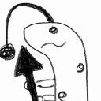
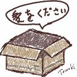
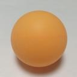
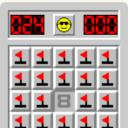
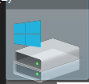
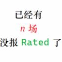

| AHC038 Oct/2024 |
(2000 test cases)
(TR<23%)
(23%<=TR<36%)
(TR>=36%)


| Final Results (2000 test cases) | N (Grid Size) | V (Number of Vertices Available) | M / (N^2) (Takoyaki Ratio) | |||||||||||||||||||||||||||||||||||
|---|---|---|---|---|---|---|---|---|---|---|---|---|---|---|---|---|---|---|---|---|---|---|---|---|---|---|---|---|---|---|---|---|---|---|---|---|---|---|---|
| [15,18] | [19,22] | [23,26] | [27,30] | [5,6] | [7,8] | [9,11] | [12,13] | [14,15] | Sparse (TR<23%) | Medium (23%<=TR<36%) | Dense (TR>=36%) | ||||||||||||||||||||||||||||
| 513 cases | 467 cases | 533 cases | 487 cases | 369 cases | 377 cases | 577 cases | 332 cases | 345 cases | 654 cases | 665 cases | 681 cases | ||||||||||||||||||||||||||||
| Pos | Coder | Rating | Language | Score | Bests | Uniques | Fails | Avg.Time | Max.Time | Score | Pos | Score | Pos | Score | Pos | Score | Pos | Score | Pos | Score | Pos | Score | Pos | Score | Pos | Score | Pos | Score | Pos | Score | Pos | Score | Pos | ||||||
| 1 | | USA | 3352 | C++ 23 | 99.340 | 1506 | 703 | 0 | 2356 | 2518 | 99.323 | 1 | 99.219 | 1 | 99.468 | 1 | 99.336 | 1 | 99.154 | 1 | 98.875 | 1 | 99.322 | 1 | 99.504 | 1 | 99.922 | 1 | 99.152 | 1 | 99.485 | 1 | 99.380 | 1 | |||||
| 2 | | | Jirotech | 3125 | C++ 23 | 96.406 | 433 | 70 | 2 | 1805 | 2683 | 95.880 | 4 | 96.694 | 2 | 97.247 | 2 | 95.763 | 4 | 95.745 | 4 | 97.757 | 2 | 96.713 | 5 | 96.351 | 3 | 95.177 | 3 | 95.734 | 2 | 96.627 | 2 | 96.836 | 3 | ||||
| 3 | | | montplusa | 2817 | Go | 96.296 | 292 | 31 | 0 | 2662 | 2862 | 96.305 | 3 | 96.450 | 3 | 96.550 | 3 | 95.861 | 3 | 96.596 | 2 | 96.245 | 6 | 96.612 | 6 | 96.410 | 2 | 95.394 | 2 | 95.432 | 3 | 96.544 | 3 | 96.883 | 2 | ||||
| 4 | | | saharan | 3093 | C++ 20 | 95.689 | 473 | 112 | 0 | 2774 | 2964 | 93.737 | 8 | 96.249 | 4 | 96.281 | 4 | 96.560 | 2 | 92.809 | 7 | 97.423 | 4 | 97.671 | 3 | 96.291 | 4 | 92.980 | 5 | 95.365 | 5 | 95.822 | 5 | 95.871 | 4 | ||||
| 5 | | | bowwowforeach | 3209 | C++ 23 | 95.573 | 257 | 24 | 0 | 2958 | 2964 | 96.589 | 2 | 95.791 | 5 | 95.266 | 7 | 94.630 | 7 | 96.581 | 3 | 95.763 | 8 | 95.645 | 8 | 95.729 | 5 | 94.017 | 4 | 95.420 | 4 | 95.685 | 6 | 95.610 | 6 | ||||
| 6 | | | wleite | 2849 | Java | 95.513 | 419 | 57 | 0 | 2929 | 2996 | 94.434 | 6 | 95.767 | 6 | 96.146 | 5 | 95.714 | 5 | 92.791 | 8 | 97.714 | 3 | 97.679 | 2 | 95.692 | 6 | 92.225 | 6 | 94.810 | 6 | 95.887 | 4 | 95.823 | 5 | ||||
| 7 | | | Shun_PI | 2921 | C++ 20 | 94.880 | 269 | 37 | 0 | 2604 | 2869 | 93.841 | 7 | 95.262 | 7 | 95.666 | 6 | 94.746 | 6 | 91.975 | 9 | 96.850 | 5 | 96.941 | 4 | 95.522 | 7 | 91.767 | 7 | 94.480 | 7 | 95.038 | 8 | 95.108 | 8 | ||||
| 8 | | | yochan | 2736 | C++ 20 | 94.806 | 203 | 18 | 0 | 1981 | 2631 | 94.761 | 5 | 94.967 | 8 | 95.031 | 8 | 94.451 | 8 | 95.125 | 5 | 96.162 | 7 | 96.342 | 7 | 94.490 | 8 | 90.716 | 10 | 93.704 | 8 | 95.239 | 7 | 95.441 | 7 | ||||
| 9 | | asi1024 | 2701 | C++ 23 | 92.306 | 45 | 4 | 0 | 2971 | 2974 | 92.058 | 11 | 92.859 | 9 | 92.589 | 9 | 91.728 | 10 | 89.094 | 16 | 92.424 | 14 | 94.750 | 9 | 93.049 | 10 | 90.811 | 8 | 92.312 | 9 | 92.412 | 9 | 92.197 | 12 | |||||
| 10 | | | Psyho | 3019 | C++ 20 | 92.228 | 27 | 1 | 0 | 1723 | 2653 | 91.457 | 13 | 92.518 | 10 | 92.562 | 10 | 92.397 | 9 | 89.399 | 14 | 92.756 | 10 | 94.090 | 10 | 93.051 | 9 | 90.771 | 9 | 92.045 | 10 | 92.411 | 10 | 92.225 | 10 | ||||
| 11 | | | wanui | 2760 | C++ 20 | 91.878 | 41 | 2 | 0 | 2703 | 2990 | 92.060 | 10 | 92.002 | 12 | 92.310 | 11 | 91.094 | 12 | 91.202 | 10 | 93.474 | 9 | 93.149 | 13 | 91.837 | 12 | 88.769 | 13 | 91.279 | 13 | 92.123 | 11 | 92.213 | 11 | ||||
| 12 | | | MathGorilla | 2530 | C++ 20 | 91.821 | 29 | 2 | 0 | 2124 | 2845 | 92.130 | 9 | 92.026 | 11 | 91.827 | 12 | 91.291 | 11 | 94.212 | 6 | 92.710 | 12 | 91.849 | 16 | 90.885 | 16 | 89.145 | 12 | 91.331 | 12 | 91.862 | 12 | 92.251 | 9 | ||||
| 13 | | | rabot | 2619 | Java | 91.386 | 18 | 2 | 0 | 2642 | 2987 | 91.664 | 12 | 91.799 | 13 | 91.363 | 14 | 90.722 | 14 | 90.148 | 13 | 92.748 | 11 | 92.689 | 15 | 91.116 | 14 | 89.302 | 11 | 91.486 | 11 | 91.434 | 13 | 91.242 | 13 | ||||
| 14 | | soumat | 2762 | C++ 23 | 90.910 | 6 | 0 | 0 | 1264 | 2065 | 89.513 | 17 | 91.570 | 14 | 91.522 | 13 | 91.077 | 13 | 87.710 | 17 | 92.406 | 15 | 93.459 | 12 | 91.540 | 13 | 87.827 | 16 | 90.692 | 14 | 91.061 | 14 | 90.971 | 14 | |||||
| 15 | | | tomerun | 2957 | Rust | 90.485 | 6 | 0 | 0 | 2901 | 2933 | 90.903 | 15 | 90.524 | 15 | 90.374 | 15 | 90.127 | 15 | 89.343 | 15 | 91.378 | 16 | 91.650 | 17 | 90.928 | 15 | 88.354 | 15 | 90.365 | 15 | 90.562 | 15 | 90.523 | 15 | ||||
| 16 | | | sas4eka | 2063 | C++ 20 | 88.711 | 0 | 0 | 0 | 2421 | 2877 | 88.749 | 20 | 89.000 | 19 | 88.751 | 16 | 88.352 | 16 | 86.882 | 18 | 89.921 | 18 | 90.078 | 19 | 88.999 | 19 | 86.784 | 19 | 89.203 | 18 | 88.814 | 16 | 88.139 | 19 | ||||
| 17 | | | sugarrr | 2814 | C++ 20 | 88.614 | 32 | 1 | 0 | 2406 | 2965 | 91.399 | 14 | 89.891 | 18 | 87.591 | 22 | 85.576 | 21 | 86.020 | 23 | 89.287 | 20 | 89.637 | 20 | 89.131 | 18 | 88.444 | 14 | 89.837 | 16 | 88.477 | 18 | 87.574 | 20 | ||||
| 18 | | | risujiroh | 2576 | C++ 20 | 88.451 | 23 | 2 | 4 | 2547 | 2848 | 89.391 | 18 | 90.445 | 16 | 87.770 | 20 | 86.294 | 19 | 73.447 | 44 | 92.694 | 13 | 93.992 | 11 | 91.923 | 11 | 87.253 | 18 | 88.183 | 20 | 88.463 | 19 | 88.696 | 16 | ||||
| 19 | | | ogawakun | 2112 | C++ 17 | 88.136 | 7 | 1 | 40 | 2862 | 2999 | 89.181 | 19 | 90.269 | 17 | 88.557 | 17 | 84.530 | 24 | 86.666 | 20 | 81.103 | 32 | 92.713 | 14 | 90.668 | 17 | 87.305 | 17 | 89.244 | 17 | 87.700 | 22 | 87.498 | 21 | ||||
| 20 | | Bolero | 1966 | C++ 23 | 88.064 | 8 | 2 | 2 | 2907 | 2912 | 87.770 | 23 | 88.314 | 22 | 88.209 | 18 | 87.975 | 17 | 90.496 | 12 | 89.590 | 19 | 89.376 | 21 | 87.013 | 22 | 82.613 | 23 | 86.998 | 22 | 88.638 | 17 | 88.527 | 18 | |||||
| 21 | | rfv6 | 1516 | C++ 20 | 87.948 | 3 | 0 | 0 | 2706 | 2737 | 87.800 | 22 | 88.445 | 21 | 88.057 | 19 | 87.506 | 18 | 86.241 | 21 | 88.192 | 21 | 90.079 | 18 | 88.935 | 20 | 84.990 | 21 | 87.147 | 21 | 88.095 | 20 | 88.573 | 17 | |||||
| 22 | | | c7c7 | 2901 | C++ 23 | 87.873 | 3 | 0 | 9 | 2958 | 3000 | 90.227 | 16 | 88.569 | 20 | 87.683 | 21 | 84.933 | 22 | 90.749 | 11 | 90.707 | 17 | 89.217 | 22 | 86.570 | 23 | 80.705 | 29 | 88.967 | 19 | 87.992 | 21 | 86.705 | 23 | ||||
| 23 | | | uta_ccc | 2282 | Nim | 86.718 | 1 | 0 | 41 | 2910 | 2940 | 87.830 | 21 | 86.592 | 23 | 86.383 | 23 | 86.036 | 20 | 81.989 | 30 | 87.877 | 22 | 88.926 | 23 | 88.277 | 21 | 85.320 | 20 | 85.981 | 23 | 86.919 | 23 | 87.231 | 22 | ||||
| 24 | | | maeda3 | 2318 | C++ 20 | 85.260 | 2 | 0 | 0 | 2664 | 2902 | 85.628 | 25 | 85.712 | 24 | 85.175 | 24 | 84.532 | 23 | 85.397 | 25 | 84.606 | 24 | 88.104 | 24 | 85.180 | 25 | 81.146 | 28 | 85.658 | 24 | 85.347 | 24 | 84.792 | 25 | ||||
| 25 | | behoma8 | 2270 | C# 11.0 AOT | 84.131 | 2 | 0 | 0 | 2804 | 2822 | 85.844 | 24 | 84.498 | 27 | 83.472 | 27 | 82.695 | 26 | 85.601 | 24 | 84.550 | 25 | 84.476 | 28 | 83.840 | 27 | 81.801 | 25 | 84.859 | 25 | 83.903 | 26 | 83.653 | 27 | |||||
| 26 | | soto800 | 2206 | C++ 23 | 83.831 | 1 | 1 | 0 | 2910 | 2982 | 84.447 | 27 | 85.052 | 25 | 84.142 | 25 | 81.671 | 28 | 82.107 | 28 | 87.129 | 23 | 85.825 | 25 | 83.626 | 30 | 78.933 | 32 | 81.927 | 30 | 84.115 | 25 | 85.382 | 24 | |||||
| 27 | | Moegi | 2379 | C++ 20 | 83.035 | 0 | 0 | 12 | 727 | 2992 | 81.890 | 32 | 83.361 | 30 | 83.857 | 26 | 83.030 | 25 | 84.285 | 26 | 80.759 | 33 | 85.326 | 27 | 83.678 | 29 | 79.737 | 31 | 82.009 | 28 | 83.773 | 27 | 83.300 | 28 | |||||
| 28 | | mekemeke_san | 2126 | C++ 20 | 82.839 | 0 | 0 | 0 | 2437 | 2536 | 85.555 | 26 | 83.930 | 28 | 81.663 | 30 | 80.219 | 30 | 86.768 | 19 | 83.646 | 26 | 81.114 | 36 | 81.632 | 33 | 81.801 | 24 | 83.990 | 26 | 82.583 | 29 | 81.984 | 30 | |||||
| 29 | | besukohu | 2414 | C++ 20 | 82.749 | 0 | 0 | 1 | 2322 | 2971 | 83.155 | 29 | 83.673 | 29 | 82.346 | 29 | 81.878 | 27 | 82.911 | 27 | 81.201 | 31 | 84.444 | 29 | 82.672 | 31 | 81.510 | 26 | 83.412 | 27 | 82.649 | 28 | 82.210 | 29 | |||||
| 30 | | shingo0909 | 1863 | C++ 20 | 81.967 | 0 | 0 | 0 | 2835 | 2943 | 81.430 | 33 | 82.139 | 31 | 82.833 | 28 | 81.421 | 29 | 79.781 | 34 | 80.683 | 34 | 83.583 | 31 | 83.753 | 28 | 81.288 | 27 | 79.676 | 36 | 82.455 | 30 | 83.692 | 26 | |||||
| 31 | | | yowa | 2541 | C++ 20 | 81.272 | 0 | 0 | 0 | 1291 | 2720 | 82.082 | 31 | 81.992 | 32 | 81.056 | 31 | 79.964 | 31 | 79.535 | 35 | 81.729 | 28 | 84.193 | 30 | 81.901 | 32 | 77.138 | 37 | 81.307 | 32 | 81.478 | 31 | 81.037 | 31 | ||||
| 32 | | | yosss | 2585 | C++ 20 | 81.149 | 0 | 0 | 0 | 2326 | 2632 | 84.379 | 28 | 84.594 | 26 | 78.717 | 35 | 77.105 | 36 | 71.458 | 51 | 81.659 | 29 | 85.480 | 26 | 84.387 | 26 | 80.596 | 30 | 81.952 | 29 | 81.026 | 32 | 80.498 | 33 | ||||
| 33 | | | Fuyuru | 1761 | C++ 20 | 80.553 | 0 | 0 | 0 | 2911 | 2998 | 81.239 | 36 | 80.829 | 33 | 80.455 | 32 | 79.676 | 33 | 82.066 | 29 | 82.601 | 27 | 82.410 | 33 | 78.906 | 39 | 75.178 | 42 | 79.874 | 35 | 80.914 | 33 | 80.854 | 32 | ||||
| 34 |  | | Jinapetto | 2166 | C++ 20 | 80.474 | 0 | 0 | 0 | 341 | 1463 | 82.338 | 30 | 80.413 | 35 | 79.440 | 34 | 79.700 | 32 | 70.939 | 53 | 78.708 | 36 | 83.016 | 32 | 85.401 | 24 | 83.611 | 22 | 81.430 | 31 | 80.642 | 34 | 79.393 | 35 | ||||
| 35 | | Shibuyap | 2610 | C++ 23 | 80.153 | 0 | 0 | 0 | 2906 | 2936 | 81.248 | 35 | 80.714 | 34 | 79.713 | 33 | 78.943 | 34 | 79.069 | 36 | 80.539 | 35 | 81.603 | 35 | 80.742 | 35 | 77.899 | 35 | 80.148 | 34 | 80.250 | 35 | 80.063 | 34 | |||||
| 36 | | | titia | 2217 | Rust | 78.255 | 0 | 0 | 2 | 2846 | 2999 | 78.435 | 38 | 78.153 | 37 | 78.378 | 36 | 78.030 | 35 | 74.970 | 40 | 78.670 | 37 | 80.676 | 37 | 79.720 | 37 | 75.859 | 40 | 77.470 | 38 | 78.443 | 36 | 78.827 | 36 | ||||
| 37 | | | dn6049949 | 2699 | C++ 23 | 78.246 | 0 | 0 | 0 | 2944 | 2956 | 81.288 | 34 | 80.244 | 36 | 76.624 | 37 | 74.901 | 37 | 72.418 | 48 | 75.857 | 39 | 81.811 | 34 | 80.762 | 34 | 78.706 | 33 | 80.170 | 33 | 78.205 | 37 | 76.438 | 38 | ||||
| 38 | | | itigo | 2534 | C++ 20 | 76.526 | 0 | 0 | 0 | 2803 | 2807 | 78.328 | 39 | 77.170 | 39 | 75.941 | 38 | 74.650 | 38 | 71.439 | 52 | 75.687 | 41 | 78.436 | 39 | 78.913 | 38 | 77.391 | 36 | 76.113 | 40 | 76.606 | 38 | 76.844 | 37 | ||||
| 39 | | | Kahuka | 2235 | C++ 20 | 76.192 | 0 | 0 | 0 | 2763 | 2905 | 80.567 | 37 | 77.565 | 38 | 74.504 | 41 | 72.113 | 43 | 86.025 | 22 | 81.221 | 30 | 75.991 | 45 | 70.501 | 50 | 65.991 | 55 | 78.206 | 37 | 75.825 | 40 | 74.615 | 41 | ||||
| 40 | | kabipoyo | 2194 | C++ 23 | 75.937 | 0 | 0 | 0 | 2967 | 2977 | 78.147 | 40 | 76.466 | 40 | 75.136 | 39 | 73.976 | 40 | 75.652 | 38 | 75.403 | 42 | 76.471 | 44 | 75.724 | 43 | 76.135 | 39 | 76.179 | 39 | 76.010 | 39 | 75.632 | 39 | |||||
| 41 | | | kozima | 2572 | Rust | 74.580 | 0 | 0 | 0 | 826 | 1604 | 74.944 | 42 | 75.557 | 41 | 74.347 | 42 | 73.517 | 41 | 67.560 | 59 | 71.879 | 51 | 78.272 | 40 | 77.330 | 41 | 76.222 | 38 | 75.022 | 41 | 74.477 | 42 | 74.257 | 42 | ||||
| 42 | | sig_256 | 1761 | C++ 17 | 74.217 | 0 | 0 | 0 | 99 | 801 | 74.064 | 47 | 75.246 | 42 | 74.634 | 40 | 72.935 | 42 | 73.933 | 42 | 74.909 | 46 | 76.520 | 43 | 73.990 | 45 | 70.130 | 50 | 72.855 | 45 | 74.580 | 41 | 75.170 | 40 | |||||
| 43 | | | notkamonohasi | 2323 | C++ 20 | 73.909 | 0 | 0 | 0 | 2857 | 2867 | 74.581 | 43 | 74.061 | 43 | 72.590 | 44 | 74.497 | 39 | 56.999 | 84 | 78.523 | 38 | 78.858 | 38 | 77.779 | 40 | 74.951 | 43 | 74.313 | 42 | 74.181 | 43 | 73.254 | 43 | ||||
| 44 | | y_kawano | 2311 | C++ 20 | 72.670 | 0 | 0 | 0 | 2705 | 2809 | 73.492 | 49 | 73.079 | 45 | 72.763 | 43 | 71.309 | 44 | 68.617 | 57 | 72.902 | 48 | 75.021 | 46 | 73.978 | 46 | 71.558 | 46 | 72.035 | 48 | 72.993 | 44 | 72.964 | 45 | |||||
| 45 | | | memin | 1742 | C++ 20 | 72.636 | 0 | 0 | 0 | 2952 | 2959 | 76.022 | 41 | 73.260 | 44 | 71.525 | 45 | 69.688 | 49 | 77.357 | 37 | 75.341 | 43 | 71.388 | 50 | 69.789 | 52 | 69.460 | 51 | 71.906 | 49 | 72.850 | 45 | 73.129 | 44 | ||||
| 46 | | Rafbill | 3112 | C++ 23 | 71.838 | 0 | 0 | 0 | 2901 | 2903 | 74.100 | 46 | 71.215 | 49 | 71.014 | 47 | 70.957 | 45 | 73.197 | 45 | 71.986 | 50 | 71.649 | 49 | 71.565 | 49 | 70.805 | 47 | 74.178 | 43 | 71.372 | 47 | 70.047 | 49 | |||||
| 47 | | wtc | 1260 | C++ 20 | 71.381 | 0 | 0 | 59 | 2956 | 2994 | 74.298 | 44 | 70.789 | 50 | 70.535 | 48 | 69.803 | 48 | 52.705 | 100 | 75.169 | 44 | 77.171 | 41 | 74.831 | 44 | 74.214 | 44 | 71.800 | 50 | 71.882 | 46 | 70.490 | 48 | |||||
| 48 | | | noimi | 2633 | C++ 20 | 71.364 | 0 | 0 | 4 | 2952 | 2955 | 73.511 | 48 | 69.878 | 52 | 71.061 | 46 | 70.860 | 47 | 68.118 | 58 | 71.749 | 53 | 73.176 | 48 | 72.195 | 47 | 70.587 | 48 | 73.540 | 44 | 70.956 | 48 | 69.673 | 50 | ||||
| 49 | | | ssaattoo | 2416 | Rust | 70.840 | 0 | 0 | 14 | 2839 | 2920 | 74.142 | 45 | 71.469 | 47 | 70.047 | 50 | 67.627 | 53 | 79.911 | 33 | 75.115 | 45 | 68.429 | 55 | 66.527 | 59 | 64.651 | 59 | 72.642 | 46 | 70.928 | 49 | 69.024 | 53 | ||||
| 50 | | sor4chi | 1755 | Rust | 70.487 | 0 | 0 | 0 | 2960 | 2970 | 72.878 | 52 | 73.025 | 46 | 67.491 | 55 | 68.813 | 50 | 54.062 | 96 | 61.325 | 69 | 76.991 | 42 | 79.813 | 36 | 78.214 | 34 | 72.550 | 47 | 70.041 | 51 | 68.941 | 54 | |||||
| 51 | | KFrom40 | 1606 | PHP | 70.071 | 0 | 0 | 0 | 2395 | 2843 | 70.168 | 56 | 68.992 | 56 | 70.185 | 49 | 70.882 | 46 | 73.024 | 46 | 72.794 | 49 | 70.353 | 53 | 67.627 | 57 | 65.821 | 56 | 67.704 | 57 | 70.607 | 50 | 71.822 | 47 | |||||
| 52 | | sash0 | 2282 | Rust | 69.832 | 0 | 0 | 0 | 1567 | 2622 | 71.955 | 53 | 71.254 | 48 | 69.451 | 51 | 66.649 | 54 | 80.412 | 32 | 75.737 | 40 | 69.293 | 54 | 63.142 | 64 | 59.402 | 66 | 70.290 | 51 | 69.889 | 52 | 69.337 | 52 | |||||
| 53 | | | komori3 | 2423 | C++ 23 | 69.814 | 0 | 0 | 0 | 2902 | 2905 | 73.236 | 51 | 69.192 | 54 | 68.479 | 54 | 68.266 | 51 | 71.522 | 49 | 68.599 | 56 | 73.271 | 47 | 68.049 | 55 | 65.231 | 58 | 70.103 | 52 | 69.733 | 53 | 69.616 | 51 | ||||
| 54 | | titan23 | 2086 | C++ 23 | 68.690 | 0 | 0 | 0 | 1644 | 2636 | 71.196 | 55 | 70.214 | 51 | 68.499 | 53 | 64.798 | 56 | 81.462 | 31 | 74.004 | 47 | 67.589 | 57 | 61.816 | 67 | 57.679 | 68 | 64.511 | 62 | 69.407 | 54 | 72.004 | 46 | |||||
| 55 | | yadokani389 | 1568 | Rust | 68.554 | 0 | 0 | 0 | 2503 | 2589 | 68.526 | 61 | 69.054 | 55 | 68.671 | 52 | 67.977 | 52 | 67.435 | 61 | 69.258 | 54 | 70.662 | 52 | 68.593 | 53 | 65.420 | 57 | 68.797 | 54 | 68.620 | 55 | 68.257 | 55 | |||||
| 56 | | nouka28 | 1859 | C++ 20 | 68.477 | 0 | 0 | 1 | 2819 | 3000 | 73.443 | 50 | 69.803 | 53 | 66.409 | 56 | 64.238 | 58 | 71.482 | 50 | 68.615 | 55 | 67.967 | 56 | 67.455 | 58 | 66.950 | 53 | 69.680 | 53 | 68.393 | 56 | 67.404 | 56 | |||||
| 57 | | | ymatsux | 2879 | C++ 23 | 66.752 | 0 | 0 | 1 | 1717 | 2836 | 69.700 | 58 | 67.608 | 57 | 65.336 | 57 | 64.377 | 57 | 64.644 | 63 | 64.929 | 60 | 67.234 | 59 | 68.246 | 54 | 68.756 | 52 | 68.508 | 55 | 66.396 | 57 | 65.414 | 57 | ||||
| 58 | | Nekomimimi | 1920 | C++ 17 | 65.967 | 0 | 0 | 14 | 2934 | 2999 | 69.973 | 57 | 67.307 | 59 | 64.752 | 58 | 61.791 | 60 | 72.808 | 47 | 71.865 | 52 | 67.116 | 60 | 60.262 | 69 | 55.770 | 72 | 66.400 | 58 | 66.296 | 58 | 65.230 | 58 | |||||
| 59 | | plcherrim | 2352 | C++ 23 | 65.751 | 0 | 0 | 2 | 2903 | 2950 | 71.921 | 54 | 67.536 | 58 | 63.263 | 61 | 60.263 | 64 | 62.851 | 66 | 64.313 | 63 | 66.939 | 61 | 68.033 | 56 | 66.242 | 54 | 67.969 | 56 | 65.338 | 59 | 64.024 | 59 | |||||
| 60 | | | fumin29 | 1797 | Rust | 63.502 | 0 | 0 | 0 | 2992 | 2997 | 65.399 | 66 | 64.297 | 62 | 62.350 | 62 | 62.004 | 59 | 57.613 | 80 | 65.158 | 59 | 65.801 | 62 | 63.518 | 63 | 64.132 | 61 | 64.562 | 61 | 63.530 | 60 | 62.458 | 64 | ||||
| 61 | | krit3379 | 1543 | C++ 20 | 63.410 | 0 | 0 | 0 | 1820 | 2863 | 61.542 | 72 | 63.082 | 64 | 63.944 | 59 | 65.106 | 55 | 55.853 | 88 | 56.247 | 84 | 64.858 | 64 | 70.201 | 51 | 70.360 | 49 | 63.538 | 63 | 63.382 | 61 | 63.313 | 61 | |||||
| 62 | | haihamabossu | 1861 | C++ 20 | 63.201 | 0 | 0 | 2 | 2902 | 2923 | 68.661 | 60 | 62.278 | 65 | 60.896 | 66 | 60.858 | 61 | 44.784 | 134 | 46.293 | 119 | 71.141 | 51 | 76.343 | 42 | 75.450 | 41 | 65.164 | 59 | 62.573 | 63 | 61.930 | 65 | |||||
| 63 | | | tour2st | 1858 | C++ 20 | 63.008 | 0 | 0 | 66 | 919 | 2631 | 65.016 | 67 | 64.684 | 60 | 63.816 | 60 | 58.401 | 68 | 55.167 | 90 | 67.557 | 57 | 67.254 | 58 | 61.891 | 66 | 60.398 | 65 | 63.251 | 64 | 63.223 | 62 | 62.565 | 63 | ||||
| 64 | | vesper | 1319 | Rust | 61.943 | 0 | 0 | 0 | 2094 | 2966 | 66.552 | 64 | 63.498 | 63 | 59.640 | 68 | 58.118 | 69 | 57.761 | 79 | 63.066 | 64 | 63.643 | 67 | 62.125 | 65 | 62.171 | 64 | 65.159 | 60 | 61.527 | 65 | 59.261 | 71 | |||||
| 65 | | Xflp | 1613 | C++ 17 | 61.457 | 0 | 0 | 0 | 969 | 2544 | 62.226 | 71 | 62.087 | 68 | 61.252 | 64 | 60.266 | 63 | 51.668 | 104 | 60.238 | 72 | 65.281 | 63 | 65.636 | 60 | 62.842 | 63 | 61.150 | 67 | 61.413 | 66 | 61.795 | 66 | |||||
| 66 | | minordaimyo | 1691 | C++ 20 | 61.000 | 0 | 0 | 0 | 709 | 2478 | 63.609 | 69 | 57.561 | 76 | 61.704 | 63 | 60.779 | 62 | 51.223 | 107 | 57.796 | 76 | 64.849 | 65 | 65.159 | 61 | 64.519 | 60 | 58.731 | 73 | 61.551 | 64 | 62.641 | 62 | |||||
| 67 | | Jeffrey | 1994 | C++ 20 | 60.977 | 0 | 0 | 0 | 2510 | 2582 | 66.579 | 63 | 59.171 | 73 | 58.554 | 71 | 59.458 | 66 | 55.184 | 89 | 60.613 | 71 | 61.697 | 68 | 64.382 | 62 | 63.088 | 62 | 63.048 | 65 | 60.832 | 69 | 59.129 | 72 | |||||
| 68 | | HayatoFujihara | 1456 | C++ 20 | 60.617 | 0 | 0 | 0 | 2952 | 2973 | 66.264 | 65 | 62.137 | 67 | 60.008 | 67 | 53.876 | 75 | 67.510 | 60 | 63.054 | 65 | 60.926 | 69 | 57.116 | 74 | 53.432 | 77 | 60.025 | 70 | 61.148 | 67 | 60.666 | 67 | |||||
| 69 | | | OjiCoder | 1994 | C++ 23 | 60.377 | 0 | 0 | 0 | 1872 | 2998 | 69.458 | 59 | 64.572 | 61 | 57.382 | 73 | 50.068 | 94 | 69.958 | 55 | 63.046 | 66 | 56.537 | 81 | 57.381 | 73 | 56.521 | 70 | 62.187 | 66 | 60.888 | 68 | 58.141 | 74 | ||||
| 70 | | Ang107 | 2157 | Nim | 59.937 | 0 | 0 | 2 | 1532 | 2991 | 60.306 | 76 | 59.879 | 70 | 60.939 | 65 | 58.506 | 67 | 75.608 | 39 | 64.683 | 61 | 57.804 | 75 | 52.629 | 86 | 48.588 | 94 | 55.380 | 83 | 60.510 | 70 | 63.753 | 60 | |||||
| 71 | | | ToastUz | 2244 | Rust | 59.792 | 0 | 0 | 0 | 2128 | 2610 | 67.612 | 62 | 62.179 | 66 | 56.925 | 74 | 52.402 | 83 | 74.582 | 41 | 65.182 | 58 | 57.889 | 74 | 52.450 | 87 | 48.329 | 95 | 60.784 | 68 | 59.853 | 71 | 58.779 | 73 | ||||
| 72 | | Koi51 | 2278 | Python | 59.715 | 0 | 0 | 0 | 2702 | 2859 | 62.591 | 70 | 60.250 | 69 | 58.711 | 70 | 57.270 | 70 | 73.507 | 43 | 64.371 | 62 | 59.669 | 72 | 52.335 | 88 | 47.055 | 98 | 60.313 | 69 | 59.473 | 72 | 59.376 | 70 | |||||
| 73 | | breso | 2011 | C++ 23 | 59.036 | 0 | 0 | 0 | 2901 | 2902 | 61.487 | 73 | 59.473 | 71 | 58.224 | 72 | 56.923 | 71 | 69.757 | 56 | 62.660 | 67 | 58.586 | 73 | 53.268 | 84 | 49.910 | 89 | 58.339 | 75 | 59.070 | 73 | 59.670 | 69 | |||||
| 74 | | | SuppliLion | 1923 | Python | 58.457 | 0 | 0 | 3 | 1356 | 2789 | 56.944 | 84 | 57.765 | 75 | 59.497 | 69 | 59.578 | 65 | 53.254 | 98 | 59.189 | 73 | 59.726 | 71 | 60.286 | 68 | 59.341 | 67 | 56.724 | 78 | 58.588 | 74 | 59.995 | 68 | ||||
| 75 | | | ninja7 | 1931 | C++ 23 | 57.758 | 0 | 0 | 24 | 2653 | 2992 | 64.491 | 68 | 59.192 | 72 | 55.335 | 79 | 51.942 | 84 | 70.397 | 54 | 61.420 | 68 | 55.894 | 83 | 52.154 | 90 | 48.747 | 93 | 58.447 | 74 | 58.089 | 75 | 56.772 | 76 | ||||
| 76 | | fgwiebfaoish | 2427 | Rust | 56.943 | 0 | 0 | 1 | 2801 | 2979 | 60.561 | 75 | 58.449 | 74 | 55.435 | 78 | 53.338 | 78 | 63.011 | 64 | 57.252 | 77 | 55.721 | 85 | 55.103 | 76 | 53.931 | 76 | 58.943 | 71 | 56.670 | 76 | 55.290 | 79 | |||||
| 77 | | lotusblume | 1716 | C++ 20 | 56.419 | 0 | 0 | 11 | 2800 | 2811 | 56.543 | 91 | 56.269 | 80 | 56.499 | 75 | 56.345 | 72 | 59.124 | 75 | 58.815 | 74 | 57.434 | 78 | 54.523 | 77 | 51.036 | 84 | 56.328 | 79 | 56.151 | 78 | 56.768 | 77 | |||||
| 78 | | | scol | 1775 | C++ 23 | 56.052 | 0 | 0 | 0 | 333 | 2909 | 58.936 | 80 | 56.788 | 78 | 55.687 | 77 | 52.709 | 80 | 54.480 | 94 | 54.275 | 88 | 57.542 | 76 | 58.046 | 71 | 55.266 | 73 | 55.148 | 85 | 56.496 | 77 | 56.487 | 78 | ||||
| 79 | | | tsukammo | 2459 | Java | 55.926 | 0 | 0 | 18 | 1628 | 2978 | 57.098 | 82 | 57.279 | 77 | 55.990 | 76 | 53.325 | 79 | 62.859 | 65 | 52.001 | 102 | 57.237 | 79 | 53.846 | 81 | 52.611 | 81 | 55.338 | 84 | 55.598 | 79 | 56.811 | 75 | ||||
| 80 | | | yu_w | 1965 | Python | 55.814 | 0 | 0 | 0 | 1141 | 2828 | 60.783 | 74 | 55.604 | 84 | 53.428 | 86 | 53.392 | 77 | 30.089 | 259 | 38.759 | 157 | 64.184 | 66 | 71.805 | 48 | 72.578 | 45 | 58.911 | 72 | 55.195 | 81 | 53.443 | 89 | ||||
| 81 | | arvindf232 | 2030 | Kotlin | 55.732 | 0 | 0 | 0 | 1289 | 2992 | 56.626 | 89 | 56.187 | 81 | 55.307 | 81 | 54.821 | 74 | 60.393 | 71 | 56.579 | 80 | 54.737 | 86 | 53.993 | 78 | 53.161 | 79 | 57.128 | 77 | 55.439 | 80 | 54.679 | 81 | |||||
| 82 | | | siman | 2849 | C++ 20 | 55.413 | 0 | 0 | 0 | 2247 | 2827 | 59.548 | 78 | 56.447 | 79 | 53.988 | 84 | 51.627 | 87 | 60.775 | 69 | 55.824 | 85 | 54.254 | 90 | 53.494 | 82 | 53.016 | 80 | 57.181 | 76 | 55.104 | 82 | 54.017 | 87 | ||||
| 83 | | adapchi | 2020 | Rust | 55.073 | 0 | 0 | 0 | 803 | 2995 | 54.113 | 99 | 55.925 | 82 | 55.321 | 80 | 54.996 | 73 | 55.090 | 92 | 54.227 | 89 | 54.447 | 89 | 55.630 | 75 | 56.490 | 71 | 55.489 | 82 | 55.046 | 83 | 54.700 | 80 | |||||
| 84 | | ra5anchor | 2091 | Python | 54.701 | 0 | 0 | 0 | 2741 | 2935 | 56.602 | 90 | 55.472 | 85 | 54.034 | 83 | 52.689 | 81 | 60.140 | 72 | 53.734 | 91 | 55.744 | 84 | 52.183 | 89 | 50.616 | 86 | 55.138 | 86 | 54.617 | 84 | 54.363 | 82 | |||||
| 85 | | nishigake | 2011 | C++ 23 | 54.628 | 0 | 0 | 0 | 2703 | 2761 | 60.235 | 77 | 55.925 | 83 | 51.912 | 91 | 50.450 | 91 | 62.391 | 67 | 56.562 | 81 | 53.305 | 92 | 51.319 | 91 | 49.608 | 90 | 56.197 | 80 | 54.336 | 86 | 53.406 | 90 | |||||
| 86 | | kurakura | 2271 | C++ 20 | 54.358 | 0 | 0 | 1 | 1810 | 2868 | 56.897 | 85 | 54.188 | 89 | 53.722 | 85 | 52.541 | 82 | 51.779 | 102 | 58.325 | 75 | 56.654 | 80 | 49.135 | 98 | 53.966 | 75 | 55.911 | 81 | 54.138 | 87 | 53.081 | 92 | |||||
| 87 | | | yupiteru | 2237 | C# 11.0 AOT | 53.973 | 0 | 0 | 17 | 2540 | 3000 | 56.655 | 87 | 54.867 | 87 | 52.663 | 89 | 51.726 | 86 | 51.937 | 101 | 53.176 | 94 | 57.511 | 77 | 53.861 | 80 | 51.214 | 83 | 55.121 | 87 | 54.420 | 85 | 52.435 | 93 | ||||
| 88 | | | C7BMkOO7Qbmcwck7 | 2376 | Java | 53.879 | 0 | 0 | 8 | 223 | 941 | 53.702 | 102 | 54.045 | 91 | 54.053 | 82 | 53.715 | 76 | 38.845 | 194 | 53.894 | 90 | 59.955 | 70 | 59.015 | 70 | 54.837 | 74 | 53.615 | 92 | 53.844 | 88 | 54.166 | 85 | ||||
| 89 | | kadonox | 1696 | Python | 53.578 | 0 | 0 | 0 | 2837 | 2919 | 54.972 | 97 | 54.889 | 86 | 53.316 | 87 | 51.138 | 88 | 55.117 | 91 | 61.293 | 70 | 54.487 | 88 | 49.762 | 95 | 45.652 | 107 | 53.173 | 94 | 53.835 | 89 | 53.715 | 88 | |||||
| 90 | | | miku | 2221 | C++ 20 | 53.218 | 0 | 0 | 0 | 2805 | 2847 | 56.398 | 92 | 53.673 | 92 | 52.212 | 90 | 50.535 | 90 | 59.996 | 73 | 56.796 | 79 | 52.598 | 95 | 49.288 | 96 | 46.880 | 100 | 52.012 | 97 | 53.452 | 90 | 54.149 | 86 | ||||
| 91 | | ANgt | 1200 | Java | 53.001 | 0 | 0 | 17 | 1642 | 2765 | 53.967 | 100 | 53.176 | 95 | 52.932 | 88 | 51.890 | 85 | 59.044 | 76 | 57.055 | 78 | 52.748 | 94 | 48.894 | 100 | 46.483 | 103 | 51.156 | 99 | 53.441 | 91 | 54.343 | 83 | |||||
| 92 | | small_koala | 1939 | C++ 23 | 52.894 | 0 | 0 | 0 | 802 | 1859 | 55.343 | 95 | 54.151 | 90 | 51.691 | 92 | 50.427 | 92 | 41.147 | 165 | 51.614 | 103 | 55.979 | 82 | 57.550 | 72 | 57.219 | 69 | 54.269 | 89 | 53.040 | 93 | 51.433 | 96 | |||||
| 93 | | | cozy_sauna | 2151 | C++ 20 | 52.697 | 0 | 0 | 0 | 2527 | 2790 | 57.917 | 81 | 54.862 | 88 | 51.273 | 94 | 46.678 | 102 | 59.004 | 77 | 55.331 | 86 | 53.173 | 93 | 48.915 | 99 | 45.914 | 106 | 50.639 | 101 | 53.073 | 92 | 54.304 | 84 | ||||
| 94 | | yamamotoyuki | 1392 | Python | 52.534 | 0 | 0 | 0 | 1640 | 2258 | 58.945 | 79 | 53.379 | 94 | 49.974 | 98 | 47.773 | 98 | 57.385 | 82 | 46.384 | 118 | 54.711 | 87 | 53.024 | 85 | 49.955 | 88 | 52.637 | 96 | 52.828 | 94 | 52.148 | 94 | |||||
| 95 | | | saitodevel01 | 2256 | C++ 20 | 52.364 | 0 | 0 | 0 | 2734 | 2937 | 55.519 | 93 | 52.743 | 97 | 50.773 | 95 | 50.420 | 93 | 48.017 | 115 | 52.041 | 101 | 54.195 | 91 | 53.336 | 83 | 53.373 | 78 | 53.661 | 90 | 52.190 | 96 | 51.289 | 97 | ||||
| 96 | | K_274 | 1674 | C++ 20 | 52.037 | 0 | 0 | 0 | 2322 | 2981 | 55.200 | 96 | 53.440 | 93 | 51.405 | 93 | 48.052 | 95 | 65.356 | 62 | 56.388 | 83 | 50.408 | 98 | 45.473 | 110 | 42.078 | 120 | 50.091 | 103 | 52.652 | 95 | 53.305 | 91 | |||||
| 97 | | | jabee | 1972 | C++ 20 | 51.396 | 0 | 0 | 0 | 2157 | 2972 | 56.649 | 88 | 52.512 | 98 | 49.113 | 100 | 47.293 | 99 | 56.508 | 86 | 52.154 | 100 | 50.245 | 99 | 49.250 | 97 | 49.092 | 92 | 54.818 | 88 | 50.760 | 99 | 48.731 | 101 | ||||
| 98 | | RinSakamichi | 2100 | C++ 20 | 51.178 | 0 | 0 | 0 | 2952 | 2961 | 53.911 | 101 | 49.634 | 104 | 50.221 | 97 | 50.829 | 89 | 51.448 | 105 | 52.741 | 98 | 50.132 | 100 | 50.115 | 94 | 51.956 | 82 | 52.662 | 95 | 51.002 | 98 | 49.926 | 99 | |||||
| 99 | | satoyuki | 1202 | C++ 20 | 50.437 | 0 | 0 | 0 | 291 | 1767 | 52.000 | 108 | 52.915 | 96 | 50.570 | 96 | 46.269 | 105 | 59.136 | 74 | 53.125 | 95 | 49.476 | 104 | 46.695 | 105 | 43.404 | 115 | 48.411 | 109 | 51.121 | 97 | 51.715 | 95 | |||||
| 100 | | | Mayimg | 2036 | C++ 23 | 50.423 | 0 | 0 | 0 | 2849 | 2905 | 55.390 | 94 | 51.561 | 99 | 48.202 | 102 | 46.531 | 103 | 50.649 | 108 | 51.334 | 104 | 49.679 | 102 | 50.876 | 92 | 49.994 | 87 | 53.337 | 93 | 49.944 | 102 | 48.093 | 104 | ||||
| 101 | | | Risen | 2363 | C# 11.0 AOT | 50.191 | 0 | 0 | 6 | 653 | 2841 | 51.956 | 109 | 50.987 | 100 | 49.828 | 99 | 47.967 | 96 | 60.550 | 70 | 52.772 | 97 | 48.445 | 106 | 43.737 | 120 | 45.424 | 108 | 52.012 | 98 | 50.309 | 100 | 48.328 | 103 | ||||
| 102 | | square1001 | 2978 | C++ 20 | 49.675 | 0 | 0 | 6 | 589 | 2736 | 56.953 | 83 | 50.864 | 101 | 46.315 | 109 | 44.546 | 113 | 48.784 | 113 | 48.417 | 112 | 50.778 | 97 | 50.778 | 93 | 49.097 | 91 | 50.174 | 102 | 50.274 | 101 | 48.611 | 102 | |||||
| 103 | | arfz | 2249 | C++ 20 | 48.871 | 0 | 0 | 0 | 2955 | 2969 | 54.910 | 98 | 50.396 | 102 | 46.320 | 108 | 43.838 | 116 | 58.102 | 78 | 50.277 | 107 | 45.438 | 119 | 45.960 | 107 | 46.004 | 105 | 53.650 | 91 | 47.994 | 108 | 45.137 | 113 | |||||
| 104 | | | mooaki | 1824 | C++ 20 | 48.760 | 0 | 0 | 0 | 1833 | 1972 | 52.063 | 107 | 49.753 | 103 | 47.785 | 105 | 45.395 | 108 | 57.453 | 81 | 52.799 | 96 | 47.899 | 107 | 43.924 | 118 | 41.142 | 124 | 48.027 | 111 | 48.968 | 103 | 49.261 | 100 | ||||
| 105 | | Gobi | 2108 | Rust | 48.714 | 0 | 0 | 7 | 1820 | 2998 | 51.647 | 111 | 48.508 | 111 | 47.829 | 104 | 46.790 | 100 | 38.798 | 195 | 50.599 | 105 | 49.654 | 103 | 53.950 | 79 | 50.649 | 85 | 49.750 | 105 | 48.619 | 106 | 47.811 | 107 | |||||
| 106 | | chun1182 | 1823 | Python | 48.475 | 0 | 0 | 20 | 949 | 2981 | 48.296 | 117 | 48.655 | 110 | 48.986 | 101 | 47.931 | 97 | 47.451 | 117 | 54.630 | 87 | 51.353 | 96 | 45.557 | 109 | 40.837 | 126 | 46.588 | 116 | 48.676 | 105 | 50.090 | 98 | |||||
| 107 | | Bison0802 | 959 | Rust | 48.256 | 0 | 0 | 0 | 2980 | 2982 | 50.744 | 114 | 48.825 | 107 | 48.192 | 103 | 45.160 | 109 | 56.708 | 85 | 53.452 | 92 | 47.255 | 110 | 43.007 | 122 | 40.266 | 129 | 48.039 | 110 | 48.819 | 104 | 47.915 | 105 | |||||
| 108 | | | abf | 1328 | C++ 23 | 47.894 | 0 | 0 | 2 | 2816 | 2999 | 51.670 | 110 | 48.256 | 112 | 46.465 | 107 | 45.131 | 110 | 61.477 | 68 | 53.264 | 93 | 46.203 | 115 | 40.711 | 133 | 37.235 | 147 | 47.436 | 114 | 48.355 | 107 | 47.882 | 106 | ||||
| 109 | | WINGU | 1620 | C++ 23 | 47.357 | 0 | 0 | 0 | 2005 | 2379 | 53.228 | 104 | 49.153 | 105 | 44.841 | 114 | 42.203 | 121 | 45.699 | 127 | 49.369 | 111 | 47.792 | 108 | 47.358 | 104 | 46.203 | 104 | 51.045 | 100 | 46.947 | 110 | 44.214 | 117 | |||||
| 110 | | | nikuroll | 2202 | Python | 46.568 | 0 | 0 | 5 | 2180 | 2997 | 52.437 | 105 | 49.048 | 106 | 43.939 | 120 | 40.883 | 128 | 47.284 | 119 | 45.173 | 124 | 46.258 | 114 | 47.403 | 103 | 47.040 | 99 | 49.119 | 107 | 46.400 | 112 | 44.281 | 116 | ||||
| 111 | | BURI | 1781 | C++ 20 | 46.494 | 0 | 0 | 1 | 1549 | 2984 | 53.584 | 103 | 48.773 | 109 | 44.582 | 116 | 38.933 | 137 | 52.992 | 99 | 48.222 | 113 | 46.346 | 112 | 42.942 | 123 | 41.320 | 121 | 47.220 | 115 | 46.793 | 111 | 45.504 | 112 | |||||
| 112 | | | kaz49bz | 2037 | C++ 23 | 46.286 | 0 | 0 | 2 | 1905 | 2991 | 50.884 | 113 | 45.088 | 117 | 44.479 | 117 | 44.570 | 112 | 49.918 | 110 | 49.981 | 109 | 44.404 | 122 | 45.089 | 112 | 42.663 | 118 | 49.290 | 106 | 45.543 | 113 | 44.128 | 118 | ||||
| 113 | | | riantkb | 2362 | C++ 20 | 46.207 | 0 | 0 | 0 | 712 | 2926 | 48.236 | 118 | 44.232 | 123 | 45.523 | 112 | 46.712 | 101 | 49.766 | 111 | 45.767 | 123 | 45.695 | 117 | 45.181 | 111 | 44.725 | 111 | 47.650 | 112 | 45.475 | 114 | 45.536 | 111 | ||||
| 114 | | stng | 1759 | Python | 46.078 | 0 | 0 | 33 | 1252 | 2987 | 47.244 | 122 | 47.476 | 113 | 46.645 | 106 | 42.890 | 118 | 55.922 | 87 | 52.635 | 99 | 42.756 | 127 | 41.433 | 130 | 38.413 | 136 | 44.572 | 125 | 46.969 | 109 | 46.655 | 108 | |||||
| 115 | | | phyllo | 2288 | C++ 20 | 45.564 | 0 | 0 | 0 | 2953 | 2957 | 56.700 | 86 | 48.821 | 108 | 39.603 | 139 | 37.237 | 147 | 35.820 | 230 | 46.934 | 115 | 48.578 | 105 | 48.420 | 101 | 46.704 | 101 | 50.066 | 104 | 44.701 | 118 | 42.085 | 128 | ||||
| 116 | | | AAH_tomato | 1388 | Java | 45.129 | 0 | 0 | 2 | 1048 | 2972 | 42.957 | 143 | 45.082 | 118 | 46.208 | 110 | 46.280 | 104 | 41.006 | 167 | 50.472 | 106 | 47.428 | 109 | 43.681 | 121 | 41.247 | 122 | 44.108 | 130 | 45.197 | 115 | 46.041 | 110 | ||||
| 117 | | tonegawa | 1649 | C++ 20 | 44.765 | 0 | 0 | 0 | 1629 | 2437 | 44.674 | 133 | 45.457 | 115 | 44.768 | 115 | 44.195 | 115 | 45.346 | 131 | 46.910 | 116 | 41.974 | 131 | 43.850 | 119 | 47.350 | 96 | 45.033 | 122 | 44.880 | 117 | 44.397 | 114 | |||||
| 118 | | | starpentagon | 2034 | C++ 20 | 44.740 | 0 | 0 | 0 | 1668 | 2646 | 42.896 | 145 | 44.348 | 121 | 45.643 | 111 | 46.068 | 106 | 50.179 | 109 | 50.217 | 108 | 45.823 | 116 | 39.793 | 137 | 35.886 | 154 | 42.519 | 139 | 45.099 | 116 | 46.522 | 109 | ||||
| 119 | | Pech1 | 2437 | C++ 23 | 44.674 | 0 | 0 | 17 | 2819 | 2902 | 45.479 | 127 | 45.388 | 116 | 44.365 | 118 | 43.479 | 117 | 37.955 | 208 | 47.788 | 114 | 49.718 | 101 | 44.800 | 113 | 39.900 | 131 | 46.121 | 118 | 44.425 | 120 | 43.528 | 121 | |||||
| 120 | | Tekyla4869 | 1867 | Python | 44.531 | 0 | 0 | 0 | 106 | 197 | 43.494 | 140 | 43.778 | 125 | 44.978 | 113 | 45.856 | 107 | 45.535 | 130 | 45.827 | 122 | 43.899 | 123 | 42.908 | 124 | 44.658 | 112 | 45.328 | 120 | 44.257 | 121 | 44.033 | 119 | |||||
| 121 | | syndrome | 2256 | C++ 23 | 44.047 | 0 | 0 | 0 | 2901 | 2908 | 45.334 | 129 | 46.218 | 114 | 44.345 | 119 | 40.283 | 132 | 57.148 | 83 | 43.956 | 128 | 40.681 | 139 | 41.769 | 128 | 37.955 | 142 | 43.390 | 134 | 44.427 | 119 | 44.306 | 115 | |||||
| 122 | | rhoo | 2814 | Rust | 43.821 | 0 | 0 | 0 | 143 | 1807 | 50.662 | 115 | 43.669 | 127 | 41.109 | 131 | 39.728 | 134 | 42.836 | 149 | 43.170 | 131 | 43.741 | 124 | 44.261 | 114 | 45.296 | 109 | 48.457 | 108 | 43.099 | 125 | 40.074 | 136 | |||||
| 123 | | narumij | 1516 | Swift | 43.671 | 0 | 0 | 0 | 1485 | 2955 | 47.263 | 121 | 44.585 | 119 | 42.185 | 125 | 40.639 | 130 | 42.884 | 148 | 37.230 | 168 | 46.304 | 113 | 46.099 | 106 | 44.812 | 110 | 47.506 | 113 | 42.769 | 127 | 40.870 | 131 | |||||
| 124 | | | tipstar0125 | 1617 | Rust | 43.490 | 0 | 0 | 0 | 2802 | 2818 | 46.398 | 124 | 44.330 | 122 | 42.599 | 123 | 40.597 | 131 | 54.293 | 95 | 56.541 | 82 | 42.215 | 129 | 33.751 | 169 | 29.180 | 181 | 44.585 | 124 | 43.679 | 122 | 42.255 | 126 | ||||
| 125 | | | ark496 | 1801 | Python | 43.279 | 0 | 0 | 0 | 438 | 1687 | 43.119 | 142 | 42.214 | 136 | 43.394 | 122 | 44.344 | 114 | 38.431 | 204 | 37.460 | 167 | 45.520 | 118 | 47.939 | 102 | 46.592 | 102 | 42.426 | 140 | 43.387 | 124 | 43.994 | 120 | ||||
| 126 | | kappann14 | 1164 | C++ 20 | 43.277 | 0 | 0 | 0 | 2816 | 2966 | 48.925 | 116 | 44.066 | 124 | 41.124 | 130 | 38.927 | 138 | 54.959 | 93 | 46.481 | 117 | 40.985 | 136 | 37.782 | 148 | 36.401 | 151 | 43.473 | 133 | 43.410 | 123 | 42.959 | 123 | |||||
| 127 | | | theory_and_me | 2254 | C++ 20 | 43.070 | 0 | 0 | 0 | 1194 | 2775 | 41.174 | 154 | 42.313 | 135 | 43.863 | 121 | 44.923 | 111 | 39.861 | 188 | 41.549 | 141 | 45.256 | 120 | 44.075 | 116 | 43.538 | 114 | 43.161 | 136 | 42.950 | 126 | 43.099 | 122 | ||||
| 128 | | pirari | 1822 | C++ 17 | 42.903 | 0 | 0 | 0 | 2803 | 2808 | 44.387 | 135 | 43.012 | 129 | 42.010 | 126 | 42.213 | 120 | 40.333 | 181 | 41.890 | 137 | 43.705 | 125 | 44.037 | 117 | 44.328 | 113 | 45.825 | 119 | 42.331 | 129 | 40.656 | 132 | |||||
| 129 | | tokoharu | 2502 | C++ 20 | 42.843 | 0 | 0 | 0 | 357 | 1897 | 43.344 | 141 | 43.673 | 126 | 42.377 | 124 | 42.030 | 123 | 45.981 | 124 | 40.079 | 147 | 46.939 | 111 | 42.904 | 125 | 35.598 | 156 | 43.632 | 131 | 42.524 | 128 | 42.397 | 124 | |||||
| 130 | | Number10 | 880 | C++ 20 | 42.511 | 0 | 0 | 0 | 2698 | 2715 | 44.807 | 131 | 42.196 | 137 | 41.345 | 129 | 41.670 | 124 | 43.715 | 141 | 43.478 | 130 | 41.510 | 134 | 41.721 | 129 | 42.600 | 119 | 45.231 | 121 | 41.784 | 131 | 40.608 | 133 | |||||
| 131 | | spawn | 2233 | C++ 20 | 41.961 | 0 | 0 | 0 | 611 | 2532 | 42.191 | 149 | 41.125 | 141 | 41.747 | 127 | 42.754 | 119 | 44.705 | 135 | 49.947 | 110 | 44.662 | 121 | 36.151 | 158 | 31.372 | 173 | 41.721 | 143 | 41.873 | 130 | 42.277 | 125 | |||||
| 132 | | | yuuki_n | 2159 | Java | 41.868 | 0 | 0 | 0 | 1157 | 2854 | 43.557 | 138 | 42.372 | 134 | 40.895 | 133 | 40.670 | 129 | 40.853 | 172 | 41.310 | 142 | 42.039 | 130 | 42.479 | 126 | 42.687 | 117 | 44.933 | 123 | 41.152 | 135 | 39.622 | 137 | ||||
| 133 | | | maccha_of_maccha | 1376 | C++ 20 | 41.811 | 0 | 0 | 20 | 618 | 2902 | 43.511 | 139 | 42.942 | 130 | 40.614 | 134 | 40.244 | 133 | 41.792 | 160 | 36.474 | 173 | 43.063 | 126 | 44.148 | 115 | 43.319 | 116 | 42.909 | 138 | 41.636 | 132 | 40.927 | 130 | ||||
| 134 | | erbowl | 1582 | C++ 23 | 41.420 | 0 | 0 | 0 | 2809 | 2853 | 44.716 | 132 | 42.020 | 138 | 40.267 | 136 | 38.635 | 143 | 51.751 | 103 | 45.940 | 121 | 40.156 | 142 | 35.713 | 160 | 33.037 | 169 | 41.854 | 142 | 41.300 | 134 | 41.120 | 129 | |||||
| 135 | | uminorosujin | 1994 | Go | 41.348 | 0 | 0 | 0 | 2951 | 2954 | 45.345 | 128 | 42.451 | 133 | 39.500 | 140 | 38.101 | 145 | 43.738 | 140 | 43.082 | 132 | 41.226 | 135 | 40.183 | 135 | 38.220 | 139 | 44.400 | 127 | 40.985 | 136 | 38.770 | 145 | |||||
| 136 | | Yuki_B | 2026 | Java | 41.266 | 0 | 0 | 9 | 229 | 550 | 41.161 | 155 | 40.203 | 147 | 41.552 | 128 | 42.082 | 122 | 45.221 | 132 | 44.483 | 125 | 40.964 | 137 | 38.098 | 147 | 37.074 | 148 | 42.025 | 141 | 41.392 | 133 | 40.414 | 135 | |||||
| 137 | | MNMNBK | 859 | C++ 23 | 41.087 | 0 | 0 | 19 | 467 | 2113 | 40.660 | 160 | 41.370 | 139 | 41.033 | 132 | 41.324 | 126 | 42.248 | 156 | 41.151 | 144 | 40.669 | 140 | 42.111 | 127 | 39.488 | 134 | 43.192 | 135 | 40.890 | 138 | 39.257 | 141 | |||||
| 138 | | kaz_mighty | 2469 | Python | 40.947 | 0 | 0 | 0 | 419 | 1019 | 45.910 | 126 | 43.194 | 128 | 39.004 | 144 | 35.689 | 154 | 45.675 | 129 | 42.323 | 135 | 40.056 | 146 | 38.921 | 142 | 37.823 | 143 | 41.445 | 145 | 40.960 | 137 | 40.455 | 134 | |||||
| 139 | | phspls | 2047 | Rust | 40.929 | 0 | 0 | 5 | 2909 | 3000 | 51.524 | 112 | 44.404 | 120 | 37.205 | 154 | 30.511 | 187 | 48.906 | 112 | 44.094 | 127 | 40.102 | 143 | 36.511 | 156 | 34.573 | 161 | 44.566 | 126 | 40.857 | 139 | 37.506 | 157 | |||||
| 140 | | syo__ | 1359 | C++ 20 | 40.841 | 0 | 0 | 0 | 423 | 2501 | 44.065 | 136 | 40.852 | 144 | 39.408 | 141 | 39.002 | 135 | 40.027 | 184 | 41.909 | 136 | 40.167 | 141 | 41.289 | 131 | 41.241 | 123 | 44.149 | 129 | 40.157 | 141 | 38.332 | 149 | |||||
| 141 | | mamahi | 1886 | C++ 20 | 40.426 | 0 | 0 | 6 | 2902 | 2909 | 47.528 | 119 | 41.127 | 140 | 37.840 | 151 | 35.102 | 161 | 42.593 | 152 | 38.265 | 162 | 40.901 | 138 | 39.741 | 138 | 40.334 | 128 | 41.708 | 144 | 40.106 | 142 | 39.506 | 138 | |||||
| 142 | | | bo9chan | 1765 | C++ 23 | 40.228 | 0 | 0 | 13 | 167 | 2924 | 46.154 | 125 | 41.065 | 143 | 36.655 | 159 | 37.094 | 149 | 40.953 | 169 | 36.366 | 176 | 41.531 | 133 | 40.864 | 132 | 40.883 | 125 | 43.493 | 132 | 39.734 | 144 | 37.576 | 155 | ||||
| 143 | | mn_7545 | 2011 | C++ 23 | 40.170 | 0 | 0 | 0 | 245 | 1037 | 39.033 | 170 | 39.958 | 150 | 40.520 | 135 | 41.186 | 127 | 41.261 | 164 | 43.013 | 133 | 39.376 | 151 | 38.710 | 144 | 38.626 | 135 | 41.232 | 146 | 40.038 | 143 | 39.278 | 139 | |||||
| 144 | | | toam | 2436 | C++ 20 | 39.868 | 0 | 0 | 0 | 2951 | 2952 | 40.732 | 159 | 39.939 | 151 | 40.054 | 138 | 38.684 | 142 | 53.724 | 97 | 46.036 | 120 | 39.192 | 152 | 31.989 | 174 | 27.019 | 194 | 37.203 | 166 | 40.169 | 140 | 42.131 | 127 | ||||
| 145 | | Rice_tawara459 | 2206 | Python | 39.646 | 0 | 0 | 0 | 244 | 692 | 38.843 | 171 | 37.987 | 162 | 40.076 | 137 | 41.612 | 125 | 44.953 | 133 | 41.582 | 140 | 37.856 | 159 | 37.442 | 150 | 36.970 | 149 | 40.538 | 152 | 39.481 | 146 | 38.951 | 143 | |||||
| 146 | | subegen | 1381 | Python | 39.635 | 0 | 0 | 2 | 1533 | 1968 | 40.484 | 161 | 39.820 | 152 | 39.296 | 142 | 38.935 | 136 | 38.125 | 207 | 39.421 | 151 | 40.078 | 144 | 39.898 | 136 | 40.492 | 127 | 41.195 | 147 | 39.387 | 147 | 38.380 | 148 | |||||
| 147 | | m_blue_moon | 1665 | Python | 39.632 | 0 | 0 | 11 | 2800 | 2819 | 46.436 | 123 | 40.796 | 145 | 38.431 | 147 | 32.664 | 169 | 44.701 | 136 | 44.126 | 126 | 40.041 | 147 | 34.783 | 163 | 33.283 | 167 | 43.081 | 137 | 39.009 | 150 | 36.929 | 160 | |||||
| 148 | | gomumari56 | 1522 | C++ 23 | 39.462 | 0 | 0 | 0 | 2911 | 2957 | 42.788 | 146 | 40.341 | 146 | 38.199 | 149 | 36.496 | 151 | 51.229 | 106 | 42.987 | 134 | 37.906 | 158 | 33.941 | 168 | 30.938 | 174 | 39.600 | 156 | 39.517 | 145 | 39.275 | 140 | |||||
| 149 | | kirbysweet | 1127 | Julia | 39.303 | 0 | 0 | 20 | 2691 | 2896 | 40.264 | 162 | 40.039 | 149 | 39.237 | 143 | 37.658 | 146 | 40.909 | 170 | 40.752 | 145 | 38.439 | 153 | 38.974 | 141 | 37.767 | 144 | 39.477 | 159 | 39.185 | 148 | 39.253 | 142 | |||||
| 150 | | | LyricalMaestro | 1704 | Rust | 39.212 | 0 | 0 | 4 | 135 | 898 | 41.070 | 157 | 38.208 | 160 | 38.609 | 146 | 38.879 | 139 | 36.827 | 221 | 41.777 | 138 | 40.065 | 145 | 38.562 | 146 | 38.161 | 141 | 40.654 | 151 | 38.899 | 151 | 38.134 | 151 | ||||
| 151 | | yuuDot | 1460 | Python | 39.165 | 0 | 0 | 1 | 2521 | 2963 | 43.681 | 137 | 41.118 | 142 | 37.061 | 155 | 34.839 | 162 | 38.714 | 197 | 38.910 | 155 | 39.814 | 148 | 39.703 | 139 | 38.326 | 138 | 39.578 | 157 | 39.105 | 149 | 38.828 | 144 | |||||
| 152 | | | birdwatcher | 2336 | C++ 23 | 38.816 | 0 | 0 | 3 | 2905 | 2930 | 45.307 | 130 | 40.167 | 148 | 36.420 | 160 | 33.307 | 164 | 40.697 | 174 | 35.953 | 177 | 39.496 | 149 | 37.314 | 151 | 40.244 | 130 | 44.309 | 128 | 37.714 | 157 | 34.618 | 173 | ||||
| 153 | | | gyouzasushi | 1944 | C++ 23 | 38.779 | 0 | 0 | 0 | 2774 | 2807 | 39.477 | 164 | 38.426 | 159 | 38.387 | 148 | 38.812 | 140 | 37.386 | 212 | 38.320 | 160 | 41.901 | 132 | 40.319 | 134 | 34.066 | 163 | 39.252 | 160 | 38.426 | 155 | 38.669 | 146 | ||||
| 154 | | autumn09 | 809 | Python | 38.642 | 0 | 0 | 0 | 2794 | 2843 | 42.188 | 150 | 39.377 | 153 | 37.530 | 152 | 35.417 | 157 | 40.672 | 175 | 36.370 | 175 | 38.128 | 156 | 38.764 | 143 | 39.692 | 132 | 38.696 | 161 | 38.768 | 153 | 38.465 | 147 | |||||
| 155 | | dradra | 1582 | Python | 38.592 | 0 | 0 | 7 | 2626 | 2918 | 39.427 | 167 | 39.046 | 154 | 38.664 | 145 | 37.200 | 148 | 45.685 | 128 | 39.819 | 149 | 37.012 | 163 | 36.544 | 155 | 34.280 | 162 | 39.531 | 158 | 38.480 | 154 | 37.800 | 154 | |||||
| 156 | | lemonwater1000 | 1325 | Python | 38.337 | 0 | 0 | 0 | 1851 | 2996 | 47.439 | 120 | 42.636 | 131 | 35.466 | 164 | 27.768 | 205 | 47.122 | 120 | 39.906 | 148 | 37.052 | 162 | 34.156 | 166 | 33.399 | 166 | 40.074 | 154 | 38.860 | 152 | 36.158 | 165 | |||||
| 157 | | mmck328 | 1302 | C++ 23 | 38.301 | 0 | 0 | 20 | 2801 | 2803 | 42.062 | 151 | 38.539 | 157 | 36.749 | 157 | 35.808 | 152 | 47.409 | 118 | 41.702 | 139 | 36.639 | 166 | 34.175 | 165 | 31.592 | 172 | 40.779 | 150 | 37.715 | 156 | 36.493 | 164 | |||||
| 158 | | statiolake | 1602 | Rust | 37.562 | 0 | 0 | 0 | 206 | 592 | 38.765 | 173 | 38.571 | 156 | 37.452 | 153 | 35.449 | 156 | 39.235 | 192 | 37.096 | 169 | 38.394 | 154 | 37.074 | 153 | 35.362 | 157 | 38.026 | 163 | 37.161 | 160 | 37.509 | 156 | |||||
| 159 | | Levixi | 1750 | C++ 20 | 37.552 | 0 | 0 | 9 | 30 | 2975 | 37.308 | 180 | 36.145 | 170 | 37.884 | 150 | 38.794 | 141 | 43.353 | 144 | 39.103 | 153 | 33.311 | 180 | 37.454 | 149 | 36.839 | 150 | 38.183 | 162 | 37.477 | 159 | 37.020 | 158 | |||||
| 160 | | | tenp1729 | 1592 | Rust | 37.430 | 0 | 0 | 451 | 548 | 1391 | 52.141 | 106 | 42.521 | 132 | 32.354 | 184 | 22.609 | 253 | 23.007 | 312 | 27.795 | 248 | 42.481 | 128 | 45.607 | 108 | 47.070 | 97 | 46.404 | 117 | 36.235 | 164 | 29.979 | 205 | ||||
| 161 | | mya3 | 1980 | C++ 23 | 37.371 | 0 | 0 | 0 | 2901 | 2902 | 44.632 | 134 | 38.871 | 155 | 33.962 | 176 | 32.015 | 174 | 37.786 | 209 | 34.558 | 189 | 37.770 | 160 | 38.572 | 145 | 38.178 | 140 | 40.511 | 153 | 36.672 | 161 | 35.038 | 170 | |||||
| 162 | | | fmhr | 1722 | Go | 37.266 | 0 | 0 | 0 | 2952 | 2963 | 42.920 | 144 | 38.207 | 161 | 35.120 | 166 | 32.756 | 168 | 48.651 | 114 | 39.374 | 152 | 36.901 | 165 | 31.620 | 176 | 28.828 | 182 | 36.133 | 170 | 37.636 | 158 | 37.993 | 153 | ||||
| 163 | | | kawatea | 2934 | C++ 20 | 36.982 | 0 | 0 | 15 | 2568 | 2978 | 41.335 | 153 | 38.477 | 158 | 35.083 | 167 | 33.042 | 165 | 42.612 | 151 | 33.918 | 193 | 36.914 | 164 | 35.397 | 162 | 35.949 | 153 | 40.962 | 148 | 36.344 | 163 | 33.784 | 177 | ||||
| 164 | | | hossie | 1302 | Rust | 36.358 | 0 | 0 | 0 | 82 | 2185 | 40.928 | 158 | 36.740 | 166 | 34.779 | 169 | 32.906 | 166 | 41.108 | 166 | 30.265 | 217 | 35.525 | 170 | 36.103 | 159 | 39.574 | 133 | 39.871 | 155 | 35.692 | 169 | 33.635 | 179 | ||||
| 165 | | yaaya | 1447 | C++ 20 | 36.164 | 0 | 0 | 0 | 941 | 2476 | 35.356 | 192 | 35.673 | 174 | 36.708 | 158 | 36.889 | 150 | 46.407 | 122 | 41.233 | 143 | 35.310 | 171 | 30.196 | 189 | 26.840 | 197 | 34.270 | 184 | 36.099 | 165 | 38.046 | 152 | |||||
| 166 | | | niuez | 2406 | Rust | 36.062 | 0 | 0 | 166 | 2906 | 2937 | 41.071 | 156 | 37.034 | 165 | 34.290 | 174 | 31.795 | 176 | 47.500 | 116 | 43.749 | 129 | 38.115 | 157 | 33.592 | 170 | 14.375 | 294 | 40.938 | 149 | 34.521 | 178 | 32.885 | 184 | ||||
| 167 | | ks2m | 2313 | Java | 36.009 | 0 | 0 | 0 | 2793 | 2839 | 41.433 | 152 | 37.173 | 164 | 34.023 | 175 | 31.351 | 180 | 46.350 | 123 | 38.699 | 158 | 34.666 | 173 | 31.278 | 179 | 28.805 | 183 | 34.826 | 180 | 36.479 | 162 | 36.686 | 161 | |||||
| 168 | | | YuanZiJun | 771 | C++ 20 | 36.006 | 0 | 0 | 0 | 2806 | 2838 | 36.759 | 183 | 35.959 | 172 | 35.526 | 163 | 35.785 | 153 | 35.300 | 231 | 33.315 | 197 | 37.719 | 161 | 37.120 | 152 | 35.767 | 155 | 36.475 | 168 | 35.928 | 166 | 35.632 | 167 | ||||
| 169 | | chudanu | 2040 | Python | 35.908 | 0 | 0 | 0 | 1027 | 1614 | 33.356 | 213 | 35.098 | 178 | 36.851 | 156 | 38.340 | 144 | 38.469 | 203 | 39.710 | 150 | 34.377 | 175 | 35.531 | 161 | 31.937 | 170 | 35.531 | 173 | 35.674 | 170 | 36.497 | 163 | |||||
| 170 | | aonama | 1843 | Rust | 35.886 | 0 | 0 | 0 | 514 | 2367 | 36.020 | 188 | 36.263 | 169 | 35.719 | 161 | 35.568 | 155 | 29.204 | 267 | 38.130 | 165 | 39.378 | 150 | 36.988 | 154 | 33.683 | 165 | 35.705 | 172 | 35.904 | 167 | 36.043 | 166 | |||||
| 171 | | YamagenSakam | 2114 | C++ 20 | 35.374 | 0 | 0 | 0 | 1291 | 2708 | 38.788 | 172 | 36.330 | 168 | 34.838 | 168 | 31.446 | 178 | 43.114 | 146 | 38.170 | 164 | 34.993 | 172 | 31.324 | 178 | 28.573 | 185 | 32.014 | 202 | 35.727 | 168 | 38.255 | 150 | |||||
| 172 | | | terry_u16 | 3178 | Rust | 35.200 | 0 | 0 | 0 | 448 | 650 | 39.438 | 166 | 36.031 | 171 | 33.321 | 180 | 31.996 | 175 | 35.099 | 233 | 38.276 | 161 | 35.969 | 168 | 31.965 | 175 | 33.775 | 164 | 37.596 | 164 | 34.953 | 176 | 33.141 | 183 | ||||
| 173 | | k_hamada7 | 1614 | Python | 35.176 | 0 | 0 | 0 | 2905 | 2982 | 39.696 | 163 | 35.897 | 173 | 33.608 | 177 | 31.442 | 179 | 45.958 | 126 | 38.362 | 159 | 33.564 | 178 | 30.348 | 186 | 27.507 | 191 | 34.868 | 178 | 35.353 | 173 | 35.301 | 169 | |||||
| 174 | | CatAzusa | 1449 | Python | 34.996 | 0 | 0 | 0 | 846 | 2904 | 37.707 | 178 | 35.166 | 177 | 34.412 | 172 | 32.617 | 170 | 43.376 | 143 | 38.252 | 163 | 34.232 | 176 | 30.284 | 187 | 28.288 | 186 | 32.231 | 199 | 35.646 | 171 | 37.018 | 159 | |||||
| 175 | | kumk | 1746 | Python | 34.965 | 0 | 0 | 2 | 922 | 2925 | 36.748 | 184 | 37.532 | 163 | 35.635 | 162 | 29.893 | 193 | 31.047 | 255 | 38.783 | 156 | 32.716 | 185 | 36.254 | 157 | 37.505 | 145 | 34.756 | 181 | 35.115 | 174 | 35.020 | 171 | |||||
| 176 | | 420801 | 1837 | Kotlin | 34.940 | 0 | 0 | 0 | 484 | 1373 | 34.019 | 203 | 35.295 | 176 | 35.160 | 165 | 35.330 | 158 | 40.533 | 176 | 28.126 | 246 | 36.255 | 167 | 34.483 | 164 | 34.645 | 160 | 36.952 | 167 | 34.342 | 180 | 33.592 | 181 | |||||
| 177 | | | toku | 2201 | C++ 20 | 34.926 | 0 | 0 | 0 | 2718 | 2819 | 42.426 | 148 | 36.654 | 167 | 32.675 | 181 | 27.832 | 204 | 43.094 | 147 | 36.643 | 172 | 34.107 | 177 | 31.157 | 180 | 29.311 | 180 | 33.094 | 191 | 35.013 | 175 | 36.600 | 162 | ||||
| 178 | | hikari24 | 1463 | C++ 20 | 34.899 | 0 | 0 | 0 | 495 | 2954 | 38.331 | 175 | 35.481 | 175 | 33.561 | 178 | 32.190 | 172 | 46.953 | 121 | 37.825 | 166 | 33.042 | 183 | 29.453 | 193 | 27.156 | 192 | 33.749 | 189 | 35.486 | 172 | 35.430 | 168 | |||||
| 179 | | strawberry0929 | 1515 | C++ 20 | 34.839 | 0 | 0 | 0 | 569 | 2281 | 35.542 | 190 | 34.101 | 182 | 34.538 | 171 | 35.137 | 159 | 40.506 | 177 | 40.680 | 146 | 34.445 | 174 | 30.787 | 184 | 26.955 | 195 | 35.993 | 171 | 34.633 | 177 | 33.933 | 175 | |||||
| 180 | | syu_mei | 1461 | C++ 20 | 34.721 | 0 | 0 | 0 | 9 | 31 | 38.254 | 176 | 34.909 | 180 | 33.505 | 179 | 32.149 | 173 | 36.466 | 223 | 29.782 | 223 | 35.714 | 169 | 33.960 | 167 | 37.322 | 146 | 37.229 | 165 | 34.228 | 182 | 32.794 | 185 | |||||
| 181 | | sortA | 1880 | C++ 20 | 34.701 | 0 | 0 | 0 | 2873 | 2942 | 35.041 | 195 | 34.058 | 184 | 34.540 | 170 | 35.134 | 160 | 40.369 | 180 | 39.028 | 154 | 33.455 | 179 | 30.900 | 183 | 29.650 | 178 | 35.323 | 174 | 34.386 | 179 | 34.411 | 174 | |||||
| 182 | | | through | 2103 | C++ 23 | 34.365 | 0 | 0 | 0 | 12 | 43 | 34.202 | 201 | 34.581 | 181 | 34.361 | 173 | 34.334 | 163 | 25.138 | 299 | 29.583 | 224 | 38.192 | 155 | 39.262 | 140 | 38.346 | 137 | 33.914 | 188 | 34.285 | 181 | 34.877 | 172 | ||||
| 183 | | Yucha | 1625 | Python | 33.666 | 0 | 0 | 0 | 2675 | 2694 | 36.936 | 181 | 34.086 | 183 | 32.554 | 183 | 31.034 | 181 | 39.651 | 189 | 35.246 | 182 | 32.793 | 184 | 30.720 | 185 | 29.831 | 177 | 34.137 | 185 | 33.536 | 185 | 33.339 | 182 | |||||
| 184 | | | berry | 1761 | C++ 17 | 33.407 | 0 | 0 | 0 | 2901 | 2908 | 38.068 | 177 | 33.909 | 185 | 31.701 | 187 | 29.882 | 194 | 45.958 | 125 | 36.723 | 171 | 31.240 | 195 | 27.836 | 205 | 25.343 | 210 | 32.522 | 196 | 33.830 | 184 | 33.844 | 176 | ||||
| 185 | | | sasayu | 1941 | C++ 20 | 33.363 | 0 | 0 | 0 | 2802 | 2827 | 38.532 | 174 | 35.067 | 179 | 31.590 | 188 | 28.223 | 202 | 42.578 | 153 | 35.845 | 179 | 32.216 | 191 | 28.996 | 197 | 26.914 | 196 | 32.440 | 197 | 33.906 | 183 | 33.718 | 178 | ||||
| 186 | | | atofujiosukai | 1863 | Rust | 33.087 | 0 | 0 | 0 | 61 | 378 | 35.280 | 194 | 33.408 | 188 | 31.904 | 186 | 31.763 | 177 | 39.965 | 185 | 34.508 | 190 | 33.160 | 182 | 29.385 | 194 | 27.617 | 189 | 35.202 | 175 | 32.603 | 189 | 31.529 | 192 | ||||
| 187 | | Trilink | 1745 | C++ 20 | 32.577 | 0 | 0 | 0 | 33 | 439 | 35.921 | 189 | 33.733 | 187 | 31.252 | 193 | 29.396 | 197 | 38.754 | 196 | 36.828 | 170 | 32.392 | 190 | 28.163 | 200 | 25.884 | 205 | 33.254 | 190 | 32.888 | 186 | 31.624 | 190 | |||||
| 188 | | | allegrogiken | 1924 | D | 32.510 | 0 | 0 | 1 | 615 | 2797 | 36.277 | 186 | 32.438 | 198 | 31.164 | 195 | 30.083 | 189 | 36.070 | 226 | 29.181 | 228 | 32.624 | 186 | 31.374 | 177 | 33.242 | 168 | 34.848 | 179 | 32.183 | 191 | 30.583 | 200 | ||||
| 189 | | nanthewhite | 1753 | Rust | 32.427 | 0 | 0 | 0 | 668 | 2527 | 34.981 | 196 | 32.922 | 191 | 31.535 | 189 | 30.240 | 188 | 42.428 | 154 | 34.932 | 186 | 31.041 | 197 | 27.788 | 206 | 25.777 | 208 | 30.727 | 209 | 32.875 | 187 | 33.623 | 180 | |||||
| 190 | | | kaede2020 | 1701 | C++ 23 | 32.375 | 0 | 0 | 0 | 2902 | 2907 | 36.423 | 185 | 32.777 | 192 | 30.842 | 196 | 29.405 | 196 | 44.399 | 137 | 35.536 | 180 | 30.559 | 200 | 26.774 | 212 | 24.490 | 215 | 31.579 | 205 | 32.756 | 188 | 32.768 | 186 | ||||
| 191 | | syunsuke | 1831 | Python | 32.202 | 0 | 0 | 9 | 2161 | 2978 | 31.541 | 222 | 31.815 | 202 | 32.657 | 182 | 32.769 | 167 | 35.847 | 229 | 34.795 | 187 | 33.283 | 181 | 29.346 | 195 | 26.410 | 202 | 32.055 | 201 | 32.031 | 193 | 32.510 | 187 | |||||
| 192 | | | ebicochineal | 2410 | C++ 23 | 32.181 | 0 | 0 | 0 | 2802 | 2845 | 34.213 | 200 | 32.434 | 199 | 31.232 | 194 | 30.836 | 183 | 42.618 | 150 | 34.978 | 185 | 30.221 | 203 | 27.366 | 209 | 25.873 | 206 | 34.079 | 186 | 31.534 | 196 | 30.989 | 196 | ||||
| 193 | | piyo1999 | 1733 | Ruby | 32.175 | 0 | 0 | 0 | 64 | 109 | 33.905 | 206 | 32.533 | 195 | 31.511 | 190 | 30.735 | 184 | 31.491 | 252 | 28.917 | 235 | 32.397 | 189 | 33.567 | 171 | 34.753 | 159 | 34.884 | 177 | 31.760 | 194 | 29.977 | 206 | |||||
| 194 | | setsuna | 1728 | Python | 32.127 | 0 | 0 | 0 | 2752 | 2799 | 33.951 | 205 | 32.519 | 196 | 31.351 | 192 | 30.681 | 185 | 40.955 | 168 | 35.100 | 183 | 30.724 | 199 | 27.961 | 203 | 25.795 | 207 | 33.917 | 187 | 31.705 | 195 | 30.822 | 197 | |||||
| 195 | | hitarium | 1635 | C++ 23 | 31.953 | 0 | 0 | 0 | 2501 | 2510 | 37.419 | 179 | 33.133 | 190 | 29.578 | 204 | 27.663 | 206 | 40.880 | 171 | 31.548 | 207 | 30.550 | 201 | 29.084 | 196 | 27.958 | 187 | 36.400 | 169 | 30.831 | 206 | 28.779 | 213 | |||||
| 196 | | nurupo0723 | 1624 | Python | 31.925 | 0 | 0 | 0 | 2704 | 2843 | 36.156 | 187 | 32.591 | 194 | 30.200 | 202 | 28.719 | 201 | 43.706 | 142 | 35.463 | 181 | 30.040 | 204 | 26.222 | 214 | 24.100 | 217 | 31.783 | 204 | 32.198 | 190 | 31.796 | 189 | |||||
| 197 | | takitamo | 1518 | Kotlin | 31.840 | 0 | 0 | 0 | 2193 | 2267 | 35.425 | 191 | 32.214 | 200 | 30.196 | 203 | 29.503 | 195 | 33.131 | 249 | 32.609 | 201 | 31.725 | 193 | 31.116 | 181 | 30.505 | 175 | 34.372 | 182 | 31.230 | 198 | 30.002 | 204 | |||||
| 198 | | zach | 2234 | C++ 20 | 31.699 | 0 | 0 | 0 | 2903 | 2940 | 34.827 | 197 | 31.423 | 205 | 30.495 | 199 | 29.984 | 192 | 38.573 | 201 | 28.435 | 244 | 32.403 | 188 | 26.456 | 213 | 31.778 | 171 | 34.361 | 183 | 30.994 | 203 | 29.830 | 209 | |||||
| 199 | | | peroon | 2571 | C++ 20 | 31.567 | 0 | 0 | 0 | 2902 | 2904 | 39.460 | 165 | 33.240 | 189 | 27.930 | 218 | 25.631 | 225 | 36.976 | 217 | 33.929 | 192 | 31.127 | 196 | 28.729 | 199 | 26.669 | 200 | 31.918 | 203 | 32.105 | 192 | 30.706 | 198 | ||||
| 200 | | yuutyann | 1616 | Python | 31.313 | 0 | 0 | 0 | 186 | 279 | 34.132 | 202 | 30.007 | 213 | 30.330 | 201 | 30.672 | 186 | 37.285 | 213 | 25.630 | 268 | 32.524 | 187 | 30.216 | 188 | 30.168 | 176 | 32.390 | 198 | 31.076 | 200 | 30.512 | 201 | |||||
| 201 | | | keroru | 1840 | Python | 31.257 | 0 | 0 | 17 | 2283 | 2998 | 28.992 | 238 | 31.789 | 203 | 31.905 | 185 | 32.421 | 171 | 34.932 | 236 | 34.461 | 191 | 32.203 | 192 | 28.075 | 201 | 25.304 | 211 | 32.122 | 200 | 31.237 | 197 | 30.445 | 202 | ||||
| 202 | | | takytank | 2184 | C# 11.0 AOT | 31.198 | 0 | 0 | 0 | 625 | 1837 | 31.533 | 223 | 30.852 | 211 | 31.396 | 191 | 30.959 | 182 | 43.810 | 139 | 34.747 | 188 | 29.311 | 207 | 25.439 | 218 | 22.527 | 222 | 29.911 | 213 | 31.220 | 199 | 32.412 | 188 | ||||
| 203 | | aprilhare | 1249 | Python | 31.192 | 0 | 0 | 0 | 2788 | 2879 | 36.824 | 182 | 32.472 | 197 | 29.262 | 207 | 26.144 | 222 | 34.878 | 237 | 33.656 | 196 | 31.664 | 194 | 28.838 | 198 | 26.034 | 204 | 31.242 | 206 | 31.032 | 201 | 31.301 | 194 | |||||
| 204 | | Machidayugo | 961 | Python | 31.183 | 0 | 0 | 20 | 245 | 553 | 33.491 | 212 | 31.591 | 204 | 30.395 | 200 | 29.224 | 198 | 36.669 | 222 | 30.834 | 212 | 30.867 | 198 | 29.822 | 190 | 27.536 | 190 | 32.642 | 195 | 31.017 | 202 | 29.945 | 207 | |||||
| 205 | | | masyumaroo | 1119 | C++ 20 | 30.810 | 0 | 0 | 9 | 1725 | 2979 | 31.545 | 221 | 31.111 | 208 | 30.546 | 197 | 30.036 | 191 | 44.280 | 138 | 35.064 | 184 | 28.969 | 210 | 24.140 | 223 | 21.252 | 234 | 29.791 | 214 | 30.994 | 204 | 31.609 | 191 | ||||
| 206 | | yaichi | 1539 | C++ 20 | 30.632 | 0 | 0 | 3 | 2964 | 2995 | 35.313 | 193 | 31.354 | 206 | 28.905 | 210 | 26.899 | 214 | 42.080 | 158 | 33.776 | 194 | 29.029 | 209 | 25.257 | 221 | 22.808 | 220 | 29.437 | 217 | 30.921 | 205 | 31.498 | 193 | |||||
| 207 | | ENTY | 1282 | Rust | 30.330 | 0 | 0 | 0 | 2557 | 2959 | 33.647 | 208 | 30.975 | 210 | 29.208 | 208 | 27.447 | 210 | 42.370 | 155 | 33.661 | 195 | 28.715 | 212 | 24.767 | 222 | 21.870 | 226 | 28.922 | 220 | 30.746 | 207 | 31.277 | 195 | |||||
| 208 | | t_atsushi | 1492 | Rust | 30.239 | 0 | 0 | 21 | 2415 | 2508 | 39.128 | 169 | 32.621 | 193 | 25.977 | 232 | 23.255 | 246 | 41.280 | 163 | 32.536 | 202 | 28.765 | 211 | 25.982 | 216 | 22.482 | 223 | 34.939 | 176 | 29.363 | 215 | 26.581 | 232 | |||||
| 209 | | | cympfh | 1325 | Rust | 30.199 | 0 | 0 | 1 | 2858 | 2994 | 34.449 | 199 | 31.028 | 209 | 28.814 | 211 | 26.445 | 218 | 36.966 | 218 | 31.291 | 209 | 29.121 | 208 | 27.386 | 208 | 26.279 | 203 | 29.512 | 216 | 30.443 | 208 | 30.621 | 199 | ||||
| 210 | | jastaway | 1382 | C++ 23 | 30.146 | 0 | 0 | 0 | 2959 | 2963 | 34.763 | 198 | 29.523 | 216 | 28.679 | 213 | 27.487 | 209 | 33.231 | 248 | 28.485 | 243 | 28.255 | 214 | 32.497 | 173 | 29.564 | 179 | 32.983 | 192 | 29.660 | 212 | 27.896 | 224 | |||||
| 211 | | MelancholicSeal | 669 | C++ 20 | 30.110 | 0 | 0 | 4 | 277 | 2928 | 33.539 | 209 | 28.943 | 222 | 28.943 | 209 | 28.894 | 200 | 37.580 | 211 | 27.274 | 253 | 28.420 | 213 | 31.038 | 182 | 27.154 | 193 | 32.702 | 193 | 29.769 | 211 | 27.953 | 222 | |||||
| 212 | | pitP | 1844 | C++ 23 | 29.824 | 0 | 0 | 0 | 2951 | 2954 | 30.391 | 229 | 30.354 | 212 | 29.522 | 206 | 29.050 | 199 | 22.409 | 315 | 29.258 | 227 | 29.950 | 205 | 33.057 | 172 | 35.052 | 158 | 30.903 | 208 | 30.054 | 210 | 28.564 | 216 | |||||
| 213 | | Aqua3k | 1849 | C++ 20 | 29.780 | 0 | 0 | 4 | 459 | 2999 | 33.493 | 211 | 31.210 | 207 | 28.462 | 214 | 25.939 | 223 | 37.196 | 214 | 36.432 | 174 | 29.480 | 206 | 23.682 | 227 | 20.949 | 238 | 29.022 | 219 | 30.367 | 209 | 29.934 | 208 | |||||
| 214 | | | tawainfer | 1444 | C# 11.0 AOT | 29.646 | 0 | 0 | 72 | 2907 | 2936 | 28.403 | 242 | 29.583 | 215 | 30.534 | 198 | 30.045 | 190 | 33.933 | 242 | 35.903 | 178 | 30.445 | 202 | 23.707 | 226 | 22.604 | 221 | 30.067 | 212 | 29.600 | 213 | 29.287 | 211 | ||||
| 215 | | | kyahhokid | 902 | C++ 23 | 29.462 | 0 | 0 | 9 | 164 | 2990 | 31.383 | 224 | 29.764 | 214 | 28.706 | 212 | 27.977 | 203 | 38.515 | 202 | 31.922 | 205 | 27.857 | 216 | 25.303 | 219 | 23.779 | 218 | 29.788 | 215 | 29.515 | 214 | 29.097 | 212 | ||||
| 216 | | sunamegane | 1398 | Kotlin | 29.290 | 0 | 0 | 0 | 2848 | 2898 | 32.413 | 216 | 29.046 | 220 | 28.101 | 215 | 27.536 | 208 | 34.816 | 238 | 30.018 | 220 | 27.335 | 221 | 29.551 | 192 | 25.603 | 209 | 32.700 | 194 | 28.623 | 219 | 26.668 | 230 | |||||
| 217 | | | FplusFplusF | 2349 | C++ 23 | 28.649 | 0 | 0 | 17 | 2588 | 2930 | 33.956 | 204 | 31.973 | 201 | 29.523 | 205 | 18.916 | 280 | 33.641 | 245 | 29.037 | 233 | 28.193 | 215 | 26.949 | 211 | 25.286 | 212 | 28.797 | 222 | 28.920 | 216 | 28.242 | 218 | ||||
| 218 | | | Isshii | 1841 | C++ 23 | 28.639 | 0 | 0 | 12 | 790 | 2818 | 32.703 | 214 | 29.164 | 219 | 27.328 | 221 | 25.292 | 227 | 40.377 | 179 | 32.782 | 200 | 26.815 | 223 | 22.804 | 235 | 20.226 | 241 | 28.311 | 226 | 28.846 | 217 | 28.753 | 214 | ||||
| 219 | | sasa8uyauya | 1266 | Python | 28.464 | 0 | 0 | 0 | 1601 | 1971 | 30.359 | 230 | 27.890 | 233 | 27.954 | 217 | 27.577 | 207 | 35.871 | 228 | 28.821 | 237 | 26.423 | 226 | 27.857 | 204 | 24.152 | 216 | 30.324 | 211 | 28.215 | 224 | 26.921 | 228 | |||||
| 220 | | | toyuzuko | 1969 | C++ 20 | 28.318 | 0 | 0 | 0 | 2847 | 2860 | 33.515 | 210 | 28.952 | 221 | 26.256 | 230 | 24.494 | 232 | 39.481 | 190 | 31.009 | 211 | 26.415 | 227 | 23.275 | 233 | 21.476 | 230 | 28.411 | 225 | 28.568 | 220 | 27.985 | 220 | ||||
| 221 | | | takopon | 1723 | C++ 20 | 28.291 | 0 | 0 | 0 | 158 | 1276 | 30.808 | 227 | 28.506 | 226 | 27.327 | 222 | 26.488 | 217 | 36.880 | 219 | 32.383 | 204 | 26.576 | 224 | 23.556 | 228 | 22.057 | 225 | 28.168 | 227 | 28.726 | 218 | 27.983 | 221 | ||||
| 222 | | Hikari30 | 1491 | Python | 28.117 | 0 | 0 | 7 | 1192 | 2995 | 28.507 | 241 | 28.458 | 227 | 28.074 | 216 | 27.427 | 211 | 40.246 | 183 | 32.974 | 199 | 26.016 | 231 | 22.065 | 242 | 19.175 | 248 | 27.515 | 232 | 28.239 | 223 | 28.576 | 215 | |||||
| 223 | | | highjump | 2527 | C++ 20 | 28.096 | 0 | 0 | 39 | 2931 | 2933 | 31.032 | 226 | 28.054 | 229 | 26.932 | 225 | 26.317 | 220 | 35.028 | 235 | 33.093 | 198 | 27.375 | 219 | 23.445 | 229 | 20.903 | 239 | 30.938 | 207 | 27.832 | 229 | 25.625 | 241 | ||||
| 224 | | IHa | 2063 | C++ 20 | 28.054 | 0 | 0 | 0 | 2901 | 2905 | 32.219 | 219 | 28.681 | 223 | 26.576 | 227 | 24.685 | 229 | 38.339 | 206 | 30.674 | 214 | 26.276 | 229 | 23.363 | 232 | 21.682 | 228 | 27.863 | 229 | 28.175 | 225 | 28.121 | 219 | |||||
| 225 | | GBKD | 639 | C++ 23 | 27.992 | 0 | 0 | 0 | 487 | 1862 | 29.748 | 233 | 27.879 | 234 | 27.747 | 219 | 26.519 | 216 | 42.203 | 157 | 32.458 | 203 | 25.947 | 232 | 20.818 | 251 | 18.236 | 253 | 25.769 | 249 | 28.107 | 227 | 30.015 | 203 | |||||
| 226 | | renjyaku | 637 | C++ 20 | 27.817 | 0 | 0 | 24 | 235 | 1682 | 29.847 | 232 | 28.332 | 228 | 27.153 | 224 | 25.912 | 224 | 37.770 | 210 | 30.339 | 216 | 26.400 | 228 | 23.372 | 230 | 21.064 | 237 | 26.584 | 243 | 28.298 | 221 | 28.532 | 217 | |||||
| 227 | | ikd | 1619 | Rust | 27.732 | 0 | 0 | 0 | 676 | 2138 | 29.360 | 237 | 28.031 | 230 | 27.251 | 223 | 26.257 | 221 | 39.884 | 187 | 31.477 | 208 | 25.638 | 235 | 22.092 | 241 | 19.572 | 246 | 27.149 | 238 | 28.117 | 226 | 27.917 | 223 | |||||
| 228 | | | r3yohei | 1602 | Rust | 27.596 | 0 | 0 | 14 | 1031 | 2956 | 32.146 | 220 | 28.615 | 224 | 25.841 | 235 | 23.748 | 241 | 40.770 | 173 | 31.650 | 206 | 25.547 | 236 | 21.302 | 248 | 18.560 | 252 | 28.481 | 223 | 28.076 | 228 | 26.278 | 237 | ||||
| 229 | | | tishii24 | 2573 | Rust | 27.548 | 0 | 0 | 0 | 2951 | 2957 | 33.716 | 207 | 29.228 | 218 | 24.591 | 245 | 22.674 | 251 | 40.281 | 182 | 31.107 | 210 | 25.199 | 240 | 21.639 | 247 | 19.653 | 244 | 30.411 | 210 | 26.863 | 232 | 25.466 | 243 | ||||
| 230 | | nuts | 2270 | C++ 17 | 27.466 | 0 | 0 | 0 | 2702 | 2713 | 31.381 | 225 | 28.007 | 231 | 25.846 | 234 | 24.595 | 230 | 39.920 | 186 | 30.705 | 213 | 25.273 | 239 | 21.719 | 246 | 19.804 | 243 | 28.439 | 224 | 27.298 | 230 | 26.695 | 229 | |||||
| 231 | | | physics0523 | 2656 | C++ 20 | 27.442 | 0 | 0 | 0 | 2901 | 2945 | 32.668 | 215 | 28.586 | 225 | 25.815 | 236 | 22.620 | 252 | 26.954 | 286 | 27.026 | 258 | 27.727 | 218 | 27.768 | 207 | 27.626 | 188 | 24.316 | 262 | 28.243 | 222 | 29.662 | 210 | ||||
| 232 | | | yatuba | 2037 | C++ 23 | 27.035 | 0 | 0 | 75 | 289 | 2132 | 27.695 | 249 | 26.255 | 242 | 26.911 | 226 | 27.225 | 212 | 26.388 | 291 | 28.527 | 241 | 25.274 | 238 | 29.643 | 191 | 26.534 | 201 | 26.966 | 240 | 26.986 | 231 | 27.150 | 226 | ||||
| 233 | | | Tsultra | 1758 | Python | 26.766 | 0 | 0 | 0 | 2272 | 2698 | 32.394 | 217 | 29.232 | 217 | 24.958 | 241 | 20.452 | 267 | 30.863 | 256 | 29.945 | 222 | 26.977 | 222 | 23.771 | 225 | 21.441 | 232 | 27.176 | 235 | 26.635 | 236 | 26.500 | 233 | ||||
| 234 | | | Ueddy | 2045 | Rust | 26.703 | 0 | 0 | 0 | 2813 | 2927 | 29.524 | 236 | 27.118 | 236 | 25.859 | 233 | 24.256 | 235 | 38.650 | 199 | 30.145 | 218 | 24.786 | 241 | 21.051 | 250 | 18.807 | 250 | 27.053 | 239 | 26.673 | 234 | 26.395 | 234 | ||||
| 235 | | xzg17 | 1093 | Python | 26.627 | 0 | 0 | 0 | 1005 | 2620 | 28.029 | 245 | 26.023 | 245 | 25.991 | 231 | 26.425 | 219 | 23.929 | 307 | 26.215 | 262 | 27.732 | 217 | 28.012 | 202 | 26.781 | 198 | 27.159 | 237 | 26.443 | 237 | 26.295 | 236 | |||||
| 236 | | | tmb | 1584 | C++ 20 | 26.536 | 0 | 0 | 0 | 2903 | 2916 | 30.570 | 228 | 27.357 | 235 | 25.083 | 239 | 23.090 | 247 | 32.789 | 250 | 28.626 | 239 | 26.027 | 230 | 23.370 | 231 | 21.461 | 231 | 26.135 | 246 | 26.838 | 233 | 26.626 | 231 | ||||
| 237 | | ShoboiNamae | 954 | C++ 23 | 26.515 | 0 | 0 | 0 | 2703 | 2738 | 29.581 | 235 | 26.539 | 239 | 25.464 | 238 | 24.413 | 233 | 37.005 | 216 | 28.920 | 234 | 24.717 | 242 | 21.780 | 245 | 20.232 | 240 | 25.562 | 251 | 26.670 | 235 | 27.279 | 225 | |||||
| 238 | | | potato167 | 2501 | C++ 23 | 26.379 | 0 | 0 | 0 | 63 | 1807 | 26.213 | 257 | 25.927 | 246 | 26.325 | 228 | 27.045 | 213 | 43.124 | 145 | 30.000 | 221 | 23.541 | 249 | 18.976 | 263 | 16.382 | 265 | 28.012 | 228 | 25.624 | 241 | 25.547 | 242 | ||||
| 239 | | makibishi0212 | 1932 | Rust | 26.233 | 0 | 0 | 0 | 2701 | 2706 | 30.340 | 231 | 26.127 | 244 | 24.656 | 244 | 23.735 | 243 | 28.554 | 274 | 25.253 | 274 | 27.345 | 220 | 25.544 | 217 | 23.627 | 219 | 28.811 | 221 | 25.387 | 245 | 24.585 | 246 | |||||
| 240 | | yangjiaxi | 775 | C++ 20 | 26.125 | 0 | 0 | 45 | 17 | 77 | 25.802 | 263 | 26.880 | 237 | 26.283 | 229 | 25.570 | 226 | 33.968 | 241 | 29.553 | 225 | 25.909 | 234 | 22.665 | 236 | 17.685 | 259 | 25.881 | 248 | 26.173 | 239 | 26.314 | 235 | |||||
| 241 | | arimatti | 2172 | Rust | 26.090 | 0 | 0 | 7 | 2815 | 3000 | 32.237 | 218 | 27.977 | 232 | 23.794 | 254 | 20.319 | 268 | 27.833 | 278 | 25.883 | 265 | 25.927 | 233 | 26.180 | 215 | 24.640 | 214 | 29.209 | 218 | 25.482 | 244 | 23.689 | 250 | |||||
| 242 |  | | tomoki | 604 | C++ 20 | 25.822 | 0 | 0 | 0 | 2751 | 2834 | 29.645 | 234 | 26.748 | 238 | 24.588 | 246 | 22.259 | 255 | 37.033 | 215 | 28.781 | 238 | 24.069 | 243 | 20.591 | 252 | 18.565 | 251 | 25.297 | 255 | 26.019 | 240 | 26.135 | 238 | ||||
| 243 | | numpex | 1732 | Python | 25.815 | 0 | 0 | 0 | 180 | 356 | 27.272 | 251 | 26.342 | 240 | 25.594 | 237 | 24.017 | 238 | 33.858 | 243 | 29.071 | 230 | 25.330 | 237 | 21.294 | 249 | 18.815 | 249 | 24.022 | 263 | 26.223 | 238 | 27.138 | 227 | |||||
| 244 | | tikuwa_ | 1396 | Python | 25.352 | 0 | 0 | 0 | 2786 | 2819 | 26.245 | 256 | 25.405 | 248 | 24.869 | 242 | 24.889 | 228 | 41.818 | 159 | 30.079 | 219 | 22.059 | 260 | 17.779 | 267 | 15.370 | 276 | 27.752 | 230 | 24.643 | 248 | 23.740 | 249 | |||||
| 245 | | TGSR | 1662 | Rust | 25.336 | 0 | 0 | 0 | 25 | 115 | 28.017 | 246 | 24.814 | 252 | 24.202 | 249 | 24.255 | 236 | 25.065 | 300 | 26.413 | 261 | 24.038 | 245 | 27.225 | 210 | 24.804 | 213 | 27.375 | 233 | 24.842 | 247 | 23.861 | 248 | |||||
| 246 | | Azukiii | 1370 | C++ 20 | 25.303 | 0 | 0 | 1 | 374 | 2777 | 28.367 | 243 | 26.320 | 241 | 24.219 | 248 | 22.286 | 254 | 33.306 | 247 | 27.081 | 256 | 24.042 | 244 | 21.895 | 244 | 20.189 | 242 | 25.531 | 252 | 25.232 | 246 | 25.153 | 244 | |||||
| 247 | | shotoyoo | 2203 | C++ 20 | 25.236 | 0 | 0 | 160 | 2902 | 2985 | 20.704 | 305 | 26.217 | 243 | 27.555 | 220 | 26.533 | 215 | 36.309 | 224 | 30.402 | 215 | 23.093 | 253 | 22.365 | 239 | 14.096 | 298 | 24.402 | 261 | 25.520 | 243 | 25.760 | 240 | |||||
| 248 | | Ryusei_S | 972 | TypeScript 5.1 | 24.992 | 0 | 0 | 0 | 645 | 1877 | 26.009 | 261 | 25.172 | 250 | 24.801 | 243 | 23.957 | 239 | 35.272 | 232 | 28.122 | 247 | 23.318 | 252 | 20.045 | 256 | 18.136 | 255 | 23.314 | 272 | 25.623 | 242 | 25.988 | 239 | |||||
| 249 | | | yunix | 2744 | C++ 23 | 24.941 | 0 | 0 | 665 | 2919 | 2942 | 39.152 | 168 | 33.857 | 186 | 25.017 | 240 | 1.338 | 614 | 21.874 | 318 | 29.336 | 226 | 26.490 | 225 | 23.943 | 224 | 21.786 | 227 | 27.730 | 231 | 24.087 | 253 | 23.095 | 254 | ||||
| 250 | | | naniwazu | 1325 | Rust | 24.725 | 0 | 0 | 0 | 136 | 1309 | 25.264 | 267 | 24.681 | 255 | 24.387 | 247 | 24.571 | 231 | 41.509 | 162 | 29.060 | 232 | 21.376 | 267 | 17.212 | 280 | 14.869 | 287 | 26.755 | 242 | 24.169 | 252 | 23.320 | 251 | ||||
| 251 | | yuu_w | 1679 | C++ 20 | 24.700 | 0 | 0 | 0 | 2904 | 2937 | 28.173 | 244 | 25.300 | 249 | 23.319 | 258 | 21.977 | 259 | 36.048 | 227 | 27.617 | 249 | 22.722 | 254 | 19.435 | 258 | 17.749 | 258 | 25.447 | 253 | 24.627 | 249 | 24.054 | 247 | |||||
| 252 | | | kencho | 2081 | Java | 24.594 | 0 | 0 | 0 | 821 | 1139 | 26.136 | 258 | 24.810 | 253 | 23.895 | 252 | 23.528 | 244 | 41.549 | 161 | 28.854 | 236 | 21.181 | 268 | 17.068 | 284 | 14.754 | 289 | 26.794 | 241 | 23.964 | 254 | 23.096 | 253 | ||||
| 253 | | kanikama038 | 1396 | Python | 24.447 | 0 | 0 | 0 | 167 | 561 | 25.470 | 265 | 24.459 | 257 | 24.011 | 250 | 23.837 | 240 | 38.908 | 193 | 29.072 | 229 | 21.718 | 263 | 17.529 | 271 | 15.149 | 283 | 26.375 | 244 | 23.940 | 255 | 23.091 | 256 | |||||
| 254 | | | strangerxxx | 1742 | Rust | 24.367 | 0 | 0 | 0 | 2991 | 2996 | 26.085 | 260 | 24.950 | 251 | 23.646 | 255 | 22.787 | 250 | 39.355 | 191 | 28.608 | 240 | 21.587 | 265 | 17.398 | 278 | 15.056 | 284 | 27.175 | 236 | 23.696 | 258 | 22.325 | 261 | ||||
| 255 | | Not_Leonian | 1507 | Rust | 24.337 | 0 | 0 | 0 | 2995 | 2997 | 25.326 | 266 | 24.357 | 258 | 23.908 | 251 | 23.746 | 242 | 38.699 | 198 | 29.071 | 231 | 21.613 | 264 | 17.456 | 274 | 14.982 | 285 | 26.114 | 247 | 23.862 | 256 | 23.095 | 255 | |||||
| 256 | | | rinrion | 1397 | C++ 17 | 24.202 | 0 | 0 | 0 | 297 | 1920 | 26.105 | 259 | 24.299 | 259 | 23.482 | 256 | 22.890 | 249 | 34.558 | 239 | 26.813 | 259 | 22.585 | 256 | 19.352 | 259 | 17.640 | 260 | 23.389 | 270 | 24.517 | 250 | 24.673 | 245 | ||||
| 257 | | | kyoroid | 1534 | Python | 24.139 | 0 | 0 | 1 | 437 | 1699 | 24.549 | 273 | 24.140 | 261 | 23.839 | 253 | 24.035 | 237 | 40.383 | 178 | 28.523 | 242 | 20.878 | 271 | 16.738 | 290 | 14.553 | 292 | 26.218 | 245 | 23.632 | 259 | 22.639 | 260 | ||||
| 258 | | Yayoi3 | 1296 | C++ 20 | 24.030 | 0 | 0 | 52 | 266 | 2108 | 28.806 | 239 | 24.652 | 256 | 21.937 | 265 | 20.695 | 265 | 26.078 | 294 | 25.602 | 269 | 23.957 | 246 | 23.011 | 234 | 21.227 | 235 | 24.627 | 259 | 24.313 | 251 | 23.182 | 252 | |||||
| 259 | | lp_ql | 571 | Rust | 23.361 | 0 | 0 | 2 | 2636 | 2944 | 27.937 | 247 | 24.713 | 254 | 21.532 | 268 | 19.245 | 278 | 30.061 | 261 | 25.986 | 264 | 22.627 | 255 | 19.643 | 257 | 18.131 | 256 | 25.715 | 250 | 23.165 | 260 | 21.291 | 272 | |||||
| 260 | | yasunori | 1646 | C++ 23 | 23.293 | 0 | 0 | 0 | 2 | 6 | 26.818 | 253 | 22.314 | 277 | 21.885 | 266 | 22.058 | 256 | 26.670 | 288 | 20.725 | 299 | 23.866 | 248 | 22.486 | 237 | 22.305 | 224 | 25.406 | 254 | 22.747 | 263 | 21.797 | 266 | |||||
| 261 | | itokoi | 1101 | Python | 23.195 | 0 | 0 | 0 | 53 | 413 | 22.740 | 290 | 22.299 | 278 | 23.413 | 257 | 24.296 | 234 | 36.839 | 220 | 26.188 | 263 | 21.134 | 269 | 16.996 | 285 | 14.746 | 290 | 23.875 | 264 | 22.704 | 265 | 23.023 | 258 | |||||
| 262 | | halchoco | 1601 | Rust | 23.137 | 0 | 0 | 0 | 2 | 17 | 24.065 | 280 | 22.755 | 270 | 22.693 | 260 | 23.011 | 248 | 38.366 | 205 | 27.418 | 250 | 20.089 | 284 | 16.079 | 296 | 14.059 | 300 | 25.089 | 256 | 22.737 | 264 | 21.653 | 268 | |||||
| 263 | | CertainPrinceHtl | 1505 | C++ 23 | 23.125 | 0 | 0 | 0 | 511 | 2511 | 24.587 | 272 | 22.536 | 273 | 23.258 | 259 | 22.006 | 257 | 14.651 | 363 | 22.490 | 289 | 23.438 | 250 | 19.350 | 260 | 35.992 | 152 | 23.690 | 265 | 23.859 | 257 | 21.866 | 265 | |||||
| 264 | | Akijin_007 | 1667 | Python | 22.831 | 0 | 0 | 0 | 288 | 658 | 24.316 | 276 | 22.746 | 271 | 22.253 | 263 | 21.982 | 258 | 38.638 | 200 | 26.700 | 260 | 19.710 | 289 | 15.814 | 300 | 13.671 | 305 | 24.430 | 260 | 22.367 | 267 | 21.749 | 267 | |||||
| 265 | | myantaq | 1508 | C++ 20 | 22.757 | 0 | 0 | 0 | 1 | 5 | 24.190 | 277 | 23.031 | 267 | 22.217 | 264 | 21.574 | 260 | 36.227 | 225 | 27.402 | 252 | 20.137 | 283 | 16.113 | 295 | 14.048 | 301 | 24.745 | 257 | 22.286 | 268 | 21.307 | 271 | |||||
| 266 |  | | KawattaTaido | 2545 | C++ 23 | 22.689 | 0 | 0 | 0 | 1002 | 1005 | 24.859 | 268 | 23.276 | 265 | 21.884 | 267 | 20.723 | 264 | 33.600 | 246 | 25.774 | 267 | 20.928 | 270 | 17.448 | 275 | 15.639 | 273 | 22.099 | 282 | 22.883 | 262 | 23.068 | 257 | ||||
| 267 | | | yoichiro | 1908 | C++ 20 | 22.598 | 0 | 0 | 0 | 2801 | 2807 | 27.725 | 248 | 23.464 | 262 | 20.447 | 277 | 18.719 | 282 | 27.127 | 284 | 24.043 | 279 | 21.992 | 262 | 20.381 | 254 | 19.320 | 247 | 22.929 | 275 | 22.978 | 261 | 21.908 | 264 | ||||
| 268 | | kawaemon | 554 | Rust | 22.502 | 0 | 0 | 0 | 2893 | 2904 | 25.968 | 262 | 22.835 | 269 | 21.122 | 272 | 20.041 | 271 | 34.085 | 240 | 25.584 | 270 | 20.488 | 276 | 17.089 | 283 | 15.320 | 280 | 22.929 | 274 | 22.485 | 266 | 22.107 | 262 | |||||
| 269 | | miyama_akane | 1692 | C++ 20 | 22.384 | 0 | 0 | 0 | 23 | 137 | 24.129 | 279 | 22.853 | 268 | 21.476 | 269 | 21.091 | 263 | 28.831 | 271 | 27.060 | 257 | 22.050 | 261 | 17.779 | 267 | 15.370 | 276 | 24.690 | 258 | 21.877 | 273 | 20.666 | 277 | |||||
| 270 | | taylor2173 | 1328 | Python | 22.323 | 0 | 0 | 0 | 79 | 124 | 21.315 | 299 | 22.453 | 275 | 22.318 | 262 | 23.264 | 245 | 26.573 | 289 | 22.225 | 290 | 23.920 | 247 | 20.079 | 255 | 17.370 | 261 | 23.685 | 266 | 21.984 | 272 | 21.346 | 269 | |||||
| 271 | | pwdr | 1290 | Python | 22.152 | 0 | 0 | 3 | 2630 | 2996 | 24.699 | 271 | 22.497 | 274 | 21.230 | 271 | 20.148 | 270 | 33.748 | 244 | 25.429 | 271 | 20.205 | 282 | 16.722 | 291 | 14.651 | 291 | 22.376 | 279 | 22.123 | 270 | 21.965 | 263 | |||||
| 272 | | wightou | 1414 | C++ 23 | 21.999 | 0 | 0 | 0 | 6 | 24 | 24.801 | 269 | 22.436 | 276 | 20.981 | 273 | 19.744 | 272 | 31.641 | 251 | 24.847 | 275 | 20.493 | 275 | 17.400 | 277 | 15.522 | 275 | 20.964 | 289 | 22.223 | 269 | 22.776 | 259 | |||||
| 273 | | F4lia | 1617 | Python | 21.945 | 0 | 0 | 3 | 2662 | 2788 | 26.398 | 255 | 23.381 | 264 | 20.081 | 282 | 17.919 | 286 | 14.851 | 359 | 19.458 | 314 | 23.342 | 251 | 25.263 | 220 | 26.722 | 199 | 23.494 | 268 | 22.014 | 271 | 20.390 | 278 | |||||
| 274 | | rs02 | 2121 | Rust | 21.750 | 0 | 0 | 0 | 19 | 244 | 24.317 | 275 | 22.248 | 279 | 20.954 | 274 | 19.441 | 276 | 30.086 | 260 | 27.410 | 251 | 20.353 | 279 | 16.363 | 293 | 14.171 | 296 | 23.079 | 273 | 21.370 | 278 | 20.846 | 275 | |||||
| 275 | | tm1965 | 1284 | Nim | 21.707 | 0 | 0 | 0 | 37 | 497 | 22.312 | 294 | 21.681 | 283 | 21.464 | 270 | 21.362 | 261 | 31.194 | 254 | 27.229 | 254 | 19.937 | 287 | 16.006 | 298 | 13.971 | 302 | 23.617 | 267 | 21.450 | 277 | 20.124 | 280 | |||||
| 276 | | | kudryavka_chan | 2082 | C++ 20 | 21.650 | 0 | 0 | 186 | 735 | 2992 | 26.586 | 254 | 24.296 | 260 | 22.350 | 261 | 13.147 | 329 | 29.134 | 268 | 22.885 | 285 | 20.437 | 277 | 18.838 | 264 | 17.029 | 262 | 21.903 | 284 | 21.715 | 276 | 21.342 | 270 | ||||
| 277 | | | miiitomi | 1799 | C++ 23 | 21.537 | 0 | 0 | 0 | 1398 | 2927 | 27.594 | 250 | 23.429 | 263 | 19.019 | 290 | 16.099 | 304 | 19.979 | 324 | 21.181 | 297 | 22.520 | 258 | 22.343 | 240 | 21.175 | 236 | 22.870 | 277 | 21.827 | 275 | 19.974 | 281 | ||||
| 278 | | | ardRiriy | 1571 | Rust | 21.414 | 0 | 0 | 0 | 115 | 865 | 27.229 | 252 | 23.197 | 266 | 18.996 | 291 | 16.226 | 301 | 19.557 | 327 | 20.689 | 301 | 22.429 | 259 | 22.466 | 238 | 21.484 | 229 | 22.272 | 281 | 21.864 | 274 | 20.151 | 279 | ||||
| 279 | | | Levyx | 1106 | C++ 20 | 21.353 | 0 | 0 | 69 | 447 | 2990 | 23.065 | 286 | 21.837 | 282 | 20.764 | 276 | 19.732 | 273 | 29.534 | 265 | 25.827 | 266 | 20.555 | 273 | 16.244 | 294 | 13.967 | 303 | 22.913 | 276 | 21.305 | 279 | 19.903 | 283 | ||||
| 280 | | Yakumo221 | 1213 | Python | 20.887 | 0 | 0 | 0 | 2773 | 2862 | 23.951 | 282 | 22.105 | 281 | 19.733 | 285 | 17.753 | 288 | 26.959 | 285 | 27.102 | 255 | 19.918 | 288 | 16.027 | 297 | 13.895 | 304 | 23.479 | 269 | 20.373 | 282 | 18.898 | 292 | |||||
| 281 | | | mkreem | 861 | C++ 23 | 20.794 | 0 | 0 | 0 | 445 | 1676 | 22.505 | 292 | 20.841 | 289 | 20.164 | 280 | 19.634 | 274 | 28.457 | 275 | 22.837 | 286 | 19.438 | 291 | 17.445 | 276 | 15.853 | 271 | 20.669 | 292 | 20.823 | 281 | 20.885 | 274 | ||||
| 282 | | | fky_ | 2366 | C++ 20 | 20.693 | 0 | 0 | 0 | 2902 | 2915 | 24.736 | 270 | 21.340 | 286 | 18.668 | 292 | 18.030 | 285 | 27.768 | 280 | 23.510 | 281 | 20.047 | 285 | 16.835 | 289 | 14.840 | 288 | 23.336 | 271 | 20.086 | 287 | 18.748 | 297 | ||||
| 283 | | inu__dog | 1770 | C++ 20 | 20.682 | 0 | 0 | 0 | 36 | 133 | 20.157 | 311 | 20.414 | 293 | 20.920 | 275 | 21.233 | 262 | 28.284 | 276 | 22.748 | 287 | 19.679 | 290 | 17.165 | 281 | 15.357 | 278 | 21.055 | 288 | 20.304 | 284 | 20.693 | 276 | |||||
| 284 | | chubby_hamster | 1376 | Python | 20.670 | 0 | 0 | 1 | 720 | 2686 | 23.002 | 287 | 21.218 | 287 | 20.095 | 281 | 18.317 | 284 | 27.505 | 281 | 23.064 | 284 | 19.988 | 286 | 17.118 | 282 | 15.303 | 281 | 19.785 | 298 | 21.021 | 280 | 21.177 | 273 | |||||
| 285 | | ashipan | 1591 | C++ 23 | 20.572 | 0 | 0 | 0 | 808 | 2961 | 24.176 | 278 | 22.186 | 280 | 19.270 | 288 | 16.651 | 296 | 30.390 | 258 | 24.530 | 277 | 18.950 | 297 | 15.446 | 305 | 13.390 | 308 | 22.505 | 278 | 20.360 | 283 | 18.921 | 291 | |||||
| 286 | | | hiryuN | 1763 | Python | 20.247 | 0 | 0 | 0 | 103 | 169 | 20.516 | 309 | 20.686 | 291 | 20.285 | 278 | 19.503 | 275 | 20.243 | 322 | 28.128 | 245 | 20.671 | 272 | 16.668 | 292 | 14.374 | 295 | 21.750 | 286 | 20.194 | 285 | 18.856 | 294 | ||||
| 287 | | | ponjuice | 2363 | C++ 23 | 20.160 | 0 | 0 | 0 | 4 | 54 | 19.414 | 319 | 20.404 | 294 | 20.236 | 279 | 20.629 | 266 | 35.055 | 234 | 23.510 | 282 | 17.167 | 307 | 13.659 | 316 | 11.832 | 318 | 21.898 | 285 | 19.825 | 291 | 18.819 | 295 | ||||
| 288 | | | bird01 | 1724 | C++ 20 | 19.995 | 0 | 0 | 0 | 3 | 11 | 20.630 | 306 | 20.233 | 297 | 19.755 | 284 | 19.363 | 277 | 24.659 | 305 | 22.717 | 288 | 19.147 | 296 | 17.363 | 279 | 15.985 | 267 | 21.239 | 287 | 19.658 | 292 | 19.130 | 288 | ||||
| 289 | | Kugenuma | 1305 | Python | 19.882 | 0 | 0 | 0 | 1881 | 2915 | 22.185 | 296 | 20.310 | 295 | 19.156 | 289 | 17.841 | 287 | 30.824 | 257 | 21.329 | 294 | 17.868 | 301 | 15.612 | 302 | 14.075 | 299 | 19.675 | 301 | 20.032 | 288 | 19.935 | 282 | |||||
| 290 | | | scat_neko | 2167 | Python | 19.798 | 0 | 0 | 0 | 1850 | 2056 | 21.024 | 303 | 19.902 | 300 | 19.346 | 287 | 18.902 | 281 | 23.634 | 309 | 23.118 | 283 | 19.370 | 292 | 16.915 | 287 | 15.559 | 274 | 20.911 | 290 | 19.359 | 294 | 19.158 | 287 | ||||
| 291 | | LIUIR | 1073 | C++ 23 | 19.706 | 0 | 0 | 0 | 320 | 2788 | 23.129 | 285 | 20.509 | 292 | 18.366 | 294 | 16.799 | 294 | 23.921 | 308 | 21.259 | 296 | 19.171 | 294 | 17.504 | 273 | 16.517 | 263 | 19.251 | 305 | 20.193 | 286 | 19.669 | 285 | |||||
| 292 | | it_is_a_pity | 1235 | C++ 20 | 19.632 | 0 | 0 | 16 | 794 | 2955 | 25.556 | 264 | 21.449 | 285 | 17.210 | 306 | 14.299 | 322 | 18.167 | 336 | 19.121 | 318 | 20.405 | 278 | 20.519 | 253 | 19.609 | 245 | 20.382 | 294 | 20.022 | 289 | 18.530 | 298 | |||||
| 293 | | AwashAmityOak | 1438 | Rust | 19.619 | 0 | 0 | 0 | 1908 | 1960 | 22.965 | 288 | 20.227 | 298 | 18.215 | 296 | 17.045 | 292 | 31.339 | 253 | 23.554 | 280 | 17.305 | 304 | 13.910 | 313 | 12.146 | 317 | 22.281 | 280 | 18.932 | 297 | 17.732 | 306 | |||||
| 294 | | tmikada | 1283 | C++ 23 | 19.491 | 0 | 0 | 27 | 591 | 2998 | 23.809 | 283 | 21.060 | 288 | 17.769 | 299 | 15.323 | 310 | 19.374 | 328 | 19.900 | 308 | 20.244 | 280 | 19.183 | 261 | 18.206 | 254 | 19.730 | 300 | 19.881 | 290 | 18.881 | 293 | |||||
| 295 | | iwbch | 1677 | Python | 19.444 | 0 | 0 | 3 | 359 | 759 | 18.646 | 325 | 19.183 | 304 | 19.728 | 286 | 20.223 | 269 | 13.080 | 385 | 25.384 | 272 | 22.552 | 257 | 18.140 | 265 | 15.816 | 272 | 19.208 | 306 | 19.483 | 293 | 19.631 | 286 | |||||
| 296 | | tbrekalo | 504 | C++ 23 | 19.275 | 0 | 0 | 0 | 210 | 2994 | 21.754 | 297 | 20.278 | 296 | 18.306 | 295 | 16.764 | 295 | 19.285 | 330 | 24.101 | 278 | 20.211 | 281 | 17.516 | 272 | 14.119 | 297 | 20.259 | 295 | 18.824 | 299 | 18.771 | 296 | |||||
| 297 | | pslime | 1223 | C++ 20 | 19.132 | 0 | 0 | 1 | 124 | 553 | 21.043 | 301 | 19.306 | 303 | 18.617 | 293 | 17.518 | 290 | 29.602 | 263 | 21.643 | 293 | 17.279 | 305 | 14.409 | 311 | 12.836 | 311 | 18.442 | 315 | 19.259 | 295 | 19.672 | 284 | |||||
| 298 | | gazelle | 2574 | C++ 23 | 18.915 | 0 | 0 | 1134 | 2902 | 2909 | 42.771 | 147 | 25.549 | 247 | 6.303 | 432 | 1.226 | 618 | 12.054 | 389 | 18.278 | 324 | 20.497 | 274 | 21.943 | 243 | 21.389 | 233 | 27.327 | 234 | 17.793 | 306 | 11.932 | 350 | |||||
| 299 | | leojean890 | 1349 | Python | 18.743 | 0 | 0 | 0 | 675 | 1490 | 22.933 | 289 | 20.155 | 299 | 17.043 | 307 | 14.835 | 316 | 18.327 | 335 | 18.760 | 320 | 19.331 | 293 | 19.168 | 262 | 17.776 | 257 | 18.837 | 313 | 19.213 | 296 | 18.194 | 300 | |||||
| 300 | | tygrysek | 1423 | C++ 20 | 18.544 | 0 | 0 | 15 | 5 | 75 | 22.397 | 293 | 19.799 | 301 | 16.950 | 309 | 15.027 | 314 | 20.225 | 323 | 19.747 | 311 | 19.153 | 295 | 17.573 | 270 | 15.349 | 279 | 18.862 | 312 | 18.834 | 298 | 17.956 | 302 | |||||
| 301 | | yskei | 1328 | Python | 18.511 | 0 | 0 | 26 | 1119 | 2628 | 21.056 | 300 | 19.039 | 305 | 17.394 | 304 | 16.547 | 298 | 29.600 | 264 | 22.192 | 291 | 16.383 | 312 | 13.105 | 320 | 11.391 | 324 | 20.552 | 293 | 18.193 | 303 | 16.863 | 309 | |||||
| 302 | | miya256 | 987 | Python | 18.343 | 0 | 0 | 0 | 342 | 832 | 20.148 | 312 | 18.689 | 308 | 17.685 | 300 | 16.829 | 293 | 25.817 | 297 | 20.481 | 305 | 17.225 | 306 | 14.952 | 307 | 13.144 | 310 | 17.300 | 322 | 18.774 | 300 | 18.923 | 290 | |||||
| 303 | | | Trineutron | 2197 | C++ 23 | 18.211 | 0 | 0 | 0 | 1 | 3 | 18.082 | 329 | 17.953 | 318 | 18.212 | 297 | 18.591 | 283 | 24.760 | 301 | 20.179 | 306 | 18.156 | 300 | 14.540 | 310 | 12.677 | 312 | 19.140 | 307 | 17.737 | 307 | 17.780 | 303 | ||||
| 304 | | yamunaku | 2034 | C++ 20 | 18.134 | 0 | 0 | 589 | 1695 | 2998 | 24.375 | 274 | 22.689 | 272 | 15.336 | 323 | 10.254 | 356 | 24.747 | 302 | 19.029 | 319 | 17.086 | 309 | 15.478 | 304 | 14.393 | 293 | 21.924 | 283 | 17.646 | 310 | 14.972 | 326 | |||||
| 305 | | tkg06269476 | 1391 | Python | 18.123 | 0 | 0 | 24 | 16 | 27 | 19.397 | 320 | 17.895 | 319 | 17.592 | 301 | 17.580 | 289 | 22.838 | 313 | 17.932 | 331 | 16.571 | 311 | 18.102 | 266 | 15.902 | 268 | 20.065 | 297 | 17.811 | 305 | 16.563 | 313 | |||||
| 306 | | pixy | 1744 | C++ 23 | 18.088 | 0 | 0 | 0 | 2805 | 3000 | 21.554 | 298 | 18.634 | 310 | 16.546 | 313 | 15.600 | 309 | 26.919 | 287 | 21.272 | 295 | 17.087 | 308 | 13.483 | 318 | 11.268 | 326 | 20.252 | 296 | 17.504 | 312 | 16.580 | 312 | |||||
| 307 | | yasuwo | 1865 | Rust | 18.041 | 0 | 0 | 0 | 1 | 4 | 19.797 | 314 | 18.936 | 306 | 17.242 | 305 | 16.207 | 302 | 27.781 | 279 | 21.989 | 292 | 16.162 | 315 | 12.999 | 323 | 11.304 | 325 | 19.766 | 299 | 17.681 | 308 | 16.735 | 310 | |||||
| 308 | | ryomac1 | 1448 | Python | 17.963 | 0 | 0 | 85 | 334 | 2547 | 18.105 | 328 | 19.518 | 302 | 17.879 | 298 | 16.417 | 300 | 27.858 | 277 | 19.792 | 309 | 16.184 | 314 | 13.867 | 314 | 12.300 | 315 | 16.900 | 324 | 18.585 | 301 | 18.377 | 299 | |||||
| 309 | | i_taku | 1451 | Python | 17.950 | 0 | 0 | 10 | 1863 | 2635 | 19.453 | 317 | 18.321 | 314 | 17.448 | 303 | 16.558 | 297 | 28.871 | 270 | 20.701 | 300 | 15.915 | 318 | 13.001 | 322 | 11.426 | 323 | 18.236 | 318 | 17.869 | 304 | 17.754 | 305 | |||||
| 310 | | kt1000d | 1113 | Python | 17.808 | 0 | 0 | 0 | 2680 | 2697 | 22.590 | 291 | 18.550 | 311 | 16.172 | 317 | 13.848 | 326 | 19.167 | 331 | 18.439 | 322 | 18.209 | 299 | 16.898 | 288 | 15.866 | 270 | 16.101 | 334 | 18.247 | 302 | 19.018 | 289 | |||||
| 311 | | amatoujpuk | 1155 | Go | 17.802 | 0 | 0 | 35 | 519 | 2746 | 18.297 | 327 | 17.968 | 317 | 17.457 | 302 | 17.500 | 291 | 29.957 | 262 | 20.686 | 302 | 15.426 | 322 | 12.459 | 326 | 10.768 | 330 | 19.507 | 303 | 17.500 | 313 | 16.460 | 314 | |||||
| 312 | | bqn | 1765 | Rust | 17.632 | 0 | 0 | 0 | 2949 | 2952 | 19.452 | 318 | 18.079 | 315 | 16.810 | 310 | 16.186 | 303 | 28.758 | 272 | 21.006 | 298 | 15.462 | 321 | 12.280 | 328 | 10.825 | 329 | 19.497 | 304 | 17.180 | 317 | 16.283 | 315 | |||||
| 313 | | Spica08 | 1683 | C++ 20 | 17.478 | 0 | 0 | 61 | 49 | 424 | 20.205 | 310 | 18.666 | 309 | 16.564 | 312 | 14.466 | 319 | 29.393 | 266 | 20.484 | 304 | 15.046 | 326 | 12.314 | 327 | 10.485 | 334 | 18.669 | 314 | 17.171 | 318 | 16.634 | 311 | |||||
| 314 | | noshi91 | 1242 | C++ 20 | 17.470 | 0 | 0 | 0 | 2297 | 2903 | 10.509 | 405 | 20.709 | 290 | 19.910 | 283 | 19.025 | 279 | 15.762 | 350 | 25.305 | 273 | 18.269 | 298 | 14.550 | 309 | 12.208 | 316 | 18.927 | 311 | 17.664 | 309 | 15.880 | 319 | |||||
| 315 | | | doDaylightCycle | 1675 | Rust | 17.386 | 0 | 0 | 0 | 209 | 1179 | 18.664 | 324 | 17.555 | 321 | 16.783 | 311 | 16.538 | 299 | 28.971 | 269 | 20.587 | 303 | 15.053 | 325 | 12.102 | 330 | 10.486 | 333 | 19.028 | 310 | 16.944 | 322 | 16.242 | 317 | ||||
| 316 | | | sash | 2286 | C++ 17 | 17.384 | 0 | 0 | 13 | 192 | 1144 | 20.607 | 307 | 18.324 | 313 | 16.212 | 316 | 14.369 | 321 | 5.062 | 480 | 24.773 | 276 | 21.560 | 266 | 17.662 | 269 | 15.236 | 282 | 19.583 | 302 | 17.110 | 319 | 15.540 | 320 | ||||
| 317 | | | nikoro256 | 1375 | Python | 17.334 | 0 | 0 | 33 | 281 | 554 | 18.380 | 326 | 18.003 | 316 | 17.020 | 308 | 15.936 | 305 | 25.973 | 295 | 19.607 | 313 | 16.198 | 313 | 13.666 | 315 | 11.043 | 328 | 16.768 | 329 | 17.447 | 315 | 17.769 | 304 | ||||
| 318 | | skyryuma3 | 1160 | C++ 20 | 17.314 | 0 | 0 | 0 | 533 | 2904 | 23.362 | 284 | 18.823 | 307 | 14.560 | 329 | 12.511 | 331 | 18.794 | 333 | 19.449 | 315 | 17.414 | 303 | 15.529 | 303 | 14.949 | 286 | 18.251 | 317 | 17.630 | 311 | 16.107 | 318 | |||||
| 319 | | qwymb | 1594 | Haskell | 17.286 | 0 | 0 | 0 | 1956 | 2687 | 20.597 | 308 | 17.887 | 320 | 16.130 | 318 | 14.485 | 318 | 19.766 | 326 | 17.717 | 335 | 17.012 | 310 | 15.967 | 299 | 15.888 | 269 | 16.855 | 327 | 17.484 | 314 | 17.505 | 308 | |||||
| 320 | | champignondayo | 1021 | C++ 23 | 17.198 | 0 | 0 | 0 | 1515 | 2930 | 19.077 | 322 | 17.435 | 322 | 16.380 | 314 | 15.886 | 306 | 27.175 | 283 | 19.771 | 310 | 15.351 | 324 | 12.667 | 324 | 11.164 | 327 | 18.347 | 316 | 17.040 | 320 | 16.249 | 316 | |||||
| 321 | | Saerio | 879 | C++ 20 | 17.188 | 0 | 0 | 0 | 2819 | 2922 | 24.009 | 281 | 18.508 | 312 | 14.334 | 331 | 11.859 | 338 | 16.740 | 343 | 17.995 | 329 | 17.760 | 302 | 16.965 | 286 | 16.043 | 266 | 19.102 | 308 | 17.446 | 316 | 15.098 | 325 | |||||
| 322 | | HBit | 2517 | Rust | 16.815 | 0 | 0 | 0 | 2902 | 2909 | 19.087 | 321 | 17.095 | 323 | 15.761 | 320 | 15.307 | 311 | 27.338 | 282 | 20.060 | 307 | 14.731 | 329 | 11.845 | 333 | 10.283 | 336 | 19.033 | 309 | 16.227 | 325 | 15.260 | 322 | |||||
| 323 | | sampling | 1202 | Rust | 16.745 | 0 | 0 | 11 | 2709 | 2728 | 20.043 | 313 | 17.050 | 325 | 15.677 | 321 | 14.148 | 324 | 23.070 | 311 | 18.550 | 321 | 15.842 | 319 | 13.572 | 317 | 12.572 | 313 | 15.659 | 341 | 16.992 | 321 | 17.547 | 307 | |||||
| 324 | | | Kiri8128 | 2628 | Python | 16.688 | 0 | 0 | 297 | 768 | 1664 | 17.605 | 330 | 17.063 | 324 | 16.254 | 315 | 15.835 | 307 | 25.847 | 296 | 19.443 | 316 | 15.356 | 323 | 12.184 | 329 | 10.441 | 335 | 14.930 | 342 | 16.918 | 323 | 18.150 | 301 | ||||
| 325 | | tempura0224 | 2515 | C++ 20 | 16.357 | 0 | 0 | 0 | 1 | 4 | 17.369 | 333 | 16.429 | 329 | 15.862 | 319 | 15.763 | 308 | 26.150 | 293 | 19.675 | 312 | 14.416 | 330 | 11.595 | 335 | 10.085 | 339 | 17.871 | 319 | 15.986 | 327 | 15.264 | 321 | |||||
| 326 | | KTER_AB | 1254 | Rust | 16.299 | 0 | 0 | 2 | 2634 | 2983 | 28.580 | 240 | 21.472 | 284 | 10.260 | 367 | 5.012 | 442 | 28.659 | 273 | 17.910 | 332 | 13.930 | 334 | 11.420 | 336 | 9.975 | 342 | 20.778 | 291 | 16.344 | 324 | 11.954 | 349 | |||||
| 327 | | | isee | 1755 | Python | 15.936 | 0 | 0 | 3 | 108 | 166 | 17.203 | 335 | 15.918 | 332 | 15.443 | 322 | 15.158 | 312 | 25.398 | 298 | 19.157 | 317 | 14.102 | 333 | 11.286 | 340 | 9.837 | 345 | 17.536 | 321 | 15.538 | 330 | 14.788 | 328 | ||||
| 328 | | | kuto5046 | 1379 | Rust | 15.787 | 0 | 0 | 0 | 14 | 83 | 19.453 | 316 | 16.917 | 326 | 14.276 | 332 | 12.493 | 332 | 17.716 | 337 | 16.681 | 343 | 15.938 | 317 | 14.797 | 308 | 13.446 | 307 | 16.237 | 332 | 15.954 | 328 | 15.191 | 323 | ||||
| 329 | | olff | 449 | C++ 20 | 15.508 | 0 | 0 | 0 | 2803 | 2853 | 22.185 | 295 | 16.734 | 327 | 12.759 | 341 | 10.309 | 353 | 14.378 | 369 | 15.149 | 348 | 15.782 | 320 | 15.741 | 301 | 16.429 | 264 | 16.627 | 331 | 16.042 | 326 | 13.914 | 333 | |||||
| 330 | | annkake_yaki | 939 | C++ 17 | 15.389 | 0 | 0 | 0 | 1 | 3 | 16.177 | 343 | 15.422 | 337 | 14.940 | 327 | 15.019 | 315 | 26.178 | 292 | 18.031 | 327 | 13.191 | 341 | 10.650 | 346 | 9.198 | 355 | 16.897 | 325 | 14.972 | 336 | 14.347 | 331 | |||||
| 331 | | rin204 | 2527 | C++ 20 | 15.389 | 0 | 0 | 0 | 1 | 9 | 16.043 | 344 | 15.328 | 339 | 15.029 | 326 | 15.153 | 313 | 26.540 | 290 | 17.888 | 333 | 13.130 | 343 | 10.568 | 349 | 9.148 | 358 | 16.783 | 328 | 14.985 | 335 | 14.444 | 329 | |||||
| 332 | | tariaki | 811 | Python | 15.384 | 0 | 0 | 26 | 432 | 1241 | 16.663 | 339 | 15.464 | 335 | 15.185 | 324 | 14.177 | 323 | 24.420 | 306 | 18.415 | 323 | 13.673 | 336 | 11.071 | 342 | 9.418 | 350 | 15.939 | 336 | 15.277 | 333 | 14.954 | 327 | |||||
| 333 | | ytkn | 2494 | C++ 20 | 15.370 | 0 | 0 | 118 | 23 | 169 | 16.932 | 337 | 15.441 | 336 | 15.182 | 325 | 13.862 | 325 | 23.357 | 310 | 17.291 | 337 | 14.182 | 332 | 11.388 | 338 | 10.548 | 332 | 15.662 | 340 | 15.334 | 332 | 15.125 | 324 | |||||
| 334 | | squibon | 1549 | C++ 23 | 15.343 | 0 | 0 | 7 | 1806 | 2818 | 20.837 | 304 | 16.326 | 330 | 12.940 | 340 | 11.241 | 344 | 19.358 | 329 | 17.251 | 338 | 14.978 | 327 | 13.009 | 321 | 11.820 | 320 | 16.681 | 330 | 15.476 | 331 | 13.928 | 332 | |||||
| 335 | | karuha67811 | 439 | Python | 15.302 | 0 | 0 | 0 | 690 | 2903 | 19.752 | 315 | 16.660 | 328 | 13.485 | 337 | 11.302 | 341 | 15.655 | 352 | 15.775 | 346 | 15.954 | 316 | 14.986 | 306 | 13.622 | 306 | 15.914 | 337 | 15.641 | 329 | 14.384 | 330 | |||||
| 336 | | drwady | 987 | C++ 17 | 15.203 | 0 | 0 | 0 | 177 | 2321 | 16.946 | 336 | 15.258 | 340 | 14.234 | 333 | 14.373 | 320 | 22.272 | 317 | 17.580 | 336 | 13.805 | 335 | 11.698 | 334 | 10.754 | 331 | 17.257 | 323 | 14.826 | 337 | 13.598 | 338 | |||||
| 337 | | YuuuT | 1545 | Python | 14.870 | 0 | 0 | 5 | 299 | 971 | 19.018 | 323 | 15.733 | 333 | 13.158 | 339 | 11.547 | 339 | 16.371 | 346 | 15.530 | 347 | 14.953 | 328 | 14.011 | 312 | 13.230 | 309 | 15.800 | 339 | 15.178 | 334 | 13.676 | 335 | |||||
| 338 | | | Skygood | 1156 | C++ 20 | 14.726 | 0 | 0 | 0 | 855 | 2900 | 17.499 | 332 | 15.513 | 334 | 13.864 | 336 | 11.996 | 336 | 21.842 | 319 | 16.885 | 340 | 13.582 | 337 | 11.327 | 339 | 9.941 | 344 | 16.229 | 333 | 14.803 | 338 | 13.208 | 339 | ||||
| 339 | | | chihi311 | 1307 | Python | 14.596 | 0 | 0 | 5 | 475 | 1593 | 15.798 | 348 | 14.832 | 343 | 14.045 | 334 | 13.706 | 327 | 24.679 | 303 | 17.107 | 339 | 12.620 | 348 | 10.051 | 359 | 8.745 | 365 | 16.008 | 335 | 14.205 | 340 | 13.621 | 336 | ||||
| 340 | | | winter_2521 | 1397 | C++ 20 | 14.479 | 0 | 0 | 0 | 2901 | 2914 | 21.043 | 302 | 16.032 | 331 | 11.394 | 353 | 9.453 | 364 | 21.773 | 320 | 16.858 | 341 | 13.085 | 344 | 10.931 | 343 | 9.826 | 346 | 17.606 | 320 | 14.029 | 341 | 11.916 | 352 | ||||
| 341 | | wkkautas | 2052 | Python | 14.419 | 0 | 0 | 131 | 2989 | 3000 | 16.516 | 340 | 15.370 | 338 | 14.443 | 330 | 11.271 | 343 | 24.668 | 304 | 18.037 | 326 | 12.057 | 353 | 9.351 | 371 | 8.330 | 373 | 15.826 | 338 | 13.870 | 342 | 13.604 | 337 | |||||
| 342 | | | gue | 1599 | C++ 23 | 14.021 | 0 | 0 | 3 | 82 | 2775 | 15.141 | 353 | 13.397 | 349 | 13.939 | 335 | 13.529 | 328 | 19.779 | 325 | 16.855 | 342 | 12.885 | 346 | 10.498 | 352 | 10.054 | 341 | 16.886 | 326 | 13.443 | 344 | 11.833 | 354 | ||||
| 343 | | | akane831 | 1182 | C++ 23 | 13.962 | 0 | 0 | 7 | 3 | 18 | 16.843 | 338 | 14.961 | 342 | 12.750 | 342 | 11.298 | 342 | 14.831 | 360 | 14.237 | 351 | 14.353 | 331 | 13.459 | 319 | 12.566 | 314 | 13.776 | 350 | 14.353 | 339 | 13.759 | 334 | ||||
| 344 | | eto56 | 1443 | C++ 20 | 13.655 | 0 | 0 | 0 | 237 | 1594 | 17.546 | 331 | 14.462 | 345 | 12.093 | 347 | 10.493 | 349 | 16.125 | 348 | 14.322 | 350 | 13.407 | 338 | 12.489 | 325 | 11.823 | 319 | 13.984 | 348 | 13.808 | 343 | 13.191 | 340 | |||||
| 345 | | Akari__ | 1616 | Python | 13.541 | 0 | 0 | 1 | 208 | 321 | 14.352 | 359 | 13.641 | 346 | 13.182 | 338 | 12.981 | 330 | 22.303 | 316 | 16.045 | 344 | 11.814 | 357 | 9.494 | 366 | 8.214 | 376 | 14.902 | 343 | 13.169 | 346 | 12.597 | 343 | |||||
| 346 | | | kyuukyuusha | 1554 | C++ 20 | 13.323 | 0 | 0 | 239 | 1 | 4 | 9.210 | 419 | 15.044 | 341 | 14.688 | 328 | 14.511 | 317 | 22.465 | 314 | 15.916 | 345 | 11.524 | 361 | 9.178 | 375 | 7.707 | 385 | 14.423 | 345 | 13.123 | 347 | 12.461 | 344 | ||||
| 347 | | | mjtjnee7 | 1780 | C++ 20 | 13.198 | 0 | 0 | 0 | 1 | 4 | 15.283 | 351 | 12.952 | 354 | 12.467 | 345 | 12.040 | 335 | 13.947 | 374 | 18.084 | 325 | 13.302 | 339 | 10.685 | 345 | 9.303 | 351 | 14.392 | 346 | 13.054 | 348 | 12.193 | 347 | ||||
| 348 | | | luna_moonlight | 921 | Python | 13.112 | 0 | 0 | 0 | 200 | 451 | 15.538 | 349 | 13.567 | 347 | 11.967 | 348 | 11.374 | 340 | 17.363 | 340 | 14.156 | 353 | 12.490 | 349 | 11.242 | 341 | 10.267 | 337 | 13.923 | 349 | 13.308 | 345 | 12.142 | 348 | ||||
| 349 | | NKT | 2479 | C# 11.0 AOT | 13.077 | 0 | 0 | 0 | 3 | 23 | 13.911 | 365 | 13.304 | 350 | 12.742 | 343 | 12.345 | 333 | 13.501 | 379 | 18.014 | 328 | 13.263 | 340 | 10.640 | 347 | 9.259 | 353 | 14.459 | 344 | 12.950 | 349 | 11.873 | 353 | |||||
| 350 | | bribritt | 1046 | C++ 20 | 12.916 | 0 | 0 | 190 | 1 | 2 | 14.138 | 364 | 12.979 | 353 | 12.482 | 344 | 12.042 | 334 | 13.247 | 382 | 17.951 | 330 | 13.131 | 342 | 10.465 | 354 | 9.059 | 361 | 14.211 | 347 | 12.865 | 353 | 11.721 | 355 | |||||
| 351 | | katsuta | 783 | Python | 12.762 | 0 | 0 | 4 | 287 | 704 | 14.696 | 356 | 13.435 | 348 | 11.951 | 349 | 10.966 | 346 | 15.329 | 355 | 13.916 | 355 | 12.704 | 347 | 11.409 | 337 | 10.155 | 338 | 12.980 | 358 | 12.928 | 351 | 12.390 | 346 | |||||
| 352 | | lib_rab | 1591 | Python | 12.623 | 0 | 0 | 0 | 1924 | 2928 | 17.328 | 334 | 14.462 | 344 | 11.454 | 352 | 7.180 | 400 | 16.992 | 342 | 13.758 | 357 | 11.953 | 355 | 10.562 | 350 | 9.812 | 347 | 12.055 | 368 | 12.885 | 352 | 12.911 | 341 | |||||
| 353 | | | Hasu123 | 1219 | C++ 23 | 12.594 | 0 | 0 | 0 | 25 | 216 | 14.569 | 358 | 13.021 | 352 | 11.895 | 350 | 10.869 | 347 | 17.565 | 338 | 13.715 | 358 | 11.768 | 358 | 10.362 | 356 | 9.581 | 349 | 12.112 | 367 | 12.937 | 350 | 12.722 | 342 | ||||
| 354 | | hidumo | 1780 | C++ 20 | 12.566 | 0 | 0 | 183 | 1 | 4 | 13.174 | 374 | 12.786 | 355 | 12.385 | 346 | 11.912 | 337 | 11.483 | 396 | 17.795 | 334 | 13.078 | 345 | 10.504 | 351 | 9.137 | 359 | 13.772 | 351 | 12.517 | 355 | 11.455 | 358 | |||||
| 355 | | miie | 1283 | C++ 20 | 12.452 | 0 | 0 | 0 | 694 | 2808 | 16.389 | 341 | 13.170 | 351 | 10.918 | 359 | 9.296 | 367 | 15.723 | 351 | 13.334 | 360 | 12.185 | 351 | 10.751 | 344 | 10.074 | 340 | 13.283 | 354 | 12.669 | 354 | 11.443 | 359 | |||||
| 356 | | porkleoi | 1725 | C++ 23 | 12.321 | 0 | 0 | 0 | 250 | 1935 | 14.670 | 357 | 12.784 | 356 | 11.341 | 354 | 10.475 | 350 | 20.894 | 321 | 14.201 | 352 | 10.737 | 375 | 8.576 | 386 | 7.349 | 395 | 12.741 | 363 | 12.321 | 356 | 11.917 | 351 | |||||
| 357 | | ExplodingFreeze | 1744 | C++ 20 | 12.171 | 0 | 0 | 0 | 27 | 95 | 13.322 | 372 | 12.429 | 363 | 11.704 | 351 | 11.222 | 345 | 18.622 | 334 | 12.710 | 371 | 11.457 | 362 | 9.481 | 367 | 8.464 | 370 | 11.945 | 372 | 12.168 | 357 | 12.391 | 345 | |||||
| 358 | | amanogawa | 1599 | Python | 12.060 | 0 | 0 | 0 | 235 | 636 | 14.287 | 361 | 12.763 | 357 | 11.000 | 358 | 10.200 | 358 | 14.617 | 365 | 13.956 | 354 | 12.137 | 352 | 10.207 | 358 | 8.908 | 363 | 13.194 | 356 | 11.967 | 360 | 11.062 | 362 | |||||
| 359 | | eizi | 1159 | C++ 23 | 12.040 | 0 | 0 | 0 | 2903 | 2907 | 14.308 | 360 | 12.593 | 359 | 11.069 | 357 | 10.182 | 360 | 16.646 | 344 | 13.581 | 359 | 11.308 | 367 | 9.808 | 362 | 8.800 | 364 | 12.785 | 361 | 12.028 | 359 | 11.336 | 360 | |||||
| 360 | | TaaNiGW | 520 | C# 11.0 | 11.950 | 0 | 0 | 0 | 76 | 200 | 13.779 | 366 | 12.489 | 361 | 11.226 | 355 | 10.301 | 354 | 14.590 | 366 | 13.165 | 364 | 12.008 | 354 | 10.439 | 355 | 9.158 | 356 | 12.213 | 365 | 12.146 | 358 | 11.507 | 357 | |||||
| 361 | | utm529f | 1361 | Python | 11.899 | 0 | 0 | 0 | 926 | 2050 | 14.933 | 354 | 12.463 | 362 | 10.577 | 363 | 9.611 | 362 | 15.192 | 357 | 12.981 | 366 | 11.403 | 364 | 10.276 | 357 | 9.588 | 348 | 12.900 | 360 | 11.840 | 361 | 10.997 | 363 | |||||
| 362 | | tinySteLLa | 1801 | C++ 23 | 11.854 | 0 | 0 | 0 | 15 | 81 | 13.602 | 369 | 12.427 | 364 | 11.125 | 356 | 10.263 | 355 | 13.857 | 375 | 14.923 | 349 | 12.234 | 350 | 9.509 | 365 | 7.982 | 381 | 13.347 | 352 | 11.521 | 365 | 10.747 | 366 | |||||
| 363 | | uryo1903 | 1412 | C++ 23 | 11.672 | 0 | 0 | 0 | 2951 | 2962 | 15.258 | 352 | 12.544 | 360 | 10.073 | 371 | 8.807 | 372 | 14.789 | 361 | 12.947 | 367 | 11.286 | 368 | 9.996 | 360 | 9.200 | 354 | 12.962 | 359 | 11.688 | 364 | 10.416 | 368 | |||||
| 364 | | tkykwtnb | 1142 | Python | 11.603 | 0 | 0 | 0 | 2651 | 2812 | 14.809 | 355 | 12.330 | 365 | 10.195 | 368 | 9.068 | 369 | 11.046 | 402 | 11.444 | 387 | 11.879 | 356 | 11.857 | 332 | 11.663 | 322 | 12.541 | 364 | 11.700 | 363 | 10.606 | 367 | |||||
| 365 | | poka | 2010 | Rust | 11.572 | 0 | 0 | 0 | 2502 | 2507 | 15.305 | 350 | 12.320 | 366 | 9.890 | 374 | 8.764 | 374 | 15.102 | 358 | 12.744 | 370 | 11.030 | 371 | 9.813 | 361 | 9.116 | 360 | 13.080 | 357 | 11.491 | 367 | 10.204 | 373 | |||||
| 366 | | | FUTO4 | 1034 | Java | 11.537 | 0 | 0 | 0 | 2800 | 2996 | 15.846 | 347 | 12.275 | 367 | 9.676 | 378 | 8.328 | 382 | 13.233 | 383 | 12.376 | 374 | 11.447 | 363 | 10.491 | 353 | 9.963 | 343 | 12.782 | 362 | 11.700 | 362 | 10.182 | 374 | ||||
| 367 | | CHD | 1022 | C++ 17 | 11.413 | 0 | 0 | 1 | 91 | 685 | 12.765 | 381 | 11.721 | 373 | 10.768 | 361 | 10.400 | 352 | 15.435 | 353 | 12.185 | 379 | 11.324 | 366 | 9.447 | 369 | 8.308 | 374 | 11.970 | 370 | 11.209 | 371 | 11.077 | 361 | |||||
| 368 | | nk210020 | 1300 | C++ 20 | 11.303 | 0 | 0 | 0 | 4 | 22 | 12.727 | 383 | 11.500 | 377 | 10.728 | 362 | 10.245 | 357 | 16.473 | 345 | 12.798 | 369 | 10.384 | 380 | 8.956 | 378 | 7.938 | 382 | 11.729 | 377 | 11.236 | 370 | 10.961 | 365 | |||||
| 369 | | takus4649 | 1469 | Rust | 11.285 | 0 | 0 | 8 | 10 | 557 | 16.184 | 342 | 12.691 | 358 | 9.056 | 389 | 7.217 | 399 | 10.073 | 416 | 10.732 | 395 | 11.642 | 359 | 12.092 | 331 | 11.812 | 321 | 13.236 | 355 | 11.072 | 376 | 9.620 | 388 | |||||
| 370 | | shoryu386 | 949 | C++ 20 | 11.221 | 0 | 0 | 0 | 2836 | 2846 | 15.871 | 345 | 12.136 | 369 | 9.172 | 388 | 7.688 | 389 | 16.231 | 347 | 13.059 | 365 | 10.412 | 379 | 8.635 | 385 | 7.697 | 387 | 13.290 | 353 | 10.896 | 378 | 9.551 | 389 | |||||
| 371 | | teruteru_source | 861 | C++ 20 | 11.217 | 0 | 0 | 0 | 28 | 250 | 13.267 | 373 | 11.567 | 375 | 10.407 | 366 | 9.607 | 363 | 19.078 | 332 | 12.836 | 368 | 9.787 | 388 | 7.797 | 400 | 6.720 | 405 | 11.459 | 381 | 11.206 | 372 | 10.994 | 364 | |||||
| 372 | | yellowsubmarine | 1350 | Java | 11.194 | 0 | 0 | 3 | 507 | 2544 | 14.152 | 363 | 11.735 | 372 | 9.937 | 373 | 8.936 | 370 | 14.426 | 368 | 12.617 | 372 | 11.075 | 369 | 9.368 | 370 | 8.138 | 378 | 11.954 | 371 | 11.316 | 368 | 10.345 | 369 | |||||
| 373 | | mihhiael | 1366 | C++ 23 | 11.155 | 0 | 0 | 0 | 2801 | 2802 | 14.247 | 362 | 11.849 | 371 | 9.767 | 375 | 8.754 | 375 | 14.114 | 372 | 12.198 | 378 | 10.751 | 374 | 9.658 | 364 | 8.969 | 362 | 12.187 | 366 | 11.253 | 369 | 10.071 | 378 | |||||
| 374 | | komak_64 | 380 | Rust | 11.120 | 0 | 0 | 56 | 542 | 2977 | 15.863 | 346 | 11.942 | 370 | 9.246 | 387 | 7.385 | 395 | 17.539 | 339 | 13.290 | 362 | 10.005 | 384 | 7.905 | 397 | 6.840 | 404 | 11.908 | 373 | 11.503 | 366 | 9.988 | 381 | |||||
| 375 | | | Plan8 | 1524 | Rust | 11.029 | 0 | 0 | 0 | 48 | 986 | 13.147 | 375 | 11.509 | 376 | 10.126 | 370 | 9.325 | 366 | 14.736 | 362 | 12.262 | 377 | 10.451 | 377 | 9.194 | 373 | 8.449 | 371 | 11.680 | 378 | 11.107 | 374 | 10.328 | 370 | ||||
| 376 | | | AW_Flister | 377 | C++ 20 | 10.922 | 0 | 0 | 0 | 4 | 32 | 13.769 | 367 | 11.475 | 378 | 9.665 | 379 | 8.768 | 373 | 13.378 | 381 | 11.713 | 384 | 10.506 | 376 | 9.737 | 363 | 9.265 | 352 | 11.809 | 375 | 10.978 | 377 | 10.015 | 380 | ||||
| 377 | | nemuri_cp | 543 | Python | 10.921 | 0 | 0 | 0 | 1533 | 2498 | 13.730 | 368 | 11.658 | 374 | 9.728 | 377 | 8.561 | 379 | 14.228 | 371 | 12.341 | 376 | 10.422 | 378 | 9.459 | 368 | 8.073 | 380 | 11.646 | 380 | 11.080 | 375 | 10.069 | 379 | |||||
| 378 | | naaa_3001 | 790 | C++ 20 | 10.911 | 0 | 0 | 58 | 516 | 2414 | 13.597 | 370 | 12.200 | 368 | 9.766 | 376 | 8.100 | 387 | 11.510 | 395 | 11.804 | 382 | 11.558 | 360 | 10.604 | 348 | 8.509 | 369 | 11.813 | 374 | 11.145 | 373 | 9.818 | 385 | |||||
| 379 | | Flai | 1520 | Python | 10.845 | 0 | 0 | 0 | 124 | 240 | 12.197 | 389 | 11.132 | 381 | 10.159 | 369 | 9.894 | 361 | 15.954 | 349 | 12.485 | 373 | 9.965 | 385 | 8.410 | 390 | 7.401 | 393 | 11.659 | 379 | 10.739 | 381 | 10.166 | 376 | |||||
| 380 | | That_Salamander | 372 | C++ 20 | 10.827 | 0 | 0 | 0 | 35 | 366 | 12.481 | 387 | 11.440 | 379 | 10.018 | 372 | 9.382 | 365 | 11.143 | 399 | 13.776 | 356 | 11.377 | 365 | 9.179 | 374 | 7.933 | 383 | 12.040 | 369 | 10.696 | 382 | 9.791 | 387 | |||||
| 381 | | cho57020 | 1418 | C++ 20 | 10.813 | 0 | 0 | 2 | 2898 | 2902 | 11.023 | 398 | 10.749 | 388 | 10.834 | 360 | 10.629 | 348 | 17.247 | 341 | 12.365 | 375 | 9.660 | 390 | 7.868 | 398 | 6.996 | 400 | 10.005 | 397 | 10.809 | 379 | 11.592 | 356 | |||||
| 382 | | BachPianoman | 1447 | C++ 20 | 10.708 | 0 | 0 | 0 | 1 | 5 | 11.045 | 397 | 10.850 | 384 | 10.474 | 365 | 10.471 | 351 | 12.128 | 388 | 13.298 | 361 | 10.993 | 373 | 8.860 | 381 | 7.659 | 389 | 11.783 | 376 | 10.417 | 386 | 9.958 | 382 | |||||
| 383 | | | HJZhao | 751 | C++ 20 | 10.622 | 0 | 0 | 0 | 3 | 13 | 12.857 | 380 | 11.098 | 382 | 9.650 | 380 | 8.876 | 371 | 13.584 | 378 | 11.500 | 386 | 10.190 | 382 | 9.218 | 372 | 8.570 | 367 | 11.035 | 385 | 10.695 | 383 | 10.154 | 377 | ||||
| 384 | | rms | 1441 | Python | 10.584 | 0 | 0 | 0 | 699 | 1368 | 13.440 | 371 | 10.893 | 383 | 9.472 | 384 | 8.494 | 381 | 13.426 | 380 | 11.411 | 388 | 10.222 | 381 | 9.171 | 376 | 8.603 | 366 | 10.781 | 386 | 10.759 | 380 | 10.222 | 372 | |||||
| 385 | | zaki_ | 1551 | C++ 20 | 10.577 | 0 | 0 | 0 | 1018 | 1081 | 12.882 | 378 | 11.224 | 380 | 9.582 | 382 | 8.619 | 377 | 13.648 | 377 | 11.721 | 383 | 10.176 | 383 | 8.997 | 377 | 8.234 | 375 | 11.296 | 382 | 10.663 | 384 | 9.804 | 386 | |||||
| 386 | | fms | 364 | C++ 20 | 10.355 | 0 | 0 | 52 | 338 | 2986 | 12.564 | 385 | 10.720 | 389 | 9.588 | 381 | 8.518 | 380 | 15.320 | 356 | 11.893 | 381 | 9.673 | 389 | 8.161 | 395 | 6.616 | 409 | 10.594 | 389 | 10.249 | 388 | 10.230 | 371 | |||||
| 387 | | nanae | 362 | Rust | 10.305 | 0 | 0 | 0 | 4 | 21 | 12.516 | 386 | 10.771 | 386 | 9.352 | 385 | 8.570 | 378 | 13.212 | 384 | 11.251 | 390 | 9.935 | 386 | 8.831 | 382 | 8.198 | 377 | 10.655 | 388 | 10.419 | 385 | 9.856 | 383 | |||||
| 388 | | | ryo_n | 1697 | Rust | 10.137 | 0 | 0 | 0 | 1 | 6 | 12.337 | 388 | 10.278 | 391 | 9.282 | 386 | 8.621 | 376 | 14.494 | 367 | 11.327 | 389 | 9.435 | 395 | 8.169 | 394 | 7.245 | 396 | 9.941 | 399 | 10.298 | 387 | 10.169 | 375 | ||||
| 389 | | sonuma | 875 | Rust | 10.044 | 0 | 0 | 0 | 2501 | 2505 | 12.616 | 384 | 10.484 | 390 | 8.930 | 391 | 8.133 | 386 | 14.043 | 373 | 10.952 | 391 | 9.521 | 393 | 8.185 | 392 | 7.439 | 392 | 11.145 | 383 | 9.909 | 390 | 9.119 | 391 | |||||
| 390 | | kosakkun | 2227 | C++ 20 | 9.920 | 0 | 0 | 0 | 1501 | 1505 | 12.860 | 379 | 10.784 | 385 | 8.615 | 393 | 7.422 | 393 | 11.820 | 393 | 10.915 | 393 | 9.797 | 387 | 8.798 | 383 | 8.085 | 379 | 11.121 | 384 | 9.962 | 389 | 8.726 | 394 | |||||
| 391 | | | mogura20 | 1130 | Python | 9.915 | 0 | 0 | 0 | 99 | 189 | 10.820 | 400 | 10.171 | 394 | 9.490 | 383 | 9.183 | 368 | 13.735 | 376 | 11.501 | 385 | 9.466 | 394 | 7.838 | 399 | 6.846 | 403 | 10.014 | 396 | 9.895 | 391 | 9.840 | 384 | ||||
| 392 | | | Sukyakura | 356 | C++ 20 | 9.763 | 0 | 0 | 0 | 4 | 30 | 11.821 | 391 | 10.184 | 393 | 8.840 | 392 | 8.201 | 384 | 13.029 | 386 | 10.897 | 394 | 9.228 | 396 | 8.172 | 393 | 7.456 | 391 | 10.421 | 390 | 9.793 | 392 | 9.102 | 392 | ||||
| 393 | | Tungsten37 | 930 | C++ 20 | 9.681 | 0 | 0 | 0 | 2012 | 2080 | 12.909 | 377 | 10.225 | 392 | 8.288 | 397 | 7.285 | 397 | 12.039 | 390 | 10.579 | 396 | 9.572 | 392 | 8.525 | 389 | 7.476 | 390 | 10.657 | 387 | 9.686 | 393 | 8.740 | 393 | |||||
| 394 | | | breakfast_curry | 1488 | Python | 9.594 | 0 | 0 | 8 | 1233 | 2965 | 11.211 | 395 | 9.909 | 395 | 8.976 | 390 | 8.262 | 383 | 14.631 | 364 | 10.930 | 392 | 8.668 | 403 | 7.279 | 409 | 6.520 | 410 | 10.125 | 393 | 9.511 | 394 | 9.164 | 390 | ||||
| 395 | | mxjhelen | 352 | C++ 20 | 9.189 | 0 | 0 | 102 | 1 | 7 | 5.429 | 474 | 10.765 | 387 | 10.508 | 364 | 10.196 | 359 | 8.335 | 436 | 13.281 | 363 | 9.601 | 391 | 7.674 | 402 | 6.403 | 412 | 9.855 | 400 | 9.235 | 395 | 8.506 | 396 | |||||
| 396 | | ecapsotiuy | 1139 | C++ 20 | 9.178 | 0 | 0 | 0 | 2501 | 2507 | 11.666 | 393 | 9.582 | 396 | 8.102 | 400 | 7.349 | 396 | 10.927 | 404 | 9.757 | 402 | 8.943 | 397 | 8.302 | 391 | 7.912 | 384 | 9.983 | 398 | 9.163 | 396 | 8.421 | 399 | |||||
| 397 | | cri | 1154 | Rust | 9.139 | 0 | 0 | 0 | 2509 | 2662 | 11.286 | 394 | 9.558 | 397 | 8.185 | 399 | 7.521 | 392 | 12.223 | 387 | 10.170 | 399 | 8.683 | 401 | 7.631 | 405 | 6.929 | 402 | 10.028 | 395 | 9.090 | 398 | 8.334 | 400 | |||||
| 398 | | a63227676408404 | 1266 | C++ 23 | 9.075 | 0 | 0 | 0 | 8 | 59 | 11.002 | 399 | 9.439 | 399 | 8.206 | 398 | 7.646 | 390 | 11.359 | 397 | 9.840 | 401 | 8.761 | 398 | 7.982 | 396 | 7.372 | 394 | 9.656 | 402 | 9.125 | 397 | 8.467 | 397 | |||||
| 399 | | aoki1980taichi | 1314 | Ruby | 8.992 | 0 | 0 | 1 | 457 | 2868 | 10.668 | 402 | 9.301 | 402 | 8.368 | 395 | 7.613 | 391 | 15.335 | 354 | 10.365 | 397 | 7.722 | 412 | 6.267 | 425 | 5.453 | 433 | 9.685 | 401 | 8.879 | 401 | 8.437 | 398 | |||||
| 400 | | mban | 1561 | C# 11.0 | 8.942 | 0 | 0 | 0 | 43 | 55 | 10.172 | 410 | 9.254 | 403 | 8.295 | 396 | 8.056 | 388 | 9.396 | 426 | 6.439 | 453 | 11.052 | 370 | 8.906 | 379 | 7.698 | 386 | 10.094 | 394 | 8.610 | 403 | 8.160 | 401 | |||||
| 401 | | | tanson | 1558 | OCaml | 8.940 | 0 | 0 | 0 | 2805 | 2854 | 12.734 | 382 | 9.434 | 400 | 7.257 | 412 | 6.310 | 414 | 11.537 | 394 | 10.286 | 398 | 8.656 | 404 | 7.417 | 407 | 6.628 | 408 | 10.151 | 392 | 9.029 | 399 | 7.689 | 406 | ||||
| 402 | | | marble72 | 1373 | Rust | 8.887 | 0 | 0 | 0 | 14 | 71 | 10.738 | 401 | 9.328 | 401 | 8.075 | 401 | 7.402 | 394 | 11.110 | 400 | 9.610 | 403 | 8.676 | 402 | 7.754 | 401 | 7.164 | 398 | 9.119 | 408 | 8.975 | 400 | 8.578 | 395 | ||||
| 403 | | yozora184 | 1233 | Python | 8.610 | 0 | 0 | 0 | 263 | 1378 | 10.639 | 403 | 9.035 | 406 | 7.724 | 403 | 7.036 | 402 | 10.399 | 410 | 9.449 | 404 | 8.443 | 405 | 7.592 | 406 | 7.039 | 399 | 9.319 | 406 | 8.628 | 402 | 7.912 | 404 | |||||
| 404 | | | Modifier | 1490 | Rust | 8.595 | 0 | 0 | 0 | 48 | 541 | 12.923 | 376 | 9.523 | 398 | 6.706 | 421 | 5.214 | 439 | 9.057 | 431 | 8.601 | 417 | 8.443 | 406 | 8.528 | 388 | 8.413 | 372 | 10.276 | 391 | 8.495 | 404 | 7.078 | 421 | ||||
| 405 | | | tirol30 | 1528 | Python | 8.518 | 0 | 0 | 0 | 210 | 329 | 9.807 | 414 | 8.932 | 407 | 8.053 | 402 | 7.272 | 398 | 14.340 | 370 | 9.983 | 400 | 7.352 | 424 | 5.924 | 435 | 5.135 | 441 | 9.382 | 404 | 8.276 | 407 | 7.924 | 403 | ||||
| 406 | | usatyo | 1468 | Python | 8.377 | 0 | 0 | 29 | 111 | 371 | 8.306 | 436 | 8.631 | 412 | 8.416 | 394 | 8.167 | 385 | 7.761 | 446 | 11.898 | 380 | 8.716 | 400 | 6.967 | 413 | 5.981 | 420 | 9.240 | 407 | 8.347 | 406 | 7.579 | 412 | |||||
| 407 | | | x__0 | 1241 | C++ 23 | 8.352 | 0 | 0 | 0 | 1 | 3 | 9.825 | 412 | 8.686 | 410 | 7.714 | 404 | 7.178 | 401 | 10.652 | 408 | 9.106 | 407 | 8.026 | 409 | 7.214 | 410 | 6.708 | 406 | 8.689 | 412 | 8.424 | 405 | 7.958 | 402 | ||||
| 408 | | NO9kokonoka | 1125 | C++ 17 | 8.292 | 0 | 0 | 3 | 2952 | 2961 | 10.576 | 404 | 9.044 | 405 | 7.287 | 411 | 6.263 | 416 | 9.222 | 428 | 8.944 | 410 | 8.437 | 407 | 7.641 | 404 | 6.965 | 401 | 9.320 | 405 | 8.271 | 408 | 7.324 | 417 | |||||
| 409 | | | hals | 1387 | Julia | 8.192 | 0 | 0 | 84 | 1163 | 2996 | 9.814 | 413 | 8.764 | 409 | 7.667 | 405 | 6.508 | 409 | 11.237 | 398 | 9.264 | 406 | 7.830 | 411 | 6.742 | 417 | 5.761 | 427 | 8.881 | 411 | 8.267 | 409 | 7.456 | 414 | ||||
| 410 | | ShunkiKyoya | 680 | C++ 17 | 8.162 | 0 | 0 | 0 | 3 | 21 | 12.139 | 390 | 9.088 | 404 | 6.408 | 429 | 5.005 | 443 | 7.906 | 443 | 7.713 | 433 | 8.184 | 408 | 8.539 | 387 | 8.527 | 368 | 9.430 | 403 | 8.169 | 410 | 6.937 | 424 | |||||
| 411 | | | usmstk | 1413 | C++ 20 | 8.120 | 0 | 0 | 0 | 2852 | 2858 | 10.193 | 409 | 8.655 | 411 | 7.255 | 413 | 6.370 | 412 | 10.203 | 414 | 8.978 | 409 | 7.881 | 410 | 7.002 | 412 | 6.430 | 411 | 9.032 | 410 | 8.129 | 411 | 7.235 | 418 | ||||
| 412 | | limkyo998 | 702 | Python | 8.070 | 0 | 0 | 0 | 27 | 88 | 9.397 | 416 | 8.385 | 413 | 7.474 | 406 | 7.024 | 403 | 11.081 | 401 | 9.020 | 408 | 7.566 | 417 | 6.627 | 418 | 6.044 | 417 | 8.494 | 417 | 8.089 | 412 | 7.645 | 407 | |||||
| 413 | | yas_yasyu | 1371 | Python | 8.025 | 0 | 0 | 0 | 566 | 1606 | 10.439 | 407 | 8.370 | 415 | 6.925 | 417 | 6.355 | 413 | 11.843 | 392 | 9.356 | 405 | 7.450 | 420 | 6.017 | 432 | 5.380 | 437 | 8.525 | 416 | 7.925 | 416 | 7.643 | 408 | |||||
| 414 | | ke90iehRG | 1057 | C++ 20 | 7.939 | 0 | 0 | 0 | 125 | 1076 | 9.365 | 417 | 8.270 | 417 | 7.311 | 410 | 6.806 | 406 | 10.298 | 412 | 8.747 | 414 | 7.607 | 416 | 6.760 | 416 | 6.221 | 414 | 8.217 | 419 | 7.906 | 417 | 7.704 | 405 | |||||
| 415 | | | CyanSineSin | 1521 | C++ 20 | 7.913 | 0 | 0 | 0 | 2805 | 2824 | 10.508 | 406 | 8.185 | 418 | 6.782 | 418 | 6.156 | 418 | 9.806 | 417 | 8.470 | 418 | 7.615 | 415 | 7.009 | 411 | 6.648 | 407 | 8.572 | 414 | 7.982 | 414 | 7.213 | 419 | ||||
| 416 | | kusuninu | 1097 | C++ 20 | 7.901 | 0 | 0 | 0 | 1 | 6 | 8.970 | 424 | 8.173 | 419 | 7.443 | 407 | 7.017 | 404 | 10.736 | 406 | 8.800 | 413 | 7.501 | 418 | 6.508 | 421 | 5.897 | 423 | 8.142 | 420 | 7.935 | 415 | 7.637 | 409 | |||||
| 417 | | uchihara | 837 | Python | 7.837 | 0 | 0 | 0 | 104 | 137 | 9.407 | 415 | 8.169 | 420 | 7.148 | 414 | 6.617 | 407 | 9.721 | 420 | 8.670 | 416 | 7.632 | 413 | 6.793 | 414 | 6.258 | 413 | 8.309 | 418 | 7.871 | 418 | 7.350 | 416 | |||||
| 418 | | mizume_azusa | 1433 | Python | 7.820 | 0 | 0 | 10 | 16 | 42 | 8.812 | 429 | 8.086 | 421 | 7.404 | 408 | 6.974 | 405 | 10.654 | 407 | 8.713 | 415 | 7.396 | 422 | 6.473 | 423 | 5.817 | 425 | 8.005 | 422 | 7.867 | 419 | 7.596 | 411 | |||||
| 419 | | plachta | 695 | C++ 23 | 7.791 | 0 | 0 | 0 | 62 | 1399 | 9.345 | 418 | 8.919 | 408 | 7.317 | 409 | 5.592 | 430 | 6.899 | 457 | 8.860 | 412 | 8.748 | 399 | 7.644 | 403 | 6.119 | 416 | 7.933 | 424 | 8.061 | 413 | 7.391 | 415 | |||||
| 420 | | hanenoaki | 1118 | C++ 20 | 7.651 | 0 | 0 | 0 | 2210 | 2231 | 9.906 | 411 | 7.993 | 422 | 6.692 | 423 | 5.997 | 422 | 10.169 | 415 | 8.408 | 420 | 7.201 | 426 | 6.480 | 422 | 6.009 | 419 | 8.551 | 415 | 7.465 | 424 | 6.968 | 422 | |||||
| 421 | | alex_96 | 1244 | Python | 7.628 | 0 | 0 | 38 | 2210 | 2321 | 9.030 | 423 | 7.915 | 425 | 7.072 | 415 | 6.485 | 410 | 10.906 | 405 | 8.861 | 411 | 7.264 | 425 | 6.003 | 433 | 4.947 | 442 | 7.501 | 431 | 7.751 | 420 | 7.631 | 410 | |||||
| 422 | | r1317 | 1101 | Python | 7.588 | 0 | 0 | 0 | 79 | 127 | 8.931 | 425 | 7.920 | 424 | 6.983 | 416 | 6.515 | 408 | 9.504 | 424 | 8.374 | 421 | 7.357 | 423 | 6.576 | 420 | 6.038 | 418 | 7.943 | 423 | 7.645 | 421 | 7.191 | 420 | |||||
| 423 | | | tombo314 | 1338 | C++ 20 | 7.497 | 0 | 0 | 0 | 24 | 2152 | 9.201 | 420 | 7.824 | 426 | 6.711 | 420 | 6.247 | 417 | 10.346 | 411 | 7.886 | 427 | 7.093 | 428 | 6.341 | 424 | 5.810 | 426 | 8.085 | 421 | 7.512 | 423 | 6.916 | 425 | ||||
| 424 | | | this_is_luqyou | 534 | C++ 17 | 7.485 | 0 | 0 | 0 | 16 | 154 | 11.112 | 396 | 8.376 | 414 | 5.889 | 441 | 4.556 | 450 | 7.864 | 445 | 7.517 | 435 | 7.478 | 419 | 7.360 | 408 | 7.175 | 397 | 8.667 | 413 | 7.380 | 425 | 6.451 | 435 | ||||
| 425 | | | hiro116s | 2201 | Java | 7.446 | 0 | 0 | 4 | 1029 | 2571 | 11.770 | 392 | 8.322 | 416 | 5.534 | 447 | 4.143 | 457 | 6.039 | 466 | 6.133 | 456 | 7.416 | 421 | 8.776 | 384 | 9.154 | 357 | 9.087 | 409 | 7.242 | 426 | 6.069 | 444 | ||||
| 426 | | yukihase | 315 | Python | 7.302 | 0 | 0 | 20 | 379 | 1714 | 8.922 | 426 | 7.925 | 423 | 6.704 | 422 | 5.653 | 429 | 8.999 | 432 | 7.750 | 431 | 7.153 | 427 | 6.602 | 419 | 5.921 | 422 | 6.911 | 442 | 7.514 | 422 | 7.471 | 413 | |||||
| 427 | | hirohiso | 1323 | Java | 7.220 | 0 | 0 | 0 | 2476 | 2509 | 8.676 | 431 | 7.616 | 427 | 6.554 | 426 | 6.037 | 421 | 9.471 | 425 | 8.136 | 424 | 6.935 | 430 | 6.060 | 430 | 5.407 | 436 | 7.832 | 425 | 7.143 | 428 | 6.708 | 430 | |||||
| 428 | | | star343 | 782 | C++ 20 | 7.156 | 0 | 0 | 0 | 1 | 4 | 8.071 | 443 | 7.408 | 430 | 6.757 | 419 | 6.388 | 411 | 9.794 | 418 | 8.000 | 426 | 6.738 | 432 | 5.880 | 437 | 5.340 | 438 | 7.506 | 430 | 7.154 | 427 | 6.822 | 428 | ||||
| 429 | | AS1992 | 862 | Python | 7.125 | 0 | 0 | 22 | 88 | 134 | 8.184 | 439 | 7.413 | 429 | 6.620 | 424 | 6.284 | 415 | 10.981 | 403 | 8.465 | 419 | 6.529 | 439 | 5.214 | 448 | 4.369 | 452 | 7.799 | 426 | 7.059 | 432 | 6.541 | 433 | |||||
| 430 | | CatYukarin | 997 | Python | 7.118 | 0 | 0 | 0 | 236 | 407 | 9.068 | 422 | 7.472 | 428 | 6.263 | 434 | 5.662 | 428 | 12.014 | 391 | 8.339 | 422 | 6.170 | 448 | 4.934 | 454 | 4.235 | 457 | 7.747 | 427 | 7.120 | 429 | 6.513 | 434 | |||||
| 431 | | kazuppa | 742 | C++ 23 | 7.102 | 0 | 0 | 0 | 2503 | 2510 | 8.592 | 433 | 7.391 | 431 | 6.492 | 428 | 5.923 | 423 | 9.726 | 419 | 8.035 | 425 | 6.680 | 435 | 5.808 | 438 | 5.228 | 440 | 7.424 | 433 | 7.098 | 431 | 6.796 | 429 | |||||
| 432 | | snowhork | 309 | Rust | 7.020 | 0 | 0 | 0 | 613 | 2314 | 8.183 | 440 | 7.214 | 433 | 6.582 | 425 | 6.089 | 419 | 9.316 | 427 | 7.862 | 430 | 6.577 | 437 | 5.906 | 436 | 5.459 | 431 | 7.009 | 441 | 7.114 | 430 | 6.940 | 423 | |||||
| 433 | | stochasticity | 1043 | Python | 6.936 | 0 | 0 | 1 | 95 | 118 | 8.012 | 444 | 7.145 | 437 | 6.535 | 427 | 6.043 | 420 | 9.193 | 429 | 8.220 | 423 | 6.717 | 433 | 5.497 | 441 | 4.871 | 443 | 7.051 | 440 | 6.930 | 433 | 6.833 | 426 | |||||
| 434 | | astelz | 307 | Python | 6.889 | 0 | 0 | 0 | 15 | 29 | 8.269 | 437 | 7.143 | 438 | 6.317 | 430 | 5.817 | 425 | 10.280 | 413 | 7.879 | 428 | 6.297 | 443 | 5.292 | 444 | 4.706 | 446 | 7.245 | 437 | 6.767 | 438 | 6.666 | 431 | |||||
| 435 | | | takotaketako | 1309 | Python | 6.872 | 0 | 0 | 0 | 2688 | 2706 | 8.885 | 428 | 7.160 | 436 | 6.011 | 438 | 5.416 | 433 | 8.235 | 439 | 7.284 | 440 | 6.681 | 434 | 6.245 | 426 | 5.886 | 424 | 7.564 | 429 | 6.885 | 434 | 6.194 | 439 | ||||
| 436 | | | mech_39 | 1279 | C++ 20 | 6.798 | 0 | 0 | 0 | 285 | 771 | 8.677 | 430 | 7.041 | 440 | 6.045 | 436 | 5.411 | 434 | 9.685 | 422 | 7.866 | 429 | 6.439 | 440 | 5.249 | 446 | 4.637 | 447 | 6.904 | 443 | 6.835 | 435 | 6.661 | 432 | ||||
| 437 | | | hukinorin | 2052 | Python | 6.798 | 0 | 0 | 0 | 2910 | 2931 | 7.911 | 448 | 7.066 | 439 | 6.305 | 431 | 5.909 | 424 | 9.613 | 423 | 7.737 | 432 | 6.334 | 441 | 5.420 | 442 | 4.862 | 444 | 7.366 | 434 | 6.745 | 440 | 6.303 | 436 | ||||
| 438 | | | readiz | 1388 | C++ 17 | 6.762 | 0 | 0 | 0 | 2953 | 2987 | 8.619 | 432 | 7.362 | 432 | 6.046 | 435 | 5.012 | 441 | 7.057 | 454 | 6.697 | 448 | 6.970 | 429 | 6.786 | 415 | 6.143 | 415 | 7.628 | 428 | 6.490 | 444 | 6.195 | 438 | ||||
| 439 | | makk | 1080 | Python | 6.723 | 0 | 0 | 0 | 1487 | 2907 | 9.138 | 421 | 7.171 | 435 | 5.704 | 444 | 4.865 | 445 | 8.324 | 437 | 7.214 | 441 | 6.588 | 436 | 5.958 | 434 | 5.436 | 434 | 7.250 | 436 | 6.792 | 437 | 6.149 | 441 | |||||
| 440 | | | t_rakko | 602 | C++ 20 | 6.699 | 0 | 0 | 1 | 125 | 763 | 7.934 | 447 | 6.837 | 443 | 6.291 | 433 | 5.713 | 426 | 9.716 | 421 | 7.627 | 434 | 6.303 | 442 | 5.279 | 445 | 4.488 | 449 | 6.511 | 450 | 6.754 | 439 | 6.827 | 427 | ||||
| 441 | | Masafiro | 299 | Python | 6.692 | 0 | 0 | 0 | 235 | 396 | 8.436 | 434 | 7.175 | 434 | 5.924 | 439 | 5.233 | 438 | 7.758 | 447 | 6.972 | 444 | 6.554 | 438 | 6.195 | 427 | 5.955 | 421 | 7.071 | 439 | 6.793 | 436 | 6.230 | 437 | |||||
| 442 | | sinzyousan | 793 | C++ 20 | 6.644 | 0 | 0 | 0 | 2 | 8 | 7.988 | 445 | 6.986 | 442 | 6.033 | 437 | 5.570 | 431 | 7.298 | 451 | 7.301 | 439 | 6.748 | 431 | 6.100 | 429 | 5.577 | 429 | 7.134 | 438 | 6.726 | 441 | 6.094 | 443 | |||||
| 443 | | A7075 | 1325 | C++ 20 | 6.467 | 0 | 0 | 1 | 2604 | 2639 | 7.831 | 450 | 6.683 | 445 | 5.915 | 440 | 5.428 | 432 | 9.146 | 430 | 6.635 | 449 | 6.260 | 445 | 5.715 | 439 | 4.489 | 448 | 6.698 | 446 | 6.527 | 443 | 6.187 | 440 | |||||
| 444 | | | keisuke6 | 1863 | C++ 20 | 6.408 | 0 | 0 | 215 | 3 | 16 | 7.821 | 451 | 6.769 | 444 | 5.687 | 445 | 5.364 | 435 | 8.575 | 434 | 7.439 | 436 | 6.242 | 446 | 5.220 | 447 | 4.387 | 451 | 7.469 | 432 | 6.574 | 442 | 5.229 | 452 | ||||
| 445 | | | yamasaKit | 1134 | Python | 6.319 | 0 | 0 | 40 | 358 | 489 | 7.582 | 453 | 6.591 | 446 | 5.801 | 442 | 5.295 | 436 | 8.492 | 435 | 7.438 | 437 | 6.181 | 447 | 5.007 | 452 | 4.265 | 454 | 6.486 | 451 | 6.376 | 445 | 6.104 | 442 | ||||
| 446 | | | mimirot | 518 | C++ 20 | 6.203 | 0 | 0 | 196 | 4 | 288 | 8.088 | 442 | 7.023 | 441 | 5.403 | 449 | 4.307 | 455 | 10.620 | 409 | 7.119 | 442 | 5.400 | 457 | 4.312 | 462 | 3.639 | 466 | 7.318 | 435 | 6.330 | 446 | 5.008 | 459 | ||||
| 447 | | kairyou | 1176 | Java | 6.100 | 0 | 0 | 0 | 403 | 1050 | 8.259 | 438 | 6.446 | 447 | 5.160 | 453 | 4.522 | 451 | 7.954 | 442 | 7.069 | 443 | 6.035 | 450 | 4.944 | 453 | 4.278 | 453 | 6.744 | 445 | 6.128 | 448 | 5.453 | 450 | |||||
| 448 | | okuda1298 | 453 | Python | 6.079 | 0 | 0 | 0 | 150 | 217 | 7.144 | 456 | 6.269 | 450 | 5.655 | 446 | 5.239 | 437 | 8.662 | 433 | 6.055 | 457 | 5.219 | 460 | 5.416 | 443 | 5.420 | 435 | 6.281 | 456 | 6.132 | 447 | 5.833 | 446 | |||||
| 449 | | saki_koromo | 1962 | C++ 20 | 5.979 | 0 | 0 | 746 | 2 | 3 | 6.406 | 463 | 6.073 | 456 | 5.742 | 443 | 5.700 | 427 | 0.000 | 1001 | 0.000 | 992 | 11.023 | 372 | 8.884 | 380 | 7.678 | 388 | 6.750 | 444 | 5.754 | 453 | 5.458 | 449 | |||||
| 450 | | Mahone_ | 791 | C | 5.955 | 0 | 0 | 18 | 1 | 82 | 7.530 | 454 | 6.248 | 451 | 5.302 | 450 | 4.731 | 447 | 6.486 | 461 | 7.409 | 438 | 6.075 | 449 | 5.068 | 451 | 4.452 | 450 | 6.520 | 449 | 5.989 | 450 | 5.381 | 451 | |||||
| 451 | | | anoconne | 1244 | Python | 5.946 | 0 | 0 | 0 | 434 | 1099 | 7.877 | 449 | 6.418 | 448 | 5.248 | 451 | 4.222 | 456 | 5.954 | 468 | 5.663 | 462 | 6.282 | 444 | 6.055 | 431 | 5.578 | 428 | 5.780 | 461 | 6.115 | 449 | 5.939 | 445 | ||||
| 452 | | Maitneel | 568 | C++ 20 | 5.814 | 0 | 0 | 0 | 7 | 40 | 6.649 | 461 | 6.012 | 457 | 5.452 | 448 | 5.142 | 440 | 8.197 | 440 | 6.548 | 451 | 5.409 | 456 | 4.669 | 456 | 4.245 | 455 | 5.988 | 459 | 5.849 | 451 | 5.614 | 447 | |||||
| 453 | | yuanhaorana | 617 | C++ 20 | 5.793 | 0 | 0 | 63 | 4 | 11 | 7.959 | 446 | 6.292 | 449 | 4.854 | 459 | 4.061 | 460 | 7.581 | 449 | 6.741 | 446 | 5.655 | 453 | 4.821 | 455 | 4.012 | 461 | 6.671 | 447 | 5.691 | 454 | 5.051 | 455 | |||||
| 454 | | Licht_Wald | 500 | C++ 20 | 5.766 | 0 | 0 | 36 | 327 | 2997 | 7.491 | 455 | 6.111 | 453 | 5.090 | 454 | 4.359 | 454 | 6.923 | 456 | 6.167 | 454 | 5.706 | 452 | 5.142 | 449 | 4.793 | 445 | 6.460 | 454 | 5.806 | 452 | 5.061 | 454 | |||||
| 455 | | kusaf_ | 570 | C++ 20 | 5.662 | 0 | 0 | 0 | 333 | 2849 | 7.672 | 452 | 6.103 | 454 | 4.762 | 460 | 4.108 | 458 | 7.750 | 448 | 6.541 | 452 | 5.434 | 455 | 4.548 | 459 | 3.924 | 463 | 6.452 | 455 | 5.625 | 456 | 4.941 | 461 | |||||
| 456 | | YukinoDX | 1437 | Rust | 5.656 | 0 | 0 | 0 | 21 | 894 | 8.345 | 435 | 6.116 | 452 | 4.468 | 461 | 3.683 | 465 | 6.532 | 460 | 5.837 | 459 | 5.398 | 458 | 5.136 | 450 | 5.454 | 432 | 6.551 | 448 | 5.541 | 458 | 4.909 | 462 | |||||
| 457 | | | ZOIZOI | 1012 | C++ 23 | 5.629 | 0 | 0 | 0 | 2904 | 2917 | 7.017 | 457 | 5.655 | 461 | 5.001 | 458 | 4.829 | 446 | 4.307 | 503 | 3.712 | 487 | 7.627 | 414 | 6.132 | 428 | 5.310 | 439 | 6.463 | 453 | 5.436 | 461 | 5.017 | 457 | ||||
| 458 | | sevas | 582 | Python | 5.625 | 0 | 0 | 43 | 17 | 223 | 6.766 | 459 | 6.083 | 455 | 5.217 | 452 | 4.432 | 452 | 6.798 | 459 | 6.745 | 445 | 5.614 | 454 | 4.626 | 457 | 4.130 | 460 | 5.733 | 462 | 5.649 | 455 | 5.500 | 448 | |||||
| 459 | | cpranobo | 1125 | C++ 20 | 5.505 | 0 | 0 | 0 | 2803 | 2813 | 8.170 | 441 | 5.981 | 458 | 4.373 | 463 | 3.480 | 468 | 5.023 | 481 | 5.484 | 464 | 5.799 | 451 | 5.587 | 440 | 5.473 | 430 | 6.151 | 457 | 5.566 | 457 | 4.825 | 463 | |||||
| 460 | | mr63tnegi | 1132 | C++ 23 | 5.490 | 0 | 0 | 24 | 52 | 480 | 6.549 | 462 | 5.662 | 460 | 5.059 | 456 | 4.683 | 449 | 7.011 | 455 | 6.623 | 450 | 5.285 | 459 | 4.467 | 461 | 3.955 | 462 | 5.990 | 458 | 5.490 | 459 | 5.012 | 458 | |||||
| 461 | | civitas | 455 | Python | 5.462 | 0 | 0 | 0 | 286 | 1508 | 8.907 | 427 | 5.818 | 459 | 3.981 | 470 | 3.112 | 474 | 8.065 | 441 | 6.713 | 447 | 5.067 | 462 | 3.978 | 466 | 3.398 | 469 | 6.477 | 452 | 5.449 | 460 | 4.500 | 466 | |||||
| 462 | | Lemonmaru | 1599 | C++ 20 | 5.437 | 0 | 0 | 33 | 317 | 2825 | 6.380 | 465 | 5.574 | 462 | 5.061 | 455 | 4.724 | 448 | 7.879 | 444 | 6.150 | 455 | 5.054 | 463 | 4.269 | 463 | 3.810 | 464 | 5.922 | 460 | 5.400 | 462 | 5.006 | 460 | |||||
| 463 | | meetsu | 993 | C++ 20 | 5.183 | 0 | 0 | 0 | 1 | 5 | 5.585 | 472 | 5.222 | 464 | 5.038 | 457 | 4.880 | 444 | 7.337 | 450 | 5.952 | 458 | 4.843 | 464 | 4.095 | 465 | 3.654 | 465 | 5.313 | 467 | 5.100 | 464 | 5.139 | 453 | |||||
| 464 | | maniek | 278 | C++ 23 | 4.952 | 0 | 0 | 1658 | 1016 | 2938 | 5.693 | 469 | 5.384 | 463 | 4.361 | 465 | 4.404 | 453 | 0.000 | 1001 | 0.000 | 992 | 0.000 | 1002 | 0.000 | 992 | 28.707 | 184 | 4.921 | 470 | 5.322 | 463 | 4.620 | 464 | |||||
| 465 | | abesy8688 | 1000 | C++ 20 | 4.917 | 0 | 0 | 0 | 32 | 221 | 6.395 | 464 | 5.163 | 465 | 4.242 | 468 | 3.862 | 464 | 8.244 | 438 | 5.775 | 460 | 4.278 | 469 | 3.409 | 472 | 2.939 | 474 | 5.536 | 464 | 4.902 | 465 | 4.336 | 469 | |||||
| 466 | | | kimu2727 | 523 | C++ 20 | 4.884 | 0 | 0 | 0 | 45 | 128 | 6.037 | 467 | 5.114 | 467 | 4.368 | 464 | 4.013 | 461 | 7.098 | 453 | 5.744 | 461 | 4.553 | 466 | 3.706 | 470 | 3.263 | 472 | 5.434 | 465 | 4.880 | 466 | 4.359 | 468 | ||||
| 467 | | | yajamon | 1290 | Rust | 4.872 | 0 | 0 | 0 | 1 | 5 | 5.866 | 468 | 5.126 | 466 | 4.423 | 462 | 4.072 | 459 | 4.696 | 485 | 5.479 | 465 | 5.108 | 461 | 4.622 | 458 | 4.242 | 456 | 5.337 | 466 | 4.875 | 468 | 4.423 | 467 | ||||
| 468 | | masken2500 | 996 | C++ 20 | 4.841 | 0 | 0 | 453 | 2 | 6 | 6.698 | 460 | 5.057 | 468 | 4.075 | 469 | 3.515 | 466 | 5.418 | 477 | 5.447 | 466 | 4.805 | 465 | 4.240 | 464 | 4.198 | 459 | 5.592 | 463 | 4.706 | 470 | 4.250 | 470 | |||||
| 469 | | kato0303 | 1031 | Python | 4.839 | 0 | 0 | 1 | 92 | 149 | 6.063 | 466 | 4.946 | 470 | 4.339 | 466 | 3.995 | 462 | 6.841 | 458 | 5.572 | 463 | 4.526 | 467 | 3.839 | 467 | 3.381 | 470 | 5.111 | 469 | 4.876 | 467 | 4.541 | 465 | |||||
| 470 | | reichelsea | 272 | C++ 20 | 4.662 | 0 | 0 | 0 | 13 | 352 | 5.432 | 473 | 5.019 | 469 | 4.311 | 467 | 3.893 | 463 | 5.007 | 482 | 5.096 | 468 | 4.496 | 468 | 4.545 | 460 | 4.210 | 458 | 4.074 | 479 | 4.872 | 469 | 5.022 | 456 | |||||
| 471 | | daphnia_class | 1234 | Java | 4.405 | 0 | 0 | 3 | 1371 | 2893 | 5.651 | 470 | 4.553 | 472 | 3.905 | 471 | 3.496 | 467 | 5.688 | 470 | 4.772 | 469 | 4.200 | 471 | 3.781 | 469 | 3.573 | 467 | 4.513 | 472 | 4.457 | 471 | 4.249 | 471 | |||||
| 472 | | aimerlief | 270 | Rust | 4.398 | 0 | 0 | 0 | 159 | 1124 | 6.935 | 458 | 4.685 | 471 | 3.253 | 483 | 2.703 | 481 | 7.283 | 452 | 5.188 | 467 | 3.871 | 474 | 3.070 | 477 | 2.609 | 478 | 5.278 | 468 | 4.346 | 472 | 3.604 | 478 | |||||
| 473 | | | rasennn | 1246 | C++ 20 | 4.045 | 0 | 0 | 0 | 3 | 202 | 4.895 | 481 | 4.171 | 475 | 3.705 | 472 | 3.400 | 469 | 5.570 | 474 | 4.557 | 471 | 3.831 | 475 | 3.309 | 474 | 2.920 | 475 | 4.180 | 476 | 4.041 | 476 | 3.918 | 474 | ||||
| 474 | | AndyCidoai | 416 | C++ 20 | 4.043 | 0 | 0 | 0 | 3 | 18 | 5.303 | 475 | 4.258 | 473 | 3.541 | 476 | 3.058 | 478 | 5.135 | 479 | 4.320 | 477 | 3.898 | 473 | 3.557 | 471 | 3.281 | 471 | 4.097 | 477 | 4.070 | 473 | 3.964 | 473 | |||||
| 475 | | yam199 | 1316 | Python | 4.029 | 0 | 0 | 0 | 358 | 1403 | 5.167 | 478 | 4.125 | 476 | 3.575 | 475 | 3.234 | 472 | 6.178 | 464 | 4.639 | 470 | 3.686 | 476 | 3.024 | 478 | 2.601 | 479 | 4.068 | 480 | 4.051 | 475 | 3.968 | 472 | |||||
| 476 | | NONODOKA | 792 | C++ 23 | 4.005 | 0 | 0 | 5 | 78 | 166 | 5.646 | 471 | 4.233 | 474 | 3.303 | 482 | 2.827 | 480 | 5.509 | 475 | 3.824 | 484 | 4.205 | 470 | 3.354 | 473 | 2.888 | 476 | 4.634 | 471 | 3.954 | 477 | 3.452 | 481 | |||||
| 477 | | wtc_fans | 266 | C++ 20 | 3.908 | 0 | 0 | 0 | 2101 | 2308 | 4.857 | 482 | 4.101 | 477 | 3.508 | 477 | 3.163 | 473 | 6.039 | 467 | 4.518 | 472 | 3.508 | 477 | 2.937 | 479 | 2.569 | 480 | 4.394 | 474 | 3.780 | 480 | 3.568 | 479 | |||||
| 478 | | marusikaku | 1101 | Python | 3.873 | 0 | 0 | 0 | 93 | 197 | 4.665 | 483 | 3.920 | 479 | 3.582 | 474 | 3.315 | 471 | 6.340 | 463 | 4.495 | 473 | 3.430 | 480 | 2.769 | 481 | 2.361 | 483 | 3.816 | 484 | 3.917 | 478 | 3.886 | 475 | |||||
| 479 | | manoto | 884 | Python | 3.846 | 0 | 0 | 0 | 153 | 499 | 5.287 | 476 | 4.088 | 478 | 3.357 | 479 | 2.629 | 485 | 3.694 | 564 | 3.931 | 481 | 4.095 | 472 | 3.806 | 468 | 3.535 | 468 | 3.752 | 486 | 4.064 | 474 | 3.722 | 477 | |||||
| 480 | | | nekoti | 1511 | C | 3.840 | 0 | 0 | 7 | 1607 | 2512 | 4.908 | 480 | 3.899 | 480 | 3.438 | 478 | 3.099 | 476 | 5.798 | 469 | 4.432 | 474 | 3.506 | 478 | 2.907 | 480 | 2.557 | 481 | 3.863 | 483 | 3.810 | 479 | 3.848 | 476 | ||||
| 481 | | kelpie | 816 | C++ 20 | 3.817 | 0 | 0 | 1 | 24 | 101 | 4.653 | 484 | 3.646 | 484 | 3.617 | 473 | 3.321 | 470 | 6.391 | 462 | 4.372 | 475 | 3.356 | 481 | 2.705 | 483 | 2.299 | 484 | 4.506 | 473 | 3.730 | 481 | 3.241 | 484 | |||||
| 482 | | | tabae326 | 1964 | C++ 20 | 3.713 | 0 | 0 | 0 | 311 | 1501 | 4.566 | 485 | 3.851 | 482 | 3.353 | 480 | 3.077 | 477 | 6.140 | 465 | 4.361 | 476 | 3.264 | 482 | 2.607 | 484 | 2.226 | 485 | 4.095 | 478 | 3.657 | 483 | 3.401 | 483 | ||||
| 483 | | shotacL | 592 | Python | 3.632 | 0 | 0 | 0 | 22 | 43 | 4.933 | 479 | 3.860 | 481 | 3.083 | 485 | 2.642 | 482 | 4.494 | 494 | 3.793 | 486 | 3.461 | 479 | 3.237 | 475 | 3.198 | 473 | 3.749 | 487 | 3.702 | 482 | 3.450 | 482 | |||||
| 484 | | | atcoder6 | 260 | Python | 3.405 | 0 | 0 | 1 | 98 | 139 | 3.717 | 513 | 3.462 | 488 | 3.330 | 481 | 3.105 | 475 | 5.212 | 478 | 3.972 | 479 | 3.105 | 483 | 2.510 | 485 | 2.215 | 486 | 3.265 | 497 | 3.480 | 484 | 3.466 | 480 | ||||
| 485 | | | kakaokakao | 709 | C++ 23 | 3.348 | 0 | 0 | 0 | 1804 | 1812 | 3.784 | 508 | 3.543 | 485 | 3.182 | 484 | 2.884 | 479 | 5.668 | 471 | 3.932 | 480 | 2.885 | 488 | 2.325 | 487 | 1.987 | 488 | 3.894 | 482 | 3.248 | 489 | 2.921 | 488 | ||||
| 486 | | e271828 | 258 | Python | 3.341 | 0 | 0 | 0 | 141 | 239 | 4.312 | 489 | 3.500 | 486 | 2.911 | 486 | 2.635 | 484 | 5.624 | 473 | 3.913 | 482 | 2.895 | 486 | 2.325 | 486 | 1.998 | 487 | 3.769 | 485 | 3.303 | 487 | 2.967 | 487 | |||||
| 487 | | ta2maru | 672 | C++ 20 | 3.339 | 0 | 0 | 0 | 3 | 12 | 4.487 | 486 | 3.465 | 487 | 2.850 | 487 | 2.544 | 486 | 5.642 | 472 | 3.891 | 483 | 2.911 | 485 | 2.315 | 488 | 1.976 | 489 | 3.542 | 488 | 3.352 | 486 | 3.132 | 485 | |||||
| 488 | Tamiji | 256 | Python | 3.263 | 0 | 0 | 0 | 79 | 126 | 4.466 | 487 | 3.391 | 489 | 2.754 | 489 | 2.431 | 487 | 5.481 | 476 | 3.801 | 485 | 2.841 | 489 | 2.272 | 489 | 1.963 | 490 | 3.506 | 490 | 3.262 | 488 | 3.031 | 486 | ||||||
| 489 | | eiich | 256 | C++ 20 | 3.154 | 0 | 0 | 0 | 463 | 2754 | 3.804 | 507 | 3.326 | 490 | 2.847 | 488 | 2.640 | 483 | 3.968 | 542 | 3.475 | 489 | 3.093 | 484 | 2.720 | 482 | 2.453 | 482 | 4.034 | 481 | 3.010 | 490 | 2.450 | 492 | |||||
| 490 | | madoka | 1091 | C++ 20 | 3.012 | 0 | 0 | 9 | 375 | 1957 | 5.216 | 477 | 3.745 | 483 | 2.038 | 511 | 1.054 | 622 | 3.962 | 543 | 2.685 | 554 | 2.683 | 490 | 3.123 | 476 | 2.796 | 477 | 2.775 | 549 | 3.410 | 485 | 2.851 | 489 | |||||
| 491 | | Saki1103 | 1124 | C++ 17 | 2.980 | 0 | 0 | 0 | 2705 | 2717 | 4.440 | 488 | 3.172 | 491 | 2.327 | 491 | 1.972 | 489 | 4.978 | 483 | 3.495 | 488 | 2.601 | 491 | 2.076 | 493 | 1.782 | 493 | 3.525 | 489 | 2.959 | 491 | 2.477 | 491 | |||||
| 492 | | | merhorn | 2095 | C++ 20 | 2.922 | 0 | 0 | 1256 | 2647 | 3000 | 10.197 | 408 | 1.272 | 628 | 0.017 | 985 | 0.020 | 984 | 3.949 | 546 | 4.279 | 478 | 2.886 | 487 | 2.160 | 491 | 1.133 | 619 | 4.281 | 475 | 2.860 | 492 | 1.678 | 595 | ||||
| 493 | | yukipom | 1760 | Python | 2.868 | 0 | 0 | 0 | 749 | 2797 | 3.823 | 506 | 2.980 | 493 | 2.466 | 490 | 2.194 | 488 | 4.488 | 496 | 3.298 | 491 | 2.561 | 492 | 2.143 | 492 | 1.876 | 491 | 3.084 | 508 | 2.857 | 493 | 2.671 | 490 | |||||
| 494 | | atchi_coder | 1124 | Python | 2.861 | 0 | 0 | 0 | 153 | 319 | 4.251 | 490 | 3.018 | 492 | 2.239 | 492 | 1.926 | 490 | 4.755 | 484 | 3.377 | 490 | 2.507 | 493 | 1.993 | 494 | 1.700 | 494 | 3.384 | 491 | 2.833 | 494 | 2.385 | 494 | |||||
| 495 | | | ryuusagi | 1442 | Python | 2.793 | 0 | 0 | 0 | 1964 | 1973 | 4.201 | 492 | 2.953 | 494 | 2.164 | 495 | 1.846 | 492 | 4.640 | 487 | 3.291 | 493 | 2.444 | 495 | 1.954 | 495 | 1.666 | 495 | 3.365 | 493 | 2.755 | 495 | 2.282 | 496 | ||||
| 496 | | kaede9030 | 813 | C++ 23 | 2.793 | 0 | 0 | 0 | 2954 | 2969 | 4.202 | 491 | 2.953 | 495 | 2.163 | 496 | 1.845 | 493 | 4.640 | 486 | 3.291 | 492 | 2.445 | 494 | 1.953 | 496 | 1.665 | 496 | 3.365 | 492 | 2.755 | 496 | 2.281 | 497 | |||||
| 497 | | yatabis | 1727 | Rust | 2.776 | 0 | 0 | 0 | 2803 | 2815 | 4.164 | 493 | 2.935 | 496 | 2.155 | 497 | 1.840 | 494 | 4.617 | 488 | 3.272 | 494 | 2.427 | 496 | 1.938 | 497 | 1.654 | 497 | 3.340 | 494 | 2.737 | 497 | 2.272 | 498 | |||||
| 498 | | wrkwrk | 1002 | C++ 20 | 2.733 | 0 | 0 | 0 | 2903 | 2908 | 4.079 | 494 | 2.885 | 497 | 2.131 | 498 | 1.827 | 496 | 4.545 | 489 | 3.218 | 496 | 2.390 | 497 | 1.907 | 498 | 1.632 | 498 | 3.281 | 495 | 2.694 | 498 | 2.244 | 500 | |||||
| 499 | | kmtsumoto_ | 248 | Python | 2.728 | 0 | 0 | 0 | 205 | 613 | 3.975 | 499 | 2.875 | 499 | 2.173 | 493 | 1.883 | 491 | 4.519 | 492 | 3.238 | 495 | 2.383 | 498 | 1.904 | 499 | 1.627 | 499 | 3.255 | 499 | 2.685 | 499 | 2.265 | 499 | |||||
| 500 | | jrgeorgec | 247 | C++ 20 | 2.716 | 0 | 0 | 0 | 2801 | 2802 | 4.062 | 496 | 2.868 | 500 | 2.115 | 501 | 1.811 | 500 | 4.523 | 490 | 3.199 | 498 | 2.376 | 499 | 1.891 | 501 | 1.620 | 500 | 3.264 | 498 | 2.674 | 501 | 2.232 | 502 | |||||
| 501 | | SMIRN | 246 | C++ 20 | 2.716 | 0 | 0 | 0 | 4 | 20 | 4.034 | 497 | 2.876 | 498 | 2.126 | 499 | 1.818 | 498 | 4.520 | 491 | 3.200 | 497 | 2.374 | 500 | 1.894 | 500 | 1.618 | 501 | 3.244 | 500 | 2.684 | 500 | 2.239 | 501 | |||||
| 502 | | unsre | 1764 | C++ 23 | 2.703 | 0 | 0 | 0 | 2953 | 2966 | 4.062 | 495 | 2.855 | 502 | 2.098 | 503 | 1.789 | 503 | 4.494 | 495 | 3.189 | 499 | 2.364 | 502 | 1.882 | 503 | 1.616 | 502 | 3.268 | 496 | 2.652 | 503 | 2.210 | 505 | |||||
| 503 | | plasmaeffect | 244 | C++ 20 | 2.703 | 0 | 0 | 0 | 2903 | 2917 | 4.010 | 498 | 2.857 | 501 | 2.118 | 500 | 1.817 | 499 | 4.503 | 493 | 3.185 | 500 | 2.359 | 503 | 1.883 | 502 | 1.613 | 503 | 3.236 | 501 | 2.663 | 502 | 2.229 | 503 | |||||
| 504 | | Null_po_got | 552 | Python | 2.665 | 0 | 0 | 0 | 353 | 1965 | 3.892 | 501 | 2.824 | 503 | 2.110 | 502 | 1.826 | 497 | 4.433 | 497 | 3.134 | 501 | 2.336 | 504 | 1.854 | 504 | 1.589 | 505 | 3.149 | 503 | 2.638 | 504 | 2.226 | 504 | |||||
| 505 | | DogSeven | 243 | C++ 20 | 2.655 | 0 | 0 | 0 | 10 | 144 | 3.917 | 500 | 2.808 | 504 | 2.091 | 505 | 1.795 | 501 | 4.423 | 498 | 3.118 | 502 | 2.323 | 505 | 1.853 | 505 | 1.584 | 506 | 3.163 | 502 | 2.621 | 506 | 2.199 | 506 | |||||
| 506 | | w24nishi | 1094 | Python | 2.645 | 0 | 0 | 5 | 467 | 2987 | 3.884 | 503 | 2.803 | 505 | 2.094 | 504 | 1.791 | 502 | 4.407 | 499 | 3.113 | 503 | 2.315 | 506 | 1.838 | 508 | 1.578 | 507 | 3.142 | 505 | 2.622 | 505 | 2.190 | 507 | |||||
| 507 | | yoshykai | 771 | Java | 2.637 | 0 | 0 | 0 | 1778 | 1813 | 3.888 | 502 | 2.789 | 506 | 2.081 | 506 | 1.783 | 504 | 4.390 | 500 | 3.101 | 504 | 2.306 | 507 | 1.840 | 507 | 1.576 | 508 | 3.146 | 504 | 2.599 | 507 | 2.186 | 508 | |||||
| 508 | | nao109 | 837 | C++ 20 | 2.623 | 0 | 0 | 0 | 4 | 35 | 3.863 | 505 | 2.772 | 507 | 2.068 | 507 | 1.783 | 505 | 4.363 | 501 | 3.092 | 505 | 2.294 | 508 | 1.831 | 509 | 1.563 | 509 | 3.118 | 507 | 2.590 | 508 | 2.181 | 509 | |||||
| 509 | | 2023lpx | 586 | C++ 20 | 2.608 | 0 | 0 | 0 | 2946 | 2959 | 3.877 | 504 | 2.745 | 508 | 2.044 | 510 | 1.757 | 510 | 4.340 | 502 | 3.072 | 506 | 2.278 | 510 | 1.816 | 510 | 1.560 | 510 | 3.128 | 506 | 2.559 | 509 | 2.155 | 511 | |||||
| 510 | | chenyanxi | 684 | C++ 20 | 2.583 | 0 | 0 | 0 | 22 | 104 | 3.780 | 509 | 2.733 | 509 | 2.046 | 509 | 1.767 | 506 | 4.304 | 504 | 3.040 | 507 | 2.260 | 511 | 1.801 | 511 | 1.537 | 511 | 3.062 | 509 | 2.549 | 510 | 2.157 | 510 | |||||
| 511 | | pqm | 1125 | C++ 23 | 2.562 | 0 | 0 | 0 | 123 | 1145 | 3.748 | 510 | 2.706 | 510 | 2.031 | 512 | 1.758 | 507 | 4.269 | 505 | 3.015 | 508 | 2.240 | 512 | 1.788 | 512 | 1.527 | 512 | 3.038 | 510 | 2.527 | 511 | 2.140 | 512 | |||||
| 511 | | steinn | 908 | C++ 23 | 2.562 | 0 | 0 | 0 | 20 | 229 | 3.748 | 510 | 2.706 | 510 | 2.031 | 512 | 1.758 | 507 | 4.269 | 505 | 3.015 | 508 | 2.240 | 512 | 1.788 | 512 | 1.527 | 512 | 3.038 | 510 | 2.527 | 511 | 2.140 | 512 | |||||
| 511 | | | yeminghan2021 | 1476 | C++ 17 | 2.562 | 0 | 0 | 0 | 10 | 148 | 3.748 | 510 | 2.706 | 510 | 2.031 | 512 | 1.758 | 507 | 4.269 | 505 | 3.015 | 508 | 2.240 | 512 | 1.788 | 512 | 1.527 | 512 | 3.038 | 510 | 2.527 | 511 | 2.140 | 512 | ||||
| 514 | | gohasan | 236 | C++ 20 | 2.544 | 0 | 0 | 0 | 4 | 26 | 3.703 | 514 | 2.688 | 513 | 2.023 | 515 | 1.753 | 511 | 4.236 | 508 | 2.993 | 511 | 2.223 | 515 | 1.774 | 515 | 1.519 | 516 | 3.006 | 513 | 2.511 | 514 | 2.132 | 515 | |||||
| 515 | | EZMario | 1388 | Python | 2.521 | 0 | 0 | 0 | 1166 | 2956 | 3.661 | 515 | 2.661 | 519 | 2.010 | 527 | 1.745 | 514 | 4.204 | 509 | 2.961 | 513 | 2.205 | 516 | 1.759 | 516 | 1.502 | 517 | 2.974 | 514 | 2.490 | 516 | 2.117 | 516 | |||||
| 516 | | m_buyoh | 2035 | Rust | 2.517 | 0 | 0 | 0 | 4 | 19 | 3.645 | 520 | 2.659 | 521 | 2.012 | 522 | 1.745 | 522 | 4.191 | 521 | 2.965 | 512 | 2.201 | 522 | 1.755 | 517 | 1.498 | 520 | 2.967 | 515 | 2.487 | 517 | 2.114 | 527 | |||||
| 517 | | max_998244353 | 234 | C++ 20 | 2.516 | 0 | 0 | 0 | 1 | 4 | 3.645 | 519 | 2.657 | 524 | 2.011 | 523 | 1.745 | 515 | 4.197 | 510 | 2.961 | 520 | 2.200 | 524 | 1.753 | 528 | 1.498 | 521 | 2.967 | 516 | 2.485 | 524 | 2.114 | 517 | |||||
| 518 | | doqusa | 231 | C++ 20 | 2.516 | 0 | 0 | 0 | 4 | 21 | 3.642 | 521 | 2.661 | 514 | 2.012 | 516 | 1.745 | 516 | 4.194 | 511 | 2.961 | 515 | 2.201 | 517 | 1.753 | 521 | 1.498 | 522 | 2.966 | 517 | 2.486 | 519 | 2.114 | 518 | |||||
| 518 | | leon1010 | 610 | C++ 20 | 2.516 | 0 | 0 | 0 | 3 | 17 | 3.642 | 521 | 2.661 | 514 | 2.012 | 516 | 1.745 | 516 | 4.194 | 511 | 2.961 | 515 | 2.201 | 517 | 1.753 | 521 | 1.498 | 522 | 2.966 | 517 | 2.486 | 519 | 2.114 | 518 | |||||
| 518 | | mataira | 606 | C++ 20 | 2.516 | 0 | 0 | 0 | 4 | 17 | 3.642 | 521 | 2.661 | 514 | 2.012 | 516 | 1.745 | 516 | 4.194 | 511 | 2.961 | 515 | 2.201 | 517 | 1.753 | 521 | 1.498 | 522 | 2.966 | 517 | 2.486 | 519 | 2.114 | 518 | |||||
| 518 | | motigome | 231 | Python | 2.516 | 0 | 0 | 0 | 183 | 550 | 3.642 | 521 | 2.661 | 514 | 2.012 | 516 | 1.745 | 516 | 4.194 | 511 | 2.961 | 515 | 2.201 | 517 | 1.753 | 521 | 1.498 | 522 | 2.966 | 517 | 2.486 | 519 | 2.114 | 518 | |||||
| 518 | | pbmessi | 1338 | C++ 20 | 2.516 | 0 | 0 | 0 | 4 | 30 | 3.642 | 521 | 2.661 | 514 | 2.012 | 516 | 1.745 | 516 | 4.194 | 511 | 2.961 | 515 | 2.201 | 517 | 1.753 | 521 | 1.498 | 522 | 2.966 | 517 | 2.486 | 519 | 2.114 | 518 | |||||
| 523 | | redheadphone | 428 | Python | 2.516 | 0 | 0 | 0 | 170 | 203 | 3.641 | 526 | 2.661 | 520 | 2.012 | 521 | 1.745 | 521 | 4.194 | 519 | 2.961 | 514 | 2.200 | 523 | 1.753 | 526 | 1.498 | 527 | 2.965 | 522 | 2.487 | 518 | 2.113 | 528 | |||||
| 524 | | catoon | 2424 | C++ 23 | 2.515 | 0 | 0 | 0 | 2 | 10 | 3.645 | 516 | 2.655 | 526 | 2.007 | 528 | 1.744 | 527 | 4.194 | 516 | 2.954 | 524 | 2.199 | 525 | 1.755 | 518 | 1.498 | 528 | 2.963 | 523 | 2.485 | 525 | 2.114 | 523 | |||||
| 524 | | | ecottea | 1647 | C++ 20 | 2.515 | 0 | 0 | 0 | 1 | 4 | 3.645 | 516 | 2.655 | 526 | 2.007 | 528 | 1.744 | 527 | 4.194 | 516 | 2.954 | 524 | 2.199 | 525 | 1.755 | 518 | 1.498 | 528 | 2.963 | 523 | 2.485 | 525 | 2.114 | 523 | ||||
| 524 | | OuterSoda | 228 | Rust | 2.515 | 0 | 0 | 0 | 1 | 5 | 3.645 | 516 | 2.655 | 526 | 2.007 | 528 | 1.744 | 527 | 4.194 | 516 | 2.954 | 524 | 2.199 | 525 | 1.755 | 518 | 1.498 | 528 | 2.963 | 523 | 2.485 | 525 | 2.114 | 523 | |||||
| 527 | | beagleworks | 1229 | C++ 23 | 2.514 | 0 | 0 | 0 | 3 | 28 | 3.635 | 528 | 2.659 | 522 | 2.011 | 524 | 1.744 | 523 | 4.190 | 522 | 2.958 | 521 | 2.198 | 528 | 1.751 | 530 | 1.497 | 532 | 2.961 | 526 | 2.484 | 528 | 2.113 | 529 | |||||
| 527 | | dotstar | 1622 | C++ 20 | 2.514 | 0 | 0 | 0 | 8 | 36 | 3.635 | 528 | 2.659 | 522 | 2.011 | 524 | 1.744 | 523 | 4.190 | 522 | 2.958 | 521 | 2.198 | 528 | 1.751 | 530 | 1.497 | 532 | 2.961 | 526 | 2.484 | 528 | 2.113 | 529 | |||||
| 529 | | | rhincodon66 | 1675 | Kotlin | 2.513 | 0 | 0 | 0 | 144 | 238 | 3.639 | 527 | 2.653 | 529 | 2.007 | 531 | 1.744 | 526 | 4.192 | 520 | 2.951 | 531 | 2.196 | 530 | 1.753 | 527 | 1.497 | 531 | 2.959 | 528 | 2.483 | 530 | 2.112 | 531 | ||||
| 530 | | DYY2012 | 720 | C++ 20 | 2.511 | 0 | 0 | 0 | 1 | 7 | 3.627 | 531 | 2.657 | 525 | 2.010 | 526 | 1.744 | 525 | 4.179 | 526 | 2.955 | 523 | 2.196 | 531 | 1.751 | 532 | 1.500 | 518 | 2.956 | 529 | 2.482 | 531 | 2.111 | 534 | |||||
| 531 | | huangyixin | 223 | C++ 17 | 2.509 | 0 | 0 | 0 | 1 | 3 | 3.629 | 530 | 2.652 | 530 | 2.005 | 536 | 1.742 | 530 | 4.186 | 524 | 2.942 | 536 | 2.192 | 532 | 1.752 | 529 | 1.499 | 519 | 2.954 | 530 | 2.478 | 536 | 2.112 | 533 | |||||
| 532 | | emankcin | 2054 | Python | 2.507 | 0 | 0 | 0 | 76 | 97 | 3.625 | 532 | 2.648 | 533 | 2.007 | 532 | 1.741 | 534 | 4.176 | 530 | 2.953 | 527 | 2.191 | 533 | 1.747 | 534 | 1.492 | 536 | 2.947 | 532 | 2.480 | 532 | 2.110 | 535 | |||||
| 532 | | junta_ | 1075 | C++ 20 | 2.507 | 0 | 0 | 0 | 3 | 16 | 3.625 | 532 | 2.648 | 533 | 2.007 | 532 | 1.741 | 534 | 4.176 | 530 | 2.953 | 527 | 2.191 | 533 | 1.747 | 534 | 1.492 | 536 | 2.947 | 532 | 2.480 | 532 | 2.110 | 535 | |||||
| 532 | | y0kuyama | 1033 | Python | 2.507 | 0 | 0 | 0 | 81 | 111 | 3.625 | 532 | 2.648 | 533 | 2.007 | 532 | 1.741 | 534 | 4.176 | 530 | 2.953 | 527 | 2.191 | 533 | 1.747 | 534 | 1.492 | 536 | 2.947 | 532 | 2.480 | 532 | 2.110 | 535 | |||||
| 535 | | pnum7 | 1683 | Python | 2.507 | 0 | 0 | 0 | 109 | 158 | 3.623 | 535 | 2.650 | 531 | 2.006 | 535 | 1.740 | 537 | 4.177 | 529 | 2.952 | 530 | 2.191 | 536 | 1.746 | 539 | 1.492 | 534 | 2.945 | 535 | 2.479 | 535 | 2.112 | 532 | |||||
| 536 | | | shamio | 2320 | Rust | 2.505 | 0 | 0 | 0 | 3 | 18 | 3.619 | 536 | 2.649 | 532 | 2.005 | 537 | 1.742 | 531 | 4.181 | 525 | 2.947 | 532 | 2.187 | 537 | 1.748 | 533 | 1.492 | 535 | 2.949 | 531 | 2.477 | 537 | 2.107 | 539 | ||||
| 537 | | | phocom | 2885 | C++ 20 | 2.503 | 0 | 0 | 0 | 4 | 17 | 3.616 | 537 | 2.647 | 536 | 2.004 | 539 | 1.741 | 532 | 4.178 | 527 | 2.945 | 533 | 2.185 | 539 | 1.746 | 537 | 1.491 | 539 | 2.945 | 536 | 2.476 | 538 | 2.106 | 540 | ||||
| 537 | | Unbakedbread | 359 | C++ 23 | 2.503 | 0 | 0 | 0 | 5 | 24 | 3.616 | 537 | 2.647 | 536 | 2.004 | 539 | 1.741 | 532 | 4.178 | 527 | 2.945 | 533 | 2.185 | 539 | 1.746 | 537 | 1.491 | 539 | 2.945 | 536 | 2.476 | 538 | 2.106 | 540 | |||||
| 539 | | | minyoru | 1677 | Rust | 2.499 | 0 | 0 | 0 | 4 | 26 | 3.596 | 540 | 2.640 | 538 | 2.005 | 538 | 1.749 | 512 | 4.171 | 533 | 2.938 | 537 | 2.185 | 538 | 1.737 | 541 | 1.490 | 541 | 2.935 | 540 | 2.470 | 541 | 2.109 | 538 | ||||
| 540 | | The_Bouningeeeen | 1032 | Rust | 2.498 | 0 | 0 | 0 | 3 | 21 | 3.614 | 539 | 2.637 | 539 | 1.999 | 541 | 1.735 | 539 | 4.168 | 534 | 2.943 | 535 | 2.183 | 541 | 1.739 | 540 | 1.484 | 542 | 2.939 | 538 | 2.471 | 540 | 2.101 | 542 | |||||
| 541 | | at2030 | 216 | JavaScript | 2.474 | 0 | 0 | 0 | 95 | 378 | 3.290 | 552 | 2.589 | 544 | 2.166 | 494 | 1.840 | 495 | 3.684 | 567 | 2.933 | 538 | 2.288 | 509 | 1.846 | 506 | 1.591 | 504 | 2.579 | 571 | 2.501 | 515 | 2.346 | 495 | |||||
| 542 | | | CarbuncleRuby | 1058 | Python | 2.470 | 0 | 0 | 24 | 102 | 138 | 3.502 | 544 | 2.635 | 540 | 1.999 | 542 | 1.740 | 538 | 4.098 | 538 | 2.929 | 539 | 2.145 | 545 | 1.732 | 542 | 1.481 | 543 | 2.898 | 542 | 2.432 | 544 | 2.096 | 543 | ||||
| 543 | | kaliafluorido | 2045 | C++ 23 | 2.468 | 0 | 0 | 0 | 2913 | 2922 | 3.566 | 541 | 2.614 | 541 | 1.975 | 546 | 1.711 | 543 | 4.113 | 535 | 2.907 | 540 | 2.155 | 543 | 1.722 | 543 | 1.472 | 544 | 2.939 | 539 | 2.431 | 545 | 2.052 | 547 | |||||
| 544 | | masatosis | 369 | Python | 2.465 | 0 | 0 | 0 | 77 | 100 | 3.535 | 542 | 2.608 | 542 | 1.985 | 543 | 1.726 | 541 | 4.108 | 536 | 2.895 | 541 | 2.160 | 542 | 1.714 | 545 | 1.472 | 545 | 2.903 | 541 | 2.435 | 542 | 2.075 | 544 | |||||
| 545 | | | maron8676 | 1720 | Python | 2.460 | 0 | 0 | 0 | 116 | 185 | 3.522 | 543 | 2.603 | 543 | 1.981 | 544 | 1.729 | 540 | 4.101 | 537 | 2.890 | 542 | 2.150 | 544 | 1.719 | 544 | 1.468 | 546 | 2.892 | 543 | 2.434 | 543 | 2.072 | 545 | ||||
| 546 | | futamegawa | 1228 | C++ 23 | 2.425 | 0 | 0 | 0 | 1 | 4 | 3.483 | 545 | 2.566 | 545 | 1.958 | 548 | 1.687 | 545 | 4.064 | 539 | 2.858 | 543 | 2.106 | 546 | 1.682 | 546 | 1.449 | 547 | 2.845 | 544 | 2.385 | 546 | 2.061 | 546 | |||||
| 547 | | | guneguneneguse | 1127 | Python | 2.406 | 0 | 0 | 0 | 315 | 2355 | 3.412 | 546 | 2.544 | 546 | 1.961 | 547 | 1.701 | 544 | 4.018 | 540 | 2.825 | 544 | 2.104 | 547 | 1.673 | 547 | 1.435 | 548 | 2.807 | 546 | 2.374 | 547 | 2.052 | 548 | ||||
| 548 | | | shojin_debu | 1227 | Java | 2.387 | 0 | 0 | 0 | 710 | 1091 | 3.400 | 548 | 2.526 | 547 | 1.935 | 549 | 1.682 | 547 | 3.988 | 541 | 2.810 | 545 | 2.080 | 548 | 1.661 | 549 | 1.424 | 550 | 2.821 | 545 | 2.352 | 550 | 2.004 | 549 | ||||
| 549 | | | cinnamon_perfect | 615 | C++ 20 | 2.371 | 0 | 0 | 0 | 324 | 1007 | 3.351 | 550 | 2.514 | 548 | 1.931 | 550 | 1.683 | 546 | 3.958 | 544 | 2.791 | 547 | 2.068 | 549 | 1.650 | 550 | 1.413 | 553 | 2.785 | 548 | 2.343 | 551 | 2.000 | 551 | ||||
| 550 | | yumeji | 1110 | Python | 2.365 | 0 | 0 | 0 | 280 | 527 | 3.403 | 547 | 2.491 | 550 | 1.907 | 552 | 1.650 | 549 | 3.945 | 547 | 2.790 | 548 | 2.057 | 551 | 1.646 | 552 | 1.415 | 552 | 2.804 | 547 | 2.309 | 552 | 1.997 | 552 | |||||
| 551 | | yamame6 | 943 | Python | 2.364 | 0 | 0 | 54 | 173 | 210 | 3.353 | 549 | 2.511 | 549 | 1.930 | 551 | 1.656 | 548 | 3.916 | 548 | 2.798 | 546 | 2.064 | 550 | 1.643 | 553 | 1.426 | 549 | 2.738 | 552 | 2.365 | 548 | 2.004 | 550 | |||||
| 552 | | NI_YMT | 808 | Java | 2.352 | 0 | 0 | 0 | 133 | 200 | 3.219 | 558 | 2.459 | 552 | 1.977 | 545 | 1.748 | 513 | 3.957 | 545 | 2.743 | 549 | 2.033 | 552 | 1.647 | 551 | 1.421 | 551 | 2.659 | 558 | 2.295 | 553 | 2.114 | 526 | |||||
| 553 | | y4355 | 208 | C++ 20 | 2.306 | 0 | 0 | 0 | 1 | 4 | 3.301 | 551 | 2.431 | 553 | 1.866 | 555 | 1.617 | 563 | 3.845 | 549 | 2.726 | 550 | 2.001 | 554 | 1.605 | 554 | 1.383 | 554 | 2.725 | 554 | 2.244 | 555 | 1.963 | 553 | |||||
| 554 |  | | Watersphere | 207 | C++ 20 | 2.295 | 0 | 0 | 0 | 6 | 90 | 3.244 | 555 | 2.425 | 554 | 1.867 | 554 | 1.637 | 550 | 3.831 | 550 | 2.700 | 552 | 2.002 | 553 | 1.599 | 555 | 1.368 | 556 | 2.697 | 556 | 2.260 | 554 | 1.942 | 556 | ||||
| 555 | | yqj111 | 207 | C++ 20 | 2.291 | 0 | 0 | 0 | 1 | 3 | 3.274 | 553 | 2.415 | 555 | 1.858 | 556 | 1.609 | 564 | 3.819 | 551 | 2.709 | 551 | 1.987 | 555 | 1.599 | 556 | 1.373 | 555 | 2.703 | 555 | 2.231 | 557 | 1.953 | 554 | |||||
| 556 | | yanqijin | 591 | C++ 20 | 2.277 | 0 | 0 | 0 | 1 | 3 | 3.246 | 554 | 2.400 | 556 | 1.851 | 561 | 1.606 | 566 | 3.801 | 552 | 2.691 | 553 | 1.973 | 558 | 1.590 | 557 | 1.366 | 557 | 2.682 | 557 | 2.219 | 568 | 1.946 | 555 | |||||
| 557 | | ikoya | 206 | Python | 2.262 | 0 | 0 | 0 | 77 | 106 | 3.174 | 560 | 2.389 | 561 | 1.853 | 557 | 1.626 | 552 | 3.777 | 553 | 2.662 | 555 | 1.974 | 556 | 1.575 | 559 | 1.347 | 560 | 2.640 | 563 | 2.233 | 556 | 1.926 | 557 | |||||
| 558 | | | shunta | 985 | Python | 2.262 | 0 | 0 | 0 | 19 | 130 | 3.175 | 559 | 2.392 | 557 | 1.850 | 562 | 1.625 | 557 | 3.775 | 554 | 2.661 | 556 | 1.973 | 557 | 1.576 | 558 | 1.349 | 558 | 2.648 | 559 | 2.230 | 558 | 1.921 | 561 | ||||
| 559 | | aikudo | 1159 | Python | 2.260 | 0 | 0 | 0 | 80 | 117 | 3.167 | 561 | 2.390 | 558 | 1.852 | 558 | 1.626 | 553 | 3.775 | 555 | 2.659 | 557 | 1.972 | 559 | 1.572 | 560 | 1.347 | 561 | 2.643 | 560 | 2.229 | 559 | 1.922 | 558 | |||||
| 559 | | sai_ac | 745 | C++ 20 | 2.260 | 0 | 0 | 0 | 1 | 2 | 3.167 | 561 | 2.390 | 558 | 1.852 | 558 | 1.626 | 553 | 3.775 | 555 | 2.659 | 557 | 1.972 | 559 | 1.572 | 560 | 1.347 | 561 | 2.643 | 560 | 2.229 | 559 | 1.922 | 558 | |||||
| 559 | | | souken521 | 665 | C++ 23 | 2.260 | 0 | 0 | 0 | 4 | 18 | 3.167 | 561 | 2.390 | 558 | 1.852 | 558 | 1.626 | 553 | 3.775 | 555 | 2.659 | 557 | 1.972 | 559 | 1.572 | 560 | 1.347 | 561 | 2.643 | 560 | 2.229 | 559 | 1.922 | 558 | ||||
| 562 | | | Fomalhaut | 1021 | Ruby | 2.259 | 0 | 0 | 0 | 123 | 2669 | 2.789 | 594 | 2.470 | 551 | 2.062 | 508 | 1.714 | 542 | 2.427 | 620 | 2.346 | 592 | 2.367 | 501 | 2.215 | 490 | 1.845 | 492 | 2.023 | 621 | 2.353 | 549 | 2.394 | 493 | ||||
| 563 | | Rin_statistics | 1014 | Python | 2.256 | 0 | 0 | 0 | 145 | 284 | 3.162 | 564 | 2.383 | 562 | 1.848 | 563 | 1.625 | 556 | 3.771 | 558 | 2.650 | 561 | 1.967 | 562 | 1.571 | 563 | 1.344 | 564 | 2.636 | 564 | 2.226 | 562 | 1.919 | 562 | |||||
| 564 | | Many712 | 441 | C++ 20 | 2.250 | 0 | 0 | 0 | 10 | 63 | 3.150 | 565 | 2.379 | 563 | 1.847 | 564 | 1.622 | 559 | 3.760 | 559 | 2.649 | 562 | 1.963 | 563 | 1.566 | 565 | 1.340 | 565 | 2.624 | 566 | 2.222 | 563 | 1.919 | 563 | |||||
| 565 | | | disponat | 450 | C++ 23 | 2.249 | 0 | 0 | 0 | 1 | 6 | 3.148 | 566 | 2.375 | 565 | 1.846 | 565 | 1.621 | 560 | 3.755 | 561 | 2.651 | 560 | 1.962 | 564 | 1.562 | 568 | 1.339 | 567 | 2.625 | 565 | 2.220 | 564 | 1.916 | 566 | ||||
| 566 | | Someone0256 | 1138 | Python | 2.248 | 0 | 0 | 0 | 22 | 113 | 3.144 | 567 | 2.377 | 564 | 1.845 | 568 | 1.622 | 558 | 3.759 | 560 | 2.644 | 565 | 1.959 | 567 | 1.566 | 564 | 1.340 | 566 | 2.624 | 567 | 2.220 | 565 | 1.915 | 567 | |||||
| 567 | | harmokey | 2011 | C++ 23 | 2.247 | 0 | 0 | 0 | 1 | 6 | 3.141 | 568 | 2.374 | 566 | 1.846 | 566 | 1.621 | 561 | 3.752 | 562 | 2.645 | 563 | 1.960 | 565 | 1.564 | 566 | 1.338 | 568 | 2.619 | 568 | 2.219 | 566 | 1.916 | 564 | |||||
| 567 | | tkous | 1400 | C++ 20 | 2.247 | 0 | 0 | 0 | 1 | 5 | 3.141 | 568 | 2.374 | 566 | 1.846 | 566 | 1.621 | 561 | 3.752 | 562 | 2.645 | 563 | 1.960 | 565 | 1.564 | 566 | 1.338 | 568 | 2.619 | 568 | 2.219 | 566 | 1.916 | 564 | |||||
| 569 | | chococake | 496 | C++ 20 | 2.215 | 0 | 0 | 257 | 3 | 17 | 3.232 | 556 | 2.356 | 568 | 1.723 | 577 | 1.545 | 568 | 3.693 | 565 | 2.628 | 567 | 1.905 | 571 | 1.560 | 569 | 1.329 | 570 | 2.739 | 551 | 2.199 | 569 | 1.726 | 591 | |||||
| 570 | | | fujiyama | 1390 | C# 11.0 | 2.212 | 0 | 0 | 257 | 48 | 60 | 3.225 | 557 | 2.355 | 569 | 1.722 | 583 | 1.545 | 569 | 3.689 | 566 | 2.626 | 568 | 1.903 | 572 | 1.558 | 570 | 1.329 | 571 | 2.736 | 553 | 2.197 | 570 | 1.724 | 592 | ||||
| 571 | | holly_yo | 604 | Python | 2.204 | 0 | 0 | 0 | 88 | 125 | 3.054 | 572 | 2.328 | 571 | 1.822 | 569 | 1.606 | 565 | 3.682 | 568 | 2.593 | 569 | 1.922 | 569 | 1.533 | 573 | 1.313 | 572 | 2.562 | 574 | 2.175 | 571 | 1.887 | 568 | |||||
| 572 | | | keizin | 1365 | Python | 2.190 | 0 | 0 | 0 | 220 | 706 | 2.901 | 589 | 2.348 | 570 | 1.875 | 553 | 1.634 | 551 | 3.544 | 573 | 2.636 | 566 | 1.902 | 573 | 1.551 | 571 | 1.349 | 559 | 2.760 | 550 | 2.096 | 576 | 1.733 | 588 | ||||
| 573 | | | PolyChrome | 510 | C# 11.0 | 2.183 | 0 | 0 | 0 | 51 | 63 | 3.102 | 571 | 2.306 | 572 | 1.778 | 571 | 1.542 | 570 | 3.655 | 569 | 2.551 | 571 | 1.909 | 570 | 1.522 | 574 | 1.303 | 574 | 2.569 | 573 | 2.138 | 573 | 1.858 | 570 | ||||
| 574 | | | yuuyuu1729 | 810 | Python | 2.171 | 0 | 0 | 0 | 2713 | 2723 | 3.106 | 570 | 2.278 | 574 | 1.760 | 572 | 1.534 | 571 | 3.624 | 571 | 2.566 | 570 | 1.885 | 575 | 1.499 | 576 | 1.310 | 573 | 2.576 | 572 | 2.120 | 574 | 1.832 | 571 | ||||
| 575 | | OneHalf | 194 | Python | 2.171 | 0 | 0 | 0 | 159 | 444 | 2.987 | 574 | 2.293 | 573 | 1.804 | 570 | 1.595 | 567 | 3.631 | 570 | 2.550 | 572 | 1.894 | 574 | 1.510 | 575 | 1.292 | 576 | 2.514 | 576 | 2.145 | 572 | 1.866 | 569 | |||||
| 576 | | A0ikun_1818 | 1528 | C++ 20 | 2.136 | 0 | 0 | 0 | 1005 | 1029 | 2.989 | 573 | 2.264 | 575 | 1.754 | 574 | 1.530 | 572 | 3.565 | 572 | 2.508 | 573 | 1.863 | 576 | 1.487 | 577 | 1.279 | 577 | 2.516 | 575 | 2.090 | 578 | 1.814 | 573 | |||||
| 577 | | aaaaaaaaaa2230 | 2016 | C++ 23 | 2.109 | 0 | 0 | 0 | 4 | 16 | 2.970 | 575 | 2.239 | 577 | 1.723 | 578 | 1.498 | 577 | 3.514 | 577 | 2.469 | 576 | 1.845 | 577 | 1.472 | 579 | 1.266 | 579 | 2.487 | 577 | 2.056 | 581 | 1.797 | 574 | |||||
| 577 | | | DeltaStruct | 986 | C++ 20 | 2.109 | 0 | 0 | 0 | 4 | 27 | 2.970 | 575 | 2.239 | 577 | 1.723 | 578 | 1.498 | 577 | 3.514 | 577 | 2.469 | 576 | 1.845 | 577 | 1.472 | 579 | 1.266 | 579 | 2.487 | 577 | 2.056 | 581 | 1.797 | 574 | ||||
| 577 | | dorapon931 | 657 | JavaScript | 2.109 | 0 | 0 | 0 | 66 | 425 | 2.970 | 575 | 2.239 | 577 | 1.723 | 578 | 1.498 | 577 | 3.514 | 577 | 2.469 | 576 | 1.845 | 577 | 1.472 | 579 | 1.266 | 579 | 2.487 | 577 | 2.056 | 581 | 1.797 | 574 | |||||
| 577 | | gpzone100 | 1237 | Python | 2.109 | 0 | 0 | 0 | 12 | 26 | 2.970 | 575 | 2.239 | 577 | 1.723 | 578 | 1.498 | 577 | 3.514 | 577 | 2.469 | 576 | 1.845 | 577 | 1.472 | 579 | 1.266 | 579 | 2.487 | 577 | 2.056 | 581 | 1.797 | 574 | |||||
| 577 | | Tr_2SA1015 | 1044 | Python | 2.109 | 0 | 0 | 0 | 13 | 25 | 2.970 | 575 | 2.239 | 577 | 1.723 | 578 | 1.498 | 577 | 3.514 | 577 | 2.469 | 576 | 1.845 | 577 | 1.472 | 579 | 1.266 | 579 | 2.487 | 577 | 2.056 | 581 | 1.797 | 574 | |||||
| 582 | | kana_nu00 | 453 | Python | 2.108 | 0 | 0 | 0 | 118 | 156 | 2.945 | 586 | 2.244 | 576 | 1.756 | 573 | 1.481 | 588 | 3.540 | 574 | 2.466 | 581 | 1.837 | 582 | 1.472 | 578 | 1.248 | 591 | 2.461 | 588 | 2.093 | 577 | 1.784 | 583 | |||||
| 583 | | coco0715 | 1136 | C++ 17 | 2.106 | 0 | 0 | 0 | 4 | 18 | 2.961 | 581 | 2.210 | 589 | 1.721 | 584 | 1.528 | 573 | 3.524 | 575 | 2.461 | 582 | 1.831 | 587 | 1.470 | 584 | 1.275 | 578 | 2.450 | 591 | 2.065 | 580 | 1.817 | 572 | |||||
| 584 | | tk555 | 876 | Java | 2.105 | 0 | 0 | 0 | 220 | 366 | 2.957 | 582 | 2.218 | 587 | 1.724 | 576 | 1.516 | 574 | 3.517 | 576 | 2.479 | 574 | 1.833 | 585 | 1.461 | 588 | 1.259 | 588 | 2.472 | 582 | 2.076 | 579 | 1.780 | 584 | |||||
| 585 | | | merom686 | 2166 | C++ 23 | 2.099 | 0 | 0 | 0 | 1 | 3 | 2.952 | 583 | 2.228 | 583 | 1.717 | 587 | 1.493 | 585 | 3.505 | 582 | 2.449 | 585 | 1.832 | 586 | 1.469 | 585 | 1.263 | 584 | 2.466 | 587 | 2.047 | 588 | 1.796 | 579 | ||||
| 586 | | | hokki | 804 | C++ 20 | 2.098 | 0 | 0 | 0 | 4 | 17 | 2.949 | 584 | 2.228 | 584 | 1.718 | 585 | 1.494 | 583 | 3.498 | 583 | 2.456 | 583 | 1.835 | 583 | 1.464 | 586 | 1.259 | 586 | 2.468 | 585 | 2.048 | 586 | 1.793 | 580 | ||||
| 586 | | nakaya1981 | 651 | C++ 20 | 2.098 | 0 | 0 | 0 | 4 | 20 | 2.949 | 584 | 2.228 | 584 | 1.718 | 585 | 1.494 | 583 | 3.498 | 583 | 2.456 | 583 | 1.835 | 583 | 1.464 | 586 | 1.259 | 586 | 2.468 | 585 | 2.048 | 586 | 1.793 | 580 | |||||
| 588 | | Fish_Kong | 835 | C++ 20 | 2.093 | 0 | 0 | 0 | 4 | 18 | 2.966 | 580 | 2.191 | 591 | 1.709 | 589 | 1.500 | 576 | 3.497 | 585 | 2.478 | 575 | 1.818 | 590 | 1.439 | 592 | 1.261 | 585 | 2.470 | 584 | 2.047 | 589 | 1.776 | 586 | |||||
| 589 | | candi | 477 | Rust | 2.088 | 0 | 0 | 0 | 3 | 36 | 2.923 | 587 | 2.218 | 586 | 1.714 | 588 | 1.492 | 587 | 3.479 | 586 | 2.445 | 586 | 1.826 | 589 | 1.458 | 590 | 1.254 | 590 | 2.451 | 590 | 2.039 | 590 | 1.787 | 582 | |||||
| 590 | | Almach3D | 907 | Python | 2.084 | 0 | 0 | 0 | 73 | 98 | 2.899 | 590 | 2.234 | 582 | 1.707 | 590 | 1.492 | 586 | 3.457 | 587 | 2.436 | 587 | 1.827 | 588 | 1.460 | 589 | 1.258 | 589 | 2.458 | 589 | 2.028 | 591 | 1.778 | 585 | |||||
| 591 | | y_azama | 978 | Python | 2.059 | 0 | 0 | 0 | 151 | 504 | 2.778 | 595 | 2.214 | 588 | 1.745 | 575 | 1.495 | 582 | 2.872 | 616 | 2.294 | 594 | 1.932 | 568 | 1.668 | 548 | 1.520 | 515 | 2.350 | 595 | 2.109 | 575 | 1.731 | 589 | |||||
| 592 | | fts_ut | 615 | C++ 20 | 2.013 | 0 | 0 | 0 | 10 | 126 | 2.800 | 592 | 2.119 | 592 | 1.665 | 592 | 1.465 | 589 | 3.351 | 588 | 2.371 | 589 | 1.757 | 592 | 1.402 | 594 | 1.210 | 592 | 2.353 | 594 | 1.974 | 592 | 1.726 | 590 | |||||
| 593 | | 2021thy | 184 | C++ 17 | 2.013 | 0 | 0 | 0 | 1 | 8 | 2.906 | 588 | 2.199 | 590 | 1.601 | 611 | 1.343 | 613 | 3.256 | 592 | 2.391 | 588 | 1.779 | 591 | 1.454 | 591 | 1.199 | 594 | 2.592 | 570 | 1.968 | 593 | 1.500 | 617 | |||||
| 594 | | yqj | 572 | C++ 20 | 1.992 | 0 | 0 | 0 | 1 | 4 | 2.794 | 593 | 2.088 | 593 | 1.645 | 593 | 1.433 | 591 | 3.318 | 589 | 2.359 | 591 | 1.728 | 594 | 1.374 | 595 | 1.206 | 593 | 2.358 | 593 | 1.934 | 596 | 1.696 | 593 | |||||
| 595 | | ForgetMeNot | 412 | C++ 20 | 1.983 | 0 | 0 | 404 | 2 | 8 | 2.855 | 591 | 2.057 | 596 | 1.625 | 595 | 1.386 | 609 | 3.217 | 601 | 2.366 | 590 | 1.737 | 593 | 1.431 | 593 | 1.188 | 595 | 2.471 | 583 | 1.962 | 594 | 1.535 | 616 | |||||
| 596 | | fuzorizumu | 804 | C++ 20 | 1.968 | 0 | 0 | 0 | 4 | 18 | 2.711 | 598 | 2.067 | 594 | 1.642 | 594 | 1.448 | 590 | 3.279 | 590 | 2.313 | 593 | 1.721 | 595 | 1.367 | 596 | 1.182 | 596 | 2.290 | 598 | 1.934 | 597 | 1.692 | 594 | |||||
| 597 | | light16 | 712 | Rust | 1.944 | 0 | 0 | 0 | 4 | 23 | 2.509 | 618 | 2.056 | 597 | 1.693 | 591 | 1.515 | 575 | 3.271 | 591 | 2.280 | 596 | 1.687 | 603 | 1.349 | 603 | 1.158 | 607 | 2.154 | 619 | 1.935 | 595 | 1.750 | 587 | |||||
| 598 |  | | xiaofu15191 | 423 | C++ 23 | 1.939 | 0 | 0 | 0 | 6 | 19 | 2.665 | 600 | 2.060 | 595 | 1.613 | 597 | 1.415 | 593 | 3.228 | 593 | 2.275 | 597 | 1.695 | 596 | 1.356 | 597 | 1.164 | 597 | 2.271 | 599 | 1.890 | 599 | 1.668 | 596 | ||||
| 599 | | atcodeer | 181 | C++ 20 | 1.937 | 0 | 0 | 0 | 1 | 6 | 2.660 | 602 | 2.035 | 611 | 1.618 | 596 | 1.430 | 592 | 3.224 | 599 | 2.282 | 595 | 1.691 | 597 | 1.345 | 604 | 1.163 | 600 | 2.265 | 605 | 1.896 | 598 | 1.661 | 597 | |||||
| 600 | | glass_256 | 747 | C++ 20 | 1.933 | 0 | 0 | 0 | 4 | 19 | 2.658 | 603 | 2.051 | 598 | 1.608 | 598 | 1.412 | 595 | 3.227 | 594 | 2.263 | 599 | 1.688 | 598 | 1.349 | 598 | 1.161 | 601 | 2.266 | 600 | 1.884 | 600 | 1.661 | 598 | |||||
| 600 | | | gmmtea | 1245 | Ruby | 1.933 | 0 | 0 | 0 | 47 | 55 | 2.658 | 603 | 2.051 | 598 | 1.608 | 598 | 1.412 | 595 | 3.227 | 594 | 2.263 | 599 | 1.688 | 598 | 1.349 | 598 | 1.161 | 601 | 2.266 | 600 | 1.884 | 600 | 1.661 | 598 | ||||
| 600 | | raspberry1729 | 1037 | C++ 20 | 1.933 | 0 | 0 | 0 | 4 | 17 | 2.658 | 603 | 2.051 | 598 | 1.608 | 598 | 1.412 | 595 | 3.227 | 594 | 2.263 | 599 | 1.688 | 598 | 1.349 | 598 | 1.161 | 601 | 2.266 | 600 | 1.884 | 600 | 1.661 | 598 | |||||
| 600 | | | shu8Cream | 1776 | C++ 20 | 1.933 | 0 | 0 | 0 | 4 | 18 | 2.658 | 603 | 2.051 | 598 | 1.608 | 598 | 1.412 | 595 | 3.227 | 594 | 2.263 | 599 | 1.688 | 598 | 1.349 | 598 | 1.161 | 601 | 2.266 | 600 | 1.884 | 600 | 1.661 | 598 | ||||
| 600 | | wan112233 | 352 | C++ 20 | 1.933 | 0 | 0 | 0 | 1 | 4 | 2.658 | 603 | 2.051 | 598 | 1.608 | 598 | 1.412 | 595 | 3.227 | 594 | 2.263 | 599 | 1.688 | 598 | 1.349 | 598 | 1.161 | 601 | 2.266 | 600 | 1.884 | 600 | 1.661 | 598 | |||||
| 605 | | ejderha | 671 | Python | 1.924 | 0 | 0 | 0 | 87 | 112 | 2.664 | 601 | 2.015 | 612 | 1.599 | 612 | 1.415 | 594 | 3.219 | 600 | 2.275 | 598 | 1.670 | 612 | 1.324 | 615 | 1.159 | 606 | 2.256 | 607 | 1.882 | 605 | 1.647 | 611 | |||||
| 606 | | DJT2021 | 175 | C++ 20 | 1.923 | 0 | 0 | 0 | 1 | 4 | 2.638 | 610 | 2.040 | 603 | 1.603 | 603 | 1.408 | 600 | 3.211 | 602 | 2.251 | 604 | 1.679 | 604 | 1.341 | 605 | 1.154 | 608 | 2.248 | 608 | 1.876 | 606 | 1.657 | 603 | |||||
| 606 | | kirifugu | 326 | C++ 20 | 1.923 | 0 | 0 | 0 | 4 | 17 | 2.638 | 610 | 2.040 | 603 | 1.603 | 603 | 1.408 | 600 | 3.211 | 602 | 2.251 | 604 | 1.679 | 604 | 1.341 | 605 | 1.154 | 608 | 2.248 | 608 | 1.876 | 606 | 1.657 | 603 | |||||
| 606 | | mahi_mahi_ | 890 | C++ 20 | 1.923 | 0 | 0 | 0 | 8 | 36 | 2.638 | 610 | 2.040 | 603 | 1.603 | 603 | 1.408 | 600 | 3.211 | 602 | 2.251 | 604 | 1.679 | 604 | 1.341 | 605 | 1.154 | 608 | 2.248 | 608 | 1.876 | 606 | 1.657 | 603 | |||||
| 606 | | | paleApricot | 1402 | Rust | 1.923 | 0 | 0 | 0 | 3 | 16 | 2.638 | 610 | 2.040 | 603 | 1.603 | 603 | 1.408 | 600 | 3.211 | 602 | 2.251 | 604 | 1.679 | 604 | 1.341 | 605 | 1.154 | 608 | 2.248 | 608 | 1.876 | 606 | 1.657 | 603 | ||||
| 606 | | Rusty | 1529 | Rust | 1.923 | 0 | 0 | 0 | 0 | 4 | 2.638 | 610 | 2.040 | 603 | 1.603 | 603 | 1.408 | 600 | 3.211 | 602 | 2.251 | 604 | 1.679 | 604 | 1.341 | 605 | 1.154 | 608 | 2.248 | 608 | 1.876 | 606 | 1.657 | 603 | |||||
| 606 | | shumai724 | 476 | C++ 20 | 1.923 | 0 | 0 | 0 | 8 | 36 | 2.638 | 610 | 2.040 | 603 | 1.603 | 603 | 1.408 | 600 | 3.211 | 602 | 2.251 | 604 | 1.679 | 604 | 1.341 | 605 | 1.154 | 608 | 2.248 | 608 | 1.876 | 606 | 1.657 | 603 | |||||
| 606 | | tokumini | 2009 | C++ 20 | 1.923 | 0 | 0 | 0 | 7 | 33 | 2.638 | 610 | 2.040 | 603 | 1.603 | 603 | 1.408 | 600 | 3.211 | 602 | 2.251 | 604 | 1.679 | 604 | 1.341 | 605 | 1.154 | 608 | 2.248 | 608 | 1.876 | 606 | 1.657 | 603 | |||||
| 606 | | | u_kun | 1155 | Python | 1.923 | 0 | 0 | 0 | 76 | 107 | 2.638 | 610 | 2.040 | 603 | 1.603 | 603 | 1.408 | 600 | 3.211 | 602 | 2.251 | 604 | 1.679 | 604 | 1.341 | 605 | 1.154 | 608 | 2.248 | 608 | 1.876 | 606 | 1.657 | 603 | ||||
| 614 | | chro4896 | 1667 | C | 1.914 | 0 | 0 | 0 | 2990 | 2991 | 2.751 | 596 | 2.001 | 616 | 1.548 | 615 | 1.347 | 611 | 3.184 | 611 | 2.251 | 612 | 1.664 | 613 | 1.332 | 614 | 1.164 | 598 | 2.298 | 597 | 1.841 | 616 | 1.615 | 613 | |||||
| 615 | | sunchang | 298 | C++ 17 | 1.912 | 0 | 0 | 20 | 2902 | 2905 | 2.713 | 597 | 2.009 | 614 | 1.564 | 614 | 1.357 | 610 | 3.196 | 610 | 2.247 | 614 | 1.662 | 615 | 1.320 | 617 | 1.163 | 599 | 2.301 | 596 | 1.858 | 614 | 1.592 | 615 | |||||
| 616 | | HIcoder | 703 | C++ 23 | 1.905 | 0 | 0 | 0 | 1905 | 1921 | 2.639 | 609 | 2.009 | 613 | 1.580 | 613 | 1.388 | 608 | 3.173 | 612 | 2.250 | 613 | 1.664 | 614 | 1.318 | 618 | 1.142 | 618 | 2.237 | 617 | 1.853 | 615 | 1.638 | 612 | |||||
| 617 | | kekenx | 698 | Rust | 1.883 | 0 | 0 | 0 | 2303 | 2318 | 2.688 | 599 | 1.970 | 617 | 1.532 | 616 | 1.335 | 615 | 3.137 | 613 | 2.215 | 615 | 1.636 | 616 | 1.309 | 619 | 1.145 | 617 | 2.245 | 616 | 1.815 | 617 | 1.602 | 614 | |||||
| 618 | | toufu24 | 1311 | C++ 20 | 1.809 | 0 | 0 | 627 | 3 | 25 | 2.645 | 608 | 2.007 | 615 | 1.431 | 618 | 1.154 | 620 | 2.958 | 615 | 2.184 | 616 | 1.590 | 617 | 1.256 | 620 | 1.070 | 623 | 2.416 | 592 | 1.754 | 619 | 1.281 | 621 | |||||
| 619 | | penchanstudy | 1235 | Python | 1.771 | 0 | 0 | 0 | 93 | 119 | 2.371 | 620 | 1.875 | 618 | 1.493 | 617 | 1.344 | 612 | 2.986 | 614 | 2.068 | 618 | 1.538 | 619 | 1.239 | 621 | 1.051 | 624 | 2.180 | 618 | 1.719 | 620 | 1.430 | 618 | |||||
| 620 | | sakurmoti | 908 | C++ 20 | 1.758 | 0 | 0 | 440 | 2 | 9 | 2.451 | 619 | 1.866 | 619 | 1.405 | 620 | 1.311 | 616 | 2.820 | 618 | 2.115 | 617 | 1.572 | 618 | 1.197 | 622 | 1.085 | 621 | 2.258 | 606 | 1.765 | 618 | 1.271 | 622 | |||||
| 621 | | ysysysys | 1537 | C++ 23 | 1.698 | 0 | 0 | 0 | 4 | 19 | 2.285 | 622 | 1.775 | 620 | 1.430 | 619 | 1.297 | 617 | 2.844 | 617 | 1.991 | 619 | 1.463 | 620 | 1.189 | 625 | 1.032 | 626 | 2.047 | 620 | 1.658 | 621 | 1.401 | 619 | |||||
| 622 | | poipoi106 | 1123 | C++ 20 | 1.494 | 0 | 0 | 440 | 4 | 18 | 1.951 | 627 | 1.633 | 621 | 1.237 | 621 | 1.161 | 619 | 2.492 | 619 | 1.745 | 620 | 1.295 | 623 | 1.079 | 627 | 0.885 | 630 | 1.863 | 622 | 1.508 | 622 | 1.127 | 625 | |||||
| 623 | | mcfarren | 168 | C++ 20 | 1.425 | 0 | 0 | 0 | 9 | 94 | 2.262 | 623 | 1.565 | 622 | 1.088 | 623 | 0.778 | 624 | 1.583 | 624 | 1.450 | 622 | 1.434 | 621 | 1.332 | 613 | 1.301 | 575 | 1.433 | 626 | 1.500 | 623 | 1.343 | 620 | |||||
| 624 | | Ketir | 167 | Python | 1.334 | 0 | 0 | 488 | 15 | 45 | 1.717 | 629 | 1.449 | 623 | 1.114 | 622 | 1.059 | 621 | 2.130 | 621 | 1.625 | 621 | 1.162 | 627 | 0.931 | 629 | 0.836 | 631 | 1.799 | 623 | 1.299 | 626 | 0.920 | 631 | |||||
| 625 | | takagi3 | 1154 | Python | 1.323 | 0 | 0 | 0 | 166 | 374 | 2.358 | 621 | 1.400 | 625 | 0.894 | 627 | 0.628 | 630 | 1.677 | 623 | 1.395 | 623 | 1.290 | 624 | 1.196 | 623 | 1.041 | 625 | 1.440 | 625 | 1.344 | 624 | 1.189 | 624 | |||||
| 626 | | wwfuk | 512 | Python | 1.266 | 0 | 0 | 0 | 420 | 2541 | 2.036 | 625 | 1.399 | 626 | 0.968 | 624 | 0.652 | 628 | 0.945 | 630 | 1.349 | 624 | 1.399 | 622 | 1.546 | 572 | 1.025 | 627 | 1.193 | 629 | 1.343 | 625 | 1.260 | 623 | |||||
| 627 | | zssa | 1100 | C++ 20 | 1.241 | 0 | 0 | 0 | 15 | 166 | 2.114 | 624 | 1.348 | 627 | 0.881 | 628 | 0.614 | 631 | 1.383 | 626 | 1.299 | 626 | 1.234 | 625 | 1.195 | 624 | 1.084 | 622 | 1.342 | 628 | 1.267 | 627 | 1.119 | 626 | |||||
| 628 | | romc | 1305 | Python | 1.221 | 0 | 0 | 0 | 2849 | 2930 | 1.968 | 626 | 1.417 | 624 | 0.863 | 630 | 0.637 | 629 | 1.358 | 627 | 1.276 | 627 | 1.223 | 626 | 1.125 | 626 | 1.101 | 620 | 1.412 | 627 | 1.247 | 628 | 1.011 | 629 | |||||
| 629 | | | yuta28 | 1572 | C++ 23 | 1.106 | 0 | 0 | 169 | 68 | 458 | 1.468 | 633 | 1.154 | 630 | 0.941 | 625 | 0.860 | 623 | 1.834 | 622 | 1.317 | 625 | 0.951 | 631 | 0.776 | 632 | 0.674 | 633 | 1.496 | 624 | 1.038 | 632 | 0.798 | 632 | ||||
| 630 | | yaneko | 433 | Python | 1.103 | 0 | 0 | 33 | 94 | 655 | 1.676 | 631 | 1.170 | 629 | 0.880 | 629 | 0.680 | 627 | 0.929 | 631 | 1.009 | 630 | 1.125 | 628 | 1.320 | 616 | 1.146 | 616 | 1.117 | 630 | 1.147 | 629 | 1.046 | 628 | |||||
| 631 | | alpha_watagashi | 298 | C++ 23 | 1.070 | 0 | 0 | 0 | 10 | 101 | 1.510 | 632 | 1.125 | 632 | 0.916 | 626 | 0.721 | 626 | 1.429 | 625 | 1.212 | 628 | 1.028 | 630 | 0.897 | 630 | 0.766 | 632 | 0.969 | 633 | 1.128 | 630 | 1.110 | 627 | |||||
| 632 | | | sabersann | 590 | Python | 1.065 | 0 | 0 | 0 | 78 | 907 | 1.747 | 628 | 1.153 | 631 | 0.779 | 631 | 0.578 | 632 | 1.156 | 628 | 1.147 | 629 | 1.113 | 629 | 0.977 | 628 | 0.885 | 629 | 1.091 | 631 | 1.099 | 631 | 1.009 | 630 | ||||
| 633 | | kokastar | 1057 | C++ 20 | 0.874 | 0 | 0 | 0 | 2 | 9 | 1.691 | 630 | 0.969 | 633 | 0.519 | 633 | 0.310 | 638 | 0.792 | 635 | 0.869 | 631 | 0.900 | 632 | 0.876 | 631 | 0.923 | 628 | 1.077 | 632 | 0.898 | 633 | 0.655 | 633 | |||||
| 634 | | | tossy2002 | 1019 | C++ 23 | 0.590 | 0 | 0 | 0 | 18 | 98 | 1.019 | 634 | 0.631 | 634 | 0.414 | 637 | 0.292 | 639 | 1.005 | 629 | 0.673 | 632 | 0.512 | 633 | 0.432 | 636 | 0.339 | 642 | 0.637 | 636 | 0.578 | 634 | 0.557 | 635 | ||||
| 635 | | Capo | 1186 | C++ 20 | 0.548 | 0 | 0 | 1345 | 5 | 19 | 0.716 | 640 | 0.572 | 635 | 0.471 | 634 | 0.433 | 633 | 0.885 | 632 | 0.633 | 633 | 0.463 | 636 | 0.428 | 637 | 0.353 | 639 | 0.901 | 634 | 0.422 | 642 | 0.332 | 645 | |||||
| 636 | | hidetyan0509 | 356 | Python | 0.536 | 0 | 0 | 8 | 2810 | 2846 | 0.290 | 649 | 0.432 | 643 | 0.648 | 632 | 0.772 | 625 | 0.880 | 633 | 0.621 | 634 | 0.466 | 635 | 0.379 | 639 | 0.342 | 640 | 0.422 | 643 | 0.542 | 635 | 0.639 | 634 | |||||
| 637 | | tamu09 | 766 | C++ 23 | 0.509 | 0 | 0 | 0 | 13 | 155 | 0.696 | 641 | 0.536 | 637 | 0.430 | 635 | 0.374 | 634 | 0.819 | 634 | 0.574 | 635 | 0.446 | 639 | 0.375 | 640 | 0.342 | 641 | 0.704 | 635 | 0.448 | 639 | 0.382 | 641 | |||||
| 638 | | murin | 451 | Python | 0.501 | 0 | 0 | 0 | 644 | 1161 | 0.780 | 636 | 0.545 | 636 | 0.391 | 638 | 0.287 | 640 | 0.600 | 638 | 0.456 | 640 | 0.489 | 634 | 0.523 | 633 | 0.446 | 634 | 0.501 | 638 | 0.524 | 636 | 0.481 | 636 | |||||
| 639 | | hirohito1971 | 1568 | Python | 0.464 | 0 | 0 | 0 | 167 | 323 | 0.823 | 635 | 0.496 | 638 | 0.309 | 642 | 0.226 | 642 | 0.528 | 640 | 0.459 | 639 | 0.458 | 637 | 0.451 | 635 | 0.425 | 635 | 0.484 | 639 | 0.476 | 637 | 0.433 | 638 | |||||
| 640 | | unem | 159 | Python | 0.441 | 0 | 0 | 0 | 316 | 2199 | 0.756 | 637 | 0.490 | 639 | 0.303 | 643 | 0.214 | 643 | 0.439 | 642 | 0.429 | 641 | 0.457 | 638 | 0.463 | 634 | 0.412 | 636 | 0.460 | 641 | 0.464 | 638 | 0.402 | 640 | |||||
| 641 | | | june193 | 1577 | Python | 0.434 | 0 | 0 | 27 | 187 | 562 | 0.718 | 639 | 0.466 | 641 | 0.318 | 641 | 0.231 | 641 | 0.747 | 636 | 0.489 | 637 | 0.379 | 642 | 0.309 | 646 | 0.251 | 648 | 0.461 | 640 | 0.425 | 641 | 0.417 | 639 | ||||
| 642 | | suminoeno7 | 531 | C++ 20 | 0.430 | 0 | 0 | 1390 | 4 | 18 | 0.587 | 643 | 0.472 | 640 | 0.343 | 639 | 0.319 | 637 | 0.682 | 637 | 0.509 | 636 | 0.362 | 643 | 0.337 | 645 | 0.277 | 647 | 0.517 | 637 | 0.416 | 643 | 0.360 | 642 | |||||
| 643 | | ushishic | 760 | Python | 0.416 | 0 | 0 | 0 | 171 | 253 | 0.424 | 645 | 0.445 | 642 | 0.420 | 636 | 0.374 | 635 | 0.574 | 639 | 0.476 | 638 | 0.394 | 641 | 0.337 | 644 | 0.292 | 646 | 0.373 | 645 | 0.434 | 640 | 0.439 | 637 | |||||
| 644 | | rtono | 580 | Rust | 0.397 | 0 | 0 | 0 | 163 | 1074 | 0.752 | 638 | 0.412 | 644 | 0.245 | 646 | 0.173 | 646 | 0.403 | 644 | 0.409 | 642 | 0.397 | 640 | 0.384 | 638 | 0.388 | 637 | 0.456 | 642 | 0.402 | 644 | 0.334 | 644 | |||||
| 645 | | Keria | 157 | Python | 0.370 | 0 | 0 | 0 | 223 | 425 | 0.591 | 642 | 0.398 | 645 | 0.279 | 644 | 0.209 | 644 | 0.470 | 641 | 0.354 | 643 | 0.357 | 644 | 0.352 | 641 | 0.319 | 643 | 0.387 | 644 | 0.381 | 645 | 0.343 | 643 | |||||
| 646 | | | Twil3 | 467 | Python | 0.348 | 0 | 0 | 0 | 144 | 221 | 0.561 | 644 | 0.382 | 646 | 0.265 | 645 | 0.181 | 645 | 0.435 | 643 | 0.326 | 644 | 0.343 | 646 | 0.341 | 643 | 0.293 | 644 | 0.357 | 647 | 0.364 | 646 | 0.323 | 646 | ||||
| 647 | | hte | 2240 | Python | 0.331 | 0 | 0 | 0 | 20 | 54 | 0.343 | 648 | 0.333 | 647 | 0.324 | 640 | 0.326 | 636 | 0.347 | 646 | 0.241 | 646 | 0.351 | 645 | 0.350 | 642 | 0.364 | 638 | 0.367 | 646 | 0.321 | 647 | 0.307 | 647 | |||||
| 648 | | mimisan | 1142 | Python | 0.238 | 0 | 0 | 0 | 120 | 208 | 0.402 | 647 | 0.247 | 649 | 0.151 | 648 | 0.151 | 647 | 0.268 | 647 | 0.171 | 647 | 0.211 | 647 | 0.269 | 647 | 0.293 | 645 | 0.267 | 648 | 0.264 | 648 | 0.185 | 649 | |||||
| 649 | | Ide120097 | 155 | Python | 0.236 | 0 | 0 | 195 | 34 | 110 | 0.423 | 646 | 0.259 | 648 | 0.163 | 647 | 0.096 | 648 | 0.395 | 645 | 0.268 | 645 | 0.208 | 648 | 0.171 | 648 | 0.139 | 649 | 0.262 | 649 | 0.230 | 649 | 0.216 | 648 | |||||
| 650 | | Hat0_ | 613 | C++ 20 | 0.146 | 0 | 0 | 0 | 50 | 99 | 0.241 | 651 | 0.157 | 650 | 0.103 | 649 | 0.080 | 650 | 0.244 | 649 | 0.169 | 648 | 0.128 | 649 | 0.103 | 649 | 0.085 | 650 | 0.167 | 650 | 0.143 | 650 | 0.128 | 650 | |||||
| 651 | | SUSHININNJYA | 154 | Python | 0.132 | 0 | 0 | 503 | 347 | 1243 | 0.273 | 650 | 0.152 | 651 | 0.073 | 651 | 0.029 | 981 | 0.214 | 650 | 0.154 | 649 | 0.118 | 650 | 0.092 | 650 | 0.082 | 651 | 0.157 | 651 | 0.135 | 651 | 0.105 | 651 | |||||
| 652 | | | nayo0513 | 299 | Rust | 0.092 | 0 | 0 | 1190 | 1682 | 2998 | 0.199 | 652 | 0.148 | 652 | 0.024 | 982 | 0.001 | 990 | 0.131 | 653 | 0.137 | 650 | 0.108 | 651 | 0.051 | 653 | 0.014 | 982 | 0.093 | 653 | 0.102 | 652 | 0.083 | 652 | ||||
| 653 | | | mitanii | 1418 | C++ 20 | 0.083 | 0 | 0 | 0 | 66 | 100 | 0.136 | 654 | 0.081 | 653 | 0.060 | 653 | 0.056 | 653 | 0.138 | 651 | 0.098 | 651 | 0.072 | 652 | 0.059 | 651 | 0.051 | 653 | 0.089 | 655 | 0.086 | 653 | 0.075 | 654 | ||||
| 654 | | solle | 625 | C++ 17 | 0.081 | 0 | 0 | 0 | 89 | 146 | 0.133 | 655 | 0.075 | 654 | 0.059 | 654 | 0.055 | 669 | 0.134 | 652 | 0.095 | 652 | 0.071 | 653 | 0.056 | 652 | 0.049 | 655 | 0.088 | 656 | 0.082 | 654 | 0.073 | 655 | |||||
| 655 | | | nanndato01 | 152 | C++ 23 | 0.068 | 0 | 0 | 0 | 82 | 154 | 0.041 | 672 | 0.061 | 655 | 0.084 | 650 | 0.084 | 649 | 0.120 | 654 | 0.077 | 653 | 0.058 | 654 | 0.045 | 654 | 0.040 | 657 | 0.056 | 658 | 0.070 | 655 | 0.077 | 653 | ||||
| 656 | | ptoolis | 401 | C++ 20 | 0.060 | 0 | 0 | 0 | 12 | 73 | 0.041 | 671 | 0.046 | 664 | 0.072 | 652 | 0.079 | 651 | 0.094 | 655 | 0.061 | 654 | 0.056 | 655 | 0.040 | 655 | 0.048 | 656 | 0.091 | 654 | 0.046 | 671 | 0.043 | 699 | |||||
| 657 | | Time_yfjj | 151 | Python | 0.055 | 0 | 0 | 1983 | 1893 | 2843 | 0.172 | 653 | 0.046 | 669 | 0.000 | 1002 | 0.000 | 993 | 0.262 | 648 | 0.035 | 715 | 0.000 | 1002 | 0.000 | 992 | 0.000 | 1001 | 0.094 | 652 | 0.028 | 719 | 0.043 | 700 | |||||
| 658 | | KumaRyo4611 | 1173 | C++ 23 | 0.051 | 0 | 0 | 0 | 2 | 5 | 0.100 | 656 | 0.030 | 703 | 0.034 | 709 | 0.036 | 710 | 0.052 | 715 | 0.052 | 669 | 0.051 | 656 | 0.039 | 657 | 0.060 | 652 | 0.057 | 657 | 0.052 | 656 | 0.043 | 701 | |||||
| 659 | | ymdkk | 824 | C++ 23 | 0.049 | 0 | 0 | 0 | 2 | 12 | 0.027 | 716 | 0.039 | 700 | 0.058 | 655 | 0.071 | 652 | 0.084 | 656 | 0.057 | 655 | 0.041 | 658 | 0.034 | 658 | 0.029 | 658 | 0.036 | 711 | 0.050 | 659 | 0.060 | 656 | |||||
| 660 | | chendashi | 406 | Python | 0.048 | 0 | 0 | 0 | 147 | 158 | 0.048 | 666 | 0.051 | 656 | 0.047 | 694 | 0.047 | 694 | 0.084 | 657 | 0.055 | 657 | 0.041 | 660 | 0.033 | 659 | 0.028 | 659 | 0.043 | 661 | 0.050 | 658 | 0.051 | 658 | |||||
| 661 | | Leozhang_2012 | 149 | Python | 0.048 | 0 | 0 | 0 | 129 | 216 | 0.045 | 669 | 0.051 | 657 | 0.048 | 693 | 0.048 | 693 | 0.083 | 658 | 0.056 | 656 | 0.041 | 659 | 0.033 | 660 | 0.028 | 661 | 0.042 | 664 | 0.051 | 657 | 0.051 | 660 | |||||
| 662 | | forever_Neuer | 237 | Python | 0.047 | 0 | 0 | 0 | 120 | 139 | 0.047 | 667 | 0.050 | 658 | 0.046 | 696 | 0.047 | 695 | 0.081 | 660 | 0.054 | 658 | 0.041 | 661 | 0.033 | 662 | 0.028 | 662 | 0.042 | 663 | 0.050 | 660 | 0.050 | 687 | |||||
| 663 | | liuhongyang24 | 148 | Python | 0.047 | 0 | 0 | 0 | 311 | 503 | 0.037 | 679 | 0.048 | 659 | 0.051 | 684 | 0.052 | 688 | 0.082 | 659 | 0.054 | 659 | 0.040 | 663 | 0.032 | 663 | 0.027 | 663 | 0.040 | 673 | 0.049 | 661 | 0.051 | 657 | |||||
| 664 | | froriver | 995 | Python | 0.047 | 0 | 0 | 0 | 783 | 1416 | 0.046 | 668 | 0.043 | 671 | 0.047 | 695 | 0.052 | 686 | 0.058 | 709 | 0.044 | 706 | 0.044 | 657 | 0.039 | 656 | 0.050 | 654 | 0.044 | 660 | 0.046 | 673 | 0.051 | 664 | |||||
| 665 | | horiseun | 147 | Python | 0.047 | 0 | 0 | 0 | 280 | 352 | 0.050 | 665 | 0.048 | 661 | 0.045 | 697 | 0.045 | 696 | 0.080 | 664 | 0.054 | 662 | 0.040 | 662 | 0.033 | 661 | 0.028 | 660 | 0.043 | 662 | 0.049 | 662 | 0.049 | 698 | |||||
| 666 | | lihanwen | 402 | Python | 0.047 | 0 | 0 | 0 | 181 | 196 | 0.039 | 675 | 0.048 | 660 | 0.050 | 689 | 0.050 | 690 | 0.081 | 662 | 0.054 | 660 | 0.040 | 664 | 0.032 | 664 | 0.027 | 664 | 0.041 | 672 | 0.049 | 663 | 0.050 | 666 | |||||
| 667 | | 2027zengrihui | 401 | Python | 0.046 | 0 | 0 | 0 | 152 | 191 | 0.038 | 676 | 0.047 | 662 | 0.050 | 691 | 0.050 | 691 | 0.081 | 661 | 0.053 | 664 | 0.040 | 665 | 0.032 | 666 | 0.027 | 665 | 0.040 | 674 | 0.048 | 664 | 0.051 | 665 | |||||
| 668 | | s_z_y__ | 143 | Python | 0.046 | 0 | 0 | 0 | 318 | 388 | 0.035 | 681 | 0.046 | 667 | 0.052 | 675 | 0.053 | 683 | 0.080 | 665 | 0.054 | 661 | 0.040 | 666 | 0.032 | 667 | 0.027 | 666 | 0.039 | 676 | 0.048 | 665 | 0.051 | 661 | |||||
| 669 | | 2024Hujunluo | 234 | Python | 0.046 | 0 | 0 | 0 | 169 | 201 | 0.034 | 683 | 0.046 | 666 | 0.052 | 674 | 0.053 | 684 | 0.081 | 663 | 0.054 | 663 | 0.039 | 668 | 0.032 | 670 | 0.027 | 668 | 0.039 | 679 | 0.048 | 666 | 0.051 | 659 | |||||
| 670 | | xuzichen2023 | 233 | Python | 0.046 | 0 | 0 | 0 | 171 | 196 | 0.034 | 682 | 0.046 | 668 | 0.052 | 679 | 0.053 | 685 | 0.080 | 666 | 0.053 | 666 | 0.039 | 669 | 0.032 | 669 | 0.027 | 669 | 0.039 | 677 | 0.048 | 667 | 0.051 | 662 | |||||
| 671 | | xzc2023 | 233 | Python | 0.046 | 0 | 0 | 0 | 168 | 193 | 0.035 | 680 | 0.046 | 665 | 0.051 | 686 | 0.052 | 687 | 0.080 | 667 | 0.053 | 665 | 0.039 | 670 | 0.032 | 671 | 0.027 | 667 | 0.039 | 677 | 0.048 | 669 | 0.051 | 663 | |||||
| 672 | | zrh2027 | 144 | Python | 0.046 | 0 | 0 | 0 | 152 | 169 | 0.038 | 677 | 0.047 | 663 | 0.049 | 692 | 0.050 | 692 | 0.080 | 668 | 0.053 | 667 | 0.039 | 667 | 0.032 | 668 | 0.027 | 670 | 0.040 | 675 | 0.048 | 668 | 0.050 | 682 | |||||
| 673 | | liangyoulin | 232 | Python | 0.045 | 0 | 0 | 0 | 312 | 386 | 0.034 | 684 | 0.045 | 670 | 0.050 | 690 | 0.051 | 689 | 0.078 | 669 | 0.052 | 668 | 0.038 | 671 | 0.031 | 672 | 0.026 | 671 | 0.038 | 680 | 0.047 | 670 | 0.049 | 690 | |||||
| 674 | | szy_ | 143 | Python | 0.044 | 0 | 0 | 0 | 338 | 421 | 0.028 | 688 | 0.041 | 683 | 0.053 | 656 | 0.056 | 654 | 0.078 | 670 | 0.051 | 670 | 0.038 | 672 | 0.030 | 673 | 0.026 | 672 | 0.036 | 687 | 0.046 | 672 | 0.050 | 667 | |||||
| 675 | | tbdsh | 740 | Python | 0.044 | 0 | 0 | 0 | 351 | 419 | 0.028 | 688 | 0.041 | 685 | 0.052 | 668 | 0.055 | 655 | 0.077 | 671 | 0.051 | 671 | 0.037 | 685 | 0.030 | 674 | 0.025 | 673 | 0.036 | 685 | 0.046 | 674 | 0.050 | 679 | |||||
| 675 | | tbdsh11 | 626 | Python | 0.044 | 0 | 0 | 0 | 416 | 747 | 0.028 | 688 | 0.041 | 685 | 0.052 | 668 | 0.055 | 655 | 0.077 | 671 | 0.051 | 671 | 0.037 | 685 | 0.030 | 674 | 0.025 | 673 | 0.036 | 685 | 0.046 | 674 | 0.050 | 679 | |||||
| 677 | | 1vegetable | 393 | Python | 0.044 | 0 | 0 | 0 | 247 | 282 | 0.028 | 688 | 0.041 | 672 | 0.052 | 657 | 0.055 | 658 | 0.077 | 674 | 0.051 | 674 | 0.037 | 673 | 0.030 | 676 | 0.025 | 676 | 0.036 | 689 | 0.046 | 677 | 0.050 | 668 | |||||
| 677 | | ccjjhh | 139 | Python | 0.044 | 0 | 0 | 0 | 206 | 397 | 0.028 | 688 | 0.041 | 672 | 0.052 | 657 | 0.055 | 658 | 0.077 | 674 | 0.051 | 674 | 0.037 | 673 | 0.030 | 676 | 0.025 | 676 | 0.036 | 689 | 0.046 | 677 | 0.050 | 668 | |||||
| 677 | | chenyiqing2021 | 291 | Python | 0.044 | 0 | 0 | 0 | 207 | 234 | 0.028 | 688 | 0.041 | 672 | 0.052 | 657 | 0.055 | 658 | 0.077 | 674 | 0.051 | 674 | 0.037 | 673 | 0.030 | 676 | 0.025 | 676 | 0.036 | 689 | 0.046 | 677 | 0.050 | 668 | |||||
| 677 | | chika57 | 902 | Python | 0.044 | 0 | 0 | 0 | 347 | 419 | 0.028 | 688 | 0.041 | 672 | 0.052 | 657 | 0.055 | 658 | 0.077 | 674 | 0.051 | 674 | 0.037 | 673 | 0.030 | 676 | 0.025 | 676 | 0.036 | 689 | 0.046 | 677 | 0.050 | 668 | |||||
| 677 | | i_am_nb_coder | 139 | Python | 0.044 | 0 | 0 | 0 | 208 | 258 | 0.028 | 688 | 0.041 | 672 | 0.052 | 657 | 0.055 | 658 | 0.077 | 674 | 0.051 | 674 | 0.037 | 673 | 0.030 | 676 | 0.025 | 676 | 0.036 | 689 | 0.046 | 677 | 0.050 | 668 | |||||
| 677 | | Mdsc286 | 852 | Python | 0.044 | 0 | 0 | 0 | 207 | 236 | 0.028 | 688 | 0.041 | 672 | 0.052 | 657 | 0.055 | 658 | 0.077 | 674 | 0.051 | 674 | 0.037 | 673 | 0.030 | 676 | 0.025 | 676 | 0.036 | 689 | 0.046 | 677 | 0.050 | 668 | |||||
| 677 | | Murasame_chan | 139 | Python | 0.044 | 0 | 0 | 0 | 343 | 414 | 0.028 | 688 | 0.041 | 672 | 0.052 | 657 | 0.055 | 658 | 0.077 | 674 | 0.051 | 674 | 0.037 | 673 | 0.030 | 676 | 0.025 | 676 | 0.036 | 689 | 0.046 | 677 | 0.050 | 668 | |||||
| 677 | | oldsheeep3 | 139 | Python | 0.044 | 0 | 0 | 0 | 337 | 636 | 0.028 | 688 | 0.041 | 672 | 0.052 | 657 | 0.055 | 658 | 0.077 | 674 | 0.051 | 674 | 0.037 | 673 | 0.030 | 676 | 0.025 | 676 | 0.036 | 689 | 0.046 | 677 | 0.050 | 668 | |||||
| 677 | | sakamiyari | 643 | Python | 0.044 | 0 | 0 | 0 | 208 | 255 | 0.028 | 688 | 0.041 | 672 | 0.052 | 657 | 0.055 | 658 | 0.077 | 674 | 0.051 | 674 | 0.037 | 673 | 0.030 | 676 | 0.025 | 676 | 0.036 | 689 | 0.046 | 677 | 0.050 | 668 | |||||
| 677 | | shotaro89 | 178 | Python | 0.044 | 0 | 0 | 0 | 206 | 235 | 0.028 | 688 | 0.041 | 672 | 0.052 | 657 | 0.055 | 658 | 0.077 | 674 | 0.051 | 674 | 0.037 | 673 | 0.030 | 676 | 0.025 | 676 | 0.036 | 689 | 0.046 | 677 | 0.050 | 668 | |||||
| 677 | | SupremeLX | 139 | Python | 0.044 | 0 | 0 | 0 | 347 | 685 | 0.028 | 688 | 0.041 | 672 | 0.052 | 657 | 0.055 | 658 | 0.077 | 674 | 0.051 | 674 | 0.037 | 673 | 0.030 | 676 | 0.025 | 676 | 0.036 | 689 | 0.046 | 677 | 0.050 | 668 | |||||
| 688 | | roajh | 137 | Python | 0.044 | 0 | 0 | 0 | 360 | 450 | 0.028 | 688 | 0.041 | 684 | 0.052 | 670 | 0.055 | 657 | 0.077 | 673 | 0.051 | 673 | 0.037 | 684 | 0.030 | 687 | 0.025 | 675 | 0.036 | 688 | 0.046 | 676 | 0.050 | 681 | |||||
| 689 | | | Leo11 | 136 | Python | 0.044 | 0 | 0 | 0 | 343 | 578 | 0.028 | 688 | 0.041 | 688 | 0.052 | 671 | 0.055 | 670 | 0.077 | 685 | 0.051 | 685 | 0.037 | 687 | 0.030 | 688 | 0.025 | 687 | 0.036 | 700 | 0.046 | 688 | 0.050 | 683 | ||||
| 689 | | SNXL | 136 | Python | 0.044 | 0 | 0 | 0 | 207 | 231 | 0.028 | 688 | 0.041 | 688 | 0.052 | 671 | 0.055 | 670 | 0.077 | 685 | 0.051 | 685 | 0.037 | 687 | 0.030 | 688 | 0.025 | 687 | 0.036 | 700 | 0.046 | 688 | 0.050 | 683 | |||||
| 689 | | zhongyujie | 312 | Python | 0.044 | 0 | 0 | 0 | 247 | 329 | 0.028 | 688 | 0.041 | 688 | 0.052 | 671 | 0.055 | 670 | 0.077 | 685 | 0.051 | 685 | 0.037 | 687 | 0.030 | 688 | 0.025 | 687 | 0.036 | 700 | 0.046 | 688 | 0.050 | 683 | |||||
| 692 | | Arichi_Masaomi | 135 | Python | 0.044 | 0 | 0 | 0 | 356 | 433 | 0.028 | 688 | 0.041 | 692 | 0.052 | 676 | 0.055 | 673 | 0.077 | 688 | 0.051 | 688 | 0.037 | 692 | 0.030 | 691 | 0.025 | 690 | 0.036 | 703 | 0.046 | 691 | 0.050 | 688 | |||||
| 692 | | s_z_y____ | 143 | Python | 0.044 | 0 | 0 | 0 | 348 | 422 | 0.028 | 688 | 0.041 | 692 | 0.052 | 676 | 0.055 | 673 | 0.077 | 688 | 0.051 | 688 | 0.037 | 692 | 0.030 | 691 | 0.025 | 690 | 0.036 | 703 | 0.046 | 691 | 0.050 | 688 | |||||
| 694 | | Yoshino_Tomotake | 134 | Python | 0.044 | 0 | 0 | 0 | 342 | 410 | 0.028 | 688 | 0.041 | 687 | 0.052 | 678 | 0.054 | 677 | 0.077 | 690 | 0.051 | 694 | 0.037 | 691 | 0.030 | 693 | 0.025 | 693 | 0.036 | 709 | 0.045 | 696 | 0.050 | 686 | |||||
| 695 | | Lithanium | 617 | Python | 0.044 | 0 | 0 | 0 | 208 | 402 | 0.028 | 688 | 0.041 | 695 | 0.052 | 681 | 0.054 | 675 | 0.077 | 691 | 0.051 | 690 | 0.037 | 694 | 0.030 | 693 | 0.025 | 692 | 0.036 | 705 | 0.046 | 693 | 0.049 | 691 | |||||
| 696 | | XXXLLLXXX | 133 | Python | 0.044 | 0 | 0 | 0 | 211 | 405 | 0.028 | 688 | 0.041 | 691 | 0.052 | 683 | 0.054 | 676 | 0.076 | 693 | 0.051 | 693 | 0.037 | 690 | 0.030 | 696 | 0.025 | 694 | 0.036 | 706 | 0.046 | 694 | 0.049 | 693 | |||||
| 697 | | FUXIU | 133 | Python | 0.044 | 0 | 0 | 0 | 356 | 432 | 0.028 | 688 | 0.041 | 694 | 0.052 | 680 | 0.054 | 679 | 0.076 | 692 | 0.051 | 692 | 0.037 | 696 | 0.030 | 697 | 0.025 | 695 | 0.036 | 708 | 0.045 | 697 | 0.049 | 692 | |||||
| 698 | | Pcarot | 949 | C++ 20 | 0.044 | 0 | 0 | 0 | 94 | 98 | 0.028 | 688 | 0.041 | 696 | 0.052 | 682 | 0.054 | 678 | 0.076 | 694 | 0.051 | 691 | 0.037 | 695 | 0.030 | 695 | 0.025 | 696 | 0.036 | 707 | 0.045 | 695 | 0.049 | 694 | |||||
| 699 | | Matthewwww | 437 | Python | 0.043 | 0 | 0 | 0 | 206 | 249 | 0.028 | 688 | 0.041 | 697 | 0.051 | 685 | 0.054 | 681 | 0.076 | 695 | 0.050 | 695 | 0.037 | 697 | 0.030 | 698 | 0.025 | 697 | 0.036 | 712 | 0.045 | 698 | 0.049 | 695 | |||||
| 700 | | Noah2022 | 131 | Python | 0.043 | 0 | 0 | 0 | 210 | 482 | 0.028 | 688 | 0.041 | 699 | 0.051 | 687 | 0.054 | 680 | 0.076 | 696 | 0.050 | 696 | 0.037 | 698 | 0.030 | 699 | 0.025 | 698 | 0.036 | 710 | 0.045 | 699 | 0.049 | 697 | |||||
| 701 | | subtest | 131 | Python | 0.043 | 0 | 0 | 0 | 350 | 626 | 0.028 | 715 | 0.041 | 698 | 0.051 | 688 | 0.053 | 682 | 0.076 | 697 | 0.050 | 697 | 0.037 | 699 | 0.029 | 706 | 0.025 | 699 | 0.035 | 713 | 0.045 | 700 | 0.049 | 696 | |||||
| 702 | | gosou | 531 | Python | 0.042 | 0 | 0 | 0 | 31 | 36 | 0.066 | 657 | 0.030 | 704 | 0.035 | 698 | 0.037 | 699 | 0.070 | 698 | 0.049 | 698 | 0.037 | 700 | 0.032 | 665 | 0.024 | 700 | 0.050 | 659 | 0.040 | 701 | 0.037 | 702 | |||||
| 703 | | lurhx | 130 | Python | 0.039 | 0 | 0 | 0 | 159 | 195 | 0.053 | 658 | 0.030 | 701 | 0.035 | 705 | 0.037 | 698 | 0.065 | 699 | 0.047 | 699 | 0.034 | 701 | 0.027 | 707 | 0.023 | 701 | 0.042 | 665 | 0.039 | 702 | 0.036 | 703 | |||||
| 704 | | R243 | 542 | Python | 0.038 | 0 | 0 | 0 | 31 | 75 | 0.051 | 659 | 0.030 | 704 | 0.035 | 698 | 0.037 | 705 | 0.063 | 700 | 0.044 | 700 | 0.033 | 702 | 0.030 | 700 | 0.022 | 702 | 0.041 | 666 | 0.038 | 703 | 0.036 | 704 | |||||
| 705 | | abcde12345ss | 129 | Python | 0.038 | 0 | 0 | 0 | 31 | 34 | 0.051 | 660 | 0.030 | 704 | 0.035 | 698 | 0.037 | 699 | 0.063 | 701 | 0.044 | 701 | 0.033 | 703 | 0.030 | 701 | 0.022 | 703 | 0.041 | 667 | 0.038 | 704 | 0.036 | 705 | |||||
| 705 | | downer | 684 | Python | 0.038 | 0 | 0 | 0 | 160 | 187 | 0.051 | 660 | 0.030 | 704 | 0.035 | 698 | 0.037 | 699 | 0.063 | 701 | 0.044 | 701 | 0.033 | 703 | 0.030 | 701 | 0.022 | 703 | 0.041 | 667 | 0.038 | 704 | 0.036 | 705 | |||||
| 705 | | Karry5407 | 129 | Python | 0.038 | 0 | 0 | 0 | 31 | 35 | 0.051 | 660 | 0.030 | 704 | 0.035 | 698 | 0.037 | 699 | 0.063 | 701 | 0.044 | 701 | 0.033 | 703 | 0.030 | 701 | 0.022 | 703 | 0.041 | 667 | 0.038 | 704 | 0.036 | 705 | |||||
| 705 | | meatmeet | 905 | Python | 0.038 | 0 | 0 | 0 | 32 | 37 | 0.051 | 660 | 0.030 | 704 | 0.035 | 698 | 0.037 | 699 | 0.063 | 701 | 0.044 | 701 | 0.033 | 703 | 0.030 | 701 | 0.022 | 703 | 0.041 | 667 | 0.038 | 704 | 0.036 | 705 | |||||
| 705 | | ttomo2021 | 253 | Python | 0.038 | 0 | 0 | 0 | 164 | 181 | 0.051 | 660 | 0.030 | 704 | 0.035 | 698 | 0.037 | 699 | 0.063 | 701 | 0.044 | 701 | 0.033 | 703 | 0.030 | 701 | 0.022 | 703 | 0.041 | 667 | 0.038 | 704 | 0.036 | 705 | |||||
| 710 | | Noah2023 | 127 | Python | 0.036 | 0 | 0 | 0 | 33 | 44 | 0.043 | 670 | 0.030 | 712 | 0.034 | 708 | 0.037 | 708 | 0.059 | 708 | 0.042 | 707 | 0.033 | 708 | 0.025 | 709 | 0.021 | 708 | 0.038 | 681 | 0.036 | 709 | 0.035 | 710 | |||||
| 711 | | MrWuzx | 127 | Python | 0.035 | 0 | 0 | 0 | 167 | 184 | 0.040 | 674 | 0.030 | 711 | 0.034 | 711 | 0.037 | 707 | 0.057 | 711 | 0.041 | 710 | 0.032 | 709 | 0.026 | 708 | 0.020 | 710 | 0.037 | 682 | 0.035 | 712 | 0.034 | 711 | |||||
| 712 | | | usac | 341 | Python | 0.035 | 0 | 0 | 0 | 31 | 37 | 0.040 | 673 | 0.029 | 713 | 0.034 | 710 | 0.037 | 709 | 0.059 | 707 | 0.042 | 708 | 0.031 | 711 | 0.024 | 710 | 0.021 | 709 | 0.036 | 683 | 0.036 | 710 | 0.034 | 712 | ||||
| 713 | | mi_ya | 1062 | C++ 20 | 0.035 | 0 | 0 | 0 | 10 | 14 | 0.038 | 678 | 0.030 | 702 | 0.034 | 707 | 0.037 | 706 | 0.059 | 706 | 0.041 | 709 | 0.031 | 710 | 0.023 | 711 | 0.020 | 711 | 0.036 | 684 | 0.035 | 711 | 0.034 | 713 | |||||
| 714 | | _s_z_y_ | 143 | Python | 0.033 | 0 | 0 | 0 | 136 | 177 | 0.034 | 686 | 0.028 | 714 | 0.033 | 712 | 0.035 | 712 | 0.057 | 710 | 0.039 | 712 | 0.027 | 713 | 0.021 | 714 | 0.019 | 713 | 0.034 | 715 | 0.031 | 714 | 0.033 | 715 | |||||
| 715 | | forever__Neuer | 237 | Python | 0.032 | 0 | 0 | 0 | 23 | 59 | 0.034 | 685 | 0.028 | 716 | 0.033 | 713 | 0.035 | 711 | 0.054 | 714 | 0.039 | 711 | 0.029 | 712 | 0.022 | 713 | 0.019 | 712 | 0.034 | 714 | 0.031 | 715 | 0.032 | 716 | |||||
| 716 | | inuisana | 125 | Python | 0.031 | 0 | 0 | 0 | 22 | 26 | 0.030 | 687 | 0.028 | 717 | 0.032 | 714 | 0.035 | 713 | 0.055 | 712 | 0.036 | 713 | 0.027 | 715 | 0.020 | 715 | 0.018 | 715 | 0.031 | 716 | 0.030 | 716 | 0.032 | 717 | |||||
| 717 | | moon1 | 738 | C++ 23 | 0.031 | 0 | 0 | 0 | 1 | 4 | 0.022 | 719 | 0.028 | 715 | 0.035 | 706 | 0.039 | 697 | 0.051 | 716 | 0.036 | 714 | 0.027 | 714 | 0.022 | 712 | 0.019 | 714 | 0.027 | 718 | 0.032 | 713 | 0.033 | 714 | |||||
| 718 | | ZP_SB | 124 | Python | 0.030 | 0 | 0 | 0 | 121 | 151 | 0.026 | 717 | 0.027 | 718 | 0.032 | 715 | 0.034 | 714 | 0.054 | 713 | 0.033 | 717 | 0.025 | 716 | 0.020 | 716 | 0.017 | 717 | 0.028 | 717 | 0.030 | 717 | 0.031 | 718 | |||||
| 719 | | hh20080501hh | 124 | Python | 0.029 | 0 | 0 | 0 | 19 | 28 | 0.023 | 718 | 0.027 | 719 | 0.031 | 716 | 0.033 | 715 | 0.049 | 717 | 0.034 | 716 | 0.024 | 717 | 0.019 | 717 | 0.017 | 716 | 0.026 | 719 | 0.029 | 718 | 0.030 | 719 | |||||
| 720 | | Wuzx | 165 | Python | 0.026 | 0 | 0 | 0 | 80 | 84 | 0.020 | 720 | 0.025 | 720 | 0.029 | 717 | 0.032 | 716 | 0.046 | 718 | 0.031 | 718 | 0.023 | 718 | 0.018 | 718 | 0.016 | 718 | 0.023 | 720 | 0.027 | 720 | 0.029 | 720 | |||||
| 721 | | zhouziyu | 123 | Python | 0.026 | 0 | 0 | 0 | 84 | 89 | 0.020 | 721 | 0.024 | 721 | 0.029 | 718 | 0.032 | 717 | 0.045 | 719 | 0.031 | 719 | 0.022 | 719 | 0.018 | 719 | 0.015 | 719 | 0.023 | 721 | 0.027 | 721 | 0.029 | 721 | |||||
| 722 | | Fkaizamn | 122 | Python | 0.026 | 0 | 0 | 0 | 85 | 90 | 0.020 | 722 | 0.024 | 722 | 0.029 | 719 | 0.031 | 719 | 0.045 | 720 | 0.030 | 720 | 0.022 | 720 | 0.018 | 720 | 0.015 | 720 | 0.023 | 722 | 0.027 | 722 | 0.028 | 722 | |||||
| 722 | | Ryoma513 | 122 | Python | 0.026 | 0 | 0 | 0 | 17 | 20 | 0.020 | 722 | 0.024 | 722 | 0.029 | 719 | 0.031 | 719 | 0.045 | 720 | 0.030 | 720 | 0.022 | 720 | 0.018 | 720 | 0.015 | 720 | 0.023 | 722 | 0.027 | 722 | 0.028 | 722 | |||||
| 722 | | | Superkikki | 663 | Python | 0.026 | 0 | 0 | 0 | 83 | 90 | 0.020 | 722 | 0.024 | 722 | 0.029 | 719 | 0.031 | 719 | 0.045 | 720 | 0.030 | 720 | 0.022 | 720 | 0.018 | 720 | 0.015 | 720 | 0.023 | 722 | 0.027 | 722 | 0.028 | 722 | ||||
| 725 | | ZSXX123456 | 121 | Python | 0.026 | 0 | 0 | 0 | 82 | 90 | 0.020 | 725 | 0.024 | 725 | 0.029 | 722 | 0.031 | 718 | 0.045 | 723 | 0.030 | 723 | 0.022 | 723 | 0.018 | 723 | 0.015 | 723 | 0.023 | 725 | 0.027 | 725 | 0.028 | 725 | |||||
| 726 | | fuckjp | 121 | Python | 0.026 | 0 | 0 | 0 | 81 | 85 | 0.020 | 726 | 0.024 | 727 | 0.029 | 723 | 0.031 | 722 | 0.045 | 724 | 0.030 | 724 | 0.022 | 724 | 0.018 | 724 | 0.015 | 724 | 0.023 | 726 | 0.026 | 726 | 0.028 | 726 | |||||
| 727 | | | Dauzhen | 435 | Python | 0.026 | 0 | 0 | 0 | 74 | 79 | 0.019 | 727 | 0.024 | 726 | 0.028 | 724 | 0.031 | 723 | 0.044 | 725 | 0.030 | 725 | 0.022 | 725 | 0.018 | 725 | 0.015 | 725 | 0.023 | 727 | 0.026 | 727 | 0.028 | 727 | ||||
| 728 | | zhouxingjian001 | 430 | Python | 0.025 | 0 | 0 | 0 | 72 | 75 | 0.019 | 728 | 0.023 | 728 | 0.028 | 725 | 0.031 | 724 | 0.044 | 726 | 0.029 | 726 | 0.022 | 726 | 0.017 | 726 | 0.015 | 726 | 0.022 | 728 | 0.026 | 728 | 0.027 | 728 | |||||
| 729 | | ryusei111 | 206 | Python | 0.025 | 0 | 0 | 0 | 11 | 14 | 0.019 | 729 | 0.023 | 729 | 0.028 | 726 | 0.031 | 725 | 0.043 | 727 | 0.029 | 727 | 0.021 | 727 | 0.017 | 727 | 0.015 | 727 | 0.022 | 729 | 0.026 | 729 | 0.027 | 729 | |||||
| 729 | | s_z_y | 143 | Python | 0.025 | 0 | 0 | 0 | 71 | 76 | 0.019 | 729 | 0.023 | 729 | 0.028 | 726 | 0.031 | 725 | 0.043 | 727 | 0.029 | 727 | 0.021 | 727 | 0.017 | 727 | 0.015 | 727 | 0.022 | 729 | 0.026 | 729 | 0.027 | 729 | |||||
| 731 | | zswangziye | 119 | Python | 0.025 | 0 | 0 | 0 | 11 | 15 | 0.018 | 731 | 0.023 | 731 | 0.028 | 728 | 0.031 | 728 | 0.043 | 729 | 0.029 | 729 | 0.021 | 729 | 0.017 | 729 | 0.015 | 729 | 0.022 | 731 | 0.025 | 731 | 0.027 | 731 | |||||
| 732 | | egg1616 | 119 | Python | 0.025 | 0 | 0 | 0 | 72 | 78 | 0.018 | 732 | 0.023 | 735 | 0.028 | 729 | 0.031 | 729 | 0.043 | 730 | 0.029 | 730 | 0.021 | 731 | 0.017 | 732 | 0.015 | 732 | 0.022 | 733 | 0.025 | 734 | 0.027 | 732 | |||||
| 733 | | Noah2020 | 118 | Python | 0.025 | 0 | 0 | 0 | 11 | 20 | 0.018 | 733 | 0.023 | 732 | 0.028 | 730 | 0.031 | 733 | 0.043 | 733 | 0.029 | 731 | 0.021 | 732 | 0.017 | 730 | 0.015 | 730 | 0.022 | 734 | 0.025 | 732 | 0.027 | 733 | |||||
| 734 | | Sunshine28aki | 281 | Python | 0.025 | 0 | 0 | 0 | 73 | 172 | 0.018 | 734 | 0.023 | 733 | 0.028 | 732 | 0.031 | 732 | 0.043 | 732 | 0.029 | 732 | 0.021 | 730 | 0.017 | 731 | 0.015 | 731 | 0.022 | 735 | 0.025 | 733 | 0.027 | 734 | |||||
| 735 | | | achapi | 1185 | Python | 0.025 | 0 | 0 | 0 | 11 | 14 | 0.018 | 736 | 0.023 | 734 | 0.028 | 731 | 0.031 | 731 | 0.043 | 731 | 0.029 | 733 | 0.021 | 733 | 0.017 | 733 | 0.015 | 733 | 0.022 | 736 | 0.025 | 735 | 0.027 | 735 | ||||
| 736 | | aotakaao | 117 | Python | 0.025 | 0 | 0 | 0 | 79 | 125 | 0.018 | 735 | 0.023 | 736 | 0.028 | 734 | 0.031 | 736 | 0.043 | 734 | 0.029 | 734 | 0.021 | 734 | 0.017 | 734 | 0.015 | 734 | 0.022 | 737 | 0.025 | 736 | 0.027 | 736 | |||||
| 737 | | | SMDTU | 1218 | Python | 0.025 | 0 | 0 | 0 | 16 | 20 | 0.018 | 738 | 0.023 | 737 | 0.028 | 736 | 0.031 | 734 | 0.043 | 735 | 0.029 | 735 | 0.021 | 735 | 0.017 | 735 | 0.015 | 735 | 0.022 | 739 | 0.025 | 737 | 0.027 | 737 | ||||
| 738 | | blueberry1001 | 1386 | Python | 0.025 | 0 | 0 | 0 | 12 | 19 | 0.018 | 737 | 0.023 | 738 | 0.028 | 737 | 0.031 | 735 | 0.043 | 736 | 0.029 | 736 | 0.021 | 736 | 0.017 | 736 | 0.015 | 736 | 0.022 | 738 | 0.025 | 738 | 0.027 | 738 | |||||
| 739 | | penguin7 | 386 | C++ 20 | 0.025 | 0 | 0 | 0 | 1 | 3 | 0.018 | 739 | 0.022 | 739 | 0.028 | 739 | 0.031 | 738 | 0.043 | 737 | 0.029 | 737 | 0.021 | 737 | 0.017 | 737 | 0.015 | 737 | 0.022 | 741 | 0.025 | 739 | 0.027 | 739 | |||||
| 739 | | Suirenu | 243 | C++ 23 | 0.025 | 0 | 0 | 0 | 1 | 9 | 0.018 | 739 | 0.022 | 739 | 0.028 | 739 | 0.031 | 738 | 0.043 | 737 | 0.029 | 737 | 0.021 | 737 | 0.017 | 737 | 0.015 | 737 | 0.022 | 741 | 0.025 | 739 | 0.027 | 739 | |||||
| 741 | | | mizuho0613 | 1140 | Python | 0.025 | 0 | 0 | 0 | 73 | 80 | 0.018 | 742 | 0.022 | 741 | 0.028 | 738 | 0.031 | 737 | 0.043 | 739 | 0.029 | 739 | 0.021 | 740 | 0.017 | 740 | 0.015 | 739 | 0.022 | 740 | 0.025 | 742 | 0.027 | 741 | ||||
| 742 | | hino03 | 457 | Python | 0.025 | 0 | 0 | 0 | 11 | 14 | 0.018 | 741 | 0.022 | 742 | 0.027 | 741 | 0.031 | 747 | 0.043 | 740 | 0.029 | 747 | 0.021 | 741 | 0.017 | 739 | 0.015 | 740 | 0.022 | 748 | 0.025 | 741 | 0.027 | 742 | |||||
| 743 | | yuruhuwa | 129 | Python | 0.025 | 0 | 0 | 0 | 92 | 124 | 0.018 | 956 | 0.022 | 751 | 0.028 | 733 | 0.031 | 727 | 0.043 | 749 | 0.029 | 741 | 0.021 | 739 | 0.017 | 741 | 0.014 | 747 | 0.022 | 732 | 0.025 | 753 | 0.027 | 955 | |||||
| 744 | | exp163 | 113 | C++ 23 | 0.025 | 0 | 0 | 0 | 1 | 3 | 0.018 | 743 | 0.022 | 743 | 0.027 | 742 | 0.031 | 740 | 0.043 | 741 | 0.029 | 742 | 0.021 | 743 | 0.017 | 742 | 0.014 | 741 | 0.022 | 743 | 0.025 | 743 | 0.027 | 743 | |||||
| 744 | | NobitaNobi1 | 356 | C++ 23 | 0.025 | 0 | 0 | 0 | 1 | 3 | 0.018 | 743 | 0.022 | 743 | 0.027 | 742 | 0.031 | 740 | 0.043 | 741 | 0.029 | 742 | 0.021 | 743 | 0.017 | 742 | 0.014 | 741 | 0.022 | 743 | 0.025 | 743 | 0.027 | 743 | |||||
| 744 | | Ryo1345 | 113 | C++ 20 | 0.025 | 0 | 0 | 0 | 1 | 2 | 0.018 | 743 | 0.022 | 743 | 0.027 | 742 | 0.031 | 740 | 0.043 | 741 | 0.029 | 742 | 0.021 | 743 | 0.017 | 742 | 0.014 | 741 | 0.022 | 743 | 0.025 | 743 | 0.027 | 743 | |||||
| 744 | | taku_048 | 113 | C++ 20 | 0.025 | 0 | 0 | 0 | 1 | 4 | 0.018 | 743 | 0.022 | 743 | 0.027 | 742 | 0.031 | 740 | 0.043 | 741 | 0.029 | 742 | 0.021 | 743 | 0.017 | 742 | 0.014 | 741 | 0.022 | 743 | 0.025 | 743 | 0.027 | 743 | |||||
| 744 | | yakizyake0219 | 113 | C++ 23 | 0.025 | 0 | 0 | 0 | 1 | 7 | 0.018 | 743 | 0.022 | 743 | 0.027 | 742 | 0.031 | 740 | 0.043 | 741 | 0.029 | 742 | 0.021 | 743 | 0.017 | 742 | 0.014 | 741 | 0.022 | 743 | 0.025 | 743 | 0.027 | 743 | |||||
| 749 | | April_cool | 112 | Python | 0.025 | 0 | 0 | 0 | 195 | 393 | 0.018 | 954 | 0.022 | 750 | 0.028 | 735 | 0.031 | 730 | 0.043 | 750 | 0.029 | 740 | 0.021 | 742 | 0.017 | 749 | 0.014 | 748 | 0.022 | 749 | 0.025 | 748 | 0.027 | 748 | |||||
| 750 | | S142857 | 111 | Python | 0.025 | 0 | 0 | 0 | 72 | 76 | 0.018 | 748 | 0.022 | 748 | 0.027 | 749 | 0.031 | 748 | 0.043 | 746 | 0.029 | 749 | 0.021 | 748 | 0.017 | 750 | 0.014 | 749 | 0.022 | 751 | 0.025 | 749 | 0.027 | 750 | |||||
| 751 | | yeiwin | 242 | Python | 0.025 | 0 | 0 | 0 | 13 | 18 | 0.018 | 750 | 0.022 | 749 | 0.027 | 750 | 0.031 | 745 | 0.043 | 748 | 0.029 | 748 | 0.021 | 749 | 0.017 | 747 | 0.014 | 750 | 0.022 | 749 | 0.025 | 751 | 0.027 | 751 | |||||
| 752 | | RSK0915 | 438 | C++ 20 | 0.025 | 0 | 0 | 0 | 1 | 3 | 0.018 | 749 | 0.022 | 752 | 0.027 | 747 | 0.031 | 746 | 0.043 | 747 | 0.029 | 751 | 0.021 | 750 | 0.017 | 748 | 0.014 | 741 | 0.022 | 752 | 0.025 | 750 | 0.027 | 749 | |||||
| 753 | | chenjinghao2011 | 402 | Python | 0.025 | 0 | 0 | 0 | 74 | 88 | 0.018 | 751 | 0.022 | 753 | 0.027 | 751 | 0.031 | 749 | 0.043 | 751 | 0.029 | 750 | 0.021 | 751 | 0.017 | 751 | 0.014 | 751 | 0.022 | 753 | 0.025 | 752 | 0.027 | 752 | |||||
| 754 | | Sena1740 | 355 | C++ 23 | 0.025 | 0 | 0 | 0 | 9 | 23 | 0.018 | 949 | 0.022 | 754 | 0.027 | 748 | 0.031 | 750 | 0.043 | 752 | 0.029 | 752 | 0.021 | 752 | 0.017 | 752 | 0.014 | 752 | 0.022 | 754 | 0.025 | 754 | 0.027 | 753 | |||||
| 755 | | 2021lhyjz | 438 | Python | 0.025 | 0 | 0 | 0 | 11 | 14 | 0.018 | 752 | 0.022 | 755 | 0.027 | 753 | 0.031 | 752 | 0.042 | 753 | 0.029 | 753 | 0.021 | 753 | 0.017 | 753 | 0.014 | 753 | 0.022 | 755 | 0.025 | 755 | 0.027 | 754 | |||||
| 755 | | 2024wangyuxuan | 304 | Python | 0.025 | 0 | 0 | 0 | 12 | 28 | 0.018 | 752 | 0.022 | 755 | 0.027 | 753 | 0.031 | 752 | 0.042 | 753 | 0.029 | 753 | 0.021 | 753 | 0.017 | 753 | 0.014 | 753 | 0.022 | 755 | 0.025 | 755 | 0.027 | 754 | |||||
| 755 | | abUma | 928 | Python | 0.025 | 0 | 0 | 0 | 74 | 78 | 0.018 | 752 | 0.022 | 755 | 0.027 | 753 | 0.031 | 752 | 0.042 | 753 | 0.029 | 753 | 0.021 | 753 | 0.017 | 753 | 0.014 | 753 | 0.022 | 755 | 0.025 | 755 | 0.027 | 754 | |||||
| 755 | | aito221 | 436 | Python | 0.025 | 0 | 0 | 0 | 12 | 23 | 0.018 | 752 | 0.022 | 755 | 0.027 | 753 | 0.031 | 752 | 0.042 | 753 | 0.029 | 753 | 0.021 | 753 | 0.017 | 753 | 0.014 | 753 | 0.022 | 755 | 0.025 | 755 | 0.027 | 754 | |||||
| 755 | | akebono03 | 957 | Python | 0.025 | 0 | 0 | 0 | 13 | 15 | 0.018 | 752 | 0.022 | 755 | 0.027 | 753 | 0.031 | 752 | 0.042 | 753 | 0.029 | 753 | 0.021 | 753 | 0.017 | 753 | 0.014 | 753 | 0.022 | 755 | 0.025 | 755 | 0.027 | 754 | |||||
| 755 | | AllenSun | 74 | Python | 0.025 | 0 | 0 | 0 | 11 | 16 | 0.018 | 752 | 0.022 | 755 | 0.027 | 753 | 0.031 | 752 | 0.042 | 753 | 0.029 | 753 | 0.021 | 753 | 0.017 | 753 | 0.014 | 753 | 0.022 | 755 | 0.025 | 755 | 0.027 | 754 | |||||
| 755 | | alphagomaster | 74 | Python | 0.025 | 0 | 0 | 0 | 11 | 15 | 0.018 | 752 | 0.022 | 755 | 0.027 | 753 | 0.031 | 752 | 0.042 | 753 | 0.029 | 753 | 0.021 | 753 | 0.017 | 753 | 0.014 | 753 | 0.022 | 755 | 0.025 | 755 | 0.027 | 754 | |||||
| 755 | | Alvin666 | 74 | Python | 0.025 | 0 | 0 | 0 | 12 | 16 | 0.018 | 752 | 0.022 | 755 | 0.027 | 753 | 0.031 | 752 | 0.042 | 753 | 0.029 | 753 | 0.021 | 753 | 0.017 | 753 | 0.014 | 753 | 0.022 | 755 | 0.025 | 755 | 0.027 | 754 | |||||
| 755 | | anhphampeter | 154 | Python | 0.025 | 0 | 0 | 0 | 12 | 18 | 0.018 | 752 | 0.022 | 755 | 0.027 | 753 | 0.031 | 752 | 0.042 | 753 | 0.029 | 753 | 0.021 | 753 | 0.017 | 753 | 0.014 | 753 | 0.022 | 755 | 0.025 | 755 | 0.027 | 754 | |||||
| 755 | | ankammaraosandu | 74 | Python | 0.025 | 0 | 0 | 0 | 11 | 16 | 0.018 | 752 | 0.022 | 755 | 0.027 | 753 | 0.031 | 752 | 0.042 | 753 | 0.029 | 753 | 0.021 | 753 | 0.017 | 753 | 0.014 | 753 | 0.022 | 755 | 0.025 | 755 | 0.027 | 754 | |||||
| 755 | | Anko1245 | 1048 | Python | 0.025 | 0 | 0 | 0 | 12 | 17 | 0.018 | 752 | 0.022 | 755 | 0.027 | 753 | 0.031 | 752 | 0.042 | 753 | 0.029 | 753 | 0.021 | 753 | 0.017 | 753 | 0.014 | 753 | 0.022 | 755 | 0.025 | 755 | 0.027 | 754 | |||||
| 755 | | | ansain | 1948 | Python | 0.025 | 0 | 0 | 0 | 69 | 73 | 0.018 | 752 | 0.022 | 755 | 0.027 | 753 | 0.031 | 752 | 0.042 | 753 | 0.029 | 753 | 0.021 | 753 | 0.017 | 753 | 0.014 | 753 | 0.022 | 755 | 0.025 | 755 | 0.027 | 754 | ||||
| 755 | | aos_mozc | 74 | Python | 0.025 | 0 | 0 | 0 | 74 | 79 | 0.018 | 752 | 0.022 | 755 | 0.027 | 753 | 0.031 | 752 | 0.042 | 753 | 0.029 | 753 | 0.021 | 753 | 0.017 | 753 | 0.014 | 753 | 0.022 | 755 | 0.025 | 755 | 0.027 | 754 | |||||
| 755 | | ApKr | 373 | Python | 0.025 | 0 | 0 | 0 | 11 | 15 | 0.018 | 752 | 0.022 | 755 | 0.027 | 753 | 0.031 | 752 | 0.042 | 753 | 0.029 | 753 | 0.021 | 753 | 0.017 | 753 | 0.014 | 753 | 0.022 | 755 | 0.025 | 755 | 0.027 | 754 | |||||
| 755 | | applepear | 74 | Python | 0.025 | 0 | 0 | 0 | 12 | 19 | 0.018 | 752 | 0.022 | 755 | 0.027 | 753 | 0.031 | 752 | 0.042 | 753 | 0.029 | 753 | 0.021 | 753 | 0.017 | 753 | 0.014 | 753 | 0.022 | 755 | 0.025 | 755 | 0.027 | 754 | |||||
| 755 | | Arihara_Nanami | 74 | Python | 0.025 | 0 | 0 | 0 | 71 | 75 | 0.018 | 752 | 0.022 | 755 | 0.027 | 753 | 0.031 | 752 | 0.042 | 753 | 0.029 | 753 | 0.021 | 753 | 0.017 | 753 | 0.014 | 753 | 0.022 | 755 | 0.025 | 755 | 0.027 | 754 | |||||
| 755 | | Arrtan_73 | 74 | Python | 0.025 | 0 | 0 | 0 | 12 | 18 | 0.018 | 752 | 0.022 | 755 | 0.027 | 753 | 0.031 | 752 | 0.042 | 753 | 0.029 | 753 | 0.021 | 753 | 0.017 | 753 | 0.014 | 753 | 0.022 | 755 | 0.025 | 755 | 0.027 | 754 | |||||
| 755 | | Atner | 427 | Python | 0.025 | 0 | 0 | 0 | 11 | 20 | 0.018 | 752 | 0.022 | 755 | 0.027 | 753 | 0.031 | 752 | 0.042 | 753 | 0.029 | 753 | 0.021 | 753 | 0.017 | 753 | 0.014 | 753 | 0.022 | 755 | 0.025 | 755 | 0.027 | 754 | |||||
| 755 | | Baisha | 74 | Python | 0.025 | 0 | 0 | 0 | 11 | 13 | 0.018 | 752 | 0.022 | 755 | 0.027 | 753 | 0.031 | 752 | 0.042 | 753 | 0.029 | 753 | 0.021 | 753 | 0.017 | 753 | 0.014 | 753 | 0.022 | 755 | 0.025 | 755 | 0.027 | 754 | |||||
| 755 | | Banis | 558 | Python | 0.025 | 0 | 0 | 0 | 12 | 16 | 0.018 | 752 | 0.022 | 755 | 0.027 | 753 | 0.031 | 752 | 0.042 | 753 | 0.029 | 753 | 0.021 | 753 | 0.017 | 753 | 0.014 | 753 | 0.022 | 755 | 0.025 | 755 | 0.027 | 754 | |||||
| 755 | | bibippa | 74 | Python | 0.025 | 0 | 0 | 0 | 72 | 77 | 0.018 | 752 | 0.022 | 755 | 0.027 | 753 | 0.031 | 752 | 0.042 | 753 | 0.029 | 753 | 0.021 | 753 | 0.017 | 753 | 0.014 | 753 | 0.022 | 755 | 0.025 | 755 | 0.027 | 754 | |||||
| 755 | | burioden | 618 | Python | 0.025 | 0 | 0 | 0 | 72 | 77 | 0.018 | 752 | 0.022 | 755 | 0.027 | 753 | 0.031 | 752 | 0.042 | 753 | 0.029 | 753 | 0.021 | 753 | 0.017 | 753 | 0.014 | 753 | 0.022 | 755 | 0.025 | 755 | 0.027 | 754 | |||||
| 755 | | C4r0ck | 904 | Python | 0.025 | 0 | 0 | 0 | 73 | 133 | 0.018 | 752 | 0.022 | 755 | 0.027 | 753 | 0.031 | 752 | 0.042 | 753 | 0.029 | 753 | 0.021 | 753 | 0.017 | 753 | 0.014 | 753 | 0.022 | 755 | 0.025 | 755 | 0.027 | 754 | |||||
| 755 | | Cacaonib | 807 | Python | 0.025 | 0 | 0 | 0 | 72 | 77 | 0.018 | 752 | 0.022 | 755 | 0.027 | 753 | 0.031 | 752 | 0.042 | 753 | 0.029 | 753 | 0.021 | 753 | 0.017 | 753 | 0.014 | 753 | 0.022 | 755 | 0.025 | 755 | 0.027 | 754 | |||||
| 755 | | CF08 | 74 | Python | 0.025 | 0 | 0 | 0 | 12 | 29 | 0.018 | 752 | 0.022 | 755 | 0.027 | 753 | 0.031 | 752 | 0.042 | 753 | 0.029 | 753 | 0.021 | 753 | 0.017 | 753 | 0.014 | 753 | 0.022 | 755 | 0.025 | 755 | 0.027 | 754 | |||||
| 755 | | chuckzhu | 197 | Python | 0.025 | 0 | 0 | 0 | 11 | 40 | 0.018 | 752 | 0.022 | 755 | 0.027 | 753 | 0.031 | 752 | 0.042 | 753 | 0.029 | 753 | 0.021 | 753 | 0.017 | 753 | 0.014 | 753 | 0.022 | 755 | 0.025 | 755 | 0.027 | 754 | |||||
| 755 | | cicuta4349 | 74 | Python | 0.025 | 0 | 0 | 0 | 11 | 19 | 0.018 | 752 | 0.022 | 755 | 0.027 | 753 | 0.031 | 752 | 0.042 | 753 | 0.029 | 753 | 0.021 | 753 | 0.017 | 753 | 0.014 | 753 | 0.022 | 755 | 0.025 | 755 | 0.027 | 754 | |||||
| 755 | | | cjh20090318 | 424 | Python | 0.025 | 0 | 0 | 0 | 13 | 34 | 0.018 | 752 | 0.022 | 755 | 0.027 | 753 | 0.031 | 752 | 0.042 | 753 | 0.029 | 753 | 0.021 | 753 | 0.017 | 753 | 0.014 | 753 | 0.022 | 755 | 0.025 | 755 | 0.027 | 754 | ||||
| 755 | | CreatorAki | 287 | Python | 0.025 | 0 | 0 | 0 | 70 | 75 | 0.018 | 752 | 0.022 | 755 | 0.027 | 753 | 0.031 | 752 | 0.042 | 753 | 0.029 | 753 | 0.021 | 753 | 0.017 | 753 | 0.014 | 753 | 0.022 | 755 | 0.025 | 755 | 0.027 | 754 | |||||
| 755 | | Crystal_fish | 419 | Python | 0.025 | 0 | 0 | 0 | 11 | 13 | 0.018 | 752 | 0.022 | 755 | 0.027 | 753 | 0.031 | 752 | 0.042 | 753 | 0.029 | 753 | 0.021 | 753 | 0.017 | 753 | 0.014 | 753 | 0.022 | 755 | 0.025 | 755 | 0.027 | 754 | |||||
| 755 | | cumene_rx | 1124 | Python | 0.025 | 0 | 0 | 0 | 12 | 16 | 0.018 | 752 | 0.022 | 755 | 0.027 | 753 | 0.031 | 752 | 0.042 | 753 | 0.029 | 753 | 0.021 | 753 | 0.017 | 753 | 0.014 | 753 | 0.022 | 755 | 0.025 | 755 | 0.027 | 754 | |||||
| 755 | | Cyclog | 804 | Python | 0.025 | 0 | 0 | 0 | 12 | 16 | 0.018 | 752 | 0.022 | 755 | 0.027 | 753 | 0.031 | 752 | 0.042 | 753 | 0.029 | 753 | 0.021 | 753 | 0.017 | 753 | 0.014 | 753 | 0.022 | 755 | 0.025 | 755 | 0.027 | 754 | |||||
| 755 | | | DrGilbert | 826 | Python | 0.025 | 0 | 0 | 0 | 12 | 15 | 0.018 | 752 | 0.022 | 755 | 0.027 | 753 | 0.031 | 752 | 0.042 | 753 | 0.029 | 753 | 0.021 | 753 | 0.017 | 753 | 0.014 | 753 | 0.022 | 755 | 0.025 | 755 | 0.027 | 754 | ||||
| 755 | | EdibleCort | 304 | Python | 0.025 | 0 | 0 | 0 | 11 | 43 | 0.018 | 752 | 0.022 | 755 | 0.027 | 753 | 0.031 | 752 | 0.042 | 753 | 0.029 | 753 | 0.021 | 753 | 0.017 | 753 | 0.014 | 753 | 0.022 | 755 | 0.025 | 755 | 0.027 | 754 | |||||
| 755 | | Eito88 | 191 | Python | 0.025 | 0 | 0 | 0 | 14 | 20 | 0.018 | 752 | 0.022 | 755 | 0.027 | 753 | 0.031 | 752 | 0.042 | 753 | 0.029 | 753 | 0.021 | 753 | 0.017 | 753 | 0.014 | 753 | 0.022 | 755 | 0.025 | 755 | 0.027 | 754 | |||||
| 755 | | ETO_leader | 210 | Python | 0.025 | 0 | 0 | 0 | 12 | 16 | 0.018 | 752 | 0.022 | 755 | 0.027 | 753 | 0.031 | 752 | 0.042 | 753 | 0.029 | 753 | 0.021 | 753 | 0.017 | 753 | 0.014 | 753 | 0.022 | 755 | 0.025 | 755 | 0.027 | 754 | |||||
| 755 | | Facade | 376 | Python | 0.025 | 0 | 0 | 0 | 72 | 130 | 0.018 | 752 | 0.022 | 755 | 0.027 | 753 | 0.031 | 752 | 0.042 | 753 | 0.029 | 753 | 0.021 | 753 | 0.017 | 753 | 0.014 | 753 | 0.022 | 755 | 0.025 | 755 | 0.027 | 754 | |||||
| 755 | | Firmiana | 1145 | Python | 0.025 | 0 | 0 | 0 | 12 | 28 | 0.018 | 752 | 0.022 | 755 | 0.027 | 753 | 0.031 | 752 | 0.042 | 753 | 0.029 | 753 | 0.021 | 753 | 0.017 | 753 | 0.014 | 753 | 0.022 | 755 | 0.025 | 755 | 0.027 | 754 | |||||
| 755 | | flyingflow | 571 | Python | 0.025 | 0 | 0 | 0 | 11 | 38 | 0.018 | 752 | 0.022 | 755 | 0.027 | 753 | 0.031 | 752 | 0.042 | 753 | 0.029 | 753 | 0.021 | 753 | 0.017 | 753 | 0.014 | 753 | 0.022 | 755 | 0.025 | 755 | 0.027 | 754 | |||||
| 755 | | g222 | 383 | Python | 0.025 | 0 | 0 | 0 | 12 | 34 | 0.018 | 752 | 0.022 | 755 | 0.027 | 753 | 0.031 | 752 | 0.042 | 753 | 0.029 | 753 | 0.021 | 753 | 0.017 | 753 | 0.014 | 753 | 0.022 | 755 | 0.025 | 755 | 0.027 | 754 | |||||
| 755 | | gan_yu | 74 | Python | 0.025 | 0 | 0 | 0 | 12 | 21 | 0.018 | 752 | 0.022 | 755 | 0.027 | 753 | 0.031 | 752 | 0.042 | 753 | 0.029 | 753 | 0.021 | 753 | 0.017 | 753 | 0.014 | 753 | 0.022 | 755 | 0.025 | 755 | 0.027 | 754 | |||||
| 755 | | gaozihang | 74 | Python | 0.025 | 0 | 0 | 0 | 12 | 16 | 0.018 | 752 | 0.022 | 755 | 0.027 | 753 | 0.031 | 752 | 0.042 | 753 | 0.029 | 753 | 0.021 | 753 | 0.017 | 753 | 0.014 | 753 | 0.022 | 755 | 0.025 | 755 | 0.027 | 754 | |||||
| 755 | | | geshi_crep23 | 489 | Python | 0.025 | 0 | 0 | 0 | 12 | 38 | 0.018 | 752 | 0.022 | 755 | 0.027 | 753 | 0.031 | 752 | 0.042 | 753 | 0.029 | 753 | 0.021 | 753 | 0.017 | 753 | 0.014 | 753 | 0.022 | 755 | 0.025 | 755 | 0.027 | 754 | ||||
| 755 | | gongongo | 861 | Python | 0.025 | 0 | 0 | 0 | 12 | 16 | 0.018 | 752 | 0.022 | 755 | 0.027 | 753 | 0.031 | 752 | 0.042 | 753 | 0.029 | 753 | 0.021 | 753 | 0.017 | 753 | 0.014 | 753 | 0.022 | 755 | 0.025 | 755 | 0.027 | 754 | |||||
| 755 | | gongruixin | 337 | Python | 0.025 | 0 | 0 | 0 | 12 | 16 | 0.018 | 752 | 0.022 | 755 | 0.027 | 753 | 0.031 | 752 | 0.042 | 753 | 0.029 | 753 | 0.021 | 753 | 0.017 | 753 | 0.014 | 753 | 0.022 | 755 | 0.025 | 755 | 0.027 | 754 | |||||
| 755 | | Grangerr | 250 | Python | 0.025 | 0 | 0 | 0 | 69 | 75 | 0.018 | 752 | 0.022 | 755 | 0.027 | 753 | 0.031 | 752 | 0.042 | 753 | 0.029 | 753 | 0.021 | 753 | 0.017 | 753 | 0.014 | 753 | 0.022 | 755 | 0.025 | 755 | 0.027 | 754 | |||||
| 755 | | guanyongcheng | 74 | Python | 0.025 | 0 | 0 | 0 | 12 | 18 | 0.018 | 752 | 0.022 | 755 | 0.027 | 753 | 0.031 | 752 | 0.042 | 753 | 0.029 | 753 | 0.021 | 753 | 0.017 | 753 | 0.014 | 753 | 0.022 | 755 | 0.025 | 755 | 0.027 | 754 | |||||
| 755 | | Guizy | 74 | Python | 0.025 | 0 | 0 | 0 | 12 | 31 | 0.018 | 752 | 0.022 | 755 | 0.027 | 753 | 0.031 | 752 | 0.042 | 753 | 0.029 | 753 | 0.021 | 753 | 0.017 | 753 | 0.014 | 753 | 0.022 | 755 | 0.025 | 755 | 0.027 | 754 | |||||
| 755 | | guppi_03 | 145 | Python | 0.025 | 0 | 0 | 0 | 11 | 15 | 0.018 | 752 | 0.022 | 755 | 0.027 | 753 | 0.031 | 752 | 0.042 | 753 | 0.029 | 753 | 0.021 | 753 | 0.017 | 753 | 0.014 | 753 | 0.022 | 755 | 0.025 | 755 | 0.027 | 754 | |||||
| 755 | | hanlinwenyuan | 538 | Python | 0.025 | 0 | 0 | 0 | 12 | 18 | 0.018 | 752 | 0.022 | 755 | 0.027 | 753 | 0.031 | 752 | 0.042 | 753 | 0.029 | 753 | 0.021 | 753 | 0.017 | 753 | 0.014 | 753 | 0.022 | 755 | 0.025 | 755 | 0.027 | 754 | |||||
| 755 | | hanzaki427 | 74 | Python | 0.025 | 0 | 0 | 0 | 71 | 84 | 0.018 | 752 | 0.022 | 755 | 0.027 | 753 | 0.031 | 752 | 0.042 | 753 | 0.029 | 753 | 0.021 | 753 | 0.017 | 753 | 0.014 | 753 | 0.022 | 755 | 0.025 | 755 | 0.027 | 754 | |||||
| 755 | | Happy_tororouma | 427 | Python | 0.025 | 0 | 0 | 0 | 73 | 81 | 0.018 | 752 | 0.022 | 755 | 0.027 | 753 | 0.031 | 752 | 0.042 | 753 | 0.029 | 753 | 0.021 | 753 | 0.017 | 753 | 0.014 | 753 | 0.022 | 755 | 0.025 | 755 | 0.027 | 754 | |||||
| 755 | | hayat0ono | 999 | Python | 0.025 | 0 | 0 | 0 | 70 | 75 | 0.018 | 752 | 0.022 | 755 | 0.027 | 753 | 0.031 | 752 | 0.042 | 753 | 0.029 | 753 | 0.021 | 753 | 0.017 | 753 | 0.014 | 753 | 0.022 | 755 | 0.025 | 755 | 0.027 | 754 | |||||
| 755 | | hhhqx | 74 | Python | 0.025 | 0 | 0 | 0 | 72 | 158 | 0.018 | 752 | 0.022 | 755 | 0.027 | 753 | 0.031 | 752 | 0.042 | 753 | 0.029 | 753 | 0.021 | 753 | 0.017 | 753 | 0.014 | 753 | 0.022 | 755 | 0.025 | 755 | 0.027 | 754 | |||||
| 755 | | hidehico | 74 | Python | 0.025 | 0 | 0 | 0 | 12 | 18 | 0.018 | 752 | 0.022 | 755 | 0.027 | 753 | 0.031 | 752 | 0.042 | 753 | 0.029 | 753 | 0.021 | 753 | 0.017 | 753 | 0.014 | 753 | 0.022 | 755 | 0.025 | 755 | 0.027 | 754 | |||||
| 755 | | hirosoro | 165 | Python | 0.025 | 0 | 0 | 0 | 11 | 16 | 0.018 | 752 | 0.022 | 755 | 0.027 | 753 | 0.031 | 752 | 0.042 | 753 | 0.029 | 753 | 0.021 | 753 | 0.017 | 753 | 0.014 | 753 | 0.022 | 755 | 0.025 | 755 | 0.027 | 754 | |||||
| 755 | | Hishiee | 507 | Python | 0.025 | 0 | 0 | 0 | 72 | 75 | 0.018 | 752 | 0.022 | 755 | 0.027 | 753 | 0.031 | 752 | 0.042 | 753 | 0.029 | 753 | 0.021 | 753 | 0.017 | 753 | 0.014 | 753 | 0.022 | 755 | 0.025 | 755 | 0.027 | 754 | |||||
| 755 | | huangziyao2023 | 220 | Python | 0.025 | 0 | 0 | 0 | 11 | 14 | 0.018 | 752 | 0.022 | 755 | 0.027 | 753 | 0.031 | 752 | 0.042 | 753 | 0.029 | 753 | 0.021 | 753 | 0.017 | 753 | 0.014 | 753 | 0.022 | 755 | 0.025 | 755 | 0.027 | 754 | |||||
| 755 | | Humaoxing | 423 | Python | 0.025 | 0 | 0 | 0 | 11 | 41 | 0.018 | 752 | 0.022 | 755 | 0.027 | 753 | 0.031 | 752 | 0.042 | 753 | 0.029 | 753 | 0.021 | 753 | 0.017 | 753 | 0.014 | 753 | 0.022 | 755 | 0.025 | 755 | 0.027 | 754 | |||||
| 755 | | hyoka7 | 537 | Python | 0.025 | 0 | 0 | 0 | 73 | 134 | 0.018 | 752 | 0.022 | 755 | 0.027 | 753 | 0.031 | 752 | 0.042 | 753 | 0.029 | 753 | 0.021 | 753 | 0.017 | 753 | 0.014 | 753 | 0.022 | 755 | 0.025 | 755 | 0.027 | 754 | |||||
| 755 | | hyougosurabia | 952 | Python | 0.025 | 0 | 0 | 0 | 11 | 16 | 0.018 | 752 | 0.022 | 755 | 0.027 | 753 | 0.031 | 752 | 0.042 | 753 | 0.029 | 753 | 0.021 | 753 | 0.017 | 753 | 0.014 | 753 | 0.022 | 755 | 0.025 | 755 | 0.027 | 754 | |||||
| 755 | | hyouri | 1453 | Python | 0.025 | 0 | 0 | 0 | 72 | 117 | 0.018 | 752 | 0.022 | 755 | 0.027 | 753 | 0.031 | 752 | 0.042 | 753 | 0.029 | 753 | 0.021 | 753 | 0.017 | 753 | 0.014 | 753 | 0.022 | 755 | 0.025 | 755 | 0.027 | 754 | |||||
| 755 | | IncreasingRice | 706 | Python | 0.025 | 0 | 0 | 0 | 72 | 77 | 0.018 | 752 | 0.022 | 755 | 0.027 | 753 | 0.031 | 752 | 0.042 | 753 | 0.029 | 753 | 0.021 | 753 | 0.017 | 753 | 0.014 | 753 | 0.022 | 755 | 0.025 | 755 | 0.027 | 754 | |||||
| 755 | | iryuki | 1025 | Python | 0.025 | 0 | 0 | 0 | 12 | 16 | 0.018 | 752 | 0.022 | 755 | 0.027 | 753 | 0.031 | 752 | 0.042 | 753 | 0.029 | 753 | 0.021 | 753 | 0.017 | 753 | 0.014 | 753 | 0.022 | 755 | 0.025 | 755 | 0.027 | 754 | |||||
| 755 | | izayagi3 | 74 | Python | 0.025 | 0 | 0 | 0 | 12 | 19 | 0.018 | 752 | 0.022 | 755 | 0.027 | 753 | 0.031 | 752 | 0.042 | 753 | 0.029 | 753 | 0.021 | 753 | 0.017 | 753 | 0.014 | 753 | 0.022 | 755 | 0.025 | 755 | 0.027 | 754 | |||||
| 755 | | Jimmy4096 | 1277 | Python | 0.025 | 0 | 0 | 0 | 72 | 78 | 0.018 | 752 | 0.022 | 755 | 0.027 | 753 | 0.031 | 752 | 0.042 | 753 | 0.029 | 753 | 0.021 | 753 | 0.017 | 753 | 0.014 | 753 | 0.022 | 755 | 0.025 | 755 | 0.027 | 754 | |||||
| 755 | | jiyujin816 | 573 | Python | 0.025 | 0 | 0 | 0 | 72 | 83 | 0.018 | 752 | 0.022 | 755 | 0.027 | 753 | 0.031 | 752 | 0.042 | 753 | 0.029 | 753 | 0.021 | 753 | 0.017 | 753 | 0.014 | 753 | 0.022 | 755 | 0.025 | 755 | 0.027 | 754 | |||||
| 755 | | juten | 971 | Python | 0.025 | 0 | 0 | 0 | 72 | 148 | 0.018 | 752 | 0.022 | 755 | 0.027 | 753 | 0.031 | 752 | 0.042 | 753 | 0.029 | 753 | 0.021 | 753 | 0.017 | 753 | 0.014 | 753 | 0.022 | 755 | 0.025 | 755 | 0.027 | 754 | |||||
| 755 | | kadono | 74 | Python | 0.025 | 0 | 0 | 0 | 16 | 20 | 0.018 | 752 | 0.022 | 755 | 0.027 | 753 | 0.031 | 752 | 0.042 | 753 | 0.029 | 753 | 0.021 | 753 | 0.017 | 753 | 0.014 | 753 | 0.022 | 755 | 0.025 | 755 | 0.027 | 754 | |||||
| 755 | | kagakukenkyuubu | 810 | Python | 0.025 | 0 | 0 | 0 | 12 | 43 | 0.018 | 752 | 0.022 | 755 | 0.027 | 753 | 0.031 | 752 | 0.042 | 753 | 0.029 | 753 | 0.021 | 753 | 0.017 | 753 | 0.014 | 753 | 0.022 | 755 | 0.025 | 755 | 0.027 | 754 | |||||
| 755 | | kairyu123 | 318 | Python | 0.025 | 0 | 0 | 0 | 12 | 16 | 0.018 | 752 | 0.022 | 755 | 0.027 | 753 | 0.031 | 752 | 0.042 | 753 | 0.029 | 753 | 0.021 | 753 | 0.017 | 753 | 0.014 | 753 | 0.022 | 755 | 0.025 | 755 | 0.027 | 754 | |||||
| 755 | | kapu_17 | 74 | Python | 0.025 | 0 | 0 | 0 | 12 | 20 | 0.018 | 752 | 0.022 | 755 | 0.027 | 753 | 0.031 | 752 | 0.042 | 753 | 0.029 | 753 | 0.021 | 753 | 0.017 | 753 | 0.014 | 753 | 0.022 | 755 | 0.025 | 755 | 0.027 | 754 | |||||
| 755 | | karakara_taishi | 74 | Python | 0.025 | 0 | 0 | 0 | 12 | 21 | 0.018 | 752 | 0.022 | 755 | 0.027 | 753 | 0.031 | 752 | 0.042 | 753 | 0.029 | 753 | 0.021 | 753 | 0.017 | 753 | 0.014 | 753 | 0.022 | 755 | 0.025 | 755 | 0.027 | 754 | |||||
| 755 | | kazoku1018 | 754 | Python | 0.025 | 0 | 0 | 0 | 12 | 17 | 0.018 | 752 | 0.022 | 755 | 0.027 | 753 | 0.031 | 752 | 0.042 | 753 | 0.029 | 753 | 0.021 | 753 | 0.017 | 753 | 0.014 | 753 | 0.022 | 755 | 0.025 | 755 | 0.027 | 754 | |||||
| 755 | | KeenanJoseph | 663 | Python | 0.025 | 0 | 0 | 0 | 73 | 90 | 0.018 | 752 | 0.022 | 755 | 0.027 | 753 | 0.031 | 752 | 0.042 | 753 | 0.029 | 753 | 0.021 | 753 | 0.017 | 753 | 0.014 | 753 | 0.022 | 755 | 0.025 | 755 | 0.027 | 754 | |||||
| 755 | | | keroido | 1306 | Python | 0.025 | 0 | 0 | 0 | 69 | 72 | 0.018 | 752 | 0.022 | 755 | 0.027 | 753 | 0.031 | 752 | 0.042 | 753 | 0.029 | 753 | 0.021 | 753 | 0.017 | 753 | 0.014 | 753 | 0.022 | 755 | 0.025 | 755 | 0.027 | 754 | ||||
| 755 | | kimami | 74 | Python | 0.025 | 0 | 0 | 0 | 12 | 14 | 0.018 | 752 | 0.022 | 755 | 0.027 | 753 | 0.031 | 752 | 0.042 | 753 | 0.029 | 753 | 0.021 | 753 | 0.017 | 753 | 0.014 | 753 | 0.022 | 755 | 0.025 | 755 | 0.027 | 754 | |||||
| 755 | | kino0402 | 1078 | Python | 0.025 | 0 | 0 | 0 | 69 | 74 | 0.018 | 752 | 0.022 | 755 | 0.027 | 753 | 0.031 | 752 | 0.042 | 753 | 0.029 | 753 | 0.021 | 753 | 0.017 | 753 | 0.014 | 753 | 0.022 | 755 | 0.025 | 755 | 0.027 | 754 | |||||
| 755 | | Klavis | 1202 | Python | 0.025 | 0 | 0 | 0 | 72 | 99 | 0.018 | 752 | 0.022 | 755 | 0.027 | 753 | 0.031 | 752 | 0.042 | 753 | 0.029 | 753 | 0.021 | 753 | 0.017 | 753 | 0.014 | 753 | 0.022 | 755 | 0.025 | 755 | 0.027 | 754 | |||||
| 755 | | knsnj | 74 | Python | 0.025 | 0 | 0 | 0 | 12 | 18 | 0.018 | 752 | 0.022 | 755 | 0.027 | 753 | 0.031 | 752 | 0.042 | 753 | 0.029 | 753 | 0.021 | 753 | 0.017 | 753 | 0.014 | 753 | 0.022 | 755 | 0.025 | 755 | 0.027 | 754 | |||||
| 755 | | | Kohenyan | 1660 | Python | 0.025 | 0 | 0 | 0 | 12 | 18 | 0.018 | 752 | 0.022 | 755 | 0.027 | 753 | 0.031 | 752 | 0.042 | 753 | 0.029 | 753 | 0.021 | 753 | 0.017 | 753 | 0.014 | 753 | 0.022 | 755 | 0.025 | 755 | 0.027 | 754 | ||||
| 755 | | komasan | 1398 | Python | 0.025 | 0 | 0 | 0 | 11 | 16 | 0.018 | 752 | 0.022 | 755 | 0.027 | 753 | 0.031 | 752 | 0.042 | 753 | 0.029 | 753 | 0.021 | 753 | 0.017 | 753 | 0.014 | 753 | 0.022 | 755 | 0.025 | 755 | 0.027 | 754 | |||||
| 755 | | korii | 74 | Python | 0.025 | 0 | 0 | 0 | 11 | 15 | 0.018 | 752 | 0.022 | 755 | 0.027 | 753 | 0.031 | 752 | 0.042 | 753 | 0.029 | 753 | 0.021 | 753 | 0.017 | 753 | 0.014 | 753 | 0.022 | 755 | 0.025 | 755 | 0.027 | 754 | |||||
| 755 | | kotaron1010 | 146 | Python | 0.025 | 0 | 0 | 0 | 12 | 29 | 0.018 | 752 | 0.022 | 755 | 0.027 | 753 | 0.031 | 752 | 0.042 | 753 | 0.029 | 753 | 0.021 | 753 | 0.017 | 753 | 0.014 | 753 | 0.022 | 755 | 0.025 | 755 | 0.027 | 754 | |||||
| 755 | | kuranii | 153 | Python | 0.025 | 0 | 0 | 0 | 12 | 18 | 0.018 | 752 | 0.022 | 755 | 0.027 | 753 | 0.031 | 752 | 0.042 | 753 | 0.029 | 753 | 0.021 | 753 | 0.017 | 753 | 0.014 | 753 | 0.022 | 755 | 0.025 | 755 | 0.027 | 754 | |||||
| 755 | | lanhaoyu | 169 | Python | 0.025 | 0 | 0 | 0 | 13 | 51 | 0.018 | 752 | 0.022 | 755 | 0.027 | 753 | 0.031 | 752 | 0.042 | 753 | 0.029 | 753 | 0.021 | 753 | 0.017 | 753 | 0.014 | 753 | 0.022 | 755 | 0.025 | 755 | 0.027 | 754 | |||||
| 755 | | Leapense | 176 | Python | 0.025 | 0 | 0 | 0 | 11 | 13 | 0.018 | 752 | 0.022 | 755 | 0.027 | 753 | 0.031 | 752 | 0.042 | 753 | 0.029 | 753 | 0.021 | 753 | 0.017 | 753 | 0.014 | 753 | 0.022 | 755 | 0.025 | 755 | 0.027 | 754 | |||||
| 755 | | LeninKh | 74 | Python | 0.025 | 0 | 0 | 0 | 12 | 16 | 0.018 | 752 | 0.022 | 755 | 0.027 | 753 | 0.031 | 752 | 0.042 | 753 | 0.029 | 753 | 0.021 | 753 | 0.017 | 753 | 0.014 | 753 | 0.022 | 755 | 0.025 | 755 | 0.027 | 754 | |||||
| 755 | | linruicong | 74 | Python | 0.025 | 0 | 0 | 0 | 72 | 75 | 0.018 | 752 | 0.022 | 755 | 0.027 | 753 | 0.031 | 752 | 0.042 | 753 | 0.029 | 753 | 0.021 | 753 | 0.017 | 753 | 0.014 | 753 | 0.022 | 755 | 0.025 | 755 | 0.027 | 754 | |||||
| 755 | | litttle_stickman | 74 | Python | 0.025 | 0 | 0 | 0 | 11 | 15 | 0.018 | 752 | 0.022 | 755 | 0.027 | 753 | 0.031 | 752 | 0.042 | 753 | 0.029 | 753 | 0.021 | 753 | 0.017 | 753 | 0.014 | 753 | 0.022 | 755 | 0.025 | 755 | 0.027 | 754 | |||||
| 755 | | Liubaokai | 304 | Python | 0.025 | 0 | 0 | 0 | 11 | 17 | 0.018 | 752 | 0.022 | 755 | 0.027 | 753 | 0.031 | 752 | 0.042 | 753 | 0.029 | 753 | 0.021 | 753 | 0.017 | 753 | 0.014 | 753 | 0.022 | 755 | 0.025 | 755 | 0.027 | 754 | |||||
| 755 | | LiuIR_fan | 74 | Python | 0.025 | 0 | 0 | 0 | 12 | 19 | 0.018 | 752 | 0.022 | 755 | 0.027 | 753 | 0.031 | 752 | 0.042 | 753 | 0.029 | 753 | 0.021 | 753 | 0.017 | 753 | 0.014 | 753 | 0.022 | 755 | 0.025 | 755 | 0.027 | 754 | |||||
| 755 | | lyl_2027 | 107 | Python | 0.025 | 0 | 0 | 0 | 72 | 77 | 0.018 | 752 | 0.022 | 755 | 0.027 | 753 | 0.031 | 752 | 0.042 | 753 | 0.029 | 753 | 0.021 | 753 | 0.017 | 753 | 0.014 | 753 | 0.022 | 755 | 0.025 | 755 | 0.027 | 754 | |||||
| 755 | | massa_0127 | 497 | Python | 0.025 | 0 | 0 | 0 | 13 | 20 | 0.018 | 752 | 0.022 | 755 | 0.027 | 753 | 0.031 | 752 | 0.042 | 753 | 0.029 | 753 | 0.021 | 753 | 0.017 | 753 | 0.014 | 753 | 0.022 | 755 | 0.025 | 755 | 0.027 | 754 | |||||
| 755 | | masumasumath | 915 | Python | 0.025 | 0 | 0 | 0 | 73 | 78 | 0.018 | 752 | 0.022 | 755 | 0.027 | 753 | 0.031 | 752 | 0.042 | 753 | 0.029 | 753 | 0.021 | 753 | 0.017 | 753 | 0.014 | 753 | 0.022 | 755 | 0.025 | 755 | 0.027 | 754 | |||||
| 755 | | mat2005 | 129 | Python | 0.025 | 0 | 0 | 0 | 12 | 18 | 0.018 | 752 | 0.022 | 755 | 0.027 | 753 | 0.031 | 752 | 0.042 | 753 | 0.029 | 753 | 0.021 | 753 | 0.017 | 753 | 0.014 | 753 | 0.022 | 755 | 0.025 | 755 | 0.027 | 754 | |||||
| 755 | | medatyan | 74 | Python | 0.025 | 0 | 0 | 0 | 12 | 18 | 0.018 | 752 | 0.022 | 755 | 0.027 | 753 | 0.031 | 752 | 0.042 | 753 | 0.029 | 753 | 0.021 | 753 | 0.017 | 753 | 0.014 | 753 | 0.022 | 755 | 0.025 | 755 | 0.027 | 754 | |||||
| 755 | | Meis_Meiko | 218 | Python | 0.025 | 0 | 0 | 0 | 70 | 75 | 0.018 | 752 | 0.022 | 755 | 0.027 | 753 | 0.031 | 752 | 0.042 | 753 | 0.029 | 753 | 0.021 | 753 | 0.017 | 753 | 0.014 | 753 | 0.022 | 755 | 0.025 | 755 | 0.027 | 754 | |||||
| 755 | | mintia419 | 1104 | Python | 0.025 | 0 | 0 | 0 | 70 | 80 | 0.018 | 752 | 0.022 | 755 | 0.027 | 753 | 0.031 | 752 | 0.042 | 753 | 0.029 | 753 | 0.021 | 753 | 0.017 | 753 | 0.014 | 753 | 0.022 | 755 | 0.025 | 755 | 0.027 | 754 | |||||
| 755 | | MKiyohara | 579 | Python | 0.025 | 0 | 0 | 0 | 12 | 49 | 0.018 | 752 | 0.022 | 755 | 0.027 | 753 | 0.031 | 752 | 0.042 | 753 | 0.029 | 753 | 0.021 | 753 | 0.017 | 753 | 0.014 | 753 | 0.022 | 755 | 0.025 | 755 | 0.027 | 754 | |||||
| 755 | | Mottchan | 837 | Python | 0.025 | 0 | 0 | 0 | 72 | 78 | 0.018 | 752 | 0.022 | 755 | 0.027 | 753 | 0.031 | 752 | 0.042 | 753 | 0.029 | 753 | 0.021 | 753 | 0.017 | 753 | 0.014 | 753 | 0.022 | 755 | 0.025 | 755 | 0.027 | 754 | |||||
| 755 | | mzx_fan | 74 | Python | 0.025 | 0 | 0 | 0 | 12 | 17 | 0.018 | 752 | 0.022 | 755 | 0.027 | 753 | 0.031 | 752 | 0.042 | 753 | 0.029 | 753 | 0.021 | 753 | 0.017 | 753 | 0.014 | 753 | 0.022 | 755 | 0.025 | 755 | 0.027 | 754 | |||||
| 755 | | nakahara_c | 1026 | Python | 0.025 | 0 | 0 | 0 | 73 | 80 | 0.018 | 752 | 0.022 | 755 | 0.027 | 753 | 0.031 | 752 | 0.042 | 753 | 0.029 | 753 | 0.021 | 753 | 0.017 | 753 | 0.014 | 753 | 0.022 | 755 | 0.025 | 755 | 0.027 | 754 | |||||
| 755 | | | NAMIDAIRO | 1388 | Python | 0.025 | 0 | 0 | 0 | 12 | 16 | 0.018 | 752 | 0.022 | 755 | 0.027 | 753 | 0.031 | 752 | 0.042 | 753 | 0.029 | 753 | 0.021 | 753 | 0.017 | 753 | 0.014 | 753 | 0.022 | 755 | 0.025 | 755 | 0.027 | 754 | ||||
| 755 | | naqle | 74 | Python | 0.025 | 0 | 0 | 0 | 70 | 74 | 0.018 | 752 | 0.022 | 755 | 0.027 | 753 | 0.031 | 752 | 0.042 | 753 | 0.029 | 753 | 0.021 | 753 | 0.017 | 753 | 0.014 | 753 | 0.022 | 755 | 0.025 | 755 | 0.027 | 754 | |||||
| 755 | | natoh | 392 | Python | 0.025 | 0 | 0 | 0 | 76 | 82 | 0.018 | 752 | 0.022 | 755 | 0.027 | 753 | 0.031 | 752 | 0.042 | 753 | 0.029 | 753 | 0.021 | 753 | 0.017 | 753 | 0.014 | 753 | 0.022 | 755 | 0.025 | 755 | 0.027 | 754 | |||||
| 755 | | | Nattyu3 | 838 | Python | 0.025 | 0 | 0 | 0 | 70 | 74 | 0.018 | 752 | 0.022 | 755 | 0.027 | 753 | 0.031 | 752 | 0.042 | 753 | 0.029 | 753 | 0.021 | 753 | 0.017 | 753 | 0.014 | 753 | 0.022 | 755 | 0.025 | 755 | 0.027 | 754 | ||||
| 755 | | neko10 | 334 | Python | 0.025 | 0 | 0 | 0 | 71 | 125 | 0.018 | 752 | 0.022 | 755 | 0.027 | 753 | 0.031 | 752 | 0.042 | 753 | 0.029 | 753 | 0.021 | 753 | 0.017 | 753 | 0.014 | 753 | 0.022 | 755 | 0.025 | 755 | 0.027 | 754 | |||||
| 755 | | | nekoha | 568 | Python | 0.025 | 0 | 0 | 0 | 11 | 13 | 0.018 | 752 | 0.022 | 755 | 0.027 | 753 | 0.031 | 752 | 0.042 | 753 | 0.029 | 753 | 0.021 | 753 | 0.017 | 753 | 0.014 | 753 | 0.022 | 755 | 0.025 | 755 | 0.027 | 754 | ||||
| 755 | | nickzha | 74 | Python | 0.025 | 0 | 0 | 0 | 11 | 15 | 0.018 | 752 | 0.022 | 755 | 0.027 | 753 | 0.031 | 752 | 0.042 | 753 | 0.029 | 753 | 0.021 | 753 | 0.017 | 753 | 0.014 | 753 | 0.022 | 755 | 0.025 | 755 | 0.027 | 754 | |||||
| 755 | | ningendesu | 182 | Python | 0.025 | 0 | 0 | 0 | 73 | 77 | 0.018 | 752 | 0.022 | 755 | 0.027 | 753 | 0.031 | 752 | 0.042 | 753 | 0.029 | 753 | 0.021 | 753 | 0.017 | 753 | 0.014 | 753 | 0.022 | 755 | 0.025 | 755 | 0.027 | 754 | |||||
| 755 | | nisikazu | 74 | Python | 0.025 | 0 | 0 | 0 | 11 | 15 | 0.018 | 752 | 0.022 | 755 | 0.027 | 753 | 0.031 | 752 | 0.042 | 753 | 0.029 | 753 | 0.021 | 753 | 0.017 | 753 | 0.014 | 753 | 0.022 | 755 | 0.025 | 755 | 0.027 | 754 | |||||
| 755 | | nobkins | 74 | Python | 0.025 | 0 | 0 | 0 | 12 | 16 | 0.018 | 752 | 0.022 | 755 | 0.027 | 753 | 0.031 | 752 | 0.042 | 753 | 0.029 | 753 | 0.021 | 753 | 0.017 | 753 | 0.014 | 753 | 0.022 | 755 | 0.025 | 755 | 0.027 | 754 | |||||
| 755 |  | | nrO728 | 580 | Python | 0.025 | 0 | 0 | 0 | 77 | 82 | 0.018 | 752 | 0.022 | 755 | 0.027 | 753 | 0.031 | 752 | 0.042 | 753 | 0.029 | 753 | 0.021 | 753 | 0.017 | 753 | 0.014 | 753 | 0.022 | 755 | 0.025 | 755 | 0.027 | 754 | ||||
| 755 | | OGOGOG | 373 | Python | 0.025 | 0 | 0 | 0 | 12 | 18 | 0.018 | 752 | 0.022 | 755 | 0.027 | 753 | 0.031 | 752 | 0.042 | 753 | 0.029 | 753 | 0.021 | 753 | 0.017 | 753 | 0.014 | 753 | 0.022 | 755 | 0.025 | 755 | 0.027 | 754 | |||||
| 755 | | ogt72 | 219 | Python | 0.025 | 0 | 0 | 0 | 72 | 76 | 0.018 | 752 | 0.022 | 755 | 0.027 | 753 | 0.031 | 752 | 0.042 | 753 | 0.029 | 753 | 0.021 | 753 | 0.017 | 753 | 0.014 | 753 | 0.022 | 755 | 0.025 | 755 | 0.027 | 754 | |||||
| 755 | | oktm | 74 | Python | 0.025 | 0 | 0 | 0 | 12 | 18 | 0.018 | 752 | 0.022 | 755 | 0.027 | 753 | 0.031 | 752 | 0.042 | 753 | 0.029 | 753 | 0.021 | 753 | 0.017 | 753 | 0.014 | 753 | 0.022 | 755 | 0.025 | 755 | 0.027 | 754 | |||||
| 755 | | omega2197 | 534 | Python | 0.025 | 0 | 0 | 0 | 11 | 14 | 0.018 | 752 | 0.022 | 755 | 0.027 | 753 | 0.031 | 752 | 0.042 | 753 | 0.029 | 753 | 0.021 | 753 | 0.017 | 753 | 0.014 | 753 | 0.022 | 755 | 0.025 | 755 | 0.027 | 754 | |||||
| 755 | | orangekid | 810 | Python | 0.025 | 0 | 0 | 0 | 71 | 113 | 0.018 | 752 | 0.022 | 755 | 0.027 | 753 | 0.031 | 752 | 0.042 | 753 | 0.029 | 753 | 0.021 | 753 | 0.017 | 753 | 0.014 | 753 | 0.022 | 755 | 0.025 | 755 | 0.027 | 754 | |||||
| 755 | | | PCT2506 | 378 | Python | 0.025 | 0 | 0 | 0 | 11 | 18 | 0.018 | 752 | 0.022 | 755 | 0.027 | 753 | 0.031 | 752 | 0.042 | 753 | 0.029 | 753 | 0.021 | 753 | 0.017 | 753 | 0.014 | 753 | 0.022 | 755 | 0.025 | 755 | 0.027 | 754 | ||||
| 755 | | pengyutaozaolong | 191 | Python | 0.025 | 0 | 0 | 0 | 12 | 16 | 0.018 | 752 | 0.022 | 755 | 0.027 | 753 | 0.031 | 752 | 0.042 | 753 | 0.029 | 753 | 0.021 | 753 | 0.017 | 753 | 0.014 | 753 | 0.022 | 755 | 0.025 | 755 | 0.027 | 754 | |||||
| 755 | | polaris020 | 74 | Python | 0.025 | 0 | 0 | 0 | 11 | 17 | 0.018 | 752 | 0.022 | 755 | 0.027 | 753 | 0.031 | 752 | 0.042 | 753 | 0.029 | 753 | 0.021 | 753 | 0.017 | 753 | 0.014 | 753 | 0.022 | 755 | 0.025 | 755 | 0.027 | 754 | |||||
| 755 | | | prd_xxx | 1994 | Python | 0.025 | 0 | 0 | 0 | 73 | 132 | 0.018 | 752 | 0.022 | 755 | 0.027 | 753 | 0.031 | 752 | 0.042 | 753 | 0.029 | 753 | 0.021 | 753 | 0.017 | 753 | 0.014 | 753 | 0.022 | 755 | 0.025 | 755 | 0.027 | 754 | ||||
| 755 | | PVZ__2 | 74 | Python | 0.025 | 0 | 0 | 0 | 11 | 15 | 0.018 | 752 | 0.022 | 755 | 0.027 | 753 | 0.031 | 752 | 0.042 | 753 | 0.029 | 753 | 0.021 | 753 | 0.017 | 753 | 0.014 | 753 | 0.022 | 755 | 0.025 | 755 | 0.027 | 754 | |||||
| 755 | | qbf | 166 | Python | 0.025 | 0 | 0 | 0 | 11 | 16 | 0.018 | 752 | 0.022 | 755 | 0.027 | 753 | 0.031 | 752 | 0.042 | 753 | 0.029 | 753 | 0.021 | 753 | 0.017 | 753 | 0.014 | 753 | 0.022 | 755 | 0.025 | 755 | 0.027 | 754 | |||||
| 755 | | | qijuntong2012 | 329 | Python | 0.025 | 0 | 0 | 0 | 12 | 15 | 0.018 | 752 | 0.022 | 755 | 0.027 | 753 | 0.031 | 752 | 0.042 | 753 | 0.029 | 753 | 0.021 | 753 | 0.017 | 753 | 0.014 | 753 | 0.022 | 755 | 0.025 | 755 | 0.027 | 754 | ||||
| 755 | | Raki | 74 | Python | 0.025 | 0 | 0 | 0 | 12 | 17 | 0.018 | 752 | 0.022 | 755 | 0.027 | 753 | 0.031 | 752 | 0.042 | 753 | 0.029 | 753 | 0.021 | 753 | 0.017 | 753 | 0.014 | 753 | 0.022 | 755 | 0.025 | 755 | 0.027 | 754 | |||||
| 755 | | ratarl | 74 | Python | 0.025 | 0 | 0 | 0 | 11 | 15 | 0.018 | 752 | 0.022 | 755 | 0.027 | 753 | 0.031 | 752 | 0.042 | 753 | 0.029 | 753 | 0.021 | 753 | 0.017 | 753 | 0.014 | 753 | 0.022 | 755 | 0.025 | 755 | 0.027 | 754 | |||||
| 755 | | redoCtA | 739 | Python | 0.025 | 0 | 0 | 0 | 12 | 15 | 0.018 | 752 | 0.022 | 755 | 0.027 | 753 | 0.031 | 752 | 0.042 | 753 | 0.029 | 753 | 0.021 | 753 | 0.017 | 753 | 0.014 | 753 | 0.022 | 755 | 0.025 | 755 | 0.027 | 754 | |||||
| 755 | | Ref7s | 673 | Python | 0.025 | 0 | 0 | 0 | 72 | 80 | 0.018 | 752 | 0.022 | 755 | 0.027 | 753 | 0.031 | 752 | 0.042 | 753 | 0.029 | 753 | 0.021 | 753 | 0.017 | 753 | 0.014 | 753 | 0.022 | 755 | 0.025 | 755 | 0.027 | 754 | |||||
| 755 | | Reginleyv | 74 | Python | 0.025 | 0 | 0 | 0 | 72 | 75 | 0.018 | 752 | 0.022 | 755 | 0.027 | 753 | 0.031 | 752 | 0.042 | 753 | 0.029 | 753 | 0.021 | 753 | 0.017 | 753 | 0.014 | 753 | 0.022 | 755 | 0.025 | 755 | 0.027 | 754 | |||||
| 755 | | RenCoda3 | 362 | Python | 0.025 | 0 | 0 | 0 | 12 | 16 | 0.018 | 752 | 0.022 | 755 | 0.027 | 753 | 0.031 | 752 | 0.042 | 753 | 0.029 | 753 | 0.021 | 753 | 0.017 | 753 | 0.014 | 753 | 0.022 | 755 | 0.025 | 755 | 0.027 | 754 | |||||
| 755 | | Rideris | 210 | Python | 0.025 | 0 | 0 | 0 | 72 | 79 | 0.018 | 752 | 0.022 | 755 | 0.027 | 753 | 0.031 | 752 | 0.042 | 753 | 0.029 | 753 | 0.021 | 753 | 0.017 | 753 | 0.014 | 753 | 0.022 | 755 | 0.025 | 755 | 0.027 | 754 | |||||
| 755 | | rotti | 1412 | Python | 0.025 | 0 | 0 | 0 | 12 | 19 | 0.018 | 752 | 0.022 | 755 | 0.027 | 753 | 0.031 | 752 | 0.042 | 753 | 0.029 | 753 | 0.021 | 753 | 0.017 | 753 | 0.014 | 753 | 0.022 | 755 | 0.025 | 755 | 0.027 | 754 | |||||
| 755 | | Ryojam | 279 | Python | 0.025 | 0 | 0 | 0 | 11 | 14 | 0.018 | 752 | 0.022 | 755 | 0.027 | 753 | 0.031 | 752 | 0.042 | 753 | 0.029 | 753 | 0.021 | 753 | 0.017 | 753 | 0.014 | 753 | 0.022 | 755 | 0.025 | 755 | 0.027 | 754 | |||||
| 755 | | Sakanomga | 74 | Python | 0.025 | 0 | 0 | 0 | 11 | 15 | 0.018 | 752 | 0.022 | 755 | 0.027 | 753 | 0.031 | 752 | 0.042 | 753 | 0.029 | 753 | 0.021 | 753 | 0.017 | 753 | 0.014 | 753 | 0.022 | 755 | 0.025 | 755 | 0.027 | 754 | |||||
| 755 | | Sakasu | 801 | Python | 0.025 | 0 | 0 | 0 | 11 | 30 | 0.018 | 752 | 0.022 | 755 | 0.027 | 753 | 0.031 | 752 | 0.042 | 753 | 0.029 | 753 | 0.021 | 753 | 0.017 | 753 | 0.014 | 753 | 0.022 | 755 | 0.025 | 755 | 0.027 | 754 | |||||
| 755 | | SAKUO500 | 975 | Python | 0.025 | 0 | 0 | 0 | 16 | 22 | 0.018 | 752 | 0.022 | 755 | 0.027 | 753 | 0.031 | 752 | 0.042 | 753 | 0.029 | 753 | 0.021 | 753 | 0.017 | 753 | 0.014 | 753 | 0.022 | 755 | 0.025 | 755 | 0.027 | 754 | |||||
| 755 | | sanimoinstaddrch | 217 | Python | 0.025 | 0 | 0 | 0 | 69 | 73 | 0.018 | 752 | 0.022 | 755 | 0.027 | 753 | 0.031 | 752 | 0.042 | 753 | 0.029 | 753 | 0.021 | 753 | 0.017 | 753 | 0.014 | 753 | 0.022 | 755 | 0.025 | 755 | 0.027 | 754 | |||||
| 755 | | second__coming | 74 | Python | 0.025 | 0 | 0 | 0 | 11 | 15 | 0.018 | 752 | 0.022 | 755 | 0.027 | 753 | 0.031 | 752 | 0.042 | 753 | 0.029 | 753 | 0.021 | 753 | 0.017 | 753 | 0.014 | 753 | 0.022 | 755 | 0.025 | 755 | 0.027 | 754 | |||||
| 755 | | selphine | 74 | Python | 0.025 | 0 | 0 | 0 | 74 | 79 | 0.018 | 752 | 0.022 | 755 | 0.027 | 753 | 0.031 | 752 | 0.042 | 753 | 0.029 | 753 | 0.021 | 753 | 0.017 | 753 | 0.014 | 753 | 0.022 | 755 | 0.025 | 755 | 0.027 | 754 | |||||
| 755 | | | shakayami | 846 | Python | 0.025 | 0 | 0 | 0 | 74 | 170 | 0.018 | 752 | 0.022 | 755 | 0.027 | 753 | 0.031 | 752 | 0.042 | 753 | 0.029 | 753 | 0.021 | 753 | 0.017 | 753 | 0.014 | 753 | 0.022 | 755 | 0.025 | 755 | 0.027 | 754 | ||||
| 755 | | shogo1124 | 707 | Python | 0.025 | 0 | 0 | 0 | 70 | 79 | 0.018 | 752 | 0.022 | 755 | 0.027 | 753 | 0.031 | 752 | 0.042 | 753 | 0.029 | 753 | 0.021 | 753 | 0.017 | 753 | 0.014 | 753 | 0.022 | 755 | 0.025 | 755 | 0.027 | 754 | |||||
| 755 | | ShoyuMashiMashi | 192 | Python | 0.025 | 0 | 0 | 0 | 12 | 20 | 0.018 | 752 | 0.022 | 755 | 0.027 | 753 | 0.031 | 752 | 0.042 | 753 | 0.029 | 753 | 0.021 | 753 | 0.017 | 753 | 0.014 | 753 | 0.022 | 755 | 0.025 | 755 | 0.027 | 754 | |||||
| 755 | | sitini | 1099 | Python | 0.025 | 0 | 0 | 0 | 73 | 79 | 0.018 | 752 | 0.022 | 755 | 0.027 | 753 | 0.031 | 752 | 0.042 | 753 | 0.029 | 753 | 0.021 | 753 | 0.017 | 753 | 0.014 | 753 | 0.022 | 755 | 0.025 | 755 | 0.027 | 754 | |||||
| 755 | | | Sky_Thunder | 590 | Python | 0.025 | 0 | 0 | 0 | 11 | 14 | 0.018 | 752 | 0.022 | 755 | 0.027 | 753 | 0.031 | 752 | 0.042 | 753 | 0.029 | 753 | 0.021 | 753 | 0.017 | 753 | 0.014 | 753 | 0.022 | 755 | 0.025 | 755 | 0.027 | 754 | ||||
| 755 | | somacho | 1000 | Python | 0.025 | 0 | 0 | 0 | 70 | 128 | 0.018 | 752 | 0.022 | 755 | 0.027 | 753 | 0.031 | 752 | 0.042 | 753 | 0.029 | 753 | 0.021 | 753 | 0.017 | 753 | 0.014 | 753 | 0.022 | 755 | 0.025 | 755 | 0.027 | 754 | |||||
| 755 | | sonorite | 884 | Python | 0.025 | 0 | 0 | 0 | 12 | 18 | 0.018 | 752 | 0.022 | 755 | 0.027 | 753 | 0.031 | 752 | 0.042 | 753 | 0.029 | 753 | 0.021 | 753 | 0.017 | 753 | 0.014 | 753 | 0.022 | 755 | 0.025 | 755 | 0.027 | 754 | |||||
| 755 | | sota4869 | 74 | Python | 0.025 | 0 | 0 | 0 | 12 | 15 | 0.018 | 752 | 0.022 | 755 | 0.027 | 753 | 0.031 | 752 | 0.042 | 753 | 0.029 | 753 | 0.021 | 753 | 0.017 | 753 | 0.014 | 753 | 0.022 | 755 | 0.025 | 755 | 0.027 | 754 | |||||
| 755 | | | soupcurry | 519 | Python | 0.025 | 0 | 0 | 0 | 72 | 76 | 0.018 | 752 | 0.022 | 755 | 0.027 | 753 | 0.031 | 752 | 0.042 | 753 | 0.029 | 753 | 0.021 | 753 | 0.017 | 753 | 0.014 | 753 | 0.022 | 755 | 0.025 | 755 | 0.027 | 754 | ||||
| 755 | | spica27 | 228 | Python | 0.025 | 0 | 0 | 0 | 12 | 17 | 0.018 | 752 | 0.022 | 755 | 0.027 | 753 | 0.031 | 752 | 0.042 | 753 | 0.029 | 753 | 0.021 | 753 | 0.017 | 753 | 0.014 | 753 | 0.022 | 755 | 0.025 | 755 | 0.027 | 754 | |||||
| 755 | | sry417 | 74 | Python | 0.025 | 0 | 0 | 0 | 12 | 20 | 0.018 | 752 | 0.022 | 755 | 0.027 | 753 | 0.031 | 752 | 0.042 | 753 | 0.029 | 753 | 0.021 | 753 | 0.017 | 753 | 0.014 | 753 | 0.022 | 755 | 0.025 | 755 | 0.027 | 754 | |||||
| 755 | | ssmm239 | 74 | Python | 0.025 | 0 | 0 | 0 | 70 | 75 | 0.018 | 752 | 0.022 | 755 | 0.027 | 753 | 0.031 | 752 | 0.042 | 753 | 0.029 | 753 | 0.021 | 753 | 0.017 | 753 | 0.014 | 753 | 0.022 | 755 | 0.025 | 755 | 0.027 | 754 | |||||
| 755 | | | stpete | 764 | Python | 0.025 | 0 | 0 | 0 | 69 | 97 | 0.018 | 752 | 0.022 | 755 | 0.027 | 753 | 0.031 | 752 | 0.042 | 753 | 0.029 | 753 | 0.021 | 753 | 0.017 | 753 | 0.014 | 753 | 0.022 | 755 | 0.025 | 755 | 0.027 | 754 | ||||
| 755 | | SuzuranQ | 154 | Python | 0.025 | 0 | 0 | 0 | 11 | 15 | 0.018 | 752 | 0.022 | 755 | 0.027 | 753 | 0.031 | 752 | 0.042 | 753 | 0.029 | 753 | 0.021 | 753 | 0.017 | 753 | 0.014 | 753 | 0.022 | 755 | 0.025 | 755 | 0.027 | 754 | |||||
| 755 | | syunsuke143 | 74 | Python | 0.025 | 0 | 0 | 0 | 12 | 17 | 0.018 | 752 | 0.022 | 755 | 0.027 | 753 | 0.031 | 752 | 0.042 | 753 | 0.029 | 753 | 0.021 | 753 | 0.017 | 753 | 0.014 | 753 | 0.022 | 755 | 0.025 | 755 | 0.027 | 754 | |||||
| 755 | | t98slider | 2008 | Python | 0.025 | 0 | 0 | 0 | 12 | 15 | 0.018 | 752 | 0.022 | 755 | 0.027 | 753 | 0.031 | 752 | 0.042 | 753 | 0.029 | 753 | 0.021 | 753 | 0.017 | 753 | 0.014 | 753 | 0.022 | 755 | 0.025 | 755 | 0.027 | 754 | |||||
| 755 | | tabetai | 802 | Python | 0.025 | 0 | 0 | 0 | 12 | 20 | 0.018 | 752 | 0.022 | 755 | 0.027 | 753 | 0.031 | 752 | 0.042 | 753 | 0.029 | 753 | 0.021 | 753 | 0.017 | 753 | 0.014 | 753 | 0.022 | 755 | 0.025 | 755 | 0.027 | 754 | |||||
| 755 | taiki1121 | 259 | Python | 0.025 | 0 | 0 | 0 | 72 | 84 | 0.018 | 752 | 0.022 | 755 | 0.027 | 753 | 0.031 | 752 | 0.042 | 753 | 0.029 | 753 | 0.021 | 753 | 0.017 | 753 | 0.014 | 753 | 0.022 | 755 | 0.025 | 755 | 0.027 | 754 | ||||||
| 755 | | takashi2012 | 74 | Python | 0.025 | 0 | 0 | 0 | 12 | 17 | 0.018 | 752 | 0.022 | 755 | 0.027 | 753 | 0.031 | 752 | 0.042 | 753 | 0.029 | 753 | 0.021 | 753 | 0.017 | 753 | 0.014 | 753 | 0.022 | 755 | 0.025 | 755 | 0.027 | 754 | |||||
| 755 | | taketii | 182 | Python | 0.025 | 0 | 0 | 0 | 74 | 89 | 0.018 | 752 | 0.022 | 755 | 0.027 | 753 | 0.031 | 752 | 0.042 | 753 | 0.029 | 753 | 0.021 | 753 | 0.017 | 753 | 0.014 | 753 | 0.022 | 755 | 0.025 | 755 | 0.027 | 754 | |||||
| 755 | | tbbt95 | 497 | Python | 0.025 | 0 | 0 | 0 | 13 | 18 | 0.018 | 752 | 0.022 | 755 | 0.027 | 753 | 0.031 | 752 | 0.042 | 753 | 0.029 | 753 | 0.021 | 753 | 0.017 | 753 | 0.014 | 753 | 0.022 | 755 | 0.025 | 755 | 0.027 | 754 | |||||
| 755 | | tohlu | 74 | Python | 0.025 | 0 | 0 | 0 | 12 | 16 | 0.018 | 752 | 0.022 | 755 | 0.027 | 753 | 0.031 | 752 | 0.042 | 753 | 0.029 | 753 | 0.021 | 753 | 0.017 | 753 | 0.014 | 753 | 0.022 | 755 | 0.025 | 755 | 0.027 | 754 | |||||
| 755 | | tohohogisu | 688 | Python | 0.025 | 0 | 0 | 0 | 74 | 120 | 0.018 | 752 | 0.022 | 755 | 0.027 | 753 | 0.031 | 752 | 0.042 | 753 | 0.029 | 753 | 0.021 | 753 | 0.017 | 753 | 0.014 | 753 | 0.022 | 755 | 0.025 | 755 | 0.027 | 754 | |||||
| 755 | | tor1pp | 1060 | Python | 0.025 | 0 | 0 | 0 | 72 | 76 | 0.018 | 752 | 0.022 | 755 | 0.027 | 753 | 0.031 | 752 | 0.042 | 753 | 0.029 | 753 | 0.021 | 753 | 0.017 | 753 | 0.014 | 753 | 0.022 | 755 | 0.025 | 755 | 0.027 | 754 | |||||
| 755 | | torudaze | 191 | Python | 0.025 | 0 | 0 | 0 | 11 | 28 | 0.018 | 752 | 0.022 | 755 | 0.027 | 753 | 0.031 | 752 | 0.042 | 753 | 0.029 | 753 | 0.021 | 753 | 0.017 | 753 | 0.014 | 753 | 0.022 | 755 | 0.025 | 755 | 0.027 | 754 | |||||
| 755 | | Tourist_786 | 74 | Python | 0.025 | 0 | 0 | 0 | 70 | 75 | 0.018 | 752 | 0.022 | 755 | 0.027 | 753 | 0.031 | 752 | 0.042 | 753 | 0.029 | 753 | 0.021 | 753 | 0.017 | 753 | 0.014 | 753 | 0.022 | 755 | 0.025 | 755 | 0.027 | 754 | |||||
| 755 | | tsuchan13 | 468 | Python | 0.025 | 0 | 0 | 0 | 75 | 80 | 0.018 | 752 | 0.022 | 755 | 0.027 | 753 | 0.031 | 752 | 0.042 | 753 | 0.029 | 753 | 0.021 | 753 | 0.017 | 753 | 0.014 | 753 | 0.022 | 755 | 0.025 | 755 | 0.027 | 754 | |||||
| 755 | | typingniki | 74 | Python | 0.025 | 0 | 0 | 0 | 11 | 13 | 0.018 | 752 | 0.022 | 755 | 0.027 | 753 | 0.031 | 752 | 0.042 | 753 | 0.029 | 753 | 0.021 | 753 | 0.017 | 753 | 0.014 | 753 | 0.022 | 755 | 0.025 | 755 | 0.027 | 754 | |||||
| 755 | | umami_chang | 580 | Python | 0.025 | 0 | 0 | 0 | 12 | 14 | 0.018 | 752 | 0.022 | 755 | 0.027 | 753 | 0.031 | 752 | 0.042 | 753 | 0.029 | 753 | 0.021 | 753 | 0.017 | 753 | 0.014 | 753 | 0.022 | 755 | 0.025 | 755 | 0.027 | 754 | |||||
| 755 | | Unka | 74 | Python | 0.025 | 0 | 0 | 0 | 12 | 16 | 0.018 | 752 | 0.022 | 755 | 0.027 | 753 | 0.031 | 752 | 0.042 | 753 | 0.029 | 753 | 0.021 | 753 | 0.017 | 753 | 0.014 | 753 | 0.022 | 755 | 0.025 | 755 | 0.027 | 754 | |||||
| 755 | | Untitle | 771 | Python | 0.025 | 0 | 0 | 0 | 12 | 17 | 0.018 | 752 | 0.022 | 755 | 0.027 | 753 | 0.031 | 752 | 0.042 | 753 | 0.029 | 753 | 0.021 | 753 | 0.017 | 753 | 0.014 | 753 | 0.022 | 755 | 0.025 | 755 | 0.027 | 754 | |||||
| 755 | | VEGAs | 205 | Python | 0.025 | 0 | 0 | 0 | 75 | 80 | 0.018 | 752 | 0.022 | 755 | 0.027 | 753 | 0.031 | 752 | 0.042 | 753 | 0.029 | 753 | 0.021 | 753 | 0.017 | 753 | 0.014 | 753 | 0.022 | 755 | 0.025 | 755 | 0.027 | 754 | |||||
| 755 | | vikash485 | 918 | Python | 0.025 | 0 | 0 | 0 | 73 | 77 | 0.018 | 752 | 0.022 | 755 | 0.027 | 753 | 0.031 | 752 | 0.042 | 753 | 0.029 | 753 | 0.021 | 753 | 0.017 | 753 | 0.014 | 753 | 0.022 | 755 | 0.025 | 755 | 0.027 | 754 | |||||
| 755 | | VIP1109 | 200 | Python | 0.025 | 0 | 0 | 0 | 75 | 80 | 0.018 | 752 | 0.022 | 755 | 0.027 | 753 | 0.031 | 752 | 0.042 | 753 | 0.029 | 753 | 0.021 | 753 | 0.017 | 753 | 0.014 | 753 | 0.022 | 755 | 0.025 | 755 | 0.027 | 754 | |||||
| 755 | | | viral | 1410 | Python | 0.025 | 0 | 0 | 0 | 11 | 14 | 0.018 | 752 | 0.022 | 755 | 0.027 | 753 | 0.031 | 752 | 0.042 | 753 | 0.029 | 753 | 0.021 | 753 | 0.017 | 753 | 0.014 | 753 | 0.022 | 755 | 0.025 | 755 | 0.027 | 754 | ||||
| 755 | | wakky | 1046 | Python | 0.025 | 0 | 0 | 0 | 12 | 17 | 0.018 | 752 | 0.022 | 755 | 0.027 | 753 | 0.031 | 752 | 0.042 | 753 | 0.029 | 753 | 0.021 | 753 | 0.017 | 753 | 0.014 | 753 | 0.022 | 755 | 0.025 | 755 | 0.027 | 754 | |||||
| 755 | | Wayne2 | 113 | Python | 0.025 | 0 | 0 | 0 | 11 | 14 | 0.018 | 752 | 0.022 | 755 | 0.027 | 753 | 0.031 | 752 | 0.042 | 753 | 0.029 | 753 | 0.021 | 753 | 0.017 | 753 | 0.014 | 753 | 0.022 | 755 | 0.025 | 755 | 0.027 | 754 | |||||
| 755 | | wazawae | 74 | Python | 0.025 | 0 | 0 | 0 | 71 | 76 | 0.018 | 752 | 0.022 | 755 | 0.027 | 753 | 0.031 | 752 | 0.042 | 753 | 0.029 | 753 | 0.021 | 753 | 0.017 | 753 | 0.014 | 753 | 0.022 | 755 | 0.025 | 755 | 0.027 | 754 | |||||
| 755 | | why110623 | 228 | Python | 0.025 | 0 | 0 | 0 | 12 | 17 | 0.018 | 752 | 0.022 | 755 | 0.027 | 753 | 0.031 | 752 | 0.042 | 753 | 0.029 | 753 | 0.021 | 753 | 0.017 | 753 | 0.014 | 753 | 0.022 | 755 | 0.025 | 755 | 0.027 | 754 | |||||
| 755 | | | WRY2013 | 173 | Python | 0.025 | 0 | 0 | 0 | 11 | 33 | 0.018 | 752 | 0.022 | 755 | 0.027 | 753 | 0.031 | 752 | 0.042 | 753 | 0.029 | 753 | 0.021 | 753 | 0.017 | 753 | 0.014 | 753 | 0.022 | 755 | 0.025 | 755 | 0.027 | 754 | ||||
| 755 | | | xcx0902 | 519 | Python | 0.025 | 0 | 0 | 0 | 71 | 81 | 0.018 | 752 | 0.022 | 755 | 0.027 | 753 | 0.031 | 752 | 0.042 | 753 | 0.029 | 753 | 0.021 | 753 | 0.017 | 753 | 0.014 | 753 | 0.022 | 755 | 0.025 | 755 | 0.027 | 754 | ||||
| 755 | | xiaoyuhao | 304 | Python | 0.025 | 0 | 0 | 0 | 12 | 23 | 0.018 | 752 | 0.022 | 755 | 0.027 | 753 | 0.031 | 752 | 0.042 | 753 | 0.029 | 753 | 0.021 | 753 | 0.017 | 753 | 0.014 | 753 | 0.022 | 755 | 0.025 | 755 | 0.027 | 754 | |||||
| 755 | | xihaoqi | 74 | Python | 0.025 | 0 | 0 | 0 | 74 | 79 | 0.018 | 752 | 0.022 | 755 | 0.027 | 753 | 0.031 | 752 | 0.042 | 753 | 0.029 | 753 | 0.021 | 753 | 0.017 | 753 | 0.014 | 753 | 0.022 | 755 | 0.025 | 755 | 0.027 | 754 | |||||
| 755 | | xuyiluo2 | 179 | Python | 0.025 | 0 | 0 | 0 | 11 | 20 | 0.018 | 752 | 0.022 | 755 | 0.027 | 753 | 0.031 | 752 | 0.042 | 753 | 0.029 | 753 | 0.021 | 753 | 0.017 | 753 | 0.014 | 753 | 0.022 | 755 | 0.025 | 755 | 0.027 | 754 | |||||
| 755 | | yamade111 | 74 | Python | 0.025 | 0 | 0 | 0 | 12 | 16 | 0.018 | 752 | 0.022 | 755 | 0.027 | 753 | 0.031 | 752 | 0.042 | 753 | 0.029 | 753 | 0.021 | 753 | 0.017 | 753 | 0.014 | 753 | 0.022 | 755 | 0.025 | 755 | 0.027 | 754 | |||||
| 755 | | yangxikun | 173 | Python | 0.025 | 0 | 0 | 0 | 70 | 76 | 0.018 | 752 | 0.022 | 755 | 0.027 | 753 | 0.031 | 752 | 0.042 | 753 | 0.029 | 753 | 0.021 | 753 | 0.017 | 753 | 0.014 | 753 | 0.022 | 755 | 0.025 | 755 | 0.027 | 754 | |||||
| 755 | | yerongtian | 154 | Python | 0.025 | 0 | 0 | 0 | 12 | 39 | 0.018 | 752 | 0.022 | 755 | 0.027 | 753 | 0.031 | 752 | 0.042 | 753 | 0.029 | 753 | 0.021 | 753 | 0.017 | 753 | 0.014 | 753 | 0.022 | 755 | 0.025 | 755 | 0.027 | 754 | |||||
| 755 | | yorksyo | 304 | Python | 0.025 | 0 | 0 | 0 | 12 | 18 | 0.018 | 752 | 0.022 | 755 | 0.027 | 753 | 0.031 | 752 | 0.042 | 753 | 0.029 | 753 | 0.021 | 753 | 0.017 | 753 | 0.014 | 753 | 0.022 | 755 | 0.025 | 755 | 0.027 | 754 | |||||
| 755 | | yosshipaopao | 706 | Python | 0.025 | 0 | 0 | 0 | 72 | 137 | 0.018 | 752 | 0.022 | 755 | 0.027 | 753 | 0.031 | 752 | 0.042 | 753 | 0.029 | 753 | 0.021 | 753 | 0.017 | 753 | 0.014 | 753 | 0.022 | 755 | 0.025 | 755 | 0.027 | 754 | |||||
| 755 | | youtoon | 191 | Python | 0.025 | 0 | 0 | 0 | 11 | 36 | 0.018 | 752 | 0.022 | 755 | 0.027 | 753 | 0.031 | 752 | 0.042 | 753 | 0.029 | 753 | 0.021 | 753 | 0.017 | 753 | 0.014 | 753 | 0.022 | 755 | 0.025 | 755 | 0.027 | 754 | |||||
| 755 | | ysfh | 107 | Python | 0.025 | 0 | 0 | 0 | 74 | 101 | 0.018 | 752 | 0.022 | 755 | 0.027 | 753 | 0.031 | 752 | 0.042 | 753 | 0.029 | 753 | 0.021 | 753 | 0.017 | 753 | 0.014 | 753 | 0.022 | 755 | 0.025 | 755 | 0.027 | 754 | |||||
| 755 | | yutrino | 102 | Python | 0.025 | 0 | 0 | 0 | 12 | 18 | 0.018 | 752 | 0.022 | 755 | 0.027 | 753 | 0.031 | 752 | 0.042 | 753 | 0.029 | 753 | 0.021 | 753 | 0.017 | 753 | 0.014 | 753 | 0.022 | 755 | 0.025 | 755 | 0.027 | 754 | |||||
| 755 | | yuubinnkyoku | 74 | Python | 0.025 | 0 | 0 | 0 | 70 | 74 | 0.018 | 752 | 0.022 | 755 | 0.027 | 753 | 0.031 | 752 | 0.042 | 753 | 0.029 | 753 | 0.021 | 753 | 0.017 | 753 | 0.014 | 753 | 0.022 | 755 | 0.025 | 755 | 0.027 | 754 | |||||
| 755 | | zhaomuxi2024 | 396 | Python | 0.025 | 0 | 0 | 0 | 11 | 17 | 0.018 | 752 | 0.022 | 755 | 0.027 | 753 | 0.031 | 752 | 0.042 | 753 | 0.029 | 753 | 0.021 | 753 | 0.017 | 753 | 0.014 | 753 | 0.022 | 755 | 0.025 | 755 | 0.027 | 754 | |||||
| 755 | | zrh2011 | 74 | Python | 0.025 | 0 | 0 | 0 | 12 | 15 | 0.018 | 752 | 0.022 | 755 | 0.027 | 753 | 0.031 | 752 | 0.042 | 753 | 0.029 | 753 | 0.021 | 753 | 0.017 | 753 | 0.014 | 753 | 0.022 | 755 | 0.025 | 755 | 0.027 | 754 | |||||
| 755 | | zssyt | 304 | Python | 0.025 | 0 | 0 | 0 | 70 | 75 | 0.018 | 752 | 0.022 | 755 | 0.027 | 753 | 0.031 | 752 | 0.042 | 753 | 0.029 | 753 | 0.021 | 753 | 0.017 | 753 | 0.014 | 753 | 0.022 | 755 | 0.025 | 755 | 0.027 | 754 | |||||
| 952 | | 2024hyx | 46 | Python | 0.025 | 0 | 0 | 0 | 74 | 79 | 0.018 | 953 | 0.022 | 952 | 0.027 | 752 | 0.031 | 751 | 0.042 | 952 | 0.029 | 950 | 0.021 | 950 | 0.017 | 950 | 0.014 | 950 | 0.022 | 954 | 0.025 | 952 | 0.027 | 953 | |||||
| 953 | | | re_taro_ | 45 | Rust | 0.025 | 0 | 0 | 0 | 1 | 2 | 0.018 | 950 | 0.022 | 954 | 0.027 | 950 | 0.031 | 949 | 0.042 | 950 | 0.029 | 951 | 0.021 | 951 | 0.017 | 952 | 0.014 | 952 | 0.022 | 952 | 0.025 | 954 | 0.027 | 951 | ||||
| 953 | | xtctl | 45 | Rust | 0.025 | 0 | 0 | 0 | 1 | 4 | 0.018 | 950 | 0.022 | 954 | 0.027 | 950 | 0.031 | 949 | 0.042 | 950 | 0.029 | 951 | 0.021 | 951 | 0.017 | 952 | 0.014 | 952 | 0.022 | 952 | 0.025 | 954 | 0.027 | 951 | |||||
| 955 | | LLLXXXLLL | 45 | Python | 0.025 | 0 | 0 | 0 | 73 | 79 | 0.018 | 952 | 0.022 | 953 | 0.027 | 952 | 0.031 | 951 | 0.042 | 953 | 0.029 | 953 | 0.021 | 953 | 0.017 | 951 | 0.014 | 951 | 0.022 | 955 | 0.025 | 953 | 0.027 | 954 | |||||
| 956 | | WYX1210 | 45 | Python | 0.025 | 0 | 0 | 0 | 12 | 38 | 0.018 | 955 | 0.022 | 956 | 0.027 | 953 | 0.031 | 951 | 0.042 | 954 | 0.029 | 954 | 0.021 | 954 | 0.017 | 954 | 0.014 | 954 | 0.022 | 956 | 0.025 | 956 | 0.027 | 956 | |||||
| 957 | | Noah2021 | 44 | Python | 0.025 | 0 | 0 | 0 | 11 | 24 | 0.018 | 957 | 0.022 | 957 | 0.027 | 954 | 0.031 | 953 | 0.042 | 955 | 0.029 | 955 | 0.021 | 955 | 0.017 | 955 | 0.014 | 955 | 0.022 | 957 | 0.025 | 957 | 0.027 | 957 | |||||
| 957 | | wangjiayi1 | 257 | Python | 0.025 | 0 | 0 | 0 | 12 | 15 | 0.018 | 957 | 0.022 | 957 | 0.027 | 954 | 0.031 | 953 | 0.042 | 955 | 0.029 | 955 | 0.021 | 955 | 0.017 | 955 | 0.014 | 955 | 0.022 | 957 | 0.025 | 957 | 0.027 | 957 | |||||
| 959 | | yayoi0808 | 44 | Python | 0.025 | 0 | 0 | 0 | 12 | 16 | 0.018 | 959 | 0.022 | 959 | 0.027 | 956 | 0.031 | 955 | 0.042 | 957 | 0.029 | 957 | 0.021 | 957 | 0.017 | 957 | 0.014 | 957 | 0.022 | 959 | 0.025 | 959 | 0.027 | 959 | |||||
| 960 | | D0000 | 44 | Python | 0.025 | 0 | 0 | 0 | 12 | 33 | 0.018 | 960 | 0.022 | 960 | 0.027 | 957 | 0.031 | 957 | 0.042 | 958 | 0.029 | 958 | 0.021 | 958 | 0.017 | 958 | 0.014 | 958 | 0.022 | 960 | 0.025 | 960 | 0.027 | 960 | |||||
| 961 | | 2024yushishan | 43 | Python | 0.025 | 0 | 0 | 0 | 73 | 79 | 0.018 | 961 | 0.022 | 961 | 0.027 | 958 | 0.031 | 956 | 0.042 | 959 | 0.029 | 959 | 0.021 | 959 | 0.017 | 959 | 0.014 | 959 | 0.022 | 961 | 0.025 | 961 | 0.027 | 961 | |||||
| 962 | | anonymously | 1245 | Python | 0.024 | 0 | 0 | 0 | 9 | 33 | 0.018 | 962 | 0.022 | 962 | 0.027 | 959 | 0.031 | 958 | 0.042 | 960 | 0.028 | 960 | 0.021 | 960 | 0.017 | 960 | 0.014 | 960 | 0.022 | 962 | 0.025 | 962 | 0.027 | 962 | |||||
| 962 | | Axelius | 40 | Python | 0.024 | 0 | 0 | 0 | 17 | 20 | 0.018 | 962 | 0.022 | 962 | 0.027 | 959 | 0.031 | 958 | 0.042 | 960 | 0.028 | 960 | 0.021 | 960 | 0.017 | 960 | 0.014 | 960 | 0.022 | 962 | 0.025 | 962 | 0.027 | 962 | |||||
| 962 | | eEfiuys | 40 | C++ 20 | 0.024 | 0 | 0 | 0 | 1 | 3 | 0.018 | 962 | 0.022 | 962 | 0.027 | 959 | 0.031 | 958 | 0.042 | 960 | 0.028 | 960 | 0.021 | 960 | 0.017 | 960 | 0.014 | 960 | 0.022 | 962 | 0.025 | 962 | 0.027 | 962 | |||||
| 962 | | Ekusok | 298 | C++ 20 | 0.024 | 0 | 0 | 0 | 1 | 5 | 0.018 | 962 | 0.022 | 962 | 0.027 | 959 | 0.031 | 958 | 0.042 | 960 | 0.028 | 960 | 0.021 | 960 | 0.017 | 960 | 0.014 | 960 | 0.022 | 962 | 0.025 | 962 | 0.027 | 962 | |||||
| 962 | | eshiteli | 106 | C++ 20 | 0.024 | 0 | 0 | 0 | 1 | 7 | 0.018 | 962 | 0.022 | 962 | 0.027 | 959 | 0.031 | 958 | 0.042 | 960 | 0.028 | 960 | 0.021 | 960 | 0.017 | 960 | 0.014 | 960 | 0.022 | 962 | 0.025 | 962 | 0.027 | 962 | |||||
| 962 | | giaminh8368 | 192 | C++ 20 | 0.024 | 0 | 0 | 0 | 1 | 2 | 0.018 | 962 | 0.022 | 962 | 0.027 | 959 | 0.031 | 958 | 0.042 | 960 | 0.028 | 960 | 0.021 | 960 | 0.017 | 960 | 0.014 | 960 | 0.022 | 962 | 0.025 | 962 | 0.027 | 962 | |||||
| 962 | | hanagee | 1120 | C++ 20 | 0.024 | 0 | 0 | 0 | 1 | 4 | 0.018 | 962 | 0.022 | 962 | 0.027 | 959 | 0.031 | 958 | 0.042 | 960 | 0.028 | 960 | 0.021 | 960 | 0.017 | 960 | 0.014 | 960 | 0.022 | 962 | 0.025 | 962 | 0.027 | 962 | |||||
| 962 | | hirayuu_At | 1768 | Python | 0.024 | 0 | 0 | 0 | 54 | 85 | 0.018 | 962 | 0.022 | 962 | 0.027 | 959 | 0.031 | 958 | 0.042 | 960 | 0.028 | 960 | 0.021 | 960 | 0.017 | 960 | 0.014 | 960 | 0.022 | 962 | 0.025 | 962 | 0.027 | 962 | |||||
| 962 | | HyperToy | 1304 | Rust | 0.024 | 0 | 0 | 0 | 0 | 3 | 0.018 | 962 | 0.022 | 962 | 0.027 | 959 | 0.031 | 958 | 0.042 | 960 | 0.028 | 960 | 0.021 | 960 | 0.017 | 960 | 0.014 | 960 | 0.022 | 962 | 0.025 | 962 | 0.027 | 962 | |||||
| 962 | | | iwashi31 | 2639 | Text | 0.024 | 0 | 0 | 0 | 0 | 3 | 0.018 | 962 | 0.022 | 962 | 0.027 | 959 | 0.031 | 958 | 0.042 | 960 | 0.028 | 960 | 0.021 | 960 | 0.017 | 960 | 0.014 | 960 | 0.022 | 962 | 0.025 | 962 | 0.027 | 962 | ||||
| 962 | | iwasi999 | 40 | C++ 20 | 0.024 | 0 | 0 | 0 | 1 | 4 | 0.018 | 962 | 0.022 | 962 | 0.027 | 959 | 0.031 | 958 | 0.042 | 960 | 0.028 | 960 | 0.021 | 960 | 0.017 | 960 | 0.014 | 960 | 0.022 | 962 | 0.025 | 962 | 0.027 | 962 | |||||
| 962 | | kotatsugame | 2314 | Text | 0.024 | 0 | 0 | 0 | 0 | 4 | 0.018 | 962 | 0.022 | 962 | 0.027 | 959 | 0.031 | 958 | 0.042 | 960 | 0.028 | 960 | 0.021 | 960 | 0.017 | 960 | 0.014 | 960 | 0.022 | 962 | 0.025 | 962 | 0.027 | 962 | |||||
| 962 | | Lyco256 | 40 | C# 11.0 | 0.024 | 0 | 0 | 0 | 39 | 51 | 0.018 | 962 | 0.022 | 962 | 0.027 | 959 | 0.031 | 958 | 0.042 | 960 | 0.028 | 960 | 0.021 | 960 | 0.017 | 960 | 0.014 | 960 | 0.022 | 962 | 0.025 | 962 | 0.027 | 962 | |||||
| 962 | | | mdstoy | 1575 | C++ 20 | 0.024 | 0 | 0 | 0 | 2 | 10 | 0.018 | 962 | 0.022 | 962 | 0.027 | 959 | 0.031 | 958 | 0.042 | 960 | 0.028 | 960 | 0.021 | 960 | 0.017 | 960 | 0.014 | 960 | 0.022 | 962 | 0.025 | 962 | 0.027 | 962 | ||||
| 962 | | mugi1026 | 40 | Python | 0.024 | 0 | 0 | 0 | 8 | 34 | 0.018 | 962 | 0.022 | 962 | 0.027 | 959 | 0.031 | 958 | 0.042 | 960 | 0.028 | 960 | 0.021 | 960 | 0.017 | 960 | 0.014 | 960 | 0.022 | 962 | 0.025 | 962 | 0.027 | 962 | |||||
| 962 | | PrussianBlue | 2198 | Text | 0.024 | 0 | 0 | 0 | 0 | 3 | 0.018 | 962 | 0.022 | 962 | 0.027 | 959 | 0.031 | 958 | 0.042 | 960 | 0.028 | 960 | 0.021 | 960 | 0.017 | 960 | 0.014 | 960 | 0.022 | 962 | 0.025 | 962 | 0.027 | 962 | |||||
| 962 | | toshiconner | 1060 | Rust | 0.024 | 0 | 0 | 0 | 0 | 3 | 0.018 | 962 | 0.022 | 962 | 0.027 | 959 | 0.031 | 958 | 0.042 | 960 | 0.028 | 960 | 0.021 | 960 | 0.017 | 960 | 0.014 | 960 | 0.022 | 962 | 0.025 | 962 | 0.027 | 962 | |||||
| 962 | | umezo | 1600 | C++ 20 | 0.024 | 0 | 0 | 0 | 1 | 2 | 0.018 | 962 | 0.022 | 962 | 0.027 | 959 | 0.031 | 958 | 0.042 | 960 | 0.028 | 960 | 0.021 | 960 | 0.017 | 960 | 0.014 | 960 | 0.022 | 962 | 0.025 | 962 | 0.027 | 962 | |||||
| 962 | | wscxmd | 40 | C++ 20 | 0.024 | 0 | 0 | 0 | 1 | 7 | 0.018 | 962 | 0.022 | 962 | 0.027 | 959 | 0.031 | 958 | 0.042 | 960 | 0.028 | 960 | 0.021 | 960 | 0.017 | 960 | 0.014 | 960 | 0.022 | 962 | 0.025 | 962 | 0.027 | 962 | |||||
| 962 | | yakitai | 40 | Python | 0.024 | 0 | 0 | 0 | 54 | 102 | 0.018 | 962 | 0.022 | 962 | 0.027 | 959 | 0.031 | 958 | 0.042 | 960 | 0.028 | 960 | 0.021 | 960 | 0.017 | 960 | 0.014 | 960 | 0.022 | 962 | 0.025 | 962 | 0.027 | 962 | |||||
| 982 | | ZengPu_Shabi | 37 | C++ 20 | 0.024 | 0 | 0 | 1 | 9 | 17 | 0.018 | 962 | 0.022 | 982 | 0.027 | 959 | 0.031 | 958 | 0.042 | 980 | 0.028 | 960 | 0.021 | 960 | 0.017 | 960 | 0.014 | 960 | 0.022 | 983 | 0.025 | 962 | 0.027 | 962 | |||||
| 983 | | rey2840 | 37 | C++ 20 | 0.024 | 0 | 0 | 22 | 1 | 2 | 0.017 | 984 | 0.022 | 983 | 0.027 | 980 | 0.030 | 979 | 0.042 | 981 | 0.028 | 982 | 0.021 | 981 | 0.017 | 981 | 0.014 | 981 | 0.022 | 982 | 0.025 | 984 | 0.026 | 983 | |||||
| 984 | | yuki_mateki | 37 | C++ 20 | 0.024 | 0 | 0 | 20 | 1 | 4 | 0.018 | 983 | 0.022 | 984 | 0.027 | 981 | 0.030 | 980 | 0.042 | 982 | 0.028 | 981 | 0.021 | 982 | 0.017 | 982 | 0.014 | 983 | 0.021 | 984 | 0.025 | 983 | 0.026 | 984 | |||||
| 985 | | ShaBi_ZengPu | 36 | C++ 20 | 0.020 | 0 | 0 | 363 | 16 | 19 | 0.015 | 985 | 0.018 | 986 | 0.023 | 984 | 0.025 | 983 | 0.035 | 984 | 0.024 | 984 | 0.017 | 983 | 0.013 | 984 | 0.012 | 984 | 0.019 | 986 | 0.020 | 985 | 0.021 | 985 | |||||
| 986 | | rahul0921 | 36 | C++ 20 | 0.020 | 0 | 0 | 395 | 1 | 2 | 0.012 | 986 | 0.018 | 985 | 0.023 | 983 | 0.027 | 982 | 0.035 | 983 | 0.024 | 983 | 0.017 | 984 | 0.013 | 983 | 0.012 | 985 | 0.020 | 985 | 0.020 | 986 | 0.020 | 986 | |||||
| 987 | | Roll_Num_44 | 189 | C++ 20 | 0.008 | 0 | 0 | 1373 | 1 | 2 | 0.002 | 990 | 0.006 | 989 | 0.010 | 986 | 0.015 | 985 | 0.016 | 986 | 0.009 | 987 | 0.007 | 985 | 0.005 | 986 | 0.005 | 987 | 0.008 | 988 | 0.009 | 988 | 0.008 | 988 | |||||
| 988 | | | Xy_top | 599 | Python | 0.008 | 0 | 0 | 1388 | 12 | 29 | 0.002 | 989 | 0.006 | 988 | 0.010 | 987 | 0.014 | 986 | 0.014 | 987 | 0.010 | 986 | 0.006 | 986 | 0.005 | 987 | 0.005 | 988 | 0.008 | 989 | 0.009 | 987 | 0.008 | 989 | ||||
| 989 | | xjn | 35 | C++ 20 | 0.008 | 0 | 0 | 1496 | 1 | 2 | 0.003 | 988 | 0.006 | 987 | 0.010 | 988 | 0.011 | 988 | 0.018 | 985 | 0.011 | 985 | 0.006 | 987 | 0.003 | 989 | 0.001 | 990 | 0.003 | 991 | 0.007 | 989 | 0.012 | 987 | |||||
| 990 | | tatsu0156 | 35 | Python | 0.007 | 0 | 0 | 1574 | 104 | 130 | 0.005 | 987 | 0.005 | 990 | 0.009 | 989 | 0.007 | 989 | 0.007 | 989 | 0.006 | 989 | 0.005 | 989 | 0.013 | 985 | 0.005 | 986 | 0.013 | 987 | 0.006 | 991 | 0.003 | 991 | |||||
| 991 | | harsha1901 | 35 | Python | 0.006 | 0 | 0 | 1543 | 15 | 36 | 0.001 | 991 | 0.004 | 991 | 0.007 | 990 | 0.012 | 987 | 0.010 | 988 | 0.007 | 988 | 0.005 | 988 | 0.004 | 988 | 0.004 | 989 | 0.006 | 990 | 0.007 | 990 | 0.005 | 990 | |||||
| 992 | | jm_ohit | 104 | C++ 20 | 0.000 | 0 | 0 | 1992 | 1 | 2 | 0.000 | 1002 | 0.000 | 1001 | 0.000 | 1000 | 0.000 | 991 | 0.000 | 999 | 0.000 | 990 | 0.000 | 990 | 0.000 | 990 | 0.000 | 1001 | 0.000 | 992 | 0.000 | 992 | 0.000 | 1001 | |||||
| 992 | | YaoZunZhe | 34 | C++ 20 | 0.000 | 0 | 0 | 1992 | 1 | 2 | 0.000 | 1002 | 0.000 | 1001 | 0.000 | 1000 | 0.000 | 991 | 0.000 | 999 | 0.000 | 990 | 0.000 | 990 | 0.000 | 990 | 0.000 | 1001 | 0.000 | 992 | 0.000 | 992 | 0.000 | 1001 | |||||
| 994 | | aiko_cse4 | 605 | C++ 20 | 0.000 | 0 | 0 | 1993 | 1 | 1 | 0.000 | 992 | 0.000 | 992 | 0.000 | 991 | 0.000 | 993 | 0.000 | 990 | 0.000 | 992 | 0.000 | 993 | 0.000 | 992 | 0.000 | 991 | 0.000 | 995 | 0.000 | 994 | 0.000 | 992 | |||||
| 994 | | | Galaxy_zhao | 261 | Text | 0.000 | 0 | 0 | 1993 | 1 | 1 | 0.000 | 992 | 0.000 | 992 | 0.000 | 991 | 0.000 | 993 | 0.000 | 990 | 0.000 | 992 | 0.000 | 993 | 0.000 | 992 | 0.000 | 991 | 0.000 | 995 | 0.000 | 994 | 0.000 | 992 | ||||
| 994 | | hackstar | 32 | C++ 20 | 0.000 | 0 | 0 | 1993 | 1 | 1 | 0.000 | 992 | 0.000 | 992 | 0.000 | 991 | 0.000 | 993 | 0.000 | 990 | 0.000 | 992 | 0.000 | 993 | 0.000 | 992 | 0.000 | 991 | 0.000 | 995 | 0.000 | 994 | 0.000 | 992 | |||||
| 994 | | link526267 | 64 | Python | 0.000 | 0 | 0 | 1993 | 9 | 10 | 0.000 | 992 | 0.000 | 992 | 0.000 | 991 | 0.000 | 993 | 0.000 | 990 | 0.000 | 992 | 0.000 | 993 | 0.000 | 992 | 0.000 | 991 | 0.000 | 995 | 0.000 | 994 | 0.000 | 992 | |||||
| 994 | | page2me | 135 | Python | 0.000 | 0 | 0 | 1993 | 9 | 10 | 0.000 | 992 | 0.000 | 992 | 0.000 | 991 | 0.000 | 993 | 0.000 | 990 | 0.000 | 992 | 0.000 | 993 | 0.000 | 992 | 0.000 | 991 | 0.000 | 995 | 0.000 | 994 | 0.000 | 992 | |||||
| 994 | | TanviSuryavanshi | 32 | Python | 0.000 | 0 | 0 | 1993 | 11 | 17 | 0.000 | 992 | 0.000 | 992 | 0.000 | 991 | 0.000 | 993 | 0.000 | 990 | 0.000 | 992 | 0.000 | 993 | 0.000 | 992 | 0.000 | 991 | 0.000 | 995 | 0.000 | 994 | 0.000 | 992 | |||||
| 994 | | WoodReal12 | 32 | C++ 20 | 0.000 | 0 | 0 | 1993 | 1 | 1 | 0.000 | 992 | 0.000 | 992 | 0.000 | 991 | 0.000 | 993 | 0.000 | 990 | 0.000 | 992 | 0.000 | 993 | 0.000 | 992 | 0.000 | 991 | 0.000 | 995 | 0.000 | 994 | 0.000 | 992 | |||||
| 994 | | | wukaichen888 | 237 | C++ 20 | 0.000 | 0 | 0 | 1993 | 1 | 1 | 0.000 | 992 | 0.000 | 992 | 0.000 | 991 | 0.000 | 993 | 0.000 | 990 | 0.000 | 992 | 0.000 | 993 | 0.000 | 992 | 0.000 | 991 | 0.000 | 995 | 0.000 | 994 | 0.000 | 992 | ||||
| 994 | | yxbb | 32 | C++ 20 | 0.000 | 0 | 0 | 1993 | 1 | 1 | 0.000 | 992 | 0.000 | 992 | 0.000 | 991 | 0.000 | 993 | 0.000 | 990 | 0.000 | 992 | 0.000 | 993 | 0.000 | 992 | 0.000 | 991 | 0.000 | 995 | 0.000 | 994 | 0.000 | 992 | |||||
| 1003 | | | MightyFine | 1050 | C++ 20 | 0.000 | 0 | 0 | 1997 | 2129 | 2369 | 0.000 | 1001 | 0.000 | 1003 | 0.000 | 1002 | 0.000 | 993 | 0.000 | 1001 | 0.000 | 992 | 0.000 | 992 | 0.000 | 992 | 0.000 | 1000 | 0.000 | 994 | 0.000 | 1003 | 0.000 | 1003 | ||||